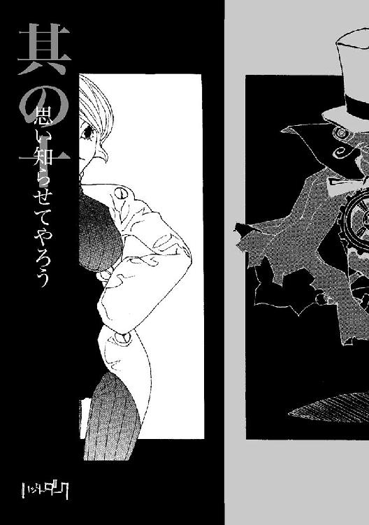

| ハンターダーク (TO文庫) | |
| 秋田禎信 | |
| (2013) | |
闇に閉ざされ、法も秩序も無い地下世界。鋼の身体を持つ機械人「ザ・ハンター」は失われた過去の記憶を求めて旅を続ける。そんな彼を含む５人組と、この世界を支配する謎の組織「結社Ｋ」との壮絶な戦いが始まろうとしていた......。終わらない夜に、闇の一党が手にする＜果てなき夢＞とは!? ライトノベル界の俊傑が書き下ろす、ＳＦアクション巨編！
カバーデザイン：山田満明／TOブックスデザイン室
カバーイラスト：田島昭宇
キャラクターデザイン原案：岸啓介
此処が何処であるのか。それを問うても意味のない処。
烏夜の闇深く、空もなく、大地の上にはガラクタばかりが降り積もり、もはやその鉄屑と瓦礫こそが地面となっている。その上にさらに置かれた廃棄品が町の姿に見えないこともない。実際、其処は、町として住民も居る。
町の中央へと近い場所に、時計塔がある。この時計塔とて廃棄品だ。地面に建てられたのではなく、捨てられて其処に落ちているというだけ。
傾き、朽ちかけた時計塔の屋根だが、其処は町で最も高い場所だった。怪物姿の彫像がぐるりと並び、そのうち一体は何処かへと転げ落ちたものか、十六ある台座はひとつだけ空だった。
今はその空位に怪物と同じく奇怪な影がひとつ、立って町の全景を眺めている。
町はすべて深い闇に閉ざされ、町を観望できる者など居るはずがない。だがその怪物──ザ・ハンターは町を見ていた。積層統計透視覚は光を必要とせずにすべてを観察する彼の機能だ。登る道もないこの屋根に登ったのも並はずれた運動性能を誇る彼の機能。彼は機械人だった。
ハンターが見つめるは、機械人が生活する町の一角、どうという特徴もない裏路地の一軒家である。もとは巨大なコンテナだったものを、家のように利用しているといった代物だが、この町においてはまだしも上等な家だ。なにしろ屋根も扉もあるのだから。遥か遠くのその家の細部までも、ハンターの視覚はのぞくことができる。
この奇妙な町にも風はある。塔の下から吹き上げる温風に長い鉢巻きをたなびかせ、ハンターは囁いた。口元に当てた携帯型通信機へと音声を吹き込む。この澱んだ夜に、動きを、命を吹き込むがごとく。
「やはり奴らは暴れるつもりのようだ。犠牲者が出る前に止める」
「了解した」
通信機から返事が聞こえたか否かのところで。
ほんの瞬きも間に合わないほどの一瞬で。ハンターの姿は、もう其処から消えていた。
「だぁぁぁかぁらぁ、言っただろう！ この爆腕党に大人しく従っておいたほうが身のためだってなぁぁ！」
玄関の扉をぶち破って突入したアームボンバーは、この西十六区でも多くの機械人に恐れられる、いわゆる荒くれ者だった。
並はずれて巨大なボディは無双の怪力で、この町に現れた途端に、彼はその地位を保証されていたようなものである......そして彼は、当然躊躇いもせずその座を得たし、目一杯活用してきた。荒くれ者たちをまとめるギャング団のボスだ。
コンテナを利用したその家は、機械人数人が生活するのに十分な広さがある。それでもこのアームボンバーが中に入って豪腕を振るうと、いちいち壁にぶち当たって巨大な音を響かせた。
家の持ち主は、平凡な四人の機械人である。それぞれサイズが異なる同型で、まるで家族のように誂えられた四体というのは珍しいが、一揃いで造られたと思しき機械人というのは居ないでもない。子供のように丸く小さい機械人二体を背後に庇い、親のような二体は怯えて震えていた。
アームボンバーは、彼にとっては低すぎる天井に頭と両手を突いて、さらに大声を張り上げる。発声装置から。
「逆らうから、こぉんな目に遭うんだよぉぉ！ なんでそんなことも分からねぇんだ。馬鹿か！ 脳が馬鹿か！ 伝達物質とパルスも馬鹿か！ 分かるだろ普通！」
巨大な機械人が力を入れると、コンテナがめりめりと音を立て始めた。本来、重機を運搬するのに使われているらしい頑丈なコンテナだが。
数秒と保たずに、アームボンバーの豪腕がコンテナの屋根を引きちぎった。機械人は屋根をぶん投げると今度は壊れた壁を次々打ち据え、破壊していく。たちまちコンテナは数枚の板切れになってしまった。屋根も壁もなくなり、もはや内部も外部もないが、外にはアームボンバーの手下たちである同様の荒くれ機械人が回りを取り囲んでいる。何人かはアームボンバーがコンテナを破壊する際に放り投げた天井や壁に当たって倒れているが。
アームボンバーが吠えると、手下たちも唱和した。めいめい好き勝手に叫んでいるだけなのだが、意味はひとつだ。
「殺されッぞ！ お前ら、スクラップだ！ たった今からよ！ 一気にゃあ済まさねえ！ じっくりたっぷり押し潰すッ！」
刹那である。
上空からなにかが落ちてくる音を、果たして彼らが集音装置で拾えたかどうか。球形の塊が突如としてその場に落下した。どすんと、コンテナの唯一残った床が揺れる......床で震えたままの、四人の一家のすぐ近くに、それが落ちたのだ。着地の衝撃で床が傾き、アームボンバーも軽く跳ね飛ばされかけた。落ちた球体はアームボンバーに比べれば小さいものだったが、彼よりも重かったのだ。
「な、なんだぁ？」
全員の視線が、その球体に集まる。球体には手足があり、頭部も見受けられる。機械人だった。彼は無言のまま腕を伸ばすと四つん這いになり、一家の上にのしかかる。これから起こるなにかから四人を守るように。
ぽかんとするアームボンバー、そしてその手下たち。全員の背後、つまり落ちてきた球体の反対側でまた新たに物音がした。小さな音だったが、静まり返っていただけに誰の耳にも聞こえた。
「誰だッ！」
一斉に振り向いたその先にいたのは、やはり機械人だった。隠れようともしていない。大勢の荒くれ機械人を前にして、むしろ嬉しくてたまらない様子だった。どちらかというと小柄に見える、青く細長いメタルボディ。長い両腕の先には、二丁の拳銃を手にしていた。機械の眼を悦びに満たしている。
その拳銃を構え、機械人は告げた。嗤いながら。
「今日ブッ殺されるのはよ、オ・マ・エ・ラ・ダ・ヨッ！」
凄まじい速度で撃ちはなった銃弾が、たちまち数体の手下を吹き飛ばした。銃弾は標的に命中するとぐちゃりと潰れて衝撃と化す。機械体を破壊はしないが、威力だけで機械人の運動機能を狂わせ、しばらく動けなくする。
倒された仲間を見て、爆腕党は悲鳴をあげた。
「闇の一党だぁぁぁッ！ 本当に来やがった！」
わぁっと逃げ出し、物陰に隠れようとする機械人から順番に、拳銃使いの機械人は精確に撃ち抜いていった。たった二丁の拳銃を振り回し、逃げまどう十数の機械人を片っ端から撃っていくのだからその手の迅速さは言うまでもない。
アームボンバーもボディに数発を食らっていたが、後退りする程度で耐えている。というより逃げようにもその巨体では隠れ場所もないのだが、次々に倒されていく手下を見回しつつ、拳銃使いへと声をあげた。
「お、おめぇらは西地区に現れたことはなかったろうが！ なんの気紛れだッ！」
拳銃使いは高笑いして応じる。
「ヒャハハハハ！ 今日から此処もパトロール範囲内さ！ しばらくブッ放してなかったから溜まった分も余計にブチまけるぜぇ！」
答えながら、大笑しながらも手を休めることはない。宣言通り、明らかに余分に撃ちまくっているのだが、だからといって的を外すわけではない。おかげで一度撃たれて倒れたからといってもう狙われないということもないわけだ。動かない手下たちも、再度の命中を食らって竜巻のように飛び跳ねる。
吹っ飛んだ手下が頭部に当たって、アームボンバーは大きくよろけた。忌々しげにその手下を殴ってから拳銃使いへと向き直る。
「き、昨日も東と北に出てキツツキ一家とヒラメ団を潰したって聞いたぞ」
「ヒャーハハー！ そうだよッ！ かれこれ四時間もブッ放してねぇぇぇぇ！」
その間、先に現れた球形の機械人は微動だにせず、一家四人を守り続けている。状況の変化が度重なっておろおろしている四人を庇って、吹き飛んだ機械人が当たってこようとまったく動かないし、傷ひとつない。並はずれた頑丈さだった。
うまいこと難を逃れた手下が一体、その路地から逃げ出そうとしていた。到底勝ち目はないと踏んだのだろう。物陰から物陰を伝い、そして路地を曲がると......
行く手に立ちふさがる、さらに二体の機械人がいた。一体は帽子とマントを纏った涙滴型の機械人。宙に浮いている。
そしてもう一方は緑色の流線型、蛙のような姿の機械人である。右手には携帯できる箱型通信機、そして左手には、抜き身の剣を携えている。
切っ先を上げ、剣を持った機械人は低く殺した声音で、ぼそりと告げた。
「とうに警告はしてあったはずだ。今更逃れようなど、図々しいこと」
手下が悲鳴など発する隙もなく。
斬撃の衝突音が轟いた。頭頂から股間まで一刀両断された機械人が、左右に分かれて倒れるのを見とどけるまでもなく、剣士はその剣を背中の鞘に収めた。マントの機械人が背後で口を開き、其処に手を入れる。彼は口から黒い百合を一輪、取り出した。
剣士はそれを見て、詫びるように頭を下げる。
二体はそのまま路地を通って、拳銃使いの銃弾が乱舞する場へと向かった。もはや立っている手下など一体もない。アームボンバーだけがぼろぼろになりながらも、まだかろうじて倒れていなかった。
剣士とマントの機械人、二体が現れたところで、拳銃使いは銃撃を止めた。
立ちこめる硝煙の他に動くものはない。ゆっくりと、球形の機械人が身体を起こした。ようやく戒めを解かれたとばかり、一家四人の機械人は、騒ぎ立てながら脱兎のごとく逃げていく。彼らの姿も見えなくなったところで、アームボンバーは合計四体の機械人......剣士、拳銃使い、マント、球形の四人組と対峙する形になっていた。
アームボンバーはしかし、それで観念したりはしなかった。倒れて動かない手下たちを蹴散らし、自慢の豪腕を振り上げる。だが豪腕で殴りかかってくるのではなく、彼は太い指を四人組に向けた。
「あ、甘いのはおめぇらだぜ！ 警告を無視したのはなんでだと思う！ 勝つ自信があるからだ！」
戦うためだろう。それとも逃げ道を確保するためか。邪魔な手下を何体か放り投げて足場を確保していく。威勢を増して、アームボンバーはさらに声を張り上げた。
「此処に居ただけが全員じゃねぇぜ！ 俺たちはゼニドクロ一味と同盟したのさ！ 奴らの戦闘部隊がぐるりを固めてるんだ！ 逃げられねぇのはお前らだ！」
四人はそれを前にしても、特にどうと動くこともない。
「何体だ」
通信機を耳に当て、落ち着き払って蛙の剣士が訊く。
「そのゼニドクロ一味とやらは兵隊を何体出した」
「さ、三十はくだらねぇ！」
その数字を口にするのは、アームボンバーにとってはちょっとした賭けだったのだろう。三本の指を振り回し、四人の反応に見入る。
剣士は通信機を頭部から離した。これもまたこともなげに言うだけである。
「そうか。では全員片付けたそうだ」
どかどかどかっ！ と、大勢の機械人の身体がアームボンバーの上に降り注いだ。それこそまさに三十体はあっただろう。ボディの末端を破壊され、身動きできない状態になっている。その大量の兵隊に押し潰され、地面に押さえつけられたアームボンバーの頭上に......
音もなく、ハンターが着地した。上空に渦巻く無明の闇から現れ、姿を見せたとしてもまだそこに気配を感じさせない。爪先を足場に触れさせても、身体はまだ飛んでいるかのごとき軽妙さ。動けぬアームボンバーの上に仁王立ちし、腕組みして、其処に勝負の終わりを告げる。
ハンターは身を屈め、アームボンバーの集音装置に囁きかけた。
「残ったのはお前だけだ。二度と暴れられぬよう、その腕、壊させてもらう」
「こ、こんなことしてお前らになんの得があるってんだ」
もはや抵抗もできないが、音声だけなら文句も言える。アームボンバーは頭部を回して叫き立てた。
「町を支配でもするのかよ。それとも、この町を変えようってのか！」
「そのどちらでもない」
仁王立ちにもどって、ハンターは答えた。
「己を支配し、己を変えるためだ」
虚ろが支配のこの町に、五人が現れ出でたのは、果たしていつの日のことか。
機械の人が生きる場所、法も秩序もない町を、今日も彼らは疾駆する。
終わることないこの夜に、終わることなく戦い続け、頼みとするのは己と仲間。
鋼の身体は呪いか罰か、わずかに残った脳みそで、悩んだところで答えは出ない。
ならばと駆けるそのうちに、いつしか呼び名もついて回る。
ザ・ハンターとその一党、鬼の強さの五人組。
恐れを知らぬ馬鹿者が、恐れるならばそれもよし、彼らは自ら名乗り出す。
闇の五人が求めるは、掴めぬ夢か掴める夢か。
此処が終わらぬ夜ならば、夢も果てなく続くだけ......

ギィィ......ギィ......
軋む音がする。
不快な音を閉め出そうと耳を塞ごうにも、身体は動かない。暗い。なにも見えない。自分が何処にいるのか。自分が誰なのか。なにも分からなかったが、そんなことよりもその音だった。耳障りでしかも耳から離れない。板金を重ね合わせ、その上から憎しみを込めて踏みにじるような、重い音。摺り合わされた金属が悲鳴をあげ、聞く者を引きずり込もうとしているような、そんな音。
軋む音は終わらない。のたうっても、叫んでも、あるいはじっと耐えても、どこまでも追ってくる。音は闇をますます深く濃い黒へと塗り込めていく。不快さに身悶えしながら、彼は自分が指一本動かすどころかまぶたを開けることもできないのに焦りを覚えていた。いや、呼吸すらしていない。焦燥は募るがなにもできない。鼓動の音すら聞こえない。肺も心臓も、筋肉も骨も体から剥き取られてしまった。
あるのはただその軋む音。
意識だけは冴えている。こうした症状には覚えがあった。身体は眠っているのに脳だけが起きている。金縛りというものだ。そんな時には幻聴を聞くものだという。完全に目覚めるか、それとも脳のほうも眠ってしまえば金縛りは終わるはずだった。だがおかしい。音はどんどん大きくなってくる。夢に囁かれているようだった。こちらへ、来いと。
呼んでいる......呼んでいる......起きろ......始めろ......開始せよ......
ぱちっ。一度だけ閃いたそれは、通電音に似ていた。突如としてそこは闇ではなくなった。誰かが灯りを点けてくれたのか。違う。それが光によって照らされた映像でないことは直感で知れた。なにしろ彼はまだ目を開けてなどいなかったのだから。
そこは荒れ果てた部屋の中だった。天井に大穴が開いている。
見えないはずのその室内を、彼は見回した。それほど広いものではないが、もとは住居だったのだろう。ぼろけて屑まみれになったソファーや、押し潰されたテーブル、衝撃で全損した食器と止まった時計。天井を突き破って落下してきたなにかが、この部屋をそうまで破壊したのだろう。彼は足元を見やった。床の損壊は、彼の立っている場所が最もひどい。陥没して階下まで穴が開きかけている。しばし考えて、彼はようやく理解した。落下物とは、恐らく、自分だ。
痛みはない。いやそれどころか......まったくなにもない。途方もない喪失感に圧倒されて、再び意識が遠のいた。だが、かといって眠れない。自分がなにを喪ったのかが分からないままに、彼は悶えた。立ち上がったはずだがその感覚がないのだ、と時間をかけて理解した。
天井の亀裂をのぞくと、さらに階上には何部屋もあることが見て取れる。此処は高い建物の、中程の階なのだろう。それをすべて突き破って落下したのなら、身体が無事なはずはないのだが。寒さも暑さも感じない。そもそもいつの間に立ち上がったのか、それも気づいていなかった。それともずっと立っていたのだろうか。
軋む音は変わらず途切れないが、それを発するような機械も、金属片も、室内にはない。音はひどく近い。他にはなにも聞こえないくらいなのだが、これはそこが静かだったせいもあるだろう。
彼はいまだに目を開けていなかった。それでもすべてが見える。色も濃淡もない、奇妙な風景。光も影もない。だというのにすべてが分かる。空気に混じった埃の一粒まで知覚できる。それが力無く舞い、触れ合う寸前にすれ違い、余計に距離を取って離れていくのも、分かりすぎるほどに。
これは、なんだ？
影がどこにもないその視界は現実離れして実感に乏しい。集音装置が拾って脳にとどけてくるのは鳴り止まない金属音。完全暗視システムは順調に稼働中。積層統計透視覚に雑像なし。バランサーは増殖メタルボディを設定重力下において制御。増殖再生率、現在１００・０２％。固定エネルギー炉、問題なし......
それらの言葉は、自分で思い浮かべたものではなかった。何処かから頭の中へと流れ込んでくる。
どういうことだ？ 俺は、頭の他に何処で考えている？
「開始せよ」
それは声ではない。
だが聞こえてくる無意味な言葉の羅列に混じって、唯一理解できるメッセージだった。
「始まれ。ハンター」
なにを始めろというのだ？ 身動きもできないこんな身体で？
「それでもそれがお前の身体。追い求め、跳べ、掴め。開始せよ！」
これがか！
彼は己の、金属製の両手を見下ろして叫んでいた。腕だけではない。身体も、顔も。透視覚は自分の顔すら見ることができた。身体が鋼をまとっているのではない。動こうとするたび、特殊合金のボディは関節から異音を発する。歯車が噛み合わないように、駆動部分が引っかかって動きを抑制していた。すべて......芯まで、髄まで、身体のすべてが機械で出来ている。
跳ぶどころか、満足に歩くこともできそうにない。首を回すのにすらじれったいほどの手間がかかった。部屋には窓があった。窓の外にはなにもない。崩れた天井が戸口を塞いでいたため、この部屋の出口は窓だけのようだった。
全身引きずるようにして、窓へと寄っていく。彼が考えるだけで身体は動くようだが、やはり歩いているという実感はない。重々しい軋み音が苦悶のうねりとなって動きにくさを伝えてくるが、彼自身、今進もうとしているのが右足なのか左足なのか分かっていなかった。機械の身体が勝手に歩いている。
自分が呼吸もしていないことに、彼はようやく気づいていた。呼吸など必要ではない。生体脳ユニットは動力からエネルギーを提供されている限り、それ以外なんの補給も必要とせず生命を維持できる。誰に説明されるのでもなく、また頭へと流れ込んでくる知識だった。それはすべて彼のことを語っている。彼の名前も教えてくれたはずだった。
なんといったか？ そう。確か、ハンターと呼んでいた。
「オレハハンター」
彼は囁いた。いや、そう意識したことによって、発声装置から音声が漏れた。
調整を加えて声を選択する。何度か繰り返し、彼は納得できる声質を探し当てた。
「俺は、ハンター、か？」
気がつけば窓まで辿り着いていた。のぞき込む。
見えたのは町だった。
みすぼらしい、ガラクタの町。だが確かに町だった。
膨大な闇に覆われて、彼の透視覚でなければ全景は見渡せなかったろう。あまりに広い、機械の残骸が山となって積み重なった荒野の上に、その町は建っている。建物は建造されたというより、ただそこに置いてあるだけなのか。ほとんどの建物は傾いていた。ぽつぽつと光が灯っているものの、光景の広さに比してひとつひとつの灯りはあまりに小さい。闇に飲み干されていないのが不思議なほどに弱々しい。
空は暗い。ただ暗いだけでは済まされない。重く、黒々と閉ざされて見える。瞬くことのない星が無数に散りばめられた黒い空だった。彼ののぞく窓は地上から十数階はあったろう。だが空の高さには当然遠く及ばない。
彼のいるビルもまた、地面からは傾いている。バランサーが勝手に平衡を取るため、今まで自覚していなかった。ハンターは言葉もなく、光景のすべてを把握するまで身じろぎもせずひたすら外を眺めていた。窓から身を乗り出し、闇の中にあごを突き出す。見えるものは変わらない。残骸の上に、でたらめに立ち並ぶ町の姿。
黒い空に点在する星は瞬かず、また動かない。これはいつまで経っても朝が来ないことを意味しているのではないかと、ハンターは悟った。
彼のいるビルはその町からだいぶ離れている。窓から眺め回しても、なにも動いている物は見当たらない。
と、目の前をなにかが落下していった。
闇夜を黒い滴が幾粒も通り過ぎていく。雨だろう。だが水ではない。
窓から半身を乗り出していたハンターは、さらに手を伸ばしてその滴を捕まえようとした。機械の手はぎこちないながらもその雨粒を捕まえた。粘り気を含んだ雨粒が、閉じた拳から滲み出す。だがそうするまでもなかった。黒い雨は次第に勢いを増し、捕まえようとせずともたちまち全身に降りかかってくる。
各部に染み込む黒い雨を、身体が分析して答えを出してくれる。これは油だ。
オイルの雨。油が降るなどという気象現象があり得るだろうかと、ハンターは自問した。答えは浮かばない。ただそれが起こっているという事実を認めるしかなかった。勘違いではない。これはオイルの雨だ。終わらぬ黒い夜から降ってくる。
さらに奇妙な事実を彼は見つけた。オイル雨に晒されるうち、あの軋み音が小さくなっていく。窓から外にある両腕の動きが滑らかになっていく。震えながら一粒しか触れられなかった腕が、今度は思うだけで瞬時に閃き、数十ものオイル粒を弾いた。腕だけではない。首も。胴体も。関節の稼動範囲まで広がっていく。
「オオ......オ......」
ついには軋み音が消える。渇きに水を欲するように、ハンターはもっと前に出ようとした。出過ぎたのだろう。気づいた時には十数階の窓から落下していた。
ただひたすら広い闇だけを見ていたため、そして全身の無感覚のためもあるだろう。自分がいつから落ちていたのかも定かではなかった。無数のオイル粒といっしょになって、暗い地面へと雪崩落ちていく。周囲で闇夜に煌めくオイル雨の一粒一粒を、彼はすべて見ていた。落下距離も正確に、１ミリ２センチ３メートルと加算して数え上げていく。現在の重量、加速度、着地点の障害物。瞬時に閃き、計算結果を重ね上げる。
ハンターの身体は空中で回転し、地面に足を着いた。固い物がぶつかる大きな衝撃音。ともに落ちてきたオイル粒が一斉に弾ける騒音。着地がどれだけの衝撃だったのか。痛覚のない身体には分からない。
地面はバラバラになった機械の部品で出来ている。オイル雨はそれらガラクタの隙間に染み込み、あっと言う間に姿を消す。ひっきりなしに降り続ける黒い雨の中で、ハンターは立ち上がった。駆動に一切の損傷なし。見上げると、彼が滑り落ちた窓は遠く頭上にある。元は集合住居であったらしいその建物はとうに半壊し、両端から崩れ落ちて三角の山のようになっている。
視界を下に向ける。踏みしめた足の下で、分解されたブラウン管らしき部品がひび割れて音を立てる。
なんの気なしに彼は跳び上がった。もと落ちた窓を見たかったのだ。だが結果は想像を超えていた。軽く跳躍した身体はあっと言う間にその窓を通りすぎた。高度はどんどん上がっていく。ただの一跳びでその建物の屋根を軽く跳び越し、黒い空へとぐんぐん吸い込まれていく。
この身体は......？
雨の飛散する以外なにもない虚空で、ハンターは放物の頂点を迎えた。ほんの瞬間だけの静止から今度は落下を始める。
角度の問題だろうが、着地した時には先ほど跳んだ位置からだいぶ遠ざかっていた。振り返ると崩れかけの集合住宅は小さくなっている。
もう一度跳ぶ。躊躇う間もなく身体が勝手に動いていた。暗闇をものともしない彼の視覚が遠ざかっていく地面を見下ろす。どこまでもどこまでも上昇し、そして。
頭上から迫ってくるものがあった。いや、彼が近づいているのだ。地面と同じくらい巨大ななにかに。
天井だ。彼はすぐ見て取った。暗闇の上に空はなかった。固く重い岩盤の天井が見る見るうちに接近してくる。岩と岩の間には縦横無尽に鋼のパイプが張り巡らされていた。蜘蛛の巣のようにも見える。
遠くから見れば細いパイプだが、近づくにつれてそれの本当の大きさが分かってきた。太さはまちまちだが、一番多いのは彼の身の丈ほどの直径を持ったパイプだった。それの元になっているのは数倍太いパイプで、もっと細いパイプもある。ハンターは身を翻し、パイプのひとつに手をかけた。ぶら下がったまま見回す。パイプの各所には、作業灯が備え付けられている。そのいくつかが弱々しく点灯していた。星に見えたのはこの灯りだろう。
と、じわじわと身体が落ちかかっていることに彼は気づいた。見るとパイプを掴んだ手が滑りつつある。パイプは粗末なもので、あちこちに亀裂があった。その亀裂から黒い液体が溢れ、こぼれ落ちている。オイル雨の源が此処だった。
と理解したところで、完全に手が滑った。落下してもそれは実感がなく、ただ視覚から得る情報でそうと知っただけである。虚空を流れ落ち、ハンターは今見たものを思い起こしていた。あれは天井だった。夜よりも黒く重苦しい空は冷たい岩盤だった。あの天井は、彼処にだけあったのではない。どこまでも広がっていた。
此処に空はないのだ......
だから闇に閉ざされている。何者かが空に岩を被せたのか。だが、世界から空を奪うことのできる存在とは、どんなものなのだ？
下を向くと、先ほどの作業灯よりもさらにもっと儚い、地上の光がぽつりぽつりと目に入った。跳び上がった地点から、またずれている。垂直に跳んだつもりだったのだが、まだこの身体は完全に彼の意志に従ってくれるというわけでもないらしい。
着地したのは町中だった。
残骸の上にガラクタを積み重ねた、そんな建物のてっぺんに、彼は降り立っていた。相当の速度だったはずだが音もない。闇の中に着地した彼の姿に気づく者もいない。足元を見るとそこは傾いた時計塔の屋根だった。怪物の姿を模した彫像がずらりと並んでいる。いくつかは欠け、壊れていた。時計もまた止まっていた。というより針が残っていなかった。文字盤にある数字は４と12が欠けている。８と７以外はすべて上下が引っ繰り返っている。３はそれに加えて外れかけ、かろうじてぶら下がっているだけだ。
ハンターが目を凝らすと、町の姿が脳に注ぎ込まれてくる。
どこまでもガラクタばかり。壊れた機械と動かない部品ばかり。それがせめぎ合い、町を形作っている。地上からかろうじて立ち上がっている残骸の影は、空より降り注ぐオイルの雨を受け、濡れている。
そしてその狭間に蠢くものが無数にあった。機械の人形が道を行き交っている。そう多くはない。だが、どの路地にも大抵、ひとつやふたつの機械人が歩いていた。
機械人......？
その呼び名も自然に湧いて出たものだった。機械人。彼らは機械で出来ている。そう、恐らく、彼自身と同じものだ。
誰もハンターには気づかない。彼は屋根の上で身動きもせず、周囲を一回り観察した。樽のような形状をした機械人が道の角を曲がろうとして、その路地になんの灯りもないことに気づいたのか後戻りした。その路地の暗がりに潜んでいた別の機械人が悔しがるように、手に持った金梃で地面を擦った。誰かが通るのを待っていたのだろう。別の通りではもっと物騒な凶器を構えた何体かの機械人たちが、互いに顔を寄せて相談事をしている。別の物陰では、地べたに正座した機械人が歌を歌っていた。誰も彼を見ず通り過ぎていく。
町は暗闇が圧倒的に多い。今彼に見えたものはだいたいが闇に隠され、誰にも見えないはずだった。彼、ハンターの視覚には関係がなかったが。
再び彼は跳んだ。今度は高くへではなく、屋根から屋根へと移るように。試すうちに、自分が強く速く跳ぶことも、柔らかく静かに跳ぶことも可能だと分かってくる。
飛び移るたび違うものが見える。商店でなにかを取引している一団があれば、なにもせずただ空を見上げる機械人がいる。ハンターがその上を跳び越えても、その機械人はなにも気づかないようだった。
動けば動くほど身体の癖が分かってくる。最初はどこへ跳ぶのかも怪しかった身体が、望むところへと的確に移動できるようになって、彼はさらに移動を繰り返した。跳ぶたびに町の新しい場所へ。違うものが見えてくる。
何処にいるのも機械人だったが、ほとんどすべてが違う形状である。
此処は......なんだ？
自問する。町に違いない。機械人の町、機械人だけの町だ。
闇を飛行する彼の存在に、どの機械人も気づかない。ハンターにははっきりと見通せる闇だが、他の機械人にはそれができないのか。そうに違いない。機械人たちは怯え、わずかな灯りに群がり、寄り添っている。みなが闇を恐れている。
やがて、オイルの雨が止んだ。折れかけた尖塔の壁に張り付いて、ハンターはそのせいでまた身体が動かなくなるのではないかと危惧した。腕を振り回すが、ひとまずは支障ない。大丈夫のようである。
「此処は不思議なものばかりだ」
小さく声に出して、彼は囁いた。理解できないのは町だけではない。己の身体のことすら分からない。
何処へ行けば知ることができるのか。
彼は顔を上げると、四肢を打ち据えるようにして大きく跳躍した。どれだけ強く蹴っても感触はない。それどころか、高速で移動している実感すらない。ただ入力される情報によって、自分の姿勢、高度、軌道の予測......それが分かるだけだ。
降り立った先は町から離れた闇の中だった。
彼の視覚でなければなにも見えなかっただろう。うずたかく積み上げられた機械の残骸。その山が幾重にも連なったその狭間。彼はそこに降り立った。
思い浮かべたものは、墓場だった。それにしてはぞんざいなものだが。地面になっている、足元の残骸。積まれた山はそれと同じものである。どうしてこうまで残骸を積み上げてあるのか。彼はすぐに直感した。この近くで地面を掘っていたのだ。違いない。だが、なんのために？
些細な問いに過ぎなかったが、彼はそれを知りたくなった。知らないことが多すぎるので、ひとつでもいいから疑問を埋めたかった。彼は音もなく跳躍すると、一番近いガラクタ山の頂上に跳び乗った。目を凝らす。
予想通りだった。やや離れた場所にだが、巨大な縦穴がある。区画がひとつすっぽりと収まるほどの規模だった。誰がなんのために掘ったのだとしても、ひとりでやったことではあるまい。大勢が長い年月をかけて此処を掘った。そして今、此処には誰もいない。
少なくとも見える範囲では無人である。なにもない。いや......
大穴の縁に、小さな四角い建物を彼は見つけていた。其処へ向かって跳ぶ。狙いは外れず、ハンターは建物のすぐ目の前に着地した。近くで見ればその小屋もまた無人だとすぐに知れた。入り口に板が立てかけられ、塞いである。いかにも間に合わせの処置で、はがせばすぐに入れそうだったが、それだけに既に放棄された小屋なのだということも分かった。
戸板に手をかける。引きはがすと、板を固定していた針金がキリキリと音を発して千切れていった。入り口の奥は暗く静まり返っていたが、もとより周囲の静けさと変わりない。中は狭く、ひとりふたりが入れば肩を触れさせずにいることは難しいだろう。戸板に隠れていた表札が目に止まった。こう記してあった。『監督所・作業者は立入禁止』
それがどういった理由で立入を禁じていたとしても、今はもう見られて困るようなものも残っていないようだった。プラスチック製の床に椅子の脚がつけた痕はあっても、椅子そのものは見当たらない。小さな窓は入り口と同じく板で塞いである。窓の位置からすれば、この小屋の主は居ながらにして縦穴の様子を眺めることができただろう。戸棚も、書類入れも、なにもない。壁に一枚、メモに使われたらしい紙片がピンで貼り付けたままになっていた。ぞんざいな筆跡で、こうある。
『厳命・発掘物を横領した作業者二名・今日中に分解』
メモは書類の裏面に書かれたものだった。裏返してみると、細かい日付と時間チャート、およびそのタイトルが目に入る。
『採掘場・作業計画書』
残っていたものはもうひとつ。壁から落ち、床に転がった壁掛け時計だった。落下して表面が割れたのでそのまま捨てられていったのだろう。細かくひび割れたガラスが汚れたままの床に散っているが、光がないため反射して輝くこともない。此処ではガラスもまた、埃と同じで黙っているしかないのだろう。
時計など、昼も夜もないこの場所でなんの意味があるかは分からないが。と思いかけて、彼はふとその時計の意味を悟った。作業時間を計るためだ。時計はまだ動いている。時刻が正しいかどうかは分からない。が、秒針は規則正しく移動を続けていた。それによると、時刻は八時。午前か午後かは分からない。八時七分四十六秒......七......八......
「............？」
ハンターは異変を感じた。
その針と文字盤が突然、二重にぶれた。見えていたはずのものが見えなくなる。
それだけではない。思考速度すら絶望的なまでに鈍っていく。感じられないだけではない。考えることも思うこともできなくなる。
これは......睡魔か？
すぐに察するものの、ただの睡魔との違いも感じている。まったく抗えないのだ。彼はそのまま暗闇に落ちた。透視覚でも見通せない意識の闇へと。
意識を回復させると、彼は床に倒れていた。うつ伏せているが、透視覚が機能を開始すると周囲のすべてが自動的に理解できてしまう。真っ先に感覚が捕らえたのは時計の文字盤だった。時刻は二時過ぎになっている。
時間が進んだのか、もどったのか。どちらにせよ六時間進んだのか十八時間かそれ以上進んだのかも分からない。ハンターは己の身体に体勢を直すことを命じた。やはり触感はないまま両手が床を押し、身体を持ち上げる。
時計の他に変化はない。いや、身体を動かした際、軋み音が耳についた。関節が鳴っている。動きが鈍るまでは至っていないが。いずれまた動けなくなるのかもしれない。
またあのオイルの雨を浴びなければ......
彼は小屋の戸を開け、外に出た。雨は降っていない。
悲鳴が聞こえた。そう遠くではない。ハンターは音の方向へと注意を向け、ガラクタに埋もれた地面を蹴った。跳躍中に着地点を探り、情報を得て降り立つ。そこはまだ採掘場とやらの敷地内である。掘り出され、積み上げられたガラクタの山のひとつにハンターは着地していた。四つん這いで首だけを傾け、音の出所を正確に求める。それは難しいことではなかった。音の主たちは、別に隠れようともしていなかったからだ。
「お、お助けください！」
震え声で懇願している。金属がぶつかり合い、揉み合う騒音が続いた。当然だがひとりではない。
「オラー！ なにがお助けだ！ 泥棒はてめえじゃねぇかー！」
衝突音。誰かが誰かを殴ったのだろう。
また悲鳴。最初の声の持ち主だ。地面に倒されたか音質が変わっている。
「す、すみませんすみません！ 泥棒だなんてそんな......わ、わたしはただ廃坑のおこぼれをいただこうと......」
「てめえみてぇな爺ィに、そんな都合よく残り物が見つけられるわけがねぇぇぇ！ 採掘ん時、てめえがこっそり隠しておいたんだ。そうだろう！」
「ひ、ひい！」
ハンターは再び跳んだ。着地点はそのガラクタ山のすぐ下。機械人が六体いる。そのうちの一体を、残り五体が取り囲んでいた。
彼が闇の中、音もなく降り立っても彼らは気づかなかったろう。だがそこには光があった。周りを固めている大柄な機械人の一体が、光を放つ物質を手にしていた。皿に乗せた粘土のような物体だが、真白い輝きを放っている。その光が全員を、そして降り立ったハンターを照らし出していた。
彼らに囲まれ、怯えきった様子で震えているのは、古びた機械人だった。あちこちに壊れたらしい箇所も見える。紙包みを後生大事に抱えていた。彼らはこれを取り合っていたのだろう。
「誰だてめえは！」
光る粘土を掲げた機械人が厳つい声をあげる。もしその機械人にも音声の調節機能がついているのであれば、恫喝のためそんな声にしてあるのだろう。ハンターは無言のまま、光る物質を見つめていた。分析結果はこう伝えてきている。不燃発光物質。固定エネルギー炉停止後に生じる老廃物。熱量ほぼゼロ。ボディ及びソフトウェアへの影響なし......無毒。
「俺は、ハンター」
他に答える言葉を知らず、ハンターは名乗った。機械人たちは、責められていた一体までも含めて、呆気に取られたようである。
ゴロツキじみた風貌の五体は、実際まさにそのために設計されたのではないかというくらい相応の形状といえた。身体に比して不自然なほど腕が太く、巨大でスパイクのついた拳は威圧感がある。どれも少しずつ違う形をしているが全員似ていた。五体は、古い機械人を取り押さえる一体を残して四体、包囲をハンターへと切り換えた。四方を囲み、キリキリと音を立てて拳を回転させる。
「ただの馬鹿か」
ちょうど背後に回った機械人が嘲りを発するのが、聞こえた。
「なら、バラして遊ぶ相手が倍に増えたってだけだ」
「何故だ」
身動きもせずハンターは問いかけた。
「どうしてお前たちはそんなことをしている」
今度こそ全員、絶句したらしい。表情のない機械人たちの顔ですらそれと分かるほどの、拍子抜けの気配が浮かぶ。
答えのないまま、右の一体が動きを始めた。両腕を振り上げて殴りかかってくる。ハンターはそれを知覚していた......知覚して、その一瞬後に起こったことについては、よく覚えていない
行動が終わった後に、後を追ってそれを理解した。彼は身体を下げて横に跳んだのだ。殴ってきた一体の拳をふたつともすり抜け、機械人の腕と身体のわずかな隙間を、触れることもなく通り過ぎた。
気がつくとハンターはゴロツキたちの輪の外に居て、古機械人を羽交い締めにする一体のすぐ背後に移動していた。彼自身の他には誰も、彼の移動を理解できていない。機械人たちの死角で、誰からも姿をくらまして、ハンターはほんの半秒、彼らを眺めた。突如として消え去ったハンターを探して、全員があたりを見回している。彼らに推測し得るハンターの移動先、彼らの常識の範囲内、とどのつまりはハンターが居るはずのない場所をだ。
「此処に居る」
ハンターは音声を発して、目の前の機械人を背後から打ち据えた。凄まじい速度で彼の手刀がゴロツキを突き飛ばし、おかげで老機械人は解放された。老機械人は悲鳴をあげ、それこそゴロツキに取り囲まれていた時よりも一層怯えた様子で逃げ出していった。あれほど大事に抱えていた紙包みすら放り出して、暗闇の中へと一目散に消えていく。
「なんなんだてめえは！」
機械人がまた同じことを問うてくる。だが先ほどより多くのことを答えられるわけもなく、ハンターはそれを無視した。次々と躍りかかってくる機械人らを左右にかわし、老機械人が落としていった紙包みを拾い上げる。
「このーッ！」
業を煮やしたか一体が拳を衝き上げ、気合いを叫ぶと、その拳のスパイクが音を立てて伸びた。続いて他の四体も同様に雄叫びをあげ拳を変形させる。棘だらけの拳を構えて、さらに声をあげ威勢を示す。
「もう容赦しねぇぜ......え？」
そう脅しをかけようとする機械人の頭の上に、ハンターは飛び乗った。もはや彼らを気にかけず紙包みの中を覗く。新たな光が漏れる。中身は不燃発光物質だった。彼らは、これを取り合っていたのだ。
こやつらは結局、なにをしていたのだ......
理解できず、ハンターは空を見上げた。さしもの透視覚も及ばないほど遠い、重く真っ暗な空。星に似た灯りが点々と見えるも、あれも本当は星ではないとハンターは知っている。天井を伝うオイルパイプの作業用ライトだ。
偽りの空に問う。此処はなんなのだ。俺の居るこの場所は、いったいなんなのだ。
「降りろッ！」
怒声を張り上げ、足元の機械人が棘の生えた両拳を頭上で打ち合わせる。足を潰される前にハンターは軽くまた垂直に跳んでいた。機械人の拳は金属音を立ててぶつかり、棘を自分の拳に突き刺して絡まってしまった。
ハンターは、その一番高い棘の先端に爪先で降り立った。立っている高さ以外は、さっきまでとなにも変わらない体勢で。
「この野郎ー！」
いい加減、同じような脅し文句ばかりを繰り返す機械人たちが煩わしくはあった。もはや敵とするほどの相手でもない。大きく跳んでしまえばもう二度と会うこともあるまい。
だがやはり、疑念からの誘惑が勝った。ハンターは紙包みを掲げ、訊ねた。
「何故こんなものを取り合っていた」
「はぁ？」
誰ともなく一斉に、不理解の声があがってくる。ハンターにではなく互いにつぶやき合う。
「こいつは本物の馬鹿だぜ。物の価値を知らねぇ」
「なんにも知らねぇくせに割り込んできたのか。迷惑な野郎だ」
「そいつがなけりゃ、なんにも見えねぇだろうが！」
最後の声は、ハンターに向かって発されたものだった。まさしく言う通りに、光のとどかない暗がりからの声である。ただしハンターはそれを見ていた。声といっしょに機械人は地面から拾ったものだろう鉄パイプを振り上げ、投げつけてくる。暗がりの死角から飛んでくるそれをハンターは片手で受け止めた。
「見えるぞ」
振り向かずに囁く彼に、全員戦いて静まり返る。
「なんなんだこいつはーッ！」
静寂を破ったのはハンターの足元にいる機械人である。近くに居るだけ恐怖が増したのだろう。だがその叫びは、ゴロツキたちの間に厄介な変化ももたらしたらしい。手近にいた一体が拳を振り上げる。ただ彼らの背丈より高い位置にいるハンターにとどかせるのは難しかったろうし、それならばハンターも跳んでかわすだけの余裕はあるつもりだった。
しかし機械人が狙ったのはハンターではなかった。彼が踏んでいる機械人の仲間、その胴体に、迷いもなく強烈な一撃を叩き込んだのである。
「ぐぇぼはッ！」
発生装置の混乱か、奇声を発して機械人が吹っ飛ばされる。ハンターもいきなり足場を失い、落下するしかなかった。その動けない一瞬を狙って、残った機械人たちが殺到してくる。
三方から同時に拳が迫ってくる。ハンターは身体をくねらせ、そのうちのひとつにあえて近づいた。手足を仰け反らせ、両手両脚で拳の棘を掴むと、勢いを利用して一気に起き上がる。突き進む拳の上に立ってから軽く跳躍し、機械人たちの包囲から一歩外へ出た。標的を見失った彼らが慌てて急制動をかけ、動きを止める。
最初に仲間を殴り飛ばした一体は、その勢いのままやはり包囲の外にいた。そして外に居た分、仲間たちよりは冷静だったようである。今度はハンターの動きを見て追撃に来ていた。先ほど仲間を打ったのと同じ強烈な打撃を突き込もうとする機械人を、ハンターはじっと観察していた。どのような闇であろうと、どのような速度であろうと、すべての動きが手に取るように分かる。
激しい音を立て、機械人の拳が命中した物体を破壊した。一撃を受けて粉微塵に爆発したのは、ハンターが抱えていた紙包み、その中身の不燃発光物質である。粒に砕けた発光物質が散らばり、あたりを広く照らし出す。
だがその光の中にハンターはいなかった。機械人がうめく。
「何処へ......？」
ハンターは直感的に知っていた。光に頼る者は、光がなければ暗がりに怯え警戒もするが、光があればその光のとどくところしか見なくなる。闇をのぞくことを忘れる。
光のとどかぬ上空で、ハンターは眼下を眺めた。透視覚で機械人らの位置を把握して落下を待つ。
音もなく彼は降り立った。機械人たちはまだ彼を探して各々あたりを見回している。地面にまかれた不燃発光物質の灯りが足元から全員を照らし出していた。ハンターもまた今は光の中にある。
「其処だ！」
機械人のひとりが指さし、叫ぶ時には、ハンターはまた空に跳んでいた。ただしそれほど高くではない。彼はすぐに着地した。機械人たちが、先ほどの彼の着地点へと一斉に振り向いた、その背後、死角の位置へ。
最も近い背中へとハンターは素早く駆け寄った。手刀を放ち、一体を突き倒す。その悲鳴と物音に、機械人らがこちらを見やる。ハンターは一瞬だけ姿を見てからまた同様に上空の闇を通り抜けて死角へと跳んだ。これを繰り返し一体ずつ、全員を打ち倒していく。
きっかり人数分をこなすと、機械人たちは全員倒れていた。ボディに損傷を与えるほどは打っていないが、立ち上がればまた打たれると思うのか、みな倒れたまま上体だけを起こして呆然としている。
「な、何者なんだてめえは。ま、真ッ二つの仲間か」
損傷の大きい一体......これは仲間にぶちのめされた機械人だが、それがまた意味の分からないことを言ってきた。
「俺はハンター。真ッ二つとはなんだ」
彼はただ、思った疑問だけを口にした。訊けば訊くほど疑問だけが増えていく。此処は本当に奇妙な場所だった。しかもその疑問を増やした機械人はといえば、恐れ戦いて首を振るだけで答えようともしない。
「なにも答えぬのなら、俺はもう行く」
ハンターは町に跳ぼうと、身体を沈めた。その瞬間。
実行に移す前に彼は異変を感じた。
ギシッ......またあの軋む音が耳につく。彼は不意に、自分が地面に真っ直ぐ立っていないと自覚した。斜めに傾き、重力に従い、転倒しつつある。
バランサーは正常。だがその釣り合いを取るボディの動きに異常を来している。関節が軋み、動かなくなっていた。もつれるように四肢を引きつらせ、ハンターは為す術もなく顔面から地面に落ちた。痛みもなにもなく、認識機能が働いていても身体がその通りに動いていないため、自分がどういった体勢になっているのか覚束ない。自己認識の上は、彼は地面に立っているはずだった。だが実際には目の前にあるのはガラクタの地面だけ。ちょうど壊れた真空管に顔を押しつけている。
なおももがくが、手足を動かすたびに耳障りな軋み音が響くだけで、あまりにも動作が鈍い。その鈍い動作と、今まで理解していた自分の動作状況が噛み合わないため、まともに動けない。
周囲から......それまでは押し黙っていた声が、どっと笑いをあげた。
「オイル切れか！ 間抜けめ！」
勝ち誇ったゴロツキたちの声。
認識している状況が何処まで正確か分からないものの、笑い声はすべて頭上から響いたようだった。倒れている彼を見下ろし、嘲っているのか。
「バラバラにしてやるぜ」
その声ははっきりと間近に感じた。拳を振り上げる、増大する静粛の気配。力を溜め込む沈黙の音。聞こえるはずのない音だが、錯覚とも言い難い。
次に聞こえたのは衝撃音だった。なにも感じない......痛みもなにもないが、ハンターはそれを自分が破壊された音だと疑わなかった。ボディのどれだけが壊されたのか。自問するが情報はない。ひとつずつ確認していく。生体脳ユニットの無事は、今こうして思考しているのだから恐らく問題ない。固定エネルギー炉、稼働中。ボディの損傷は不明。センサーは生体脳の動揺に合わせ修正中。リスタートまであと八秒。
鳴り止まない軋み音。つまりは自分はまだ身体を動かそうとしているということなのだろう。感覚がなければそんなことも推測の上の出来事でしかない。騒音に爆発音が再び響いた。そして機械人たちのものであろう歓声。いや、悲鳴か？
「〝真ッ二つ〟だ！ 畜生、真ッ二つだ！」
何者かがそう叫ぶのが確かに聞こえ、そして凄まじい衝撃の中に消えた。大気を打ち震わせ、地面を砕くほどの一撃の音である。それが五回轟いたところで、突然に静けさへと取って代わられた。
痛いほどの静寂。凍るほどの冷たい気配。触覚がなければそんなものは感じるはずもないというのに、氷の刃がちくちくと全身を刻んでいく畏怖と苦痛を覚える。ハンターは地面に横たえられたまま、リスタートまでの数秒を待ち受けた。
積層統計透視覚、回復。身体は相変わらず動けないままだが、周囲の状況だけは分かるようになる。真っ先に理解したのは己の無事だった。地面に倒れたところから無傷、なんの損傷もない。
そして彼の周りには機械人が十体......いや五体？ 転がっていた。数が混乱したのは五体のゴロツキたちが、すべて例外なく奇麗に二等分されていたからだ。切断位置はそれぞれ異なるが、どの切り口もそれが後から加えられたというより元々そうなることが正しいというほど完璧に、鋭利に両断されている。完全に機能停止、即死だろう。
真ッ二つ......
その言葉をハンターは恐れの中に実感した。凄まじいまでの機能。圧倒的な力。断固たる殺意。それらが混然と一体化したひとつの呼び名。それが真ッ二つか。
彼が見上げると、少し離れた場所に新たな機械人がひとり立っていた。刀を鞘に収め、その音声の一息ですら矮小なものであればすりつぶせるとばかりの落ち着いた声音で、言ってくる。
「速く動ける機械ほどオイルの効果が切れるのも早い。無駄の多い動きは命取りと知れ」
ガラクタの積み重ねられた大地の上に、ばらまかれた光の粒と、その光などどうしたところでとどかない真っ黒の空に挟まれながら、一歩も退かず背負って支える。緑色をした異形の風体に鋼の威圧を重ね、その機械人の言葉はいかにも重苦しい。
「見たところ、目覚めたばかりのようだな。まだ自分の機能も分からぬだろうが、いつまでも己を知らぬままなら生きてはいけぬ」
それがハンターと、機械人・ディバイダーとの出会いだった。
「我らはこの機械の身体を持ち、そしてこの何処とも知れぬ町に居る。どうした由縁があるものか、それは誰も知らぬ。あるいは誰かが知るのやも知れぬ。だが誰が知るのやら、やはり誰も知らぬ」
提灯は、紙張りの内側から漏れる光を朧気にする。本来は、火を風から守るための仕組みのはずだが、中に在るのが不燃発光物質なのだから、提灯を使う意味はほとんどないと言える。
あるとすれば、赤い紙を通すことで不燃発光物質の白い光が、仮初めであっても温もりを感じさせるものになるということか。だが機械の身体は皮膚感覚も熱感も持ち合わせない。やはり意味はないのかもしれない。
なんにしろその意味合いまでも曖昧模糊に滲ませた灯りの中で、ディバイダーはそう語った。
「誰もがなにも知らぬまま、此処に生きている。ある時に目覚め、それ以前のことはなにも覚えておらぬ。それは拙者も同じこと」
ディバイダーの歩みはあまりに静かで、澱みも迷いも感じさせない。その上で凄まじい重量を思わせる。ガラクタの地面に足跡を陥没させるほどの圧力である。ディバイダーのすり足の跡が、まったく同じ形で背後に続いていた。
──真ッ二つのディバイダー──
威風の各所に剛剣備え、動かずば決してその場を動くことなく、
ひとたび駆けるならばそれは鋼をも両断する鋼色の竜巻と化す。
一刀両断の刃こそ、まさに何者にも止められぬ、天下無双の必殺剣。
必殺の意志は空のように澄み、海原のごとく荒れる。
「此処が、拙者らの住処だ」
ディバイダーの言う此処とやらは、騒動のあった廃坑からさほど離れていない、だがやはり町からは少々離れた場所にあった。
近づく前から、奇妙な音が鳴り止まない。オイルが切れて、軋んでまともに動かない身体でなんとかディバイダーについて行きながら、ハンターはついに集音装置か、生体脳への接続か、あるいは脳そのものが壊れたかと不安になった。というのも、ディバイダーはその音をまったく気にしている様子がなかったからだ。
下手なドラムのような、立て続けの爆発音。そしてドラムが叩かれるたび、続けてなにかが踊りながら引きちぎられている、そんな音が続く。最も耳障りだったのは、さらに高らかに響く笑い声である。
狂乱じみた嘲り、毒でも飲んだかのごとく途切れぬ笑い。その哄笑が、ディバイダーが指で指し示した建物から聞こえてくると分かって、ハンターはますます自分の機能に疑問を抱いた。
建物はそう大きなものではない。だからといってディバイダーが携える、不燃発光物質を収めた提灯の灯りで全体が顕わになるほどではないが。ハンターの透視覚にははっきりと見えていた。
周りには塀が立ち並んでいるが規則的なものではなく、どれもでたらめに地面に突き刺さっているだけといった様子だ。建物自体も真っ直ぐには建っていない。これは町にあった、どの建物にも共通している。なにか衝撃でも受けたようにひしゃげ、壊れているところもだ。それでも建物はまだ原形を保っている。入り口に看板も残っていた。こう記されている。
『市営チューブライナー空港行き・隠霞駅』
地下鉄の駅であるらしい。真っ直ぐ歩けないハンターの速度に合わせるため、ディバイダーが足を止めた。彼が追いつくまでに、こう言ってくる。
「これは此処に建てられたものではない」
と、離れた町のほうを示して付け加えた。
「町にあるすべてがそうだ。どの建物も、なにもかも......捨てられたものなのだろう」
「何処から」
ハンターは空を見上げ、訊ねた。ディバイダーは表情のない機械人の顔面を左右に振る。
「分からぬ。ただ時折、落ちてくるのだ。此処にあるものはみな、そうして落ちてきたものだ」
何処から......
あの暗く重い天井を思い浮かべ、繰り返す。だがハンターの物思いはそう長く続かなかった。駅に近づくにつれ、例の物音がはっきりとしてきたのだ。
「ギャハハハハハハハ！」
そして、ドンドンドンドンと続く爆発。金属と金属が打ち合う鈍い音。またさらに笑い声が続き、繰り返していく。
「ブッ飛ぶぜ！ ブッ飛んでくぜ！ ブッ続けに行け！ ギャハハハハハハハハ！」
「あやつめ」
ディバイダーのつぶやきは小さいものだったが、ハンターはその苛立たしげな気配まで聞き取っていた。この物音に対してディバイダーが示した初めての反応である。
騒ぎは塀の向こうにあるらしい。近づくにつれ、朦々と舞い上がる白い煙と、閃く火花が見えてきた。塀はでたらめに立ち並んでいるだけで、逆に言えばあちこち隙間だらけで用を為していない。そのひとつをくぐると、ハンターの鼻先を小型の物体が高速でかすめていった。分析が追いつかないほどの速度だ。
それを放ったのは、けたたましく笑い続けるひとりの機械人だった。両腕に大型の拳銃を構えた機械人が、ひたすらにその銃を撃ちまくっている。ハンターを狙ったものではない......流れ弾だろう。外側から見た時には分からなかったが、塀の内側にはすべて人型のぞんざいな絵が描いてあった。機械人はそれらの的に弾丸を叩き込んでいる。弾は的に当たるとぐちゃりと潰れ、粘液のように張り付いた。大した大きさには見えないのだが、よほどの重量があるのだろう。一発か二発で塀ごと吹き飛ぶか、打ち倒してしまう。そこまで見てハンターは合点がいった。塀はこの機械人が、的にするため地面に立てたものなのだ。
拳銃が火の粉と硝煙、そして弾丸を吐き出すたび、衝撃音が地面を揺るがす。その機械人はディバイダーやハンターのことなど気づいた様子もなく、狂乱してわめき散らしている。
「ブッ飛んぢまえよ！ 俺もブッ飛ぶぜ！ 誰よりブッ飛ぶぜ！ ブッちぎりでよ！ギャハハハハハ！」
駅に向かうにはその機械人の弾幕を通り抜けるか、回り道しなければならない。が、ディバイダーはそのまま進むつもりのようだった。
「心配はない」
言い残して躊躇もなく進んでいく。
「あやつは当てたい的にしか当てぬ」
実際にディバイダーはすんなりと銃弾の嵐を通り抜けていった。ハンターも後に続く。ゲル弾が次々に身体をかすめていくが、当たることはない。むしろこちらから当たろうとしてもそれができないのではないかとすら思えてくる。
──早撃ちネイラー──
破裂する気性は弾丸のみを撃ち出すに非ず。
誰よりも早く撃ち、誰よりも長く撃ち続ける。
彼は笑う。彼は嘲る。彼は叫ぶ。彼は罵る。だがそのどれよりも銃弾こそが雄弁か。
素早く精密そして狂暴に。動く物すべて照準の向こうに縫いつける。
隠霞駅は、当たり前だがなにひとつとして機能していない。無人駅の機器は通電すらしていなかった。それほどの広さもないが、地下鉄のチューブ架線ごとまとめて〝捨てられた〟ということなのか、降り口もプラットホームもすべて残っていた。
寂れて埃まみれの改札を抜け、特に説明するでもなく進んでいくディバイダーに、ハンターはついていった。軋む身体は真っ直ぐに歩けず、改札に二度ほどぶつかってからようやく真ん中を通り抜ける。階段を下りるのはさらに一苦労だった。いや、かえって楽だったのか。まともに足で踏んで降りた段はひとつもない。転げ落ちたその時だけ、ディバイダーを追い抜いた。
「オイルが必要だな」
言わずもがなのことを言いながら、ディバイダーが階段を下りてきた。
ハンターはそれを下で、上下逆さまになって聞いていた。もっとも逆さまになったからといってその感覚もない。ただ映像の情報から自分が逆さになったと認識しているに過ぎない。
だから急いで起き上がる必要もなく、ハンターはそのまま話を聞いていた。ディバイダーは階段の半ばあたりにいる。
「我らの増殖メタルボディは固定エネルギー炉から動力を得て、ある程度の損傷や摩耗も勝手に修復する......が、その副作用と言うべきか。ほうっておくと駆動部がきつくなり、ついにはまったく動かなくなってしまう。これが機械関節病、我らの慢性の病だ。オイルを浴びて、なるべく動くようにしておかねば解消できぬ」
「オイル......」
ハンターは囁くと、腕を回して体勢を直そうとした。が、ひときわ高く不快な音が鳴って、意図の半分ほども動いてくれない。
だいぶ近づいてきたディバイダーがあとを続けてくる。
「住処に、汲み置きがある。それを使って直すと良い」
「すまない」
礼のつもりで、ハンターは頭を下げた。体勢が体勢であるため、ディバイダーにどう映ったのかは定かでないが。
「空から降ってくるものだ。気にすることはない」
と、天井を......あの岩盤の天井ではなくプラットホームの半壊した硬質プラスチック製の天井を見上げ、ディバイダーがつぶやく。
「オイルの雨は可燃性だ。いつ降るのかも分からない。この町で火は危険で、誰も使わない......あやつは例外だが」
そこまで聞いて、ディバイダーが見上げたのが先ほどの機械人のことだと気づいた。もう笑い声も銃声も聞こえないが、まだあれを続けているのだろうか。さらに提灯を掲げ、付け加える。
「光を得るにはこの不燃発光物質を使う。これがなければ、火を使えぬこの地下世界に光はない。不燃発光物質は採掘場から掘り出され取引されている。だが取引どころか、奪い合い、殺し合いが日常茶飯事だ」
「地下世界？」
ハンターは起き上がりかけた手を滑らせ、言葉を繰り返した。同時に、すぐ納得もしていた。あの天井の岩盤は、空を塞ぐために誰かが置いたものではない。最初からこの町すべてが地下にあったのだ。
ディバイダーが来て、手を貸してくれた。立ち上がって動向を待つと、ディバイダーはホームから地下鉄の線路へと飛び降りていく。
線路もバラバラだが、通路になっているチューブそのものも落下の衝撃で折れ、曲がりくねっている。高速路線を保護するチューブは頑丈で破れも目立たない。ディバイダーの着地音が反響して複雑に化けた。まるで巨大な蛇の胃袋にでもいるような風景である。
今度は落ちないように慎重に手足を伸ばし、ディバイダーに続く。ただ歩くよりは腕まで使って移動するほうが安定していた。こうして慣れてみると、つまりは万全の状態である時と、オイル切れの時と、二通りの動き方を把握しておかなければならないというのが分かってくる。動けるということにも、動けないということにも実感が伴わないため、強く意識しなければ切り換えられない。
終点が何処かは分からないまま通路を乗り越えると、ハンターの透視覚が行く手にまた機械人の姿を捉えた。横向きに倒れた地下鉄の前に、まるで門番のように突っ立っている。微動だにしない。
例によってディバイダーは気にせず近づいていく。門番？ の機械人もまたなんの反応も見せない。ハンターやディバイダーより一回り大きく、ずんぐりした形状は鈍重だが並はずれた頑丈さも予期させる。なにも機能していないように見えるが、内部で固定エネルギー炉が稼動しているのも間違いないようだった。
「それは動かぬ」
ディバイダーが告げてきた。ハンターは動かない機械人をさらに観察していった。外から見る限りでは、機能的に壊れて動けないというのではないらしい。機械関節病とやらでもないようだった。
「死んでいるのか？」
結局分からずに訊ねる。と、ディバイダーは首を左右に振った。
「いや、それには生体脳ユニットが入っていない。もとからそうだったらしい。ハンナの玩具だ」
「ハンナとは？」
「仲間のひとりだ」
そう言うとディバイダーは横倒しになった地下鉄の連結口に飛び乗り、開け放しの扉から中に入っていった。提灯の灯りが地下鉄の中に消え、あたりに暗闇が訪れる。
「............？」
自分もその連結口に登る前に、ハンターは気配を感じてあたりを見回した。ほんの小さな音だが。地下鉄の車体から剥離してそこらの床に散乱しているコート塗装をなにかが踏んだらしい。
動かない機械人のすぐそばに新たな人影があった。というより、ずっとそこに隠れていたのだろう。灯りがなくなって彼にも見えなくなったと思い、油断して顔を出したのだ。
ハンターの視線は、それを見てぴたり止まった。彼がはっきりと見たと気づき、小柄な機械人もまたぎくりと動きを止める。
いや......それは機械人だったのか？
一瞬ならず、ハンターは訝った。それは少女の姿をしていた。
──鬼子のハンナ──
触れるだけで人を支配するならば、触れることとはなんたる悪夢か。
異形の町においては正常こそ異形。ならば正常とはなんたる異常か。
最も弱い彼女こそが何者をも屈服させる。強さとはなんたる試練か。
それでも彼女は、立たねばならぬ。生きることとはなんたる矛盾か。
彼の視覚が認識したのは人間の娘だった。体型から判断すればまだ子供である。大きく目を見開いて、口元に手を当て息を押し殺す格好で。ギミックではない、まさに人間の表情だった。彼女は慌てて身を隠そうと、動かぬ機械人の巨体の影に逃げもどろうとした。その時、少女の指先がわずかに機械人に触れた。
途端、彼女の指先が変形するのをハンターは見逃さなかった。機械人に触れた皮膚が格子状にめくれ、しなやかな鞭状のコードが無数に機械人のボディ表面へと潜り込む。と、突然に機械人が身じろぎした。眼に光が灯り両腕を上げる。反射的にハンターを威嚇したようにも見えた。少女を守るために。
だが彼女ははっと息を呑み、変形を見せたその手を身体に抱くように機械人から引きはがした。コードが外れて体表も元にもどる。皮膚の隙間には確かに精巧な機構が見えていた。かなり特殊な造りだが、間違いない......この娘もまた機械人だ。
彼女が手を離すと、一瞬だけ動きを見せた機械人が再び沈黙する。
声をかければ逃げていってしまいそうで、ハンターはただ黙って少女を見つめるしかなかった。
しばし待つと、彼女が先に口を開いた。発声装置と連動しているのか、まるで声帯を使っているような動きだ。
「あなた、誰？ ディバイダーが連れてきたの？」
訊ねながら、彼女は隠し持っていたらしい不燃発光物質の小さな塊を懐から取り出した。発光するとはいえ美しさがあるわけではないが、少女がそれを持てば宝石にも似ている。
自分が不自然に彼女を見つめ過ぎていると、少女の顔色ではたと自覚し、ハンターはかぶりを振った。質問を思い出して答える。
「彼に助けられた」
ディバイダーの消えた連結口に手を向けて、そして改めて自分を示す。
「俺はハンター」
その少女を見れば見るほど、己の姿がどう見えているのか、それを意識する。透視覚は自分の形状までも正確に分析し意識に送り込んでくるのだが、それもまた装置が脳に伝えてきているに過ぎない......生体脳ユニットには彼自身の眼球は付属していない。機械の手足と同じ、機械の視覚だ。触覚、味覚、嗅覚は完全に取り払われ、残った視覚、聴覚も、やはり結局のところ実感はない。
センサーが嘘をついたならそれを悟る術はないのだ。脳はあまりにも無防備で、無力だ......
「あたしは、ハンナ」
それでも集音装置が拾った彼女の声は、怯えを見せながらも無邪気なものと思えた。ハンナは今度は触れないように、物言わぬ機械人を紹介した。
「この子はジャケットマン」
名前を呼ばれても、機械人ジャケットマンに反応はない。見た限りでは慎重に幾重にも装甲が合わさり、なにか目的があっての設計を感じさせた。
「これは生体脳ユニットなしで、どうして動いたのだ？」
動かそうとする命令がなければ、機械の身体は動くはずもない。つまり一瞬にせよ動いた以上、それを動かす命令を出した者が誰かいるはずだ。
ハンターが訊ねると、ハンナは表情を曇らせた。先ほど変形を見せた手を胸に抱き、忌まわしげに後退りする。
「あたしには動かせるの......」
ハンナはそれが最悪の告白であったかのように、恥じ入って顔を伏せた。そのまま後ろに駆け出しチューブの奥へと姿を消す。
さほどの速度でもなかったが、それでもオイル切れの身体では追えなかった。彼女が逃げていった方向と、黙するジャケットマン、そして最後にディバイダーの入っていった地下鉄を見回していくうちに、連結口からひょこっと緑色の扁平な頭がのぞいていた。
「どうかしたか？」
キリキリと音を立てて首を向け、ハンターは返事を発した。
「ハンナという娘が居た。逃げた」
「そうか」
ディバイダーは淡々と、地下鉄の中から手招きしてくるだけだった。
「気にせずとも良い。あの子は人見知りだ」
ハンターは最後にまた彼女の消えた地点を見やったが、なにも言わずに連結口へと手をかけた。伸ばした腕を縮め、車体の中へと潜り込む。
地下鉄の内装は、元の姿など残さないくらい改造されていた。このガラクタで出来た町で、家具や飾りに不足することはなかろうが、それでもそこには使えそうなものからまったく無駄なものまで雑多に集められ、積み重ねられている。幾分か手狭ではあったが中央の通路と、重そうな金属製のテーブルと椅子のスペースは確保してあった。不揃いな椅子は五脚。ひとつは使われていないのか、物が置かれていた。
「一両目は集会場になっている」
「向こうは？」
車両は奥に続いている。何両まであるのかは分からないが。扉は閉まらないのか、やはり開けたままになっていた。ディバイダーは雑多に置かれたガラクタから大きな鍋を持ち出してきた。
「奥は、みなの個室になっている」
奥に行くためには他人の部屋を通らなければならないのなら、果たしてそれは個室なのかどうか。ハンターにはよく分からなかったが、気にしても仕方ないのだろう。それよりもディバイダーの差し出した鍋にはオイルが満たされている。
鍋を前に、ハンターは別のことを訊いた。
「どうすればいい？」
「これが一番手っ取り早い」
あっさりと言ったディバイダーに、ハンターは身動きもできないうちに、鍋の中身を頭からぶっかけられた。と、身体の関節が動きを取りもどす。
「オイルは普通にしていれば一日くらいは持つが、素早い機械人ほど効果が切れるのも早い。気をつけることだ。オイル雨が何処に降るかはまったく予測できぬが、どの場所でも丸一日降らないことは滅多にない」
「一日とは？」
腕を回しながらハンターがつぶやくと、ディバイダーはフッと笑ってみせた。
「地下世界に昼夜はなく、標準時もない。だが我らは二十四時間を一周期として活動している。生体部位機能低下症候群が、おおよそその周期で訪れるからだ」
「機能低下症候群？」
訊ねると同時、ディバイダーからではなく、彼の機能が答えを告げてきた。生体部位機能低下症候群。機械人に使用される生体脳ユニットの宿命的欠陥。二十四から二十五時間以内に必ず一度は訪れる睡眠の発作。回避の方法は皆無。
採掘場の監督所で急に意識を失ったことを思い出し、ハンターはうなずいた。
「色々と厄介なのだな......この身体は」
「そうだ。如何に強い機能を備えた機械人であろうと、決して無敵の者は居ない。動けぬならば骸と同じ、眠ればまさに骸と同じ。それを忘れぬことだ」
空になった鍋をガラクタにもどし、ディバイダー。重量のあるボディがみしりと周囲の空気も重くする。彼の身のこなしは静かだが、動くたびに背中の剣が鳴る。その音で思いついたか、ディバイダーは唐突に言ってきた。
「お主も武器を持ったほうが良いな」
「なんのために？」
分からず訊ねると、剛剣の鞘を掴み、ディバイダーはその柄を掲げてみせた。
「より少ない動きで争いを制するには、無駄なく敵を破壊せねばならぬ」
その言葉が想起させたのは、五体の機械人がすべて両断され転がる、あの姿だった。まさに無駄なく無慈悲、徹底した破壊である。
あれがなければ、五体によって粉砕されていたのはハンターのほうだったろう。それは承知でも、ハンターはうめいた。
「破壊しなければ止められないのか」
「この町ではな」
問いを予想していたのだろう。ディバイダーはすんなり認めて首肯した。
「機械人は痛みを感じぬ。だからかもしれぬ。己が痛みを感じぬゆえ心は荒み、町には悪意が溢れている」
彼はそのまま、奥へと進んでいった。
「次の車両がミュンヒハウゼンの部屋だ」
身体が動くようになったため移動は苦でなくなっていた。ハンターは後に続いて車両の奥へと目を凝らした。
一両目、集会場とは打って変わって殺風景な部屋である。というより、なにもない。のっぺりと傷ひとつない鉄板を床、壁、四方に貼り付けたような形で、そこはただ長方形の空間だった。奥には次の車両へと続く通路があるが、変形らしい変形はそこだけだ。
ディバイダーの足が床を踏んでも、傷ひとつつかない。メタルボディの足が擦れ跡もつけないというのは奇妙なことだった。ハンターが部屋に入るとディバイダーの他に、もうひとり新たに見る機械人がいた。まったく無音でたたずんでいたため、それこそこの奇怪な空間に浮かび上がった虚像のようだったが。
──無言のミュンヒハウゼン──
決して語らぬその口は、歪な時空の言葉を漏らす。
この世のなにをも傷つけぬは、傷つけられるを嫌うゆえ。
捧げる花は何色で、仮面の下も何色か。
宇宙に矛盾をもたらす機能。沈黙だけがそれに耐える。
ディバイダーが一通りハンターの説明をする間、機械人ミュンヒハウゼンは相づちひとつ打つことなく、ただじっと聞いている様子だった。
部屋もだが、このミュンヒハウゼンも変わっていた。外套をまとった涙滴型のボディは空中に浮遊している。それがどういった機能を持っているのか、一目では分からせない独特さを持っていた。まったく喋ろうとしないのは発声装置がないせいだと、ようやくハンターは察した。つまり、話す機能がないのだ。
「......というわけで、この客人に、ちょうどよい武器を見繕ってもらえぬだろうか」
しばらくしてディバイダーが話を終えると、ミュンヒハウゼンは初めて動作を見せた。ぱかっと口を開け、そこに自分の手を突っ込んだのだ。
そんな容積はあるはずがないというところまで腕を入れ、そしてまた出した時には、その指先は一輪の花を摘んでいた。
「白い花は、承知の意味だ」
花を前にディバイダーが解説する。
「黒い花は拒否だ。花の種類によって、大いに承知、どちらかといえば拒否と、様々な意味があるらしいが......そこまで理解できるのはハンナだけだ」
ミュンヒハウゼンが出したのは白い花だった。造花の類ではない。花の種類までは分からないが、この地下世界に在るはずのない花だということは確かである。もっとも、どんな種類の花であろうと同じことだが。
ハンターが疑問に感じたのは、在るはずのない花をこのミュンヒハウゼンがどうやって隠し持っていたかだった。が、それを訊ねるまでもなくミュンヒハウゼンは再び口を開いた。先ほどより遥かに大きく、胴半ばまで変形させてである。彼は白い花を口に放り込んでから、今度は両腕を口の中に入れた。
先ほどよりも多少は大がかりに、ミュンヒハウゼンが口から取り出したのは巨大な刃だった。八枚の刀身が組み合わさった手裏剣型の武器である。刃の一枚の先端が取っ手になっており、ミュンヒハウゼンはそれをハンターに差し出してきた。慎重に取っ手に触れる。と、スイッチがふたつついていることに気づいた。一方を押すと機巧が働き、瞬時に刃が折り畳まれた。もう一方を押すと突然その武器が身体へと貼り付いた。磁力を帯びて、身体に着けられる仕組みらしい。
あつらえたようにしっくりとくる大きさ、重量、形状......まさにハンターを見てその場で造り出したようにぴったりだった。一体どうしてこんな武器を持っていたのか、訊ねようとしてハンターは躊躇した。ミュンヒハウゼンは返答の機能を持たない。
だが代わりにディバイダーが言ってくる。
「ミュンヒハウゼンは亜空間スロットを備えている。口から出せるサイズのものであれば、其処に存在する可能性のある物体をなんでも取り出せる。またその物質に関しては、自己矛盾を起こさない範囲で時空間も自在にする。拙者のブレードもこのミュンヒハウゼンに加工してもらったものだ」
そのディバイダーが両腕を掲げると、袖口からひときわ大きい刃がじゃきんと出現した。背中の剣とは別に、こうしたギミックの剣も持ち合わせているらしい。全身から伝わってくる重量感は恐らくこのためだろう。黒光りする刀身を見せてから話を続ける。
「固有の時間を持ち、如何様な衝撃もこの刃へ伝わるには一年間かかる。つまり一年は決して壊れぬということ。まあその時が来れば壊れるゆえ交換が必要だが、それまでは宇宙にこれより強固な物質はない」
ハンターは手裏剣のスイッチを入れると武器の形にもどした。刃はいずれも鋭く、そして見るからに威力を備えている。確かにこれを使えば機械人の身体でも容易く粉砕できるだろう。武器を手にして、己の身体がそれを有効なツールとして解析していくのが自覚できた。機能に合わせた扱い方が無数のプランとして蓄積されていく。闇の中を自在に跳び、そして見えない場所から必殺の刃を打ち込めば、それこそ無駄なく敵を排除できるに違いない。
それが俺の機能なのだろうか......敵を狩ることが。
刃に思いを馳せていた彼を現実に引きもどしたのは、ディバイダーの声だった。言葉そのものは柔らかだが断固とした調子で、その音声を発する。
「まだなにも分からぬのなら、なにかが分かるまで此処に居ると良い」
迷いを見抜かれていたらしい。だがもとより、迷うしかないこの状況で、それを隠すというのも無理だった。ハンターは手裏剣の切っ先から注意を外し、ディバイダーとミュンヒハウゼンふたりを見やった。
「いずれ、なにかが分かるようになるのか？」
「それはお主次第。だがお主は先ほど、困っている者をひとり助けた。ならば拙者はお主を手助けしたいと考える」
そのディバイダーの言葉も、ハンターには理解しがたいことだった。
「俺はただ......あの連中に問いかけただけだ。俺には分からないことを。誰を助けたのでもない」
「助けようとしたのか否か、それはお主が思うこと。拙者が目にしたのは実際に助けたという事実だ」
「分からない。俺にはなにも分からない」
目覚めればこの身体だった。目覚めた時には此処に居た。だがこの身体も、この地下世界とやらも、なにひとつ実感もなく理解できないことばかりだ。
と、ミュンヒハウゼンが前に出てきた。無論、なんの言葉もないが。彼は口に腕を入れ、また花を取り出してみせた。白い花だ。だが先ほどとは花の種類が違う。
花の知識などないハンターだったが、さすがにそれがなんの花かはすぐに分かった。白い薔薇だった。
町で最も高い時計塔。傾いたその建造物は階段も崩れ落ち、飛び乗りでもしない限り登る方法もない。
時計塔の屋根には牙をむいた怪物の像がまだ残っている。十六個の台座に怪物は十五体。一体は落ちてしまったのだろう。ハンターはその空席に立って、地下世界を眺めていた。
分からない。
それでも暗闇の澱む町を改めて見回すと、ただひとつ分かることもある。此処は地上から廃棄された物の溜まり場だ。何処からかは分からないが、時折なにかが落ちてくる。天井には隙間ひとつないというのにだ。
落下物は原形も残さないただの鉄屑かもしれないし、使われた形跡もない家具かもしれない。まだ起動していない機械人ということもあるし、既に機能停止した機械人ということもある。落下物ひとつひとつに、此処へと落とされた理由があるのだろうか。それとも、理由などない、なにか途方もない超常現象なのだろうか。
ガラクタだらけの町......というよりガラクタが積もり、結果として町の体裁を為しているというだけの溜まり場には、数え切れないほどの機械人が生活している。もっとも、不燃発光物質を採掘し、それを奪い合い、掠め取る策略を練るだけの生活を、生活と呼べればの話だ。
透視覚の狙いを路地のひとつに向ける。そこには機械人が騒がしく走っていた。採掘場で見たものと大差ない。小さく弱そうな機械人を、鉄棒を振り上げたもっと大きな機械人が追いかけている。ボディの小さい機械人は複雑な路地を右に左に逃げながら、どうにかして追っ手を振り切って安全を確保できる逃げ道はないかと探っていた。
だがハンターには見えていた。その機械人がどの道を選んで逃げようと、其処には別の、もっと大きく強そうな機械人が歩いている。
視界を町全体へともどし、ハンターは独りごちた。
此処から抜け出す道はない。
この地下世界に出口はない。いや、よしんばあったとして、だからどうだというのか。何処へ逃げたところで、この機械の身体から出て行けるわけでもあるまいに。
ハンターは台座を蹴って飛び降りた。なにも邪魔するもののない真っ暗な闇を通り抜け、狙った場所へと着地する。
「ひゃあっ！」
目の前にいきなりハンターが現れたことで、その機械人が悲鳴をあげた。路地を逃げていた機械人である。抱えている不燃発光物質を狙われてでもいるのだろうか。立ち止まったことで、やや引き離しつつあった追っ手との距離が縮まる。
「なな、なにすんだよっ！」
機械人の非難の声には応えず、ハンターは追っ手のほうを見やった。ハンターの出現についてもあまり気にした様子はなく、鉄棒を投げ槍のように構え、小さな機械人へと投げつける。
ハンターは軽く跳ぶと、鉄棒を空中で掴み取り、投げた機械人へと投げ返した。鉄棒が足へと絡まり、機械人を転倒させる。ハンターが着地したのはその倒れた機械人のすぐ前である。混乱している相手の肩を掴むと、今度は強く地面を蹴る。
跳躍したハンターは機械人をぶら下げたまま、近くにあった廃ビルの屋上に降り立った。ほとんどすべて崩れ落ちて、骨格くらいしか残っていない。降りる階段どころか、下手に動いただけで全部倒壊しそうな代物である。
「お、おい、まさか......」
わけが分からないながらも懇願してくる機械人をそこに置いて、ハンターは今度はひとりでその場から跳び去った。元の路地にもどると、そこにはいまだ小柄な機械人が、ぽかんと立ち尽くしていた。
「この先にはもっと多くの機械人が居る。来た道をもどるのが一番ましだ」
それだけ告げると、ハンターはまたその場から跳躍した。
こんなことはなんの助けにもなるまい。
胸中でつぶやく。この場に居ないディバイダーに反論したのではない。もっと大きな......この町を取り巻くなにかに対して、どうしようもなく漏れた声だった。
あんなことをしたところでなんの助けにもなるまい。町に出口はないのだから。なんの意味もあるまい。天井の岩盤を粉微塵に打ち破り、この闇を覆すことができないのであれば。救いはあるまい。この身体がなにかに触れる、その感覚を取りもどせないのならば。
誰にも気づかれず町を飛び跳ね、闇を駆けていく。機能は孤独感を増すだけで答えにならない。場所を変えるたびに目に映る町の姿は変わっていったが、どのみち見えるのは争い、壊し、逃げ、追いかける機械人たちだった。
と、集音装置が泣き声を拾った。わめき、泣き叫ぶ声である。跳ぼうとした商店の屋根の上で、ハンターは足を止めた。
見下ろすとすぐ下の路面で、バラバラに破壊された死体に取り縋り、機械人が泣きわめいている。無惨に引きちぎられた死体は、末端から少しずつ千切られていったのか、胴体の重要部位から離れるほど細かく、執拗に分解されていた。死体というより部品の山である。あたりには野次馬が集まっているが、それほどの人数ではない。見慣れた様子で通り過ぎていく者もいる。
「ミキサーだ！ ミキサーの野郎がまたやりやがった！ 畜生、何人も何人もこんなにしやがって。いかれてやがる！」
泣いている機械人と死体を見下ろし、野次馬たちもそれぞれ囁き合っている。
「おおかた、ミキサーの住処に近づいたんだろう。迂闊な奴だ......」
「ミキサーは今までバラした奴らから取り上げた不燃発光物質を貯め込んでるって噂だからな......」
「あいつは、バラした奴の部品を、彼処からばらまくんだ......」
ハンターは、その噂の指し示した先へと視線を転じた。その場から程近い、寂れたマンションの上階。野次馬たちは、ちらちらとそれを見上げては恐れを口にしている。
そしてまた、死体を見やる。
ボディをどれだけ破壊されようと、生体脳ユニットと固定エネルギー炉さえ無事ならば、とりあえず機械人が死ぬことはない......破損の度合いがひどければ修復できなくなり、機能を損なうことにはなるが。その死体の実際の死因は、恐らく分解の最後に生体脳ユニットを潰されたことだろう。
乾いた胸に、ハンターはつぶやいた。
あれはなんのためだ......ミキサーとかいう輩は、なんのためにあんなことをした。
ただ殺すための破壊にしては度が過ぎている。分解すること自体が目的だったとしか思えない。
目的地に狙いを定め、彼は跳んだ。もう電気もなにも動いていない高層マンションの上階。普通に行けば小一時間というところだったろうが、跳び移れれば一瞬でしかない。
外から見た建物は、最上階にだけ明かりが灯っていた。不燃発光物質の照明である。窓ガラスはあらかた割れて内装の荒れ具合も大差ない。誰かが居るという気配もなかった。そのミキサーとやらが居たとして、その機械人はじっと息を潜めているに違いない。
ハンターも音を立てず、降り立ったベランダからその最上階を探る。割れたガラスが牙のように並ぶ窓枠の奥には、がらんどうの部屋が待っていた。天井のところどころに、粘着テープのようなものでぞんざいに、不燃発光物質が貼り付けてある。かといって、その他にまったくなにもないかというとそうではない。細かい木屑とプラスチック砕片、金属の欠片が床に積もっている。元々は此処の家具だったのだろう。ただし指先より大きい物はなにも残っていない。
それは壁も同じだった。フロアを保つ最低限の強度を残して壁もあらかた破壊されている。もっとも、此処が最上階でなければ上階の重みでフロアごとぼっきりと折れていただろう。
此処は、なんだ。
センサーは脅威となるものはなにも捉えていない。だがハンターはその場所に、言い知れぬ違和感を覚えていた。迂闊に踏み込めば一撃で粉砕される。そうした無根拠の思い込みは、理不尽なものには違いなかったが。
それでもこのまま立ち去ることは思いつかなかった。ハンターは足音を忍ばせ、窓から中に入っていった。忍んだつもりでも足と体重とが触れれば、破片は必ず音を立てる。思いのほか物音が響いたため、ハンターは足を止めた。
ほんのわずかの思案。代案は自然と浮かんだ。機能だ。この機械の身体には、目的を達するための機能がある。それを使うのだ。彼にとっては未知でも、機械の身体は己の機能を知っている。
彼はその場を跳んだ。軽く、ほんの軽くである。空中で体勢を入れ替え、天井に手足を触れさせる。足の一部が変形し、スパイクが出現する。鋭い爪は天井を掴み、ハンターの身体を逆さまにぶら下げる格好で安定させた。逆さのままもう一歩進んで確かめる。これならば無音で移動できる。
と、聞こえてきた音があった。
今度は思い込みではない......集音装置が拾う、本物の空気の振動だった。小型機械の駆動音のようである。甲高い、チューンという騒音。それに混じって軽い金属が激しく振り回されてあちこちにぶつかるような、そんな音も。
誘われてハンターは、その音の出所を探った。マンションはもはや部屋の区切りもないが、奥のほうから聞こえてきている。透視覚の注意を向けるが、其処に誰が居るということもない。フロア全体に機械人の姿は見当たらなかった。
フロア全体、砕かれた細かい破片で敷き詰められているだけで、隠れられるような物陰もない。音を立てているのは、少し離れた場所で、元は台所として使われていた区画あたりだった。
十数えるまで待ったが音は鳴り止まない。偶然か、それとも罠か。ハンターは天井を歩き出した。背中に装着した巨大手裏剣の取っ手に手をかける。
音を立てている小さな装置は、すぐに見つかった。調理器具である。もはや機械人は必要としないものだが......この破片だらけの床に置かれたそれだけが原形を留めていた。立てられたプラスチック筒の下部で、刃が回転して筒内部の食材を粉砕するという仕組みだ。しかし今、稼動しているその装置の中に入れられているものは食品ではなかった。回転しているため分かりづらいが、ひとつはぬいぐるみである。もうひとつ一緒に入れられているのは、さらに小型の機械のようだった。装置は回転を続けている。ぬいぐるみの表面を引き裂き、機械の表面を少しずつ剥がして削りながら。
ハンターが近づいたところで、装置が止まった。内容物の動きも止まったので、より詳しく分かる。ぬいぐるみとオルゴールだった。壊れる前はということだが。
まるで、この床にばらまかれた破片はすべてこの小さな装置が砕いたとでもいうような風景である。と、ちょうどその停止した装置のあたりから声が聞こえた。
「......熊ゴールを造ろうとしたんだよ。ゼンマイを回すと歌う熊だ。そんなものあれば、可愛いだろうが」
無言のままハンターは警戒を続けた。旧式の調理器具が喋ったとも思えないが。声は確かにそこから発されたものだ。
「だが駄目だな。いつまで経っても混ざらない」
声は本気で落胆しているようだった。発声装置の作る調子などに、本気というのもないものだが、ともかくそう聞こえた。
身を沈め......いや逆さになって天井にぶら下がっているため、床からは遠ざかることになるのだが、ハンターは背中から手裏剣を外した。まだ刃は開かないが、その気になればすぐさま変形させ投げられるように。
体勢を整えた上で、問いかける。
「お前......か？」
「なにがだ」
調理器具はそう訊き返してくる。
馬鹿馬鹿しいといえば馬鹿馬鹿しい状況だが、ハンターは話を続けた。
「お前が機械人をバラバラにして、殺しているのか」
「俺の機能はそんなことではない」
きっぱりと断言する調理器具を、ハンターは空いている手で指さした。
「だが、現に......」
「バラバラにしただと？ 俺がどいつをバラバラにしただと？」
唐突に、声は調子を変えた。不当な糾弾に対して抗議をまくし立てる。
「俺はミキサーだ！ ミキサーはなんだ!? ミキサーはモノをバラすための機械か？ 考えてみろ。違うだろうが！」
声の激しさに、そのちっぽけな調理器具自体も揺れている。
「機械人は、機械と脳の混合ができてない。機械と脳が別物だ。だから不完全なのだ。分かるか。今の状態こそバラバラなのだ！ 混ぜ合わせれば天国になるはずなのに！そのためのミキサーなのに！ 俺はミキサーだ！」
「待て......」
ハンターは相手を落ち着かせようと声をかけたが、調理器具は聞く耳なかった。好き勝手に叫んで、声の激しさを増していく。
「だから粉々にして混ぜ合わせる。だがどいつもこいつも、機械を分解しても平気な癖に、脳ミソをバラすとすぐに死んでしまう。何故だ！」
叫びは支離滅裂になっていく。その最高潮で、調理器具は明白な狂気を放っていた。
「俺はミキサーだ。お前も混ぜ合わせてやる！」
ハンターは手裏剣の刃を展開した。同時に身体ごと一回転し、叫ぶ調理器具へと投げ放つ。精妙な狙いに、必殺の威力を乗せて。手裏剣は調理器具に突き刺さり、分断した。器具の立っていた、木屑の敷き詰められた床ごと吹き飛ばす。その時に、ハンターは己の間違いを悟った。
調理器具が吹き飛ばされたその下に、床はなかった。細かい破片の下は、やはり同じような破片だった。
壁だけではない。このフロアは、床も砕かれていたのだ。木屑やプラスチック破片は下のフロアから積み上げられ、敷き詰められたものだった。
手裏剣が突き刺さったその場所に、破片にバラされていないものをもうひとつ発見した。パイプである。床下から調理器具のすぐそばに頭を出していた。伝声管だ。喋っていたのは調理器具ではない。
凄まじい振動音が鳴り響いた。無論、調理器具の音など比ではない。もっと巨大で力のある粉砕器の鳴動。爆発のごとく、床の塵芥が吹き上がった。ハンターの背後である。彼が振り向くと、屑の中から機械人が飛び出したところだった。
身体の大きさはそれほどでもない。が、両腕がそれぞれ胴体にも匹敵するほどのサイズを持っていた。右も左も、それぞれが振動し、無数の刃を旋回させる粉砕器になっている。その腕の一方が天井のハンターを狙っていた。もう一方は床の砕片に突き刺し、あたりを震わせ部屋中に塵芥を舞い上がらせている。
視界を奪われる前に、ハンターはその場から退避した。床で振動に巻き込まれ、破片の中に引きずり込まれそうになっている手裏剣を掴み取ると、また天井へと跳び上がる。かなりの距離を跳び退いたつもりだったが、ミキサーは思いのほか素早かった。すぐ背後にミキサーの粉砕器が迫ってきている。
咄嗟にハンターは、手裏剣の腹で粉砕器を受け止めた。強烈な振動が刃を叩き、火花を散らせるが手裏剣はまったく傷つかない。が、それを支えるハンターの力のほうがついていかなかった。ついにハンターが取り落とすと、手裏剣は粉砕器の力で弾き飛ばされ、離れた柱へと突き刺さった。ちょうどハンターから見て、ミキサーの向こう側である。
身を守る武器を失い、ハンターはさらに後方に跳ぶしかなかった。粉砕器の威力は一掴みで彼のボディを粉々にしてしまうだろう。だが足が床の塵芥に触れた途端、振動が安定を奪い、たちまち破片の山に半身を引きずり込まれそうになる。ハンターは慌てて跳び上がり、天井に貼り付いて避難した。床よりはましだが、天井もまた震えて安定していない。油断すれば爪が滑って、また床に落ちてしまうだろう。
此処がフロアの中央でなければ、いったん上空に退避することもできたのだろうが。こうも足場が不安定では思うように跳べない。既に罠にかかっているのだ。迂闊だった。
たとえ正気を失っているとしても、こいつは自分の機能を熟知している。ハンターはそれを認めた。この罠はミキサーが用意したもので、奴を無敵にしている。己を知らぬままなら生きてはいけぬ......
だが絶望的な状況下で。
ハンターはなにかを感じていた。
なんだ......
混沌とした振動の場で、ミキサーがこの場にどれだけ慣れていようと、床の塵芥に埋もれて移動する以上、一定以上の速度は出ない。それが可能な限り素早いものだとしても、天井を伝い、跳躍して距離を稼ぐハンターのほうがわずかに速かった。激震のため機敏さを減じていてもだ。最速は出せなくとも、敵よりもほんのわずかに速いのであれば、彼の機能はまだ完全には死んでいない。
己の機能を活かすにはどうしたら良いか。それを考えるのだ。
自分に言い聞かせ、ハンターはフロアを見回した。敵のボディを破壊するには手裏剣が要る。だが逃げるうちにかなり遠ざかってしまった。取りもどすためには自分の機動性を回復する必要がある。それにはどうしたらいいのか。
機能を活かすには！
状況がミキサーを無敵としているのであれば。その状況を変えて、己を無敵にする。
天井を伝って逃げるハンターの目が、粘着テープで貼り付けられた不燃発光物質を捉えた。ハンターの視界には関係のないものだが、発光物質は天井の各所に取り付けられ、フロア全体を照らしている。ハンターは腕を伸ばし、照明のひとつを引きはがした。それを床に捨てると、物質はたちまち振動する砕片の中に埋もれて、その灯りごと姿を消す。
ハンターは次々に同じことを繰り返した。敵の粉砕器から逃れつつ移動を続け、天井の不燃発光物質を床に落としていく。ひとつまたひとつと照明が減っていくと、フロアに暗がりが増えていった。
最後の不燃発光物質が貼り付けてある場所へと、ハンターは急いだ。ここまで繰り返すと相手もこちらの狙いを読んでいる。彼を追うのではなく、競争のように同じ場所を目指し、ハンターを迎え撃とうと突進していく。振動が激しくなった。残骸を散らし、機動性を稼ごうというのだろう。逆に建物が揺れればハンターは動きを鈍らされる。
ほぼ同時か。ハンターはそう見立て、狙った場所へと急いだ。ミキサーは速度を上げ、迫ってきている。転進すればあの粉砕器はハンターの身体を捉えるだろう。奴の足を止めるには、このまま逃げ切り、そして目的を達するしかない。
ついに振動は限界を超えて、天井にも亀裂が生じた。床から舞い上がる塵芥、そして天井から剥がれて落ちる残骸と、嵐のごとく荒れる騒音。地面から空を引き毟るかのような、痺れるほどの絶叫。その中で聞こえてくるほんのかすかな、異質の音があった。
ドクン、と。
鼓動が......
なんだ。今のはなんだ。
このボディに心臓はない。だが戦いの中で、心臓が動く音を聞いた。
激震のうねりすら、空気の模様として見える。身体を捻り、伸ばし、弾かせながら、その模様を泳いでいる。感覚が伸びていく。自由に。呪われた無感覚の身体から解き放たれるのを感じる。
翼でも生えたように。この自由自在の中に在れば......俺はなんでもできる！
ハンターが腕を伸ばすと、その指先が不燃発光物質を止めるテープに触れた。
引き剥がす。と同時に、彼を砕こうと巨大な粉砕器の腕が追いついた。ハンターの身体は空中に在る。このままではかわせない。
だがハンターは見ていた。己が生きる道筋をだ。彼は振動で跳ね上がっていた破片のひとつを手に取った。それを後方に放る。迫り来るミキサーの粉砕器の先端へと触れた破片は一瞬でさらに砕かれるだろう。だがその一瞬。ハンターは爪先で、粉砕器に触れた破片を足場にして、跳んだ。
刹那の間だ。なにが一時ずれたとしても足を引き込まれてズタズタになっていたところだった。だがハンターは機を逃すことなく、破片が砕かれる前に飛び退いていた。
放り出される格好で、床の残骸に身体ごと落ちる。埋もれる前に跳躍してハンターは姿をくらました。そして闇が訪れた。
闇の中、ミキサーが移動をやめた。粉砕器の振動は鳴り止まず、フロアを歪ませ、苛んでいるが、ミキサーはその場に立ち尽くして左見右見している。だが、見えまい。ハンターは離れた天井に逆さに立って、彼をじっと見ていた。一切の音も、気配も、すべてを絶って。己の生み出した馴染み深い闇へと溶け込んでいく。
ミキサーが苛立ちの声をあげた。
「何処だ！ 何処に居る」
何処だろうか。
此処に居る実感も、確信もない。脳を運搬する手足のついた檻の中で。逆さに立ってもそれは情報から知れるだけで感覚はない。五感はすべて機械任せで信じる根拠もないというのに、いったい誰がその問いに答えられるのか。
だが......
今まさに、在るはずのない五感が蘇るのを感じている。敵の焦燥を、怒りを、不安を、怯えを、肌で感じる。
ただセンサーで敵の動きを拾うのとは違う。感じるのはミキサーのものだけではない。在るはずのない己の鼓動が聞こえてくる。荒れる呼吸の音を感じる。ちりちりと皮膚を焦がすこれは殺気というものか。
この感覚はなんなのか......
ハンターの自問に、ボディはこう返答する。
ファントムペイン。神経の誤認。生体脳ユニットの錯乱。
だが、たとえこれが錯覚に過ぎないとしても。
敵を感じるならば......感じるほどに、俺は此処に居ると言える。
「俺は此処だ」
ハンターは発声装置から囁いた。
「お前を殺せる場所に居るぞ」
「貴様ッ！」
彼の声を頼りにミキサーが振り向く時には、ハンターは音もなくその場を跳躍していた。
一跳びで、柱に突き刺さった手裏剣のところまで。
それを引き抜くのと、再び跳ぶのはまったく同時。
「此処に居る！」
その囁く音よりも速く。手裏剣は飛んだ。
それが何処からの攻撃か、それすらミキサーには分からなかったはずだ。知覚が間に合えば多少なりとも防御できただろうが、全方位が死角では、飛来する刃に右腕を貫かれてもそれを眺めることもできない。身体が破壊されても痛覚はないのだ。ブレードが粉砕器を縦に両断し、機能を失い振動が止まって初めて、異変に気づける。暗闇では、なにが起こって自分の機能が失われたのか、その確認すらできまい。ミキサーが混乱して悲鳴をあげるまでには、ハンターは続けて跳んでいた。
動きを止めた粉砕器に、手裏剣は突き刺さったままになっている。ハンターはそれに飛びついて、手裏剣の取っ手を掴んだ。引き抜いて、今度は斧のようにミキサーの左腕へと叩きつける。まだ動いていた左腕の粉砕器も、ブレードに両断された。静けさが訪れる。
ハンターは声に出さず笑い続け、ミキサーは同じく声に出せない悲鳴をあげ続けていた。ハンターは敵の身体に足のスパイクを突き刺し、其処に立っていた。ぐらりと安定が崩れる......ミキサーが仰向けに倒れたのだ。ハンターはそのまま横目で、近くの残骸からわずかに光が漏れているのを見て取った。腕を伸ばしてゴミを退けると、落とした不燃発光物質のひとつが現れる。
光は自分には不要だったが、ミキサーに見せつけるつもりだった。身体の破損状況と、そして突き付けられたブレードとを。
「もうその粉砕器は直せまい。お前の機能は俺が奪った」
二基の粉砕器は、それぞれ縦と横とに引き裂かれ、完全に破壊されている。多少の損傷ならば増殖メタルボディは自動で修復するが、これは無理だろう。外科的に修復できる可能性はないでもないが、こうした粉砕器のような特別な部品の代用が、そう簡単に見つかるとも思えない。粉砕器ではないただの腕を取り付けるのはそう難しくはないだろうが。
「お前の勝ちだ。殺せ」
手裏剣の先端を見据えて、ミキサーがつぶやく。その声は、酩酊が解けたように静かだった。
お前を殺せる場所に居る......
まさに此処だ。ハンターは、己の口走った言葉を繰り返した。今立っているこの場所が、殺す場所だ。歓喜と興奮、酔いが覚めたのはこのミキサーだけではない。
この刃を突き刺せば、彼の刃の下に居る無力な機械人は命を絶たれるだろう。あの、五人のゴロツキたちのように。生体脳ユニットか固定エネルギー炉を破壊すれば、あっさりと終わりにできる。今、彼が居るこの場所は、それができる場所だ。殺せる場所。しない理由はない。誰にも咎められはしない。
だが、それをしたところでなんにもならないのも同じだ。
ハンターは刃を収めた。手裏剣を折り畳み、背中に吸着して告げる。
「殺さん。お前はこれから問い直すがいい」
立っている場所からわずか半歩退き、ハンターは闇に籠もる声を重ねた。
「お前が代わりの腕を見つけ、もし再び誰かを傷つければ、また俺は現れる。そのたびに問い直すがいい。お前が何者なのかは俺が答えてやる。闇の中から音もなくお前を見つけ、何度でも答えてやる」
そして俺も問い直す。己が何者なのか。己の居るのは何処なのか。
最後は声にも出さず、胸の中に押し込めた。
いくら返事を待ったところでミキサーが答えるとも思わなかったため、ハンターはすぐにその場を跳び退いた。マンションから飛び出して虚空に舞う。先ほど死体に取り縋り、機械人が泣いていた場所の上空を通った。其処には誰も残っていなかった。死体すら片付けられ、なにごともなかったかのように機械人が行き交っている。
数回の跳躍で、ハンターは自然とまた元の時計台にもどっていた。ただひとつ空いている台座に立ち、町を眺める。吹き上げる熱風にさらされても動くことなく。思いだけは千々に乱れる。
ついさっきまで、敵を殺す場所にいた。だが其処から立ち去った。
自分が居る場所は、本当に何処なのか？
殺す場所か、それとも、もっと別の場所か。
俺の身体は姿なきハンター。一跳びで何処にでもいける。闇の中ですべてが見える。誰にも気づかれず潜み、跳び、駆ける。それが俺の機能。だがまだだ。もっと先を知りたい。俺はもっと、己を知りたい。
──暗闇のハンター──
闇に跳び、闇に駆けるは、機械の檻に閉じこめられし宿業か。
光なき暗闇に息づくならば、彼の命は闇そのものか。
眼を開いてなにを見るか。天井ある空を飛びなにを掴めるか。
生命の謎を追うならば、己の命、賭ける価値はあると信じて。
「覚えてやがれ！」
片腕で逃げていくその機械人は、そう捨て台詞を残していった。彼の右腕を破壊したのはハンターの手裏剣である。彼の八枚ブレードは機械人の腕を縫いつけて、壁に突き刺さっていた。刃は鋭いドリルになっている腕を容易く引き裂いている。手裏剣をハンターが回収しているうちに、その機械人に殺されかかっていた別の機械人もまた、悲鳴をあげて逃げ出していった......背中には大きなドリル跡が見えるのだが、機能に大きな害はなかったのだろう。
ハンターは構わず、手裏剣を畳んでその場から跳躍した。路地から脱して無明の空を飛ぶ。跳躍の先に在るのは例の時計台だった。音も立てず、空いている台座に寸分違わず着地する。
振り向くと、透視覚を凝らして町を眺める。何処を見ても機械人が居て、そして何処にでも奪い合いがある。奪い合いですらない、無意味な暴力ということも多い。
次の場所を見定めて、ハンターは町へと跳んだ。
彼が隠霞駅の住処へともどったのは、半日ほどそれを繰り返した後だった。そろそろ眠りの時が......生体部位機能低下症候群が訪れると察して引き上げたのだが、それがなければもっと続けていただろう。この昼のない地下世界で、飢えも疲れもない機械人に、なにがしかの時間の概念を与えるのはこの生体部位の欠陥だけである。眠っている間は完全に無防備で、再び目覚めたければ人目を忍ぶ隠れ家が必要となる。つまりこの欠陥は、機械人に住処を必要とさせた。
駅の周りを見ても、今日はネイラーの姿が見当たらない。いつでも暇があれば外に出て的を作っては撃ち続けているのだが。駅の構内からチューブに降り、進んでいくと、倒れた列車の前に、動かないジャケットマンが立っている。
動くことがあるのなら、中に入れておいたほうが良いのではないか、と言ったことがある。ディバイダーの返事は分かるような分からないような内容だった。ジャケットマンはあまり器用に動けぬし、もう少し動かし方を練習しないと狭い通路は通りづらいだろうと。
車両の一両目は、全員の談話室として使われている。入り口から光が漏れて、話し声も聞こえていたため其処に誰か居るのは分かっていたが。ハンターが入ると、全員がそろっていた。
ちょうどネイラーが外に出ようとしていたところだったらしい。こちらの入り口に向かって歩いていた。ひとりでわめくことばかりが多い彼と、口数の少ないディバイダー、発声装置のないミュンヒハウゼン、そしてハンナは奥の隅にひとり、じっと座っている。特に内容のある話をしていたのでもないらしい。
ハンターが先に車両に入って、通り道を開けようとしたところで、ディバイダーが言ってきた。どっしりした低い椅子に、しっかりと腰を下ろした姿勢で。
「お主、町に出て、乱暴者を止めて回っているらしいな」
全員の目がハンターのほうを向いた。その、いわば吹き寄せるかのような視線の中で彼はうなずいた。
「ああ」
ディバイダーは言葉を探したのか、しばらく沈黙を挟んだ。
「悪しきこととは言わぬ。だが危険な生き方だ。恨みを買えば、お主とていつか必ず後れを取ることになる。善き者がそうして失われるのは惜しい」
彼の告げた善き者という一言に、ハンターは思索した。善き者とはどういった者か。いくつか想像するものはある。そしてそれをひとつずつ当てはめていった時、こうした結論を得た。
俺は善き者ではない......
「ただ俺は、こうしているしかないのだ」
「そうさー！ ブッ殺しのなにが悪ぃんだ！」
いきなり大声をあげたのは、近くにいたネイラーだった。拳銃を抜き、手の中で回転させ、見える物すべてに次々と狙いをつけながら、奇声じみた声で叫ぶ。
「ブッ飛んでやっちまえばいいんだ！ なぁんにも感じるこたぁねぇ。考えるまでもねぇや。スカっとしてぇだろ！」
一応、この車内では撃つのは禁止ということになっており、ネイラーもそれには従っているらしい。撃つ時には外に出て行くのだ。だが今は撃たずとも、彼が一言ごとに移動させる照準がどれだけ精確なものであるかは、自分が狙われてみると分かる。予想しているはずなのに思ってもみないタイミングでこちらを向くその銃口は、それをかわせるという気にすらさせないのだ。
ネイラーの狙いが速くなるにつれ、彼の声もまた甲高く不快なものになっていった。
「ちょっとばかりブッ壊れちまっても直るんだぜ。なんにも痛かねぇし、簡単に死にもしねぇ。そもそも生きてたってしょうがねェェェェェ！ ただ生きてたって何処にも行けねぇんだ。だったらブッ壊れるのもブッ壊すのも気になんねぇ。そんな身体なんじゃねぇのか、俺たちは！」
刹那。
どすん！ と床を叩く音。響いたのはそれだけだった......ディバイダーが立ち上がり、足を伸ばすだけの。それ以外の変化はまったくの無音で生じた。ディバイダーが抜きはなった剣の先端が、変幻自在のネイラーの銃口をぴたりと差し、動きを止める。
そうして囁くディバイダーの声すら、無音に含めても良いほどに静かだった。
「拙者を侮るのは、それは良い。そちらの勝手。だが拙者の尊敬を失いたくなくば、己のことは卑下せんことだ。拙者は尊厳なき者を仲間にはせん」
それだけ告げると、剣を収める。ネイラーも舌打ちの音声を発して銃を引っ込めた。
まだ此処に来て日の浅いハンターだったが、このふたりの口論にはもう慣れていた。構わずに歩を進める。広くはない談話室を進み、奥のミュンヒハウゼンとハンナの前を通り過ぎる。物言わぬミュンヒハウゼンがなにを思っているのかは知りようがないし、その点では、大きめの椅子に隠れるように座り、膝を抱えているハンナも大差はない。
二両目はミュンヒハウゼンの部屋、なにもない空間である。最近ようやく分かってきたことだが、亜空間スロットからなんでも取り出せるし、消してもしまえる彼にとっては、部屋に物を置いておく必要もないのだろう。次はネイラーの部屋。打って変わって雑然とガラクタで散らかっている。ほとんどが壊れかけの生活雑貨の類で、町の何処にでも落ちている類のゴミだ。それを思いつく端から拾い集めてきたのだろうが、あらゆる物に手書きで×印が書いてある。これはなにかと訊いたことがあった。答えは簡単だった。的だ、とネイラーは言っていた。撃つかどうかは関係ねぇ。的にならねぇものなんざ、この世にありゃしねえんだ。
スチール棚とワイヤーの組み合わせで出来たハンモックはネイラーの手製らしい。それをくぐり抜けて次の車両に進むと、ディバイダーの部屋である。此処も物が多かったが、ネイラーとは違ってすべてが整頓されていた。畳敷きの部屋に、刀、鎧、槍と、武器の形をしたものであれば大抵のものは揃っていそうだった。壁に大きく、赤ペンキで文字が四つ、記してあった。ディバイダーいわく、書道というものらしい。文字ひとつひとつに意味があり、複数になるとさらに意味に深みが増す。文字の形は厳密に定められているのだが、正しいことを正しくなぞるのではなく、書き手の心の有り様で変化をつけることが書道の味わいだという。ハンターにはその文字が読めなかったが、それが文字を知らなかったためか、ディバイダーのアレンジのためかは分からない。それはこう書いてあるらしい。
〝天下堂々〟
その次が、ハンターの部屋になっていた。彼が来るまではハンナの部屋だったのだが、彼が住むようになって、ハンナはさらにもう一両奥に移ったのだ。ハンナの持ち物が引き払われ、ハンターにはもちろん持ち込む物などなかったため、部屋はがらんどうに近い。
彼が行った部屋の飾り付けは、出入り口に立てかける鉄板を用意したことくらいだった。隣室との通路をそれで塞ぐと、隣に誰かいて発光物質を使っていても光が漏れてこない。部屋は真っ暗になる。暗いほうが落ち着くのだ。出入りには不便だが。
ハンターは板を立てかけ、回転して跳び上がると、天井の引っかかりに足をかけた。そのままぶら下がって腕組みする。これもまた、この体勢が最も落ち着いて眠りを迎えられることにこの頃気づいた。脳が逆さに入っているのではないかと、そんなことを思ったこともあった。が、生体脳ユニットを分解して確かめるわけにもいかない。天井からぶら下がった体勢で、ハンターは眠りの時を待った。
生体部位機能低下症候群は、決まった時刻に来るというわけではない。訪れる周期に狂いがあるし、そもそも睡眠時間も一定していない。ただひとつの決まりは、必ずまた訪れるということだ。そして訪れたならば即座に眠りに落ちる。
逆に言えば、その時が来なければ眠れない。だが今日は運が良かった。部屋にもどって数分もしないうち、ハンターは睡魔に襲われた。
数時間後、覚醒したハンターは駅の外に出ると、離れた町を見上げた。傾いた時計塔に跳び乗るため身を屈めた瞬間、声がかかる。
「行くのか」
振り向くと、居たのはディバイダーである。彼は地下鉄隠霞駅の看板に腰掛けていた。たまたま其処に居たのか、待ち受けていたのか。灯りも持たずそんな場所で気配を殺していたところを見ると、後者なのだろう。
ディバイダーの声には非難も制止もない。ただ確認しただけのようだ。ハンターは首肯した。
「ああ」
「機械人は己の機能に執着する......否応もなく。それが生体脳の性分に依るものか、機械の性質に依るものか定かではないが」
語りつつディバイダーは腰を上げる。ハンターは不意に理解した。訊ねる。
「お前の剣も、そうなのだな」
「そうだ。拙者は必殺の破壊力を持つ代償に、手加減が一切できぬ。故に〝真ッ二つ〟だ。ひとたび剣を抜けば必ず殺す。機能とはこうして大なり小なり機械人を呪うのだ。ネイラーも、ハンナも、ミュンヒハウゼンもそれは同様」
ディバイダーにこちらは見つけられないはずだが、声のやり取りでおおよその位置は掴んだのだろう。じっと見据えてくる機械人の目、光学センサーを見返して、ハンターはしばし黙考した。
「俺の機能とは......」
やがて、つぶやく。熟考とは言い難いが、こんなことは直感こそが相応しかろう。
「恐らく、探し、追い求めることだ」
「なにを」
「失った、なにか大切だったはずのものを」
他に言い様がなく、ハンターはその言葉を発声した。この町を覆う、得体なき夜の塊。ただ其処に在って居座り、機械人を苛むもの。
同じものを感じたことがあるならば説明せずとも通じるだろう。思った通りディバイダーは訊ね返してこなかった。
代わりにこう告げてきた。
「ひたすら追い続け、得られる物があるかどうかは確かではない。それは、つらい生き方となるだろう」
「本当にそうだろうか。だが、俺は、そうせずにはいられない」
言い残して、ハンターは宙へと跳ね上がった。
彼ひとりしか飛行することのない、町の上空。その広さには自由よりも圧迫感を覚える。それはどれだけ広くとも、天井の岩盤の存在を知っているからだし、所詮は一跳びの自由でしかないと分かっているからか。時計塔に降り立つと、もう何百と繰り返してきたようにハンターは町を一望した。彼の機能だけが見通せる莫大な暗闇と、わずかな灯火。崩れかけたガラクタの町。闊歩する機械人。
「開始せよ......」
観察はそれほど長く続かない。身体の内に響く、己のものならぬ声が急き立てる。活動に慣れるにつれ、次第に分かってきたことがある。機械人の身体は生体脳ユニットに、機能の使用を求めるのだ。
「開始せよ、ハンター」
比較的真っ直ぐ建った民家の前に彼は飛び降りた。鋼鉄製の扉をハンマーで叩き、数名の機械人が押し入ろうとしている。その背後にハンターが降り立ったことを、彼らは気づかなかった。ハンターの手裏剣がハンマーを破壊し、全員を叩き伏せてようやく機械人たちは悲鳴をあげ、逃げ出した。
もどった時計塔から次に見つけたのはもっと大きな騒ぎだった。不燃発光物質を輸送しているらしい重機を襲って、機械人の群れが殺到している。飛び降りる際に観察したところでは、暴動の類ではなく、もっと統率が取れている。強盗団かなにかだろう。重機を引きずり倒している大柄な機械人がそのリーダーのようだった。倒れたためにふさがれてしまったハッチを、コクピット内の機械人が半狂乱に叩いているのが見えた。
それを指さして大笑しているリーダーの背中に降り立ち、ハンターは囁いた。
「このまま続けるつもりなら、お前たちの機能を破壊する」
盗賊団の頭領は同じように笑い飛ばしたが、それも両腕を破壊されるまでのことだった。盗賊団が四散する前に、ハンターは数人を捕まえて引きずりもどし、重機を元に立て直させた。重機のハッチが開いて搭乗者が出てくる頃には、ハンターは跳躍して時計塔に帰っていた。
この頃、オイル雨が降った。ちょうど関節に不安を覚えていた頃合いだったため丁度良い。雨の降る間に三件、似たような小競り合いを蹴散らし、止めた。どれも、どちらが先に始めたかも分からない、無意味な争いである。片方を止めれば、残った一方がハンターに襲い掛かってくるような有様だった。
町を飛び回り、争いを制止しても、どこまでも果てはないようだった。だがハンターは苛立ちも焦りも覚えることなく、その日も同じことを繰り返した。根気ではない。そもそもどうすればこの行動が終わりになるのか、自分にも分からないのだから焦りようがない。
ただひとつ不安があるとすれば。
「なにも感じていない」
魔物の並ぶ台座に立って、ハンターはふと思い出したようにつぶやいた。
機械の胸に触れる。あれからもう何日も繰り返してきたというのに。ミキサーと遭遇した時に感じた鼓動、あるはずのない皮膚の感覚を、あれから感じていない。
あの時となにかが違うのだろうが、なにが違うのか分からない。
俺はそれを探しているはずなのに、それがなにかも知らないのだ......
また町へ降り、小競り合いを片付ける。ずっと続けていたせいか、ハンターの姿を見ただけでそれまでの争いを止めて逃げ出す機械人も出始めていた。何処から現れるか分からない彼を、悪魔か怪物のように恐れ、罵りながら逃げていく。
そんな時、追いかけはしない。意味がないと思えたからだ。乱暴者を破壊することが目的なのではない。
だが今回、それまでと少し違ったのは、逃げていった機械人たちに襲われていた機械人が、まだ其処に残っていたことだった。大抵は、被害者のほうも逃げていくのだ。
その機械人は人間の姿を模していた......ハンナほどの精巧さではないが。女性の外観を象った身体形状に、ゆるく波を打った長い髪。無論、髪といってもワイヤー状の増殖メタルである。
発声の音質もまた女声だった。彼女は震える細い腕で起き上がり、声をあげた。
「ああ......ありがとうございます！」
ハンターはなにも言わず、彼女を見ていた。彼の反応を待っていたのだろうか。彼女はしばらく待った後、ふらふらと近寄ってきた。
「あの連中は、サンダーボルトの部下です！ とんでもない連中で、この一帯を仕切っていますの。でも奴ら、あなたを恐れてるんですわ。あなたはこの町の救世主です」
言いながら、彼の腕にしなだれかかってくる。金属が触れ、擦れる音が滑稽に鳴った。
彼女の持っている不燃発光物質を入れた器から、光が照らして闇をわずかに割っている。発光物質は小さいものでそれほどの光量もなく、彼女の姿を完全に照らし出していたわけではなかったが、ハンターは関係なくすべてを把握できた。彼女は身を乗り出すと、彼の耳元に......大抵の機械人が集音装置を装備されている位置に、囁きかけてきた。
「お噂は聞いております。でも、あなたの口から、お名前をお聞かせください」
「俺は、ハンター」
訊ねられた時にいつも答えるように、ハンターはそれだけ名乗った。だが彼女は聞くなり歓声をあげ、彼の腕を引っ張った。
「なんて素晴らしいお名前！ わたくし、決して忘れませんわ。この世界を照らす御方の名前ですもの！」
「俺は照らす者ではない」
彼女が身体を揺らすたび、光も揺れて不確かになっていく。だがハンターは彼女がわざと特定の方向に身を寄せていることに気づいていた。彼女は彼の腕を引き、自分へと注意を向けさせようとしている。
しかしハンターはそれとは逆、広い暗がりへと目を向けていた。
「俺は、闇をのぞく者だ」
其処には、暗闇に身を隠しているつもりで武器を持って近寄ってきている、先ほど逃げた機械人たちの姿があった。もちろんハンターにははっきりと見えている。
「クソッタレ！」
それまでの猫なで声から切り替わって、汚く叫ぶ女の姿の機械人は、ハンターの左腕を掴む手に力を込めたようだ。触覚がないため圧力からではそれを感じることはないが、腕部にかかる負荷が増したことを情報が伝えてくる。が。
ハンターは構わずにその女ごと、左腕を振り上げた。機械人の身体を放り投げ、武器を持った二体に叩きつける。彼らがもつれて倒れるより早く、ハンターは彼らの武器を取り上げていた。それを闇の中へと捨てて向き直ると、三人はもつれたままもの凄い速度で逃げていた。
やはり追うまでもあるまい......と見送っていると、別方向から声が聞こえた。
「闇を見通せる機能というのは本当のようだな。ハンターか。大した機能だ」
「お前は？」
問いかけながら、ハンターは背中の手裏剣へと手をやった。いつになく警戒と緊張が走る。積層統計透視覚で暗闇を探る。だがその範囲をどれだけ広げても、それと思しき機械人の姿が見つからない。
声は笑いを含んでわずかに歪んだ。話しかけている相手が、自分を見つけられずに焦る......そういったことに慣れているのだろう。
「俺は、闇よりももっと見えない者さ」
つまりはそれが機能なのか。声は落ち着いて続けた。
「ミラージュと呼ぶ奴もいるな。何故かっていやぁ......俺がそう名乗るからだが」
地下か？
ミキサーの例を思い出して、ハンターは注意を足元に向けた。地下世界の地面は無数のガラクタで出来ている。金属片と塊と部品と動かない機関、ネジに滑車に電子部品に歯車にクランクに、壊れたテレビ、壊れた通話機、壊れたタイプライター、あるいは壊れた機械人の身体でだ。機械人が其処に潜って身動きしなければほとんど見分けがつかない。だが、その程度のことなのか？ ミラージュと名乗るこの機械人の態度に表れる自信は、侮れば危険なことに、まさに一瞬で致命傷へと至るものを感じさせる。
ドクン......
と、それが聞こえた。ないはずの、己の心音が。
たった一度だけだったが。確かに聞こえたと思った。ボディに震えが走る。たじろいだ足元がガラクタを踏みしめ、不快な音を立てた。
それを聞いて、彼がなにか行動を起こそうとしたと勘違いしたのだろう。ミラージュが声をあげた。
「おっと。そう警戒することもない。闇の中じゃ俺もお前が見えないんだ。お互い様にな。今日のところはただ......確認と、挨拶と、警告だ」
警戒を解く気はなかったが、ハンターはミラージュの言葉を、少なくとも半ば以上は真実だと察した。でなければミラージュはとっくに彼を破壊していただろう。
「確認と挨拶は済ませたか」
ハンターが告げると、ミラージュは話が進むことを歓迎するように、笑った。
「ああ。あとは警告だけだ。俺はサンダーボルトに雇われてるのさ。奴は馬鹿だが、頭目としちゃ不可欠の資質をひとつだけ備えてる。臆病って資質をだ。お前の噂を聞いて、サンダーボルトはビビりあがってんのさ」
「それで？」
「お前がなんでこんな酔狂をやってるのかは知ったことじゃない。だが、サンダーボルトの縄張りには近寄るな。奴の部下は、さっきみたいな間抜けばかりじゃないぜ。お前がいくら強くとも、決して勝てない」
それまで上機嫌だったミラージュの音声が、感情を切り換えて低いものになった。低く、押し殺して、淡々と。それはまさに相応しく、ただ事実の列挙だった。
「お前は眠る。サンダーボルト団は全員いっぺんには眠らない。俺たちはお前が寝る場所を見つければ良いんだ」
「その前に俺がサンダーボルトを倒せばいい」
反射的に口にした脅しにもミラージュは応じず、ただ現実を返してきた。
「サンダーボルトの部下ほとんどが集まって奴を守ってるんだ。全員をいっぺんに倒せるか？ 敵一体でも残してオイル切れを起こせば、やっぱりお前は終わりなんだ」
と、声はまた友好を装って変化した。
「だからさ。サンダーボルトには手を出すな。簡単なことだろうが。お前が別の馬鹿を殺すのは止めやしねぇ。むしろ大歓迎だ。礼をしたっていい」
「それは......」
ハンターは手裏剣の柄から手を離し、跳躍に備えて身を沈めた。
「俺自身で見定めてから決める！」
それは緊急の退避だった。だが。
地面を蹴れば、衝撃が発生する。それまで声でおおよその位置を割り出していたとすれば、この一瞬に彼の居場所が特定されるのは決しておかしいことではない。
それでも上空に跳ねた彼を追って精確に、真正面から矢のようなものが飛来してきたことはハンターの動揺を誘った。咄嗟に手を出し、胴に突き刺さる寸前で矢を弾き飛ばす。
あのミラージュという機械人、ただ特異な機能を持っているだけではない......
遠ざかる地上を見やっても、やはりその姿は見つからないのだが。生きた皮膚があれば冷や汗もかいていたところだったろう。ハンターは打ち払った矢が自分から離れて落下していく様に視線を移して、その軌道を最初から計算し直した。あの場には、見えないミラージュの他に機械人は居なかったはずだ。見える位置に、矢を発射する装置の類もなかった。矢を直接ミラージュが放ったとすれば、ミラージュはずっと彼の真正面に居たということになる。
さらには発声源から大まかな見当をつけていただろうとはいえ、跳躍するただの刹那にハンターの位置を察し、この速度で退避する彼にきっちりと狙いをつけたその手並みだ。むしろ、こちらのほうが恐ろしい。センサーの扱いに慣れ、動作も極限まで最適化していなければ成し得ないだろう。よほどの鍛錬を要したはずだ。
「あのような機械人も居るのか......」
再び着地したのは、別区画の建物の屋根だった。思っていたより遠くに跳んでしまったらしい。だがそれで良かったのだろう。手加減して跳んでいれば串刺しにされていたかもしれない。
逃げ去ってみて改めて感じるあのミラージュの強さなるもの、質こそ異なるものだが、ディバイダーの破壊的な威風にも引けを取るまい。今のまま立ち合えば俺は勝てない。
胸のあたりに手で触れる。鼓動の感触がまだ微かに残っていた。そこはちょうど、あの矢が狙っていた場所でもある。
それには因縁を感じずにいられない。ハンターはひとりうなずき、また一跳びした。このまま逃げ続けるつもりは毛頭なかった。ネイラーの妄言が記憶によぎる。ただ生きていても何処にも行けない。それは恐らく、一面だけでは図星を突いている。
サンダーボルトは廃工場を丸々ひとつアジトにして、其処に閉じこもっている。これはすぐに見つかった。
その工場はやはり丸ごと投棄されたもので、外郭が歪んで平行四辺形の形に傾いていたものの、造りそのものはまだ形を保っていた。入り口をひとつ残して、すべて偏執狂的までの執拗さでバリケードに塞がれ、その入り口には八体の機械人が一所に固まらず見張りに立っている。六体は外、二体は工場の中だ。普通に仕掛けて、一度に全員を無力化することはできそうにない。バリケードはどうやら作業用機械をバラしたもので、仮にブレードで切り崩したところで残骸を撤去するのは楽ではないだろう。落下にも耐えた工場の外壁は言うまでもない。よほどの危険物でも取り扱っていたのか、まるで戦車のような頑強さである。
サンダーボルトが廃工場の何処に隠れているのかも、外からでは分からない。工場から一区画離れた暗がりにハンターは潜んでいたが、出入り口に積み上げられた不燃発光物質の光量から、近寄ることすら困難だった。この地下世界に目覚めて初めて目にするほど大量の発光物質が出入り口の前に積み上げられ、巨大なかがり火のように光を放っている。
強引な突入は不可能であるかのように思える。だが。
ハンターは用意してきた四本の鉄棒を握り締め、高く跳躍した。工場に向かっているが、直接に跳んだのではない。まずは工場上の天井を目掛け、高く高く上昇していく。肩の上に、鉄棒を槍のように構えて。
四本の鉄棒はそれぞれの端に、一枚の四角い敷布の四隅を縛り付けてある。すべてガラクタから探し出してきたものだ。鉄棒の先端はブレードで斜めに鋭く切り落とし、まさに槍状になっている。
天井に達すると、ハンターは空いている左手で手裏剣を抜いた。ブレードを開いて一振り、パイプに斬りつける。切り口からオイルが溢れ出し零れていくのを横目にハンターは体勢を入れ替え、天井の岩盤を思い切り蹴った。手裏剣を畳んで、それまでとは比較にならない速度で垂直落下に移る。
此処まで跳び上がるほどの跳躍力を落下に転じて、ハンターは共に落ちるオイルの流れを追い越した。地面が近くなったところで鉄棒を四本いっぺんに投げた。狙いは、出入り口のすぐ前である。敷布を広げ、鉄棒はそれぞれガラクタの地面に突き刺さりテントの形で落ち着いた。ハンターはその反動で落下速度を幾分か殺し、激突することなく地面に降り立つ。
灯りの真ん中に突如ハンターが現れたのを見て、見張りたちは呆然としたようだった。だがそれも一瞬のことで、すぐに警戒の声をあげ殺到してくる。ハンターはそれを無視して、自分で作ったテントの下へと潜り込んだ。体勢を低くし、ほんの一瞬を待つ。
まずは一瞬の雨音だった。オイル雨である。いつ降るか分からないオイル雨など、機械人は気にも留めない。だがこの雨は機械人にしばしの潤いを与えるいつものものなどとは違い、猛烈に勢いを増した。
オイルの奔流が地面にぶつかり、直撃した不燃発光物質の山を押し流した。明かりがなくなるだけではない。凄まじい勢いのオイルに叩きつけられたのは、外にいた機械人たちも同様である。ハンターは敷布の屋根の下でそれをしのぎ、見張りが全員倒れたところで工場の中へと跳んだ。
入り口内部にいた残りの見張りふたりをそれぞれ一撃で打ち倒し、内部を見回す。廃工場はもともと二階層あったようだが、潰れて一階層ほどの高さになっている。それは外から観察したそのままだった。広さからするとがらんとして見えるが、機械の台座や資材など、物陰は多い。
重要なのはそれではない。ハンターは素早く確認した。工場の内部には、ぽつぽつと不燃発光物質を乗せた燭台が置いてある程度で暗がりのほうが多い。
予想通りだった。サンダーボルトは入り口にありったけの発光物質を集め、見張りを徹底したのだろうが、そのおかげで工場内の明かりを絞らざるを得なかったのだ。これはかえって、こちらに有利を与えてくれたようなものだ。労せずしてサンダーボルトは倒せるだろう。
その背後で廃工場の唯一の出入り口が閉じた。
断頭台のごとき鋭さで、重量を轟かせて分厚い鉄板が滑り落ち、入り口を塞いだ。振り返るまでもなくその動きは積層統計透視覚で分かる。そしてまた次の動きも。
放棄された資材だと思っていたものに被せられているシートが、いっせいに動き出す。シートをはね飛ばして工場中に現れたのは、それこそ総勢百を下らない機械人たちである。それぞれ思い思いの武器を手にしているだけではない。身体の正面に全員、不燃発光物質を貼り付けている。その光は工場内を満たし、ハンターの姿も照らし出した。工場中に居る機械人が残らず彼へと目を向けている。
その最も奥に、機械人の一塊があった。大柄で力自慢といった風貌の機械人十体余りに囲まれて、ひとりだけ小柄な機械人が奇声を発している。というより、悲鳴のようでもある。ほとんど埋もれるようで姿は分からなかったが、ばちばちと空電が鳴り響き、白い閃光が溢れ出ている。電光に包まれた機械人は、まったく動こうとしない護衛たちの隙間からようやく腕を出し、その一体の肩によじ登った。護衛たちは目だけできょろきょろとお互いを見合わせているが、動くなと命じられてでもいるのか、本当にまったく動かない。
「お前ェェェ、ハンタァァー！ お前ェェェェ、恐れられてるんだァァァァって、なァァァ！ 怖ェェぜェェ！」
おどろおどろしく白い光電を従え、小型の機械人が間延びした叫びを投げかけてくる。遠い山からこだまで語る雷神を気取っているのか、それともそうした話し方しかできないのか。彼の形状は猿に似ていた。身体の各所から白い棒が八本、放射状に伸びて、電撃は棒から棒へと走り、放電している。
「だったらお前を殺せば、今度は俺ェェェェが恐れられるよなァァァ！ そしたら、もう怖くなくても良くなるゥゥゥゥ、よなァァァァァ！ そしたらァ俺がァァ、この町の支配者だァァァ！」
疑いなく、これがサンダーボルトだろう。彼は放電棒のうち二本を掴み、取り外した。仰け反って掲げたそれぞれの電極に、一際強い電撃が鳴り渡る。
ハンターは身じろぎもせず、ただそれを見据えていた。罠にかかったのは言うまでもない。退路を封じられ、限られた空間内で、闇よりも光のほうが多い。敵の数は多く、全員を倒せる見込みは極めて怪しい。そして危惧はそれだけではなかった。
「もう二、三日は待たされると思ったんだがな。挑発しただけですぐに来てくれるとは。馬鹿正直だなハンター」
それはミラージュの声だった。背後から聞こえたようだが......その姿はない。
ハンターは咄嗟に横転した。なにかを察しての動きではなく、ただその場に居ることの危険から逃れるために。
痛みはなく、ただ衝撃音だけが追ってくる。それでも己の何処が破損したのかは、ただボディが伝えてくる情報でしか気づけない。
左脚部損傷度１。被害微少。耐久度低下。バランサーにて補正可能。ただし機動性２％減！
さらに床を蹴って跳び上がると、天井の梁に掴まりぶら下がる。見下ろすと左足の装甲に亀裂が走っていた。鋭い裂傷である。問題なく自動修復できる深度だが、看過はできない。ミラージュという機械人の機能、やはりただ隠れているのではない......その攻撃すら姿を見せずに行えるのだ。
ドクン......
幻聴に応えるように。
「正直なのではない」
ハンターはつぶやいた。背後に手を回し、手裏剣を掴む。
「待ちきれなかったのだ！」
「そうかい」
ミラージュの返事は、先ほどの場所ではなく、すぐ耳元で聞こえた。
手裏剣を展開するが、敵の姿はやはり見えないままである。だがそれでもまったく手がないわけではない。ハンターは集音装置を全開に、そして損傷の全情報を最優先にした。ミラージュは姿も攻撃の手も見せないが、それでもこちらの身体に損害を与えるのは単純に武器を使っているらしい。ならば衝撃音と損傷部位から敵の位置は探れるはずだった。ただしそれが致命傷でなければ、だが......
しかし彼のセンサーが捉えた攻撃は、また別のものだった。
「ハンタァァーッ！」
サンダーボルトが叫びとともに、手にしていた放電棒の一方を投げつけてくる。円柱形のシンプルな棒は、勢いにも狙いにも見るべきところはなかったが、もとよりハンターを直接狙ったのではないらしい。ハンターの掴まっている鉄の梁に触れると、まるで電磁石のように其処に貼り付いた。そして。
凄まじい電撃がその梁を灼いた。サンダーボルトの、残った棒から放たれた紫電が片割れへと直進し、炸裂する。ハンターは一瞬前に梁から手を離し、難を逃れたが、判断が一瞬遅れればただでは済まなかったろう。
彼処にミラージュが居たのならば、もしかすれば電撃に撃たれて破壊されているかもしれない。つまりミラージュはハンターに見えないだけではなく、味方に対しても不可視なのだろう。
落下する先に、サンダーボルト配下の機械人の姿が在る。二体。それぞれ長大なドライバーの先に、先端の尖ったネジを嵌め込んで槍のように構えている。ドライバーは手元のスイッチで回転し、甲高いモーター音を奏でた。
このまま落ちれば攻撃を避けられない。ハンターは開いた手裏剣を水平に投げ出し、その反動で逆側に跳んだ。巨大手裏剣は弧を描いて、足のかぎ爪で壁に貼り付き鎖鉄球を回していた別の機械人の、その片足を切断した。支えを失い、その機械人は床に激突した。
ハンターはその逆へと飛行中、敵の配置をひとつひとつ数え上げ、把握していった。なにしろ数が多い。加えて......もし先ほどの電撃でミラージュが倒されていなかったなら、決して見えない敵を一体、常に計算に入れて戦わなければならないのだ。
床全域に七十六体。それぞれなんらかの登攀装置で壁を登っているものが十五体。柵で防御された高台に陣取る、サンダーボルトとその護衛計十二体。安全な逃げ場はなく、暗がりの死角もない。
ドライバー槍を構えた床の二体が動きを見せた。槍を突き出し、押していたスイッチを放すと先端のネジが射出される。飛んでくる二本のネジを、ハンターはなんとか手刀で弾き飛ばしたが、その威力に腕ごと引きちぎられそうになる。回転を止めたドライバーに機械人が次のネジを装着するのを見ながら、ハンターは体勢を崩したまま壁に叩きつけられた。
それでもなんとか手がかりを掴み、ぶら下がって身体を支えるが......下から数体の機械人が壁を登ってきている。彼らが投げつける鎖鉄球を、壁を蹴った反動でかわし、ハンターはまた一回跳躍した。また反対側の壁、手裏剣が突き刺さっている場所へと。
床で、例のドライバー槍を構える機械人の数が増えている。モーター音の合奏は、次々にネジが放たれるたび回転を休めいったんは小さくなる。無数のネジが飛ぶが、今度はしっかりと壁を蹴って跳んだハンターの速度に、まともな狙いをつけられた機械人は居なかった。だが、空間を限定された廃工場内でいつまでも跳んでいられるわけではない。反対側の壁に飛びついて、ハンターは動きを止めざるを得なかった。即座に手裏剣を壁から抜き、次の攻撃を加えられる前にサンダーボルトへと注意を向ける。
この場で最も手強い機械人は、生死の分からないミラージュを除けば、あのサンダーボルトに他ならない。部下を統率しているものがサンダーボルトなら、それを叩かないことには状況は悪化するだけだ。
それは相手も分かっているからこそ、サンダーボルトは体格の大きい護衛の中に隠れているのだろう。だがハンターが壁に張り付いたまま手裏剣を構えたその時、サンダーボルトは護衛の頭の上に立ち、歓喜の声をあげていた。好機というよりも危険を感じる。これだけの機械人を従えるサンダーボルト、どれだけ凶暴だとしても、愚か者では務まるまい。危険を冒す必要のない時に危険を冒すような手合いとも思えなかった。
この俺とは違ってな。浮かんだ皮肉を口にする。
はっとして、ハンターは手裏剣を見やった。傷ひとつないブレードに、サンダーボルトの放電棒が一本、くっついている。
いつの間に......
疑いはない。ミラージュの仕業だ。奴は生きている。
ハンターは手裏剣を手放し、その場から跳んだ。
サンダーボルトの電撃が炸裂し、眩い放電の花を咲かせたのはほぼ同時だったろう。感じないはずの衝撃と痛み、熱にも溺れるような心地で、ハンターはその電光に半身を打たれた。機能障害、損傷の情報が頭に溢れる。外装防電限界を０．５％突破。内部信号装置にダメージ。完全修復まで最短で八時間。現状のまま再び同様の損傷を受ければ恒久的機能障害を被る恐れ有り。装置は全力で、危険地域から退避せよ......
まだだ。
床に落ちてすぐさま、ハンターは片膝で起き上がった。今度は損傷の度合いが大きく、バランサーの補正もすぐには済まない。立とうとしても脚部が安定しなかった。
「まだ戦えるつもりか？ ハンター」
視界も怪しく揺れる中、声だけが聞こえる。
それは己を構成する機械の声と、どこか同調していたが。ミラージュの囁きだとすぐに気づいた。
「逃げるわけにはいかない。負けるわけにもいかん」
ハンターはつぶやいた。
「俺が逃げるか負けるかすれば、サンダーボルトは恐れを失い、今より暴れ回ることになるのだろう。お前が俺を呼び込んだのはそれが理由か」
「臆病者が自信をつけりゃあ、そいつは良いボスになるさ。そうだろう？」
視覚が回復した。ハンターはひとりで膝をついている。周囲には当然、ミラージュの姿はない。彼を取り囲むようにして無数の機械人たちが、やや遠巻きにドライバー槍を構えて並んでいた。ネジは鋭い先をこちらに向け高速で回転し、あとは発射を待つばかりだ。
それらを見据えて、ハンターは付け加えた。これは声に出さずに。
こうして危機を間近にし、感じるのは恐怖だ。恐ろしく、悪寒と苦悶に身震いする。
ないはずの肌が粟立っている。鼓動は繰り返し激しく鳴り渡る。これを感じているためには、逃げ出すことはできない。
機械体はそれに反論してきた。
この金属製のボディにそんなものはない。肌も鼓動も痛みも恐怖もない。そう反論してくる。生体脳は錯覚を受け入れずに機能に従うべし。そう告げてくる。
「黙れ......俺からこれ以上なにを取り上げようというのだ」
ハンターの独り言に、ミラージュはなにも言ってこなかった。ネジの砲撃を避けるために、もうその場から離れていたのかもしれない。
この恐怖はなんのためか。
ひとり、ハンターはそれを問うた。どうしてそんなものが必要なのか。それを無くせば幸せだったのか。だがそれがあったところで、今こうして目前に控えているのは完全なる喪失、つまり死だ。
分からない。まだ分からないのに死ぬものか。バランサーが回復さえすれば......しかし到底間に合うまい。
その刹那だった。
脳髄まで浸透するような、鋭い金属音。音の鋭利さだけで即死を思い知らせる轟音。ただの一閃が廃工場全体を震わせた。
背後である。ハンターが背負う、後ろの壁。それが等身大の四角に切り取られ、内側に向けて倒れ込んだ。頑強極まりない外壁が、鏡面の見事さで切断されている。其処に姿を見せたのは......
「ジャケットマン？」
動かないはずの機械人が立っているのを見て、ハンターは意表を突かれて名前を呼んだ。球形の機械人は驚いたことに、返事するようにうなずいてみせた。その動きのままごろんと前転し、工場内に入ってくる。
突然の登場に驚いたのはハンターだけではない。サンダーボルトの手下たちもドライバー槍の狙いを、そのジャケットマンに変えた。射出されたネジが十数本とジャケットマンに直撃するが、ジャケットマンはびくともしない。避けもせずすべて弾き返した。
「なんだァァァァてめェェェェはァァァァァ！ 怖ェ、怖ェェぞォォ！」
怯えているのか恫喝なのかどちらともつかない、サンダーボルトの声。ボスの不快さをなだめるためか、壁貼り付き組の機械人がジャケットマンへと鉄球を投げた。それもまたジャケットマンは防ごうともしていなかったが、今度は受けるまでもなかった。銃声が鳴り響き、鉄球がすべて空中で弾かれ、冗談じみた精確さで跳ね返ってそれぞれの使い手に激突した。
「ヒャーハハッ！」
切り開かれた入り口から硝煙が漂っている。その煙を引き連れて入ってきたのはネイラーだった。喜びを隠しもしない笑い声をあげながら、両手の拳銃で素早くアクションを繰り返した。
「逃げ場のねぇ場所で、中には敵だらけ。こぉんな素敵スポット、教えてくれねぇなんざ水くせぃってもんだぜ！」
叫ぶなり横転し、拳銃を連発する。隠霞駅で標的を撃っていた精確さそのままで、ネイラーの銃弾は銃声ときっかり同じ数、機械人を打ちのめした。ドライバー槍で反撃する者も居るが、発射の遅いネジは回転しているうちにもネイラーに撃ち抜かれ、役に立たない。ネイラーは猿のように飛び跳ね、転がり、笑い嘲るその間、一時も射撃を途切れさせなかった。
それを見てハンターが呆然としているうちに、動けない彼を守るようにジャケットマンが敵たちとの間に立ちはだかっている。もっとも、サンダーボルト団はネイラーの襲撃だけでパニック状態だ。
騒ぎの中、壁の穴から続けてディバイダーとミュンヒハウゼンが駆け寄ってくる。ディバイダーは抜いていた剣をゆっくりと背中の鞘に収めた。壁を切断したのは彼だろう。バランサーの回復を待つハンターは彼を立ち上がって迎えることはできなかったものの、頭を垂れて問いかけた。
「どうして此処に......」
「隠すつもりはなかったが、自分の作り出したものであれば、ミュンヒハウゼンは何処に居ても探知できるのでな」
と、ディバイダーは答えながら連れを示し、そして続けて離れた床に落ちているハンターの巨大手裏剣を指さした。だがそれは些事とばかりに手を振ると、向き直って重々しく告げてくる。
「お主は確かに強い機能を備えている。だが無敵の者はおらぬと言ったであろう」
「............」
ハンターは無言で、己の損傷したボディを見下ろした。動ける程度にならばもうじきに、数日を要せば完全に機能は回復するだろう。だがそれも生き延びてこそで、ディバイダーらの助けがなければ今ごろ自分は死んでいた。
運動機能の回復まであと三秒......二......一......
今や感じているのは恐怖ではない。両脚の感覚などあろうはずもないのだが、床を踏みしめる実感まで新たに得たかのようだった。ゆっくりと立ち上がる。あきらめ、絶望した者は地に伏せる。そうでない者が立ち上がる。ハンターはつぶやいた。
「そうだ。無敵ではない。ひとりでは無敵ではない......だが」
敵を蹴散らすネイラー、ジャケットマン、そしてディバイダーに物言わぬミュンヒハウゼン。全員の顔を、順に視線で追う。
「我ら全員ではどうだ」
彼の言葉は馬鹿げて聞こえたことだろう。見るからに嬉々としているネイラーはともかくとして、他の三人はただハンターを憐れんで助けに来てくれたに過ぎない。図々しくすらある。
ディバイダーは馬鹿にこそしなかったものの、面食らったのは確かなようだった。
「拙者らにも、お主と同じものを探せと言うのか」
だが迷いなくハンターはうなずいた。半身は焼けこげ、今はバランサーやセンサーを誤魔化してかろうじて運動機能を維持しているに過ぎない。だが死に瀕して、ひとつ分かったことがあった。己について、まだわずかだが理解できた。
その興奮が抑えきれない。錯覚かどうかなどどうでもいい。感じさせるものが其処にあるのなら。ハンターは言葉を続けた。
「失ったものがあるなら、それを探す。俺が夜を飛ぶ影となり、闇に輝く目となって探そう。光を奪われたこの町が求めるものはなにか。この町の悪徳と戦えばそれが分かる気がする。探すあてはなくとも、それを探す道がもし在るのならば、そのために俺は戦おう」
「みなが失ったものを、みなに代わってお主が探し出すのか」
「そうだ」
即答する。
表情こそないが、ディバイダーの沈黙は吟味の含みを持っていた。と、ミュンヒハウゼンが身体の向きを変えた。くるりと背を向け、ハンターの前から立ち去っていく......
だが。ミュンヒハウゼンが浮遊して進んでいったのは、壁の出口ではなく、ハンターの手裏剣の元だった。サンダーボルトの放電棒が貼り付いたその手裏剣を畳み、口を開いてぽいと放り込む。再びその口に手を入れると、ミュンヒハウゼンは同じ手裏剣を取り出した。ただし放電棒はもうついていない。
ミュンヒハウゼンはまた、ハンターの前にもどってきた。手裏剣の取っ手を差し出してくる。
「......ありがとう」
ハンターは礼を言い、それを受け取った。サイズも重量もなにひとつ変わらないが、そのブレードに増した重みは掛け替えのないものだ。
「良かろう」
声をあげたのはディバイダーだった。鞘から二刀を引き抜き、交差して恭しく剣を掲げる。捧げ物をするような動きだ。
「ならば拙者は、お主の傍らでお主を守る剣となろう」
「あたしも！」
ハンナの声が響く。ハンターが見回すと、それは奇怪なことにジャケットマンが発しているのだった。
「あたしも、あなたを守ってあげる！」
両腕を大きく広げ、まさに言葉を体現して無数のネジを跳ね返す。それだけではなかった。ジャケットマンは機械人たちの密集する位置に向き直り、装甲の一部を開いてボディを変形させた。サンダーボルト団の手下たちが、泡を食って悲鳴をあげる......ジャケットマンの装甲の下には多数のロケット弾が詰まっていたのだ。
ロケット弾が発射され、全弾でたらめな軌道を描いた。狙いはいい加減で、中には屋根にぶち当たったものもあるが、数発が機械人の群れの中に着弾する。爆発で五体ほどが引っ繰り返った。実害は大したことなくとも、まったく攻撃の通用しない相手からこのような無茶な反撃を受けて、大いに士気は崩れたようである。
その怖じ気づいた機械人の一体をネイラーの銃弾が打ち倒した。ぐちゃりと潰れた弾丸の衝撃が機械人を横倒しにしたが、むしろその機械人は気絶を歓迎したようにも見えた。
「横取りすんなよッ！」
ジャケットマンに向けて片腕を振り回し、抗議している。だが話も聞いていたようだ。
「俺は、ブッ散らかった邪魔な奴らをブッ飛ばす銃弾だ！ 元からなぁッ！」
さらに気勢とペースを上げたネイラーは、残った機械人を瞬く間に減らしていった。もう床と壁の敵はあらかた撃ち尽くし、残ったのはサンダーボルトとその護衛くらいである。そして。
突然、ネイラーの銃撃が止まった。無論、ネイラーが飽きたというわけではない。彼は変わらずにポーズをつけつつ射撃をしていた。手の中から不意に拳銃が消えてしまったのに指だけトリガーを引き続けている。
空っぽになった両手を見て、ネイラーは疑問にうめいた。
「おんや？」
銃声がそれに応えた。
二発の銃弾......紛れもなくネイラーの銃から発射される、命中と同時に潰れて打撃を与える特別な軟体弾が、ネイラーの胴と頭に当たった。為す術もなくネイラーは転倒し、床を転がりうめき声をあげる。銃声と弾は突如として現れ、拳銃は何処にも見えない。弾はさらに立て続けに発射され、今度はジャケットマンを、ミュンヒハウゼンを、ディバイダーを、ハンターを狙った。ジャケットマンは二発が命中したが動じず、ミュンヒハウゼンは口から盾を取り出して身を守った。ディバイダーは剣の一閃で弾丸を弾き、ハンターは横に跳んでかわした。
その後、カチカチと撃鉄の音だけが鳴る。弾切れらしい。
「なんだ。給弾の機能はボディのほうにあるのか......」
「てめぇぇぇぇぇッ！ ブッたくった真似してくれんじゃねぇか！」
怒り狂って、ネイラーが飛び起きる。相手に突き付けようとした指をふらふらと彷徨わせた。敵は何処にも見えない。
ハンターは警告を発した。
「気をつけろ！ 一体、決して見えない敵が居る！」
「気ィつけろ？ そいつぁ、俺が標的に言う言葉だぜ！」
ネイラーがボディを変形させた。両腕と胴、それぞれから銃身がせり出し、固定銃座のような形になる。そして。
カァン！ と鐘のような音が鳴り渡った。集音装置にも後を引く、耳障りな音だ。その余韻が過ぎ去ってからネイラーはさらに声をあげた。
「音響ソナーにもブッつけねぇだとォ!? 存在もしねぇってのか！」
その時だった。ネイラーの目の前に、彼の拳銃が二丁、ごとんと音を立て床に現れた。用がなくなってミラージュが手放したのだろう。明白な挑発である。
「其処かッ！」
激昂したネイラーは銃口をすべてその場所に向けた。ディバイダーが制止を叫ぶ。
「待て！」
「待たねェェェェェェッ！」
ネイラーの銃砲が火を噴く刹那。
ばしゃりと、彼の身体に黒い液体がかかった。
ネイラーのすぐ頭上からである。オイルだった。
仮にネイラーがそれを理解していたとしても、もうトリガーは引かれた後だったのだろう。銃声が轟くとオイルが引火し、ネイラーの銃身がすべて爆発を起こした。大きな損傷を受けて、ネイラーが引っ繰り返る。
「くそぉぉぉ......またこれかよッ」
悔しがるネイラーを跳び越えるようにしてディバイダーが動いた。
空中で双剣を放つと、その刃が金属を屠る鏗々とした妙音を奏でる。ディバイダーがその場を駆け抜けると、彼が剣で切り落としたものが床に転げ落ちた。両断されたバケツである。ミラージュがそれを持って、其処にいたのだろう。
「見えるのか!?」
ハンターが呼びかけると、ディバイダーは構えを取ったまま答えてきた。
「いや。だが......」
と、辺りに注意を発して見回す仕草。
「剣の極意とは小手先の変化に惑わされず、敵を見切ることにある。どうやら、今こやつを食い止めるのは拙者にしかできんようだ」
ディバイダーの足元には、損傷を被ったネイラーが動けずに倒れている。既にミュンヒハウゼンが駆け寄って簡単な手当を始めていたが、どう見ても修復には数日かかるだろう。
手裏剣を手に、ハンターはゆっくりと......最後に残ったサンダーボルトとその護衛たちを見やった。その後押しを、ディバイダーが告げてくる。
「行け。ハンター。サンダーボルトはお主が倒せ」
「承知」
一言を返して、ハンターは跳躍した。空中で回転し、足のスパイクで天井からぶら下がる。
同時にジャケットマンがロケット弾を発射し、援護を始める。弾幕はでたらめながらもサンダーボルトの陣取る高台に向かっていった。爆音を撒き散らしサンダーボルトの足場を揺るがすが、直撃は一発もない。
ハンターは天井を駆け、高台へと向かった。サンダーボルトは護衛たちの間に隠れながら、放電棒を取り外して稲光を弾けさせている。手裏剣を使えば護衛の一体は倒せるだろうが、そこで武器にまた放電棒をつけられればブレードが使えなくなってしまう。あの布陣を破るためにはまず最初にサンダーボルトの機能を終わらせるか、手裏剣を使わずに護衛を倒さなければならない。ハンターは手裏剣をしまい込んだ。
ジャケットマンは再びロケット弾を高台へと撃ち込んでいる......が、敵に当たりそうにはない。高圧でガスを噴射し推進力としているロケット弾は、どうやらさほどの射程はないし、出力が安定しないのか真っ直ぐにも飛ばないようだ。
「すっげェェ怖ェェェェェことォォすんじゃァァァねェェェェェ！」
サンダーボルトは叫ぶと、手にしていた放電棒の一方をジャケットマンへと投げつけた。動きの緩慢なジャケットマンにはかわせない。白熱する棒が球形ボディにつくと、サンダーボルトは残った放電棒から稲妻を放った。電撃がジャケットマンを直撃し、光と雷鳴が巨体を灼いた。外部の装甲こそ破壊されなかったものの、内部から煙を吐いてジャケットマンが膝をついた。
サンダーボルトが失った放電棒は、これで二本。
一本は手に持ち、身体には五本が残っている。サンダーボルトはすぐに次の放電棒を外して手に持った。両手に一本ずつ、身体には四本。
ハンターは天井を蹴り、床に向かって跳び下がった。ちょうどジャケットマンの放ったロケット弾が、彼を追い抜こうとしていた頃合いである。狙いよりかなり手前の床に着弾してしまいそうになっていたロケット弾の一発を、その寸前にキャッチし、一回転して、護衛の肩上に身を乗り出しているサンダーボルトへと投げつける！
サンダーボルトは己の戦果に喝采していて、ハンターへの反応が一歩遅れた。隠れるのも間に合わず、咄嗟に眼前で放電棒を交差してロケット弾を受け止めた。爆発が起こり、折れた二本の棒を投げ捨てて、サンダーボルトは慌てて護衛の影に隠れていった。
「怖ェェェェ！」
床に留まらずすぐに跳躍し、ハンターは今度は別の場所を飛んでいるロケット弾をふたつ捕まえた。そろそろ辿り着く結末が分かってきたのか、不安げに顔を見合わせている護衛の一体に、一発を投げつける。
ロケット弾は前面にいた護衛の片足に命中した。爆発で関節を折られ、護衛がその場に倒れ込む。それによって開いた隙間からサンダーボルトの姿がのぞいていた。新たに外した放電棒を手に、ぎょっと身体を竦ませている。
もう一発のロケット弾を、そこに放り込む。これで倒せてしまえばそれに越したことはないが、ロケット弾が追いついたのは護衛の奥に逃げ込むサンダーボルトの片腕だけだった。爆発で放電棒を取り落とさせる。棒は高台から転げ落ちていった。
休まずにハンターは跳び続ける。縦横無尽に跳び回り、飛行する残りのロケット弾をすべて回収した。合計で八発。
それが限界だったらしい。護衛たちは最後に目配せし、全員同時に逃げ出した......高台から飛び降りていく。サンダーボルトが浴びせる罵声にも構わずに。
「てめェェェェらァァ、俺より怖がりかァァァァ！」
一体だけが貧乏くじを引いて、サンダーボルトに捕まって逃げられずにいた。サンダーボルトはまた放電棒を両手に一本ずつ持って、足で護衛の首を絞め、肩車のような体勢になっている。ハンターはその頃にはまた移動して、高台のほぼ真上に来ていた。
もとより護衛たちをそのまま逃がすつもりもなかった。加減のできないディバイダーのところまで逃げていけば其処で〝真ッ二つ〟になってしまう。ハンターは天井にぶら下がり、両手に抱えているロケット弾を逃げていく護衛たちへと落としていった。爆発は機械人たちを打ち倒し......そして高台を激しく揺らす。
「オオオオオッ!? 爆発とォ地震とォ高いとこォォ全部怖ェェェェ！」
ただでさえ不安定なところをぐらぐらと揺らされ、サンダーボルトが悲鳴をあげる。護衛がつまずいて、高台の端から落ちかけた。このままでは保たないと、サンダーボルトは持っていた放電棒を投げ捨てて護衛の頭部にしがみつく。なんとか落下は免れたが。
ロケット弾をすべて投げ終わって、ハンターは背中から手裏剣を取り外した。刀身の輝きがもたらす硬質の高鳴り。廃工場を微動させる爆発の余韻を切り払うがごとくブレードの湿りが煌めいた。
投げはなった手裏剣は、高台に残った機械人のうち一方を容赦なく襲う。護衛機械人の脚部を両断し、その場に倒した。サンダーボルトは投げ出されたものの、ハンターの攻撃が終わって自分が無傷であることを確認し、歓声をあげた。
「ははははァァァ！ ただひとつゥゥしか武器がないィィィィと困るなァァァ！ ハァンタァァーッ！」
このブレードの他に武器はないと、サンダーボルトはミラージュに調べさせ、知っていたはずだ。彼は嬉々として身体の放電棒を取り外し、部下の身体に突き刺さっている手裏剣に貼り付けた。王手をかけて勝ち誇り、笑い声をあげている。
ハンターはしばし天井からそれを見下ろしていた。が、サンダーボルトの目の前へと飛び降りて囁きかける。
「そうだな。お前はどうだ、サンダーボルト」
「へ？」
それは初めて、サンダーボルトが短く切った一言だった。
身体を探ってようやく気づいたらしい。もう一本の放電棒も残っていないことに。
放電棒が手元に一本もなければ放電はできない。サンダーボルトが慌てて手裏剣に飛びつこうとするが、ハンターのほうが速かった。最速の動作で手裏剣の取っ手を掴むと、振り上げて告げる。
「お前の機能、奪わせてもらう！」
刃が一閃すると、切り裂かれたのはサンダーボルトの胴体......放電棒との接続部をすべて、皮でも剝くように削ぎ落とす。あとは念のためにサンダーボルトが落とした放電棒をすべて持ち去ってしまえば、もうそれで彼の機能は終わりだろう。
「怖ェェェェェェ！ 怖ェェェよォォォ！」
泣き叫ぶサンダーボルトに、ハンターはつぶやいた。
「お前が暴力を振るわなくなれば、今より多少は怖くなくなる」
言い残して、高台を去る。放電棒をすべて回収してディバイダーらの元にもどると、其処ではまだディバイダーと見えない敵との対峙が続いていた。ミュンヒハウゼンはネイラーの応急処置を済ませ、今度は表面を焦がしたジャケットマンのところに居る。ちょうど最後の放電棒をジャケットマンのボディから外して、口に放り込んで消しているところだった。ハンターはミュンヒハウゼンにすべての放電棒を手渡した。
と......それを待っていたのか。ミラージュが声を発した。
「負けるってのは想定外だった。俺よりも良い味方を持っていたとは驚きだな、ハンター」
ハンターは声の出所を探そうとしたが、それすらはっきりと分からない。ディバイダーが重圧を与えている限り向こうから仕掛けてくることもないようだが、ディバイダーもまた外してしまった時のことを考え迂闊には斬り込めない。そうしたかろうじての均衡の中で、ミラージュは恐らく、それを楽しんでいる。
「俺たちは面白い関係だ。俺は誰にも見られないが、光がなければ俺も見えない。お前は光がなくても見えるから、お前が闇の中に居る限り、俺にもお前が見えない。まるで宿敵だ。お前は俺の謎を解かないと俺が見えんし、俺は策を練らないとお前に手が出ない」
「謎を解けばお前が見られるのか」
「おっと。余計なことを言っちまったかな」
それきり、ミラージュはなにも言ってこなかった。ディバイダーが剣を下ろす......気配もなくなったということだろう。立ち去ったらしい。
振り返って、ハンターはすべてが終わった廃工場を見渡した。壊滅したサンダーボルト団が倒れ、いまだサンダーボルトは泣きわめいている。最も手前に倒れていた機械人の一体が、機能障害を起こしているのか震えながらうめき声をあげた。
「お、お前たちは何者なんだ......」
「それはこれから探していく」
ハンターは、今はそれだけを答えた。
幕間１（試作体八号について）
「......（ざわめき声）......」
「（囁き声）」
「！（衝撃を受けた、押し殺した声）」
「そうなのですよ......予想外の......」
「しかしながら......」
「オホン！」
「えー。ご静粛に！ ご静粛に！ 本日の議題は緊急を要するものと委員長が第一級の緊急度で招集を......」
「前置きは良い。本当に緊急ならば本題を急ぎたまえ」
「みな、案件は分かっている。試作体八号についてだろう」
「機能的には完成に近づいたものを！ 以前からソフトウェアの脆弱性については周知の通り......」
「貴様、まだ根に持っているのか！」
「君たち、私的な小競り合いは余所でしたまえ！ 会議を愚弄するつもりか！」
「......（不満げな静寂）......」
「えー、では始めます。議題はもちろん、機械人全制御システム試作体八号についてです。その暴走と対処について......」
「暴言だ！ 我々のソフトウェアは暴走など......」
「ならば不具合と言い直しましょう」
「（小さな罵り声）」
「七号までと同じ処理ではいかんのか？ ミラージュ・システムにやらせれば良い」
「無論、それが現実的です......が、委員長？」
「ああ、ここからはわたしが話そう。委員会が研究課題とする機械人全制御システム、実用の目処がついたと公表したのが......忘れた者はおらんだろう。十八年前のことだ。以来、我々はそれからどうした？」
「（沈黙）」
「そうだ。一歩も進んでいない」
「委員長、それは......」
「みなの努力は分かっておる。だが成果が問題だ。我らの試作体はことごとく失敗に終わった。ここ五回はその失敗の理由すら同じ、ソフトウェアの不全だ。無論、これは特定の研究者を非難するものではない」
「（苦笑、および気まずい咳払い）」
「今回の八号について......これもまたソフトウェア不全。責任の所在はともかく、廃棄処置が妥当というのは意見の一致するところだろう。ただ解析班からの報告には着目すべき点がある。資料には目を通していただいているだろうが」
「これですか。わたしに言わせれば......」
「なんだね？」
「今までで最も暴走らしい暴走と言えるのではないですかね」
「君はそう言うと思っていたよ。だがシステムは最も危険度の高い超級高機能の廃棄機械人を四体、想定外の形で制御下に置いたのだ。己の機能の補助として」
「想定外というのが問題なのではないですかね」
「システムは自らを〝ハンターと闇の一党〟と名付けたそうだよ。そして他の機械人らの暴力行動を抑制しているという。まだ効果的にとは言えないが」
「委員長、あなたが楽天家だとは存じ上げませんでした」
「どうかな。なんにしろわたしとしては、これは必ずしも障害ばかりではないと考える。渡りに船と言っても良いかもしれぬ」
「それは安易に過ぎないのではありませんか。藁にもすがるというのは、藁など役に立たないという喩えですよ」
「ただ放置するだけではその通りであろうな。わたしとてそんなつもりはないよ。この事態は存外、干渉してこそ面白いものに化けるやもしれぬ」
「全制御システムの完成は急務。好奇で寄り道をしている暇など......そのために集った結社Ｋですぞ。談合が黙認されているのも、その必要性あってのこと」
「だがこれにより、想定していた一段階上の機能へと発展するとは考えられまいか」
「と言うと？」
「すべての障害をねじ伏せ、戦闘的に制御を行う。全制御、いや、支配......支配者だ。我らは支配者を完成させる」
「危険ですよ。プログラム不全は通り一遍の問題ではない。自我が過度に発育すれば、対抗手段もないということに......」
「もとより簡単に打破されてしまうようでは用を為さないであろうよ」
「正論ですが、構造的に不安要素をはらむのは如何でしょうかね。それは完成形こそを最大の危機とし、妥協によってしか実用化を見ないことになる」
「それでは君は〝オーバールーラー〟の完成はないと？ 見切りをつけると？」
「まさか。退けるものですか。時間がかかり過ぎました。今さら止められません」
「そうだろう。機械労働力の不足は行政の最優先課題だ。有権者に、明日からあなたたちも働いてくださいなどと言ってみろ。政府が転覆しかねん。機能不全に陥る機械人を少しでも減らさなければ......」
「我々は政治家ではありませんよ。役人でもない」
「特権が行政府から与えられたものだということを忘れているような口ぶりだな。一蓮托生だよ。研究が完成せねば破滅は時間の問題だ」
「分かりましたよ。わたしは黙りましょう。先ほど干渉とおっしゃられたようですが？」
「ああ、その通り。干渉することで試作体八号に変化を促す......」
「（ざわめき）」
「いわば暴走を促す。構わないではないか？ その結果、廃棄場が多少混乱したところで誰が気にするかね」
「ヒャハー！ ブッたまげのブッたぎりィィー！」
二丁拳銃を振り回し、ネイラーがトリガーを引くたびに荒くれの機械人が宙を舞う。逃げる機械人、手に武器を持ち襲い掛かってる機械人、もうどうしようもなくあきらめた機械人、どうであろうと関係ない。近いものから銃弾に跳ね飛ばされていく、それはまるで波のようだった。
「次々いくぜオラそこのサボってんじゃねぇちゃんと逃げろォッ！」
数十体もの機械人を手玉に取り、ネイラーは一歩も退かない。傾いた廃ビルの窓から続々現れる連中は、此処を根城にして暴れ回っている機械人カウントダウンの手下である。
「ヒュー」
あらかた撃ち倒され、もう誰も起き上がってこないと見て、ネイラーが手を休める。拳銃を構えたポーズは崩さないが。ふたつ連なった丸い銃口から白い煙が昇っている。
彼の周りには無数の機械人が倒れている。そのうちの一体が機能障害から回復したのだろう。自分の上に乗っていた仲間を押しのけ、起き上がった。ネイラーの背後だ。棘だらけの斧を構え、まだバランサーが不調なのかふらついていたが。
無論、それに気づかないネイラーではない。ぐるりと頭部だけ背面に回すと、告げる。
「嬉しいねぇ、邪魔者ブッ払って一対一ってぇのも。適度な緊張ってやつだ。だがちぃとばかり、この距離はおめぇにとっちゃ遠すぎるかね」
両者の距離は10メートルほど。ネイラーにとってはコンマ以下で好きなだけ標的を〝ブッ飛ばせる〟距離だろう。対して、相手の機械人にとっては絶望的な間合いだ。
ネイラーは頭部はそのまま、身体のほうを反転させて向き直った。
「だがこうすりゃあ、どうだ」
言うなり突然なにを思ったか、拳銃二丁を放り投げる。武器はふたつともぴたり狙ったように両者の中間に転がった。
「競争だぁ。少しは面白くなるだろ」
「なめやがって！」
機械人は怒り狂ったようだが、千載一遇のチャンスには違いない。斧を掲げ走り出した。全身のパイプから蒸気を噴き出し、最高速だ。
同時にネイラーも耳障りな笑い声をあげ、飛び出していく。敵が一歩を踏み出す間にもう拳銃を拾い上げている。まったく比較にならない速度だった。
「面白くはならなかったなァァ！」
余裕たっぷりに拳銃の狙いをつけ、ネイラーが叫ぶ。銃口を向けられて機械人は泡を食った。負けを悟り、斧を投げ捨てる。
「畜生ー！」
「ブッ潰されるにゃ良い台詞だぜ」
と、その時だった。ぽつりと黒い滴が銃口に落ちる。
トリガーにかかったネイラーの指が止まる。ぽつぽつと空から落ちてきたオイルの雨が次第に勢いを増す。たちまちあたりはオイルだらけになった。
「オッオー」
オイルにまみれた銃口を振ってみるが、雨は次々と身体を濡らしていく。どうしようもなかった。可燃性のオイル雨はすべての機械人にとって恵みの雨だが、ネイラーの場合は少々複雑だ。本来このオイル雨のせいで、地下世界では火気が禁忌になっている。
すっかり絶望していた機械人が、状況の変化に気づいたのは数秒後だった。一度捨てた斧を拾い上げ、撃てないネイラーを罵倒でもしようと指をさした、その瞬間に。
ネイラーは肩をすくめ、引き金を引いた。
拳銃が火を噴き、その火が気化したオイルを巻き込んで膨れ上がる。ネイラーは爆発で吹っ飛び、自分が倒した連中の上に転がった。機械体はぶすぶすと煙をあげ、ひどい損傷を被っている。
彼を指さしたまま啞然としている機械人を、横から転がってきた球体が突き飛ばした。機械人はビルの壁面まで飛ばされ、激突して動きを止める。
球体はジャケットマンである。手足を伸ばして立ち上がり、ネイラーを叱りつける。声はハンナのものだ。
「なんで撃つの！ そうなるの分かってるくせに！」
「撃つべきか撃たざるべきか。ンなこと考えたことねェー！」
壊れた拳銃と両腕を振り回し、ネイラーが言い返す。損傷した彼の元にミュンヒハウゼンとディバイダーが駆け寄っていった。
「......全治五十時間というところだな」
「ゲゲー。なんでそんなにブッ放せねぇんだよ」
考えてもいなかったように愚痴を漏らすネイラーに、ミュンヒハウゼンが口からお見舞いの果物籠を取り出して手渡す。中身は果物ではなく果物を模した歯車やシャフトの詰め合わせだ。
ハンターも遅れて、其処に飛び降りた。視界を霞ませるオイル雨にあたりを見回しながら、告げる。
「こちらも片付いた。だが肝心の頭目が見当たらない」
「カウントダウンね！」
ぎちょんぎちょんと不器用な足音を立てて、ジャケットマンが近づいてくる。ハンターはうなずいた。
「うむ。手下はあらかた倒したはずだが......」
「シカトブッこいて逃げたんじゃねぇの。俺ァ見た奴は全部ブッ飛ばしたぜ。そこらにブッ倒れてねぇってこた、居なかったってこったろ」
「退路は拙者が見張っていた」
「あれよきっと。隠し通路。ニンジャマンションみたいなの。だからうちもそういうの作ろうよ。便利よ」
「............」
四人が首を傾げる中、ミュンヒハウゼンが無言でふと、ある方向に顔を向ける。空中を漂う涙滴型の機械体をふわり浮かび上がらせ、移動を始める。
無言無音のミュンヒハウゼンの挙動にハンターらはしばらく気づかなかった。オイル雨で濡れた顔面を手で拭い、ミュンヒハウゼンは進んでいく。道には倒れた機械人が積み重なっているが、そのうち悶えるように伸ばした腕がミュンヒハウゼンの機械体に触れた。ミュンヒハウゼンはその腕を胸の上で組むように直してやってから、また進み出す。
ミュンヒハウゼンの動きに全員が気づいたのは、その頃だった。見るとミュンヒハウゼンは廃ビルの入り口を眺めている。ビルが傾いているおかげで入り口は潰れており、使えない。その玄関の前に銅像が立っていた。
人間の像である。首と腕が折れてしまっているためどのようなポーズだったのかは分からない。だがミュンヒハウゼンが見ているのは像ではなく、その台座のほうだった。
台座はかなり大きなもので、よく見れば銅像と不釣り合いである。黒い直方体。ミュンヒハウゼンが手を伸ばして触れようとすると、ぴょんと跳ねて遠ざかった。
ハンターはディバイダーにうなずきかけ、銅像を挟んでミュンヒハウゼンの反対側に跳躍した。背中の巨大手裏剣に手をかけ、発声する。
「もしお前がカウントダウンなら、命までは取らん。だが物言わぬ置物なら遠慮はせん」
「うううー」
台座が震え、音声を漏らす。
だがそれでも動こうとはしなかった。ハンターはゆっくりと手裏剣を外し、ブレードを開いた。すると、
「なんだよー！」
銅像を乗せたまま台座が持ち上げられた。四角い塊から手足が生え、頭部が現れて銅像を振り落とす。両腕で頭を抱え、その機械人は叫び続けた。
「気づくんじゃねーよー！ 俺が隠れてんのに見つけるよーな奴らはよー、えーと、嫌いだー！ 馬鹿ー！」
立ち上がると相当な大きさである。ハンターは後方に跳んで距離を取った。
「お前がカウントダウンか！ 警告の通りだ。手下を使って暴れ回り、みなを脅かす貴様のやり方、看過できん！」
「うーるせぇぇぇ！ 絶対に俺ひとりじゃ死なねー！ 見ろ、たった一度の切り札スィィッチ！ オン！」
その声とともに、カウントダウンの機械体正面に数字が表示された。「30」から始まり、29、28......と減少していく。
「どーだー！ 俺のボディは熱爆弾！ 雨が降るのを待ってたぜー！ これで威力は倍増だ！ あたり一帯消し飛ばしてやるー！」
数字が減るごとに、黒かったカウントダウンの身体は赤味を増していった。センサーから伝えられてくる情報によれば、確かに表面温度に上昇が認められる。法螺ではないらしい。現在のカウントは20を切ったところだ。
「馬鹿なことを！ 停めてみせる！」
ハンターがブレードを構えるが、カウントダウンはそれを手招きしてみせた。
「あと十六秒で、爆発部を避けて俺の脳みそ機能停止させる!? できねー！ そんなのできねー！ 無理ー！」
残り十秒。内部構造を解析する時間はない。
機械人によって、生体脳ユニットの位置は必ずしも共通していないが、大きさが決まっているためおおよその見当はつく。問題はカウントダウンが口走った〝爆発部〟だ。ただの出任せかもしれない。それでもカウントダウンが充填した熱量は既にかなりのものだ。へたをしてそれが解放されれば周りを巻き込むのは避けられない。
思索に時間は必要ない。迷うのは生体脳だけで、機械体はシンプルに命じてくる......ハンターは即座に爆発範囲から撤退せよ。本機体の機動力ならば威力の回避は可能。撤退せよ！
馬鹿を言うな！
逃げられるのは自分だけだ。あるいは仲間たちも各々なんらかの回避策を持っているかもしれない。だがカウントダウンの手下たちは全員、機能障害で逃げるどころではない。
生体脳と機械体のせめぎ合いに、ほんの瞬間だが動きが拘束される。十秒も残っていないのだから一瞬といっても捨て置けない時間だ。
視覚が周囲の動きを発見した。赤熱するカウントダウンを取り囲んでハンターとミュンヒハウゼン。損傷して倒れたままになっているネイラーと、彼を庇う位置に回っているディバイダー。
動いているのはジャケットマンだった。真っ直ぐカウントダウンに突進している。
その装甲が内部から開いた。蓋が開くように展開すると、ジャケットマンの機体内にもう一体の機械人が格納されている。ハンナだった。彼女がジャケットマンから飛び出すと途端にジャケットマンの動きが鈍る。最後の動作でハンナの身体を両手で掴み、前方に放り投げたところでジャケットマンは停止した。
飛んでいったハンナは、カウントダウンに激突する。彼女は短い手足を広げてカウントダウンの巨体に組み付いた。表示されている「７」の上に触れたハンナの手が溶け出し、カウントダウンの内部へと侵食していく。
そう見えた。実際にはハンナの表皮、変形ソケットスキンが機能を開始し、カウントダウンにアクセスしているのだ。熱を帯びたカウントダウンの機械体はハンナの機能を拒絶し、ハンナの手から伸びるケーブルや回線を焼き切る。だがハンナの表皮はそれに負けず、無数の線に解けて次々と相手の身体へと潜っていった。
カウントダウンが悲鳴をあげた。
「なーにーをーするー!?」
手足を震わせ暴れ出すのだが、その動きは目に見えて小さくなっていった。
その間にも数字は減少していく。５......４......３......カウントダウンに触れているハンナの表皮も焼け焦げ、損傷を大きくしていく。
「なーにーをー......なー......にー......」
悲鳴が途絶えた。表示される数字は、１。
「死ーねー！」
その叫びと同時に。
最後であるはずの一秒が経過して、２になった。
「あれ？」
３......４......と増えていく。
それにつれて機械体から熱も失われているようだった。わけが分からず狼狽えるカウントダウンの身体から、ハンナが飛び降りる。
「どうしてだー!? 数......増やすしかできねー！ 減らすの考えられねー！」
頭を抱えてわめき出す機械人を背後に、ハンナは焼けた自分の手を見下ろしている。変形は終わり元にもどっていたが、表皮が溶けて手の機械部が露出している。一見して人間そっくりのハンナだが、もちろん全身は機械体だ。
「なんでー！ どうして、何処まで増えるんだー!?」
30を過ぎた己の表示を見て、カウントダウンは絶望の声をあげている。とりあえず機能は無力化できたようだが。
「考えられねーってなんでだー!? どうしてだー!? お前、お前俺になにしたんだー！」
降りしきるオイル雨の中、カウントダウンはすっかり怯えてうずくまった。ハンナは頑なに目を逸らし、手の損傷を見つめてぴくりともしない。ハンターは手裏剣を収納すると、彼女に声をかけた。
「ハンナ......」
彼女は顔を上げないまま、装甲を開けっぱなしで倒れているジャケットマンへと駆けもどっていった。彼女が触れるとむくりとジャケットマンは起き上がる。ジャケットマンの意思ではない......というより生体脳ユニットのないジャケットマンにそんなものはない。触れているハンナの表皮が変形し、ジャケットマンへと接続されている。
ハンナが乗り込むと、ジャケットマンの装甲はすぐに閉じた。落ちている不燃発光物質を拾い上げ、そのまま走り去っていく。
ジャケットマンの姿が見えなくなって、ハンターは横を向いた。其処には壊れたネイラーを担いでディバイダーが立っていた。ゆっくりと言ってくる。
「お主は、実際に見るのは初めてだったな」
「ああ」
答える。
ネイラーですら茶々を入れてはこなかった。カウントダウンの嗚咽の音声が雨音に混じる以外には、誰も、なにも言わない。
「己の機能に呪われるのは誰しも同じ。だが」
ディバイダーのつぶやきも決して大きなものではなかった。
「拙者から見ても、時折、ハンナの機能は恐ろしい」
ハンターは肩越しにカウントダウンの姿を見やった。それと増え続ける数字を。
隠霞駅の隠れ家にもどると、ハンナが先に帰ってきているのはすぐに分かった。入り口に物言わぬジャケットマンが立っている。
ハンターは五両目の自分の部屋に入り、生体部位機能低下症候群に備えて天井のバーにぶら下がろうとした。だが今日は、どうしても奥の扉が気に掛かる。六両目はハンナの部屋である。
ハンナの変形ソケットスキンは機械人の体表に触れることで内部にまでアクセスし、相手のコントロールを狂わせる。制御を奪い、意のままにし、本気を出せば生体脳ユニットの内容を恒久的に書き換えてしまうこともできる。問題は、その機能をハンナが完全には制御できないということだ。意識せずに触れるだけでも機能を使ってしまう。
さらに明白な欠陥もある。変形する表皮は装甲としてはまったく役に立たず、ハンナの構造は極めて脆弱だ。外部装甲ジャケットマンはその欠陥をフォローするためのものなのだろうが、ジャケットマンに格納されていれば当然、ハンナは相手に直接触れられない。
扉を見たままハンターはしばらく立ち尽くしていたが、やがて近づいていった。錆びた扉の表面に頭部を近づけ、出力すべき言葉にまた迷う。どのみちハンナに聞こえるかどうかは分からないが。
「ハンナ、今日はすまなかった。ありがとう」
言ってみるとこれだけだった。他に気の利いたことも思いつけない己にかぶりを振りながら、天井にぶら下がろうと離れかけたところに、隣室から声が聞こえてくる。
「怖くない？」
声はハンナのものだ。再び繰り返した時、声はさらにはっきりしていた。彼女も扉に近づいてきたのだろう。
「ハンターは怖くない？ あたしのことが」
「ハンナの機能は確かに恐ろしい」
正直にハンターは告げた。
「だから、それを持つのがハンナのような子であったことを感謝する」
「あたしがこんな怖い機能を悪いことに使うようになったら、ハンターはあたしを壊しに来る？」
「............」
どうだろうか。
鉄板一枚を隔てたところにあるハンナの姿を思い浮かべ、ハンターは告げた。
「ハンナ。俺にもまだ分かったとは言い難いが、こういうことではないかと思うようになった。邪心とは病のようなものなのだろうと」
返事はない。そのまま続ける。
「俺たちは痛みを失くし、感覚を失くし、病気にかかることもない。だから代わりに心が病むのだ。病がどういうものか覚えているか？ 最も恐ろしい病とは自覚症状もないまま進行し破滅に至るもので、邪心はまさにそれだ。病は誰がかかってもおかしくない。病に対処するにはどうしたらいいか、分かるか？」
「......日頃から気をつけて予防する」
か細く答えてくるハンナに、ハンターは音量を上げた。
「そうだ。ハンナが自分で気をつけるなら、それ以上の主治医はない」
扉はそれきり沈黙している。
今はこれ以上のことは言えそうにない。ハンターは最後におやすみをつぶやき、天井にぶら下がった。
「己の機能を嫌ったところで変えられはしない。それをどう役立てるか、自分で折り合いをつけるしかないのだ。ハンナも分かってはいるのだろう」
あれから数十時間を経過しても部屋から出てこないハンナについて、ディバイダーはそう言った。
隠霞駅の隠れ家ではない。町中だった。西三地区のコンテナ町からわずかに離れた郊外。ハンターとディバイダーの二体の前には、破壊された機械人が倒れている。機械体の大半を潰され、完全に機能停止していた。
ハンターは特に反論を思いつけず黙り込んだ。と、透視覚が機械人の接近を察知した。ネイラーだ。
あたりは開けているが、ディバイダーの持っている提灯くらいしか灯りはない。暗がりにもうひとつ光が現れると、その中にネイラーの姿もあった。彼はさほど急ぐでもなく歩いてくると、開口一番言ってきた。
「そこらにいた奴をブッつけ小突いて聞き出したぜぃ」
睨みつけるディバイダーに手を振って、抗議を受け流す。
「なんだよ。別に損傷まで与えちゃいねぇぜ。ともかくこれをやったのは、近くに住んでるダンゴロウとかいう奴だとよ」
ネイラーは破壊された機械人を無遠慮に足先で突いてそう告げた。
被害者への無礼にディバイダーが怒りを募らせるのを感じたものの、ネイラーに言って聞かせても時間の無駄にしかならないだろう。ハンターは話を促した。
「それはどのような機械人だ？」
「あー。それがだな、最近までは大人しい奴だったとか言ってたな。うまいこと猫かブッてたんだろ。てことはなんかとんでもねぇ機能も隠し持ってるかもな」
「ふむ......」
その点については疑わしく、ハンターは機能停止した機械体を改めて走査した。
「ひたすら殴られたという壊され方だ。このあたりで頻発している壊し方と共通だが」
殺人癖を誘うほどの強力な機能でやられたという痕跡ではない。もっとも機能の発揮の仕方には決まったパターンもない......高威力の機能を持つ者だけが殺人者になるわけではないのだ。
「どっちにしてもよ、そのダンゴロウをブッ壊しに行くんだろ。ようやくブッ放せるんだからよ、急ごうぜ」
持っていた不燃発光物質を放り上げて二丁拳銃を取り出し、計三個でお手玉を始めながらネイラーが訴える。しばらくぶりに機能回復して待ちきれないのであろうが。
その制止も含めて、ハンターは告げた。
「会わねば始まらないのはその通りだが、まずは観察からだ」
「ケェー。どうせブッ飛ばすことになるんだろーによォ」
「......シッ」
何者かの接近を察知し、ハンターはネイラーの不平を止めた。
先頭が角を曲がり、彼らの持つ灯りが顕わになると、透視覚がなくとも見えただろう。大勢......十数体の機械人が道をやってくる。
「アアン？」
彼らの姿を認めてネイラーはお手玉を止めた。二丁拳銃を両手に収め、発光物質は足下に落ちる
「あいつァ、さっき小突いてやった奴じゃねぇの。そうかいそうかい仕返しに来たか。感心だぜ俺を楽しませてくれるんだからよ」
「待て。様子が変だ」
「ハッ。ンなことぁ分かってるよ。だからブッ放......」
先頭の機械人が腕を振り上げる。小型のハンマーを持っていた。それをいきなり、ネイラーへと投げつける！
心配するほどの攻撃ではなかった。ネイラーが発砲し、ハンマーを弾き返す。と、同時にそのハンマーが真ッ二つに割れた。いや弾が当たった時には既に斬られていたのだろう。きっかりふたつに切断され、二片に分かれて地面に落ちる。
小さな音に振り返るとディバイダーが剣を鞘に収めたところだった。硝煙たなびく銃を手に、ネイラーが呆れ果てた音声を発する。
「なぁんかお前、どっかおかしいんじゃねぇの？ なんで俺より遠いとこから俺より速く斬れるんだよ。理屈に合わねェだろ」
「無心に断つのみ。それが無心断裁流」
ディバイダーはなんのこともなくただそう言うだけだが、ハンターも彼の動きはまったく追えていなかった。感知すらできない。ネイラーの動きでもぎりぎりだが。
だがそうしたディバイダーの凄まじい機能を目の当たりにしても、現れた機械人たちは臆することなく進んでくる。
「奴ら、まるでなにかに......」
ハンターが言いかけたところでネイラーが飛び出した。
「じゃ、あとは俺の邪魔すんじゃねぇぞォー！」
「ネイラー！」
聞く耳持たない拳銃使いは真正面から集団に飛び込み、立て続けに銃声を鳴り響かせた。先頭の機械人を含めて半数が吹き飛び、倒れる。残った半数が武器を振り上げると、それもまた次の瞬間には撃ち倒された。
中にただひとり、撃たれず残った機械人が居た。この一体だけ武器も持たず、最後列に留まりネイラーに襲い掛からなかったため後回しにされたのだろう。強力な機械人と間近に対峙し、悔しがって頭を抱える。
「クッソォォォォォォ！」
ネイラーを指さし、続ける。
「なんでコイツなんだよクソ！ イッチバン強いのを狙ってんのにクソ！ 違うのが割り込んできたらムカつくだろうがクソ！」
「？」
雲行きがおかしい。
機械人はコイルを巻いたボディにいくつもマイクと拡声器をぶら下げた、そんな形状をしている。右手でマイクを、左手で拡声器を掴んで叫び出した。
「も仕方ねぇ！ コイツでいいやクソォォ！」
音声は拡声器で増強され、さらに不協和音が混じった。いや混ざったのではない。機械人の声そのものが耳障りなノイズへと変化したのだ。聞き取れないほどの超高速でひたすらになにかを言い続けているらしい。
拡声器を向けられているのはネイラーである。音に曝され、突如としてボディを捻った。離れているハンターですらセンサーに狂いが生じて動きが鈍った。ネイラーを助けに行きたいが、これ以上音源に近づけばミイラ取りがミイラにということもあり得る。
なんの機能なのだこれは......！
音声入力の遮断を命じると、ハンターの知覚からすべての音情報が消えた。が、センサーに生じた狂いはまだ残っている。いったん入力された情報がメタルボディに影響を与えているらしい。奇妙だった。生体脳ユニットから発される指令に優先して、誤情報が機械体に混乱を与えている。
どういうことか。俺の命令に反して、身体を支配しようとしているのは誰だ。
......命令の意味不明......
機械体は俺の命令だけに従え！
......完了......
ではどうして動けない！
......それは動くなと命じられているため......
誰にだ！
......それは......
機械体との無為なやり取りを繰り返し、ようやくにハンターは自覚した。動くなと命じているのは、俺自身だ！
突然、機械体が動くようになる。
ハンターは音声で警告を発した。あの声は暗示だ。あの機械人は、暗示を与えて敵を支配する機能を持っている。この連続殺人の犯人は奴に違いない。
自分の声が聞こえなかったことで、音声入力が遮断されたままだったと思い出した。音のない視界で、ネイラーがばったりと倒れるのが見えた。ディバイダーは......無事だ。なにか言ってきているのかもしれないが、無論聞こえない。
ハンターは手裏剣を取り外し、ブレードを開いた。あの機能を回避するには集音装置は切ったままにしておくしかない。地面を蹴り、跳び上がる。着地点に狙ったのは近くの無人ビルディング。壁面に足のスパイクを突き立てて固定し、重力を味方につければ手裏剣の威力は最大になる。
だがハンターは再び機械体の制御を失った。自分がどちらを向いて飛んでいるのか、どういった体勢で居るのかも分からなくなり、地面に落ちる。場所はもと跳び立った位置とほとんど変わっていない。
混乱の中で己のボディを見下ろすと潰れた弾丸が二発、貼り付いていた。ネイラーの銃弾だ。恐らく跳躍したその瞬間に撃ち落とされたのだろう。銃声が聞こえなかったために認識が遅れた。
ジャケットマンのように無傷とはいかないが、ハンターの装甲ならば軟弾頭でそうそう大きな機能障害を受けることはない。立ち上がって確認すると、ちょうど同じように倒れていたネイラーも起き上がったところだった。拳銃を構え、じっとこちらを睨みつけている。いつものような遊びの動作はない。完全に支配されているのだろう。
ハンターは手裏剣を手に跳躍の機会を狙った。とにかくこの場を逃れ、闇に紛れることさえできればいかにネイラーの射撃能力でも狙うことはできまいが、その逃れることこそが難関である。
どうすればいい......
悩むハンターは、ディバイダーが前に出るのを見つけた。彼は耳元に指をやり何度か示してみせる。ハンターはうなずき、集音装置を再起動した。
「......というわけだクソども！ このナイトメア様が貴様らの力をぜぇんぶ手に入れて、世界を支配してやるのさ！」
先ほどの機械人、どうやらナイトメアというらしいが、それが誇らしげに長広舌を繰り広げていたらしい。傍らのネイラーの肩に馴れ馴れしく手を置いてわめいても、ネイラーはまったく無反応である。
「俺様の機能で！ このクソ野郎はもう俺様の手足だ！ どうだすげぇだろ！ ナイトメア様は誰よりもすげぇ機能を持ってるんだから、世界を支配してもいいんだよな！」
コツンコツンとネイラーの側頭部を叩き、嘲笑う。
「世界だと？」
ディバイダーが静かに囁いた。小声だったが聞こえたらしい。ナイトメアは腕を広く振った。まわりすべてを指し示して、
「そうさ！ この町ぜぇんぶをだ！」
「この町は、世界なのか」
「違うってのかクソ馬鹿が！ 誰も出口を知りゃしねぇ。誰も此処から出られねぇ。だったら此処が世界ぜぇんぶだろうが！」
「ふたつ違う」
答えたのは、ハンターだった。
「お前は自分で出口を閉ざして、この町の広さすら知らないのだろう。そしてどんな狭い場所に閉じこもって居てもお前は王になれん。お前は誰にも勝っていないからだ」
「ほざいたな！」
怒声とともに、ナイトメアは拡声器とマイクを手にする。ハンターは即座に集音装置を切った。
だがそれによってネイラーの銃声も聞こえなくなる。ネイラーの弾丸は音速より速いため聞こえれば避けられるというものでもないが、情報が制限されて良くなることはない。ナイトメアの横でネイラーが拳銃を構え、発砲する炎が見えた。指の動きから発射された弾丸は四発。ハンターは手裏剣のブレードで三発までを受け止めた。三発目の衝撃で手が滑り、取り落とした手裏剣は背後に飛んでいった。四発目は頭部を掠めて外れた。
迂闊には跳べない。ハンターは地面を蹴り、水平に移動を始めた。追撃の銃弾が次々と飛来し、彼が一瞬前に居た場所を貫通していく。今より僅かにでも速度が落ちれば捉えられてしまう。発光物質の光がとどかないところまで走って逃げようにも、ネイラーの射撃は巧みに先回りして退路を塞ぐ。
地面に震動が走った。
音声入力を切っていても音として感じられそうな、そんな激震である。ディバイダーの居合いだ。無音の世界で、不可視の刃。ならばその斬撃は何処に存在しているというのか。ディバイダーの抜きはなった剣は一刀の下、機械人ナイトメアを両断した。マイクを持った右半分と、拡声器を持った左半分。分断され左右に倒れる。即死だ。
刹那、ネイラーの動きが鈍り、銃撃が休まる。が。
彼はすぐさま反転し、拳銃を構えた。真ッ二つにされたナイトメアを踏み越え、突き抜けていったディバイダーの背中に向けて。
銃弾が放たれる。ディバイダーは後ろを向いたままそれをすべて二刀で弾き、着地して剣を鞘に収めた。なおも撃ち続けるネイラーから距離を置き、かわしていく。反撃はできない。立ち向かえば敵を確実に殺してしまう、ディバイダーの泣き所だ。
標的が移って自由になった機を捉え、ハンターは跳躍した。手裏剣を回収する暇はなかったが、どのみち拾っても使いようがない。闇に舞い、光明のない空中で集音装置を起動してから箱形通信機を取り出す。
「暗示は解けないのか！」
通信機に向かって語りかけると、しばらくしてディバイダーの声が返ってきた。ネイラーの攻撃を受けながら通信しているのだろう、さすがに音声に余裕がない。
「そのようだ。抜かった」
「......仕方あるまい。あのまま戦いが続いて、万に一つでももうひとりが奴の暗示にかけられてしまったら事態は最悪になっていた」
ハンターとディバイダー、どちらが暗示にかけられたとしても、ディバイダーを敵に回したほうが全滅して終わっていただろう。少なくともそれだけは避けられた。
廃墟ビルの壁にスパイクをかけて張り付くと、ハンターはネイラーとディバイダーの姿を確認した。建物の下でネイラーが銃撃を続け、それをかわすディバイダーはあちこちに跳び回っている。
今はなんとか逃れているものの。
通信機を通してディバイダーが言ってきた。
「かなり厳しくなってきた。そうは持たん」
「だが、どうすれば」
ネイラーほどの機械人を、致命傷を与えずに拘束するのは至難の業だ。だがそれよりも暗示を解く方法がなかった。ネイラーがこのまま暴れ続けるのなら機能を奪わざるを得ない。邪心に囚われた機能は奪う。それが彼らの誓いだ。ハンナが心配していたように、それは仲間といえども例外ではない。ハンナ......
はっと、ハンターは思い出した。通信機に呼びかける。
「ハンナ！ ハンナ、聞いているなら返事してくれ！」
返事はない。聞いていないのか。それとも。
ハンターは改めて通信機に告げた。
「ディバイダー。俺はこれからハンナを連れてもどる。ハンナなら生体脳ユニットにアクセスして暗示を解ける。それまでなんとか耐えてくれ」
「承知した」
壁を蹴り、隠霞駅に向かってハンターは飛び立った。全速力で往復するだけなら一分とかかるまいが、問題はハンナだ。通信機から返事はない。
数度の跳躍で隠霞駅上空に達した。降下すると光明が見える。駅入り口に誰かが不燃発光物質を持って立っている。二体だ。積層統計透視覚が不明像を認識済みに置き換えた。ハンナとミュンヒハウゼンだ。
ハンターが着地しても、彼らは驚かなかった。到着時刻はおおよそ計算がついていたに違いない。ハンターもまた彼らを見つめ返した。ハンナがジャケットマンなしで隠れ家から出てくるのを見るのはこれが初めてである。
「聞いていたんだな」
問いかけるというより確認すると、ハンナはうなずいてみせた。
「うん」
持っていた通信機をポケットに入れ、そのままうなだれる。
「すぐ答えなくて、ごめん」
ハンターはミュンヒハウゼンを見やった。物言わぬミュンヒハウゼンは語らないが、恐らく彼が連れ出してくれたのだろう。礼を込めて頭を下げる。
そして話を続けた。
「ハンナ、時間がない。ネイラーが......」
「分かってる。けれど」
彼女は狼狽えて、首を振った。
「嫌だとは言えないけど、でもハンター、あたしが書き換えた脳は二度と元にもどらないの。暗示を解くつもりで、ネイラーを別人にしてしまうかもしれない」
機械人を造った者が居るならば、ハンナを人間そっくりに造ったのは何故なのか。もとより答えは分からず、さらにハンターはその人物に感謝すべきなのか呪うべきなのかすら分からなくなっていた。ハンナは悲しみを顔に表し、震えながらあとを続ける。
「あたしたちには脳しか残ってないじゃない。自分が自分だと言えるただひとつの部分なのに、あたしの機能は......」
「機能は？」
促すと、ハンナは言葉に迷ってからうめいてみせた。
「それまで機械の部品にしてしまう」
「ハンナ」
「あたし、怖い。怖くて、うまく使える自信もないの」
彼女は身を縮め、後退りした。ハンターが僅かに前へ乗り出したのを感じ取ったのだろう。
ジャケットマンを使っていない時のハンナの運動機能は、どうということはない。装甲のないメタルボディの機動性はそれこそ人間並だろう。捕まえるのは造作もないことだが、無理強いでは解決しない。
「ハンナ」
ハンターは繰り返した。嘘はつけない。つけたとしても、うまい嘘も思いつかなかった。
「ハンナは恐れて当然のことを恐れているのだ。恥じることではない。だがそれを誇りに変えられなければ、ハンナ自身が不幸なままだ」
「変える？」
「そうだ。恐れを乗り越えれば、それは誇りになる。ハンナの機能は確かに恐ろしいものだ。俺たちの誰よりも恐ろしいかもしれない。その力、もし重すぎるのであれば俺に預けてくれ」
ハンナは答えない。だが今は後退りもしない。
彼女は見た目通りに幼いが、十分に勇敢だ。ハンターは静かにそう認めた。人の言葉から逃げずに受け止めるだけの勇気を持っている。
ならば試されるべきは俺のほうだろう。
進み出る。ハンターはハンナの前まで歩いていくと、両手を伸ばして彼女の胴を掴まえた。そのままひょいと持ち上げ、肩に乗せる。
「あっ。あたしに触ると」
自ら言うまでもなく、彼女の機能が既に変形を始めていた。ソケットスキンがハンターに触れたところから侵食し、内部に入り込んでくる。機械体の警告をハンターは黙殺した。防衛システムも突破され、数秒で無防備な状態まで解放される。
あとはハンナが命じるだけで生体脳のすべてが書き換えられ得るところまで達して、ハンターはつぶやいた。
「ハンナ。いま立っている場所よりも先にあるものを探しに行こう」
肩の上の少女を見上げ、微笑むための顔を持っていればそうしただろう。
「ひとりだけでは進めないのなら、皆で探そう」
「ハンター......」
それまでなるべく触れる面積を減らすよう腕をあげていた彼女が、今度は落ちないように頭にしがみついてくる。
と、ミュンヒハウゼンの接近に気づいた。沈黙する機械人は恭しくお辞儀しながら口の中に手を入れた。取り出したものは、見たことのある白い薔薇だ。
彼はそれをハンナに手渡した。ハンナは白い花を覗き込んだ。
「あたしがこれをもらうのは、二本目だね。ありがとう」
ミュンヒハウゼンはそれに応えて礼をした。ハンナは自分の髪に薔薇を差す。
ハンターはハンナを抱えたまま身体の向きを変えた。目的地への飛行パターンを検索する。ハンナを担いだことで速度は落ちる。所要時間は概算で三十六秒。
「行くぞ」
「うん！」
幼い少女と白薔薇を乗せ、ハンターは大地を蹴った。
ネイラーとディバイダーの攻防は変わらずに続いていた。
走り、位置を変えながら撃ちまくるネイラーと、それをかわすディバイダー。反撃のできないディバイダーだが、一計を案じてネイラーをビルの谷間へと誘い込むと全身のブレードを伸ばす。二刀のみならず計十六枚の刃を機械体に仕込んでいる、ディバイダーのギミック。ディバイダーがこのすべての刃を振るえば、触れる物体は〝真ッ二つ〟どころか粉微塵だ。
ディバイダーは凄まじい振動を立てて踏み出した。鋼の竜巻のごとく機械体を回転させ、硬プラスチックのビルディングへと突撃していく。一撃で基礎をバラバラにし、勢いも殺さないまま次の建物へ。ディバイダーの突撃が通り過ぎたところから建物は倒壊していった。狭間に居るネイラーは、頭上より雪崩れてくるビルに向かって拳銃を乱射するが......巨大な建材は弾けない。
合わせて三棟の建物がネイラーの視界を閉ざす。軟弾頭は精密機械には有効だが、ある質量以上の標的に対しては効果が薄い。ディバイダーは回転を止め、ブレードを収納した。道ごとネイラーが埋もれた背後の気配を黙して探っている。うまくいけばこれでとにかくネイラーの足止めはできたはずだが......
ドン！ ドドドドド！ と激しい衝撃音が連なる。倒れたビルの一角が下から吹き飛んだ。トンネルのように撃ち抜かれ、出来た通路からネイラーが現れる。胴部を変形させ、三門の機関銃を露出した格好で。ディバイダーのブレードと同じく、これがネイラーのギミックだった。胴腕部重機関砲は拳銃ほど機敏に狙いをつけられないが、機械人の装甲も容易く撃ち抜く貫通弾頭を備えている。連射性能も比較にならない。
瓦礫になったビルの上で、ディバイダーは振り向き、ネイラーは変形を解いて拳銃を構え直した。
ずば抜けて強力な二体の機械人が対峙する。両者とも灯りを失いあたりは真っ暗だが、ディバイダーは見えずとも気配で探る術を身に着け、ネイラーは前方への音響ソナーを装備している。
この近辺を住処にしていたらしい機械人が逃げていく。その悲鳴が聞こえた。戦っているうちに町中に近づき過ぎたのだろう。そろそろ限界だった。
背後の剣を掴み、ディバイダーは小声でつぶやいた。
「仕方あるまいか......こんな時に限って雨も降らん。無辜の犠牲が出る前に止める。許せとは言わぬ、ネイラー」
「いいや、まだだ！ ディバイダー！」
ハンターは叫んで、ネイラーの背後に着地した。いつもなら無音で跳び回れるハンターだが、荷を抱えている今は大きく音を立てる。
着地音に反応してネイラーが振り向くのが見えた。闇の中、状況をすべて見通せるのはこの場でハンターしか居ない。肩に乗せたハンナに、彼は告げた。
「俺が合図をしたら手を前に出すんだ、ハンナ」
「うん」
彼女の返事と同時、ハンターは再び跳んだ。ネイラーの放った銃弾が一瞬遅れてそこを撃ち抜いていく。軟弾頭だが当たればハンナには致命傷だ。
それほど高くは跳んでいない。空中でハンターは落下軌道を検算した。狙い通りの位置へ軌跡を描いている。
ハンターは両腕にそれぞれ掴んでいた鉄屑を放り投げた。ネイラーの身体の左右、きっかり５メートルずつの距離に。
落下したガラクタが、倒壊したがれきにぶつかり音を立てる。ネイラーの動揺は上空からでも見て取れた。そして次の行動は予測できる。ネイラーは左右に一丁ずつ拳銃を向けて発砲を開始した。
そのネイラーの背面ぴったりに、ハンターは着地した。左右に伸ばしたネイラーの腕を掴み、動きを封じて囁く。
「今だ！」
「ネイラー！」
ハンナの声が響いた。肩から移動していったのかどうかその感触はないが、彼女の変形ソケットスキンとの接続が切れたことはシステムがすぐに認めた。
身体に取り憑いたハンナをネイラーが攻撃できないよう、ハンターはさらに出力を上げて押さえ込んだ。腕を掴まれ身動きができないながら、ネイラーは膝を上げてハンターを蹴りつけてくる。損害は軽微。痛みなどもあるはずがない。だがハンターは息が詰まるのを感じていた。ないはずの呼吸が。鼓動が。
ネイラーに触れたハンナの表皮が装甲を侵食していくのを、間近で見ている。暴れるネイラーには表情はなく、侵攻するハンナの横顔は歯を食いしばり、まるで相手の苦悶をも受け持っているようだった。姿を変えないのは髪を飾る白い薔薇のみ。
やがて数秒。ネイラーが動きを止めた。ハンターが手を離すと、大きく仰け反って倒れていく。
ハンナの接続も外れた。彼女は元にもどった腕を抱きしめ、ネイラーを見つめていた。暗くて見えなかっただろうが、じっと見ていた。
そこらから拾ってきたのだろう不燃発光物質を持って、がれきを踏み越え、ディバイダーが近づいてきた。
「終わったか」
「ああ」
ハンターがうなずくと、ハンナが振り向き声をあげる。
「分からないよ」
まだネイラーは倒れたままだ。だがハンターは確信を込めた。
「ハンナを信じている。大丈夫、うまくいった」
「............」
彼女はまだなにかを言いたそうだったが、それを遮るようにネイラーの機体が動き始めた。洗脳を解かれて再起動し、まずはセンサーが状況を確かめているのだろう。システムのチェックが済まないうちは生体脳は大抵錯乱状態にある。
ネイラーが機械体を起こした。立ち上がり、あたりを見回し、二丁の拳銃をハンターに向ける。
即座に銃口が火を噴いた。ハンターは後転してそれを避ける。
「ヒャッハー！」
ネイラーは立て続けに撃ってくる。相変わらず狙いは厳しく、精確極まりない。十発まではかわしたところで足場を蹴ろうとしたハンターの爪先を軟弾頭が掠めた。大きくバランスを崩し、転倒させられる。
顔を上げると、ネイラーが跳び上がって喜んでいた。
「よぉーし、当たったァ！ ブッちゃけ今日は当たると思ってたんだ！」
当人以外ぽかんとしている中で、ハンナが訊ねる。
「......今の、なんで撃ったの？」
意味がさっぱり分からない。が、ネイラーはそれこそ質問の意味が分からなかったようだった。
「あん？ なんでって。ブッ放すかどうかなんざ考えたことねェーっつったろ」
満足したのか拳銃をしまい、親指を立てて断言するネイラーに。
ディバイダーが呆れ果てたか恐れ入ったか、首を振っている。
ハンターは思わず笑いを漏らした。
「どうやら心配ない。間違いなく元のネイラーだ。こんなことはネイラーにしか思いつかん」
「なに言ってやがンだ」
まったく話が分からずにいるネイラーに、ハンナも笑い出す。
そうだ。変えられないものの中で、変えられるものも在る。
彼女に表情があるのはそのためだろう。ハンナの笑い顔を眺めながら、ハンターは共に笑おうと音声を発した。
今日もまた其処にいた。
ハンターは時計塔の上、空席の台座に立ち、町を見つめていた。通信機を頭部に当てて声を吹き込む。
「東の六地区。騒動だ。恐らく果たし合いだろう。数は合計十四」
「ギャホー。そいつぁブッ潰し甲斐があるぜぇ」
通信機からノイズ混じりの返事が返ってきた。ネイラーだ。
「馬鹿ばっかりで嬉しいぜ。ブッ飛び騒動が絶えねぇ。そりゃーそうか。なくなるわけねェー」
答えないままハンターは箱形通信機のスイッチを切った。点々と灯りの散らばる眼下の闇。其処に向かって跳躍する。
最初に着地したのは逆さになっている家の屋根......いや土台の上だった。掃除機の形をした機械人がすぐ前の道を歩いているが、灯りが此処までとどかないため気づかない。ハンターは音もなくまたさらに跳躍し、次へと急いだ。
いま皆のいる位置から考えれば、一番早く到着するのは自分だろう。現場に着いて自分ひとりで突入するべきか仲間を待つべきかは状況次第だ。だが今回は自分だけで大丈夫だろうとハンターは見立てていた。上から観察したところでは、数こそ多いものの単なる小競り合いのようである。
三度目の跳躍で、ハンターは空き地を見下ろす鉄塔に到着した。空き地といっても本来はドーム球場で、それがぺちゃんこに潰れて丸い広場になっているものだ。隠れる場所がないのでこうした果たし合いには都合が良いのだろう。暗い広場の中央で、七人対七人の機械人が各々不燃発光物質の灯りを掲げ、対峙していた。
ハンターが足のフックでぶら下がった鉄塔は、元はラジオ局のアンテナだったもので、赤い字体のロゴがでかでかと飾られている。ラジオ局は球場の下敷きになって、アンテナは球場の床と屋根を突き破って立っていた。透視覚と集音装置の範囲を広げ、機械人らの様子を探る。
彼らは手に鉄棒のような武器を持ち、罵り合っていた。不燃発光物質を取り合っての果たし合いは珍しくもないのだが、ハンターが興味を引かれたのはこの言葉だった。
「ビューティーグレイスは俺たちのもんだ！ 渡さねぇ！」
「ケケケッ！ お前らのモノだと？ あれは元々俺っちのモンだ！ 逃げ出して、てめえらの縄張りに紛れ込んだだけだろうが！」
ひょろりと背の高い機械人に、鍋を逆さにしたような円筒体型の機械人が言い返している。どうやらこのふたりが双方のリーダーで、残り六体ずつは取り巻きのようだった。後ろに控えて、仕草や野次を飛ばして互いを牽制している。
鉄棒を振り回し、背の高い機械人が大声をあげた。
「壊される前に言え！ ビューティーグレイスを何処に隠した！」
「馬鹿言いやがって。隠してるのはお前らだろうが！ 何処に隠したか白状しやがれ！」
これはずんぐり機械人の反論である。怒りに任せて振り回した鎖が背後の手下をひとり殴り倒しているのだが気づかなかったらしい。
（なにを取り合っているのだ？）
どうやら不燃発光物質のことではないらしい。不燃発光物質は勝手に逃げ出したりはしない。だがガラクタしかないこの地下世界で、価値あるものといえば不燃発光物質くらいのものだが。
疑問があれば訊ねずにいられない。ハンターは機械人らの前に飛び降りようと動きかけた。が、その前に状況が変わる。
「ヒャーハハハハハハー！」
甲高い哄笑が響き渡った。笑い声を撒き散らし、一体の機械人が身体を丸め、ハンターの飛び降りようとしていたちょうどその場所に着地した。
ネイラーである。突如として現れ、唖然としている周囲の反応をたっぷりと楽しみながら身を起こす。その両手には既に拳銃が抜いてあった。
「ブッ壊しターイム、だぜ！」
「待て、ネイラー！」
ハンターは制止しようと声をあげた。が。
恐らくその制止こそが後れとなったのだろう。目にも止まらぬ素早さでネイラーは拳銃をハンターに向けた。その銃口が二度弾ける。弾丸はハンターが足を引っかけている鉄骨に命中し、それをへし折った。跳躍も間に合わず、ハンターはそのまま地面に落下した。
ほんの半秒の隙でしかなかったはずだ。だがネイラーにはそれで十分だった。笑い声が聞こえてくる。
「ヒャハハハハハハ！ 標的は俺の独り占め！ お前ら、細切れにブッた切ってブッ飛ばすから逃げてみろよッ！」
ナイフとフォークを絡ませるようにふたつの銃身を打ち鳴らすネイラーに、機械人たちが悲鳴をあげる。ネイラーのことは噂で知っていたか。それまでの争いごとも忘れて一斉に逃げ出した。
「逃げ足遅ェぞぉぉぉッ！」
立て続けに鳴り響く発砲音。ネイラーは両腕を広げ、回転しながら精確に機械人たちを狙い撃ちしていく。逃げ惑う機械人らは銃弾に打ち倒されるたびに走る方向も狂わされ、一向に広場から逃げ出せない。わざと急所を外しているせいで倒れることもできずにいた。それらの光景を透視覚で見渡して、ハンターはようやく起き上がった。「ネイラー！」
叫んで跳ぶ。手裏剣のブレードを開き、ネイラーが狙いをつけた機械人の前に降り立ち、銃弾を刃で受けた。ネイラーの弾丸が与えてくる衝撃は手裏剣を支える腕が軋むほどのものだったが、脚部のフックを地面にかけてなんとか耐える。
「なにしやがるッ！」
ネイラーは激昂のあまり射撃も止め、銃口をハンターに向けた。これでようやく難を逃れ、機械人たちは這々の体で広場から逃げ出していく。追って捕まえられないこともないだろうが、それもできずにハンターはネイラーへと注意を集中した。
怒るネイラーは、標的がみんな逃げていったところで舌打ちの音を発して銃を収めた。合わせてハンターも手裏剣を畳む。あたりには機械人たちが逃げる際に取り落とした不燃発光物質が散乱していた。それをひとつ足蹴にして、ネイラーが抗議してくる。
「獲物は早い者勝ちだろうが！ 遅ェお前が悪いんだよッ！」
飛んできた発光物質を、首を傾けてかわし、ハンターは静かに答えた。
「俺たちは狩りをしているのではない」
「なぁに言ってやがんでぃ。俺とお前のやってることが、なんか違うとでも思ってやがんのか。アアン？」
「............」
小馬鹿にしたように音声のトーンを上げて言ってくるネイラーに、ハンターは口ごもった。生体脳の迷いに反応して機械体が僅かに揺らぐ。
「すまない。偉ぶるつもりはなかった。だが俺は、奴らに訊きたいことがあったのだ」
「ヘハッ。あいつらァなんにも知りゃしねぇさ。ビューティーグレイスだろ」
「知っているのか？」
驚いて訊ねる。
これもまた機械人が落としていった鉄棒を拾い上げ、ネイラーはそれをしばらく振り回してから気に入ったのか脇に抱え込んだ。ネイラーはこうして〝獲物〟が落としていったものを集める癖がある。ついでに落ちている発光物質も拾い、ようやく彼は話を続けた。
「いんや。俺も知りゃしねぇ。だがあちこちの馬鹿連中がブツブツ噂してんのが耳に入ってるわぁな。そのビューティーグレイスとやらを取り合って、ああしてブッ壊し合いしてるご機嫌なのが増えてるってよ」
「噂か......」
「興味あンなら、そういうのを聞いて集めるのはお前の機能だろ。俺はもう帰るぜ。そろそろおねむの時間だ」
と、鉄棒の先に発光物質を刺し、ぶらぶら振り回しながら去っていく。彼を見送り、ハンターはうなずいた。
「そうだな」
その場を跳び、暗い虚空を飛行する。
町の各所を跳び回って耳を傾けていっても、目的の噂にすぐ行き着くわけではなかった。ただ注意を向ければ確かにとんでもなく価値のあるなにかに対してひそひそ囁く会話がなくもない。いくつかの集団が一度はそれを手に入れ、そして例外なく失い、怒っている。そのあげくの抗争や果たし合いが増えているようだった。
それはこの地下世界に、突然現れたらしい。これは別におかしくもない。この地下にある物は、すべて例外なく突然現れた物だからだ。その価値ある物を、ビューティーグレイスと呼んでいる機械人は確かにいた。だがそれを実際に目にしたことのある機械人は居なかった。さっき争っていた機械人たちはさすがにあの襲撃の後で、すぐ何処かに姿を隠してしまったらしい。
そのうちに、そろそろ活動の限界が近づいていた。生体部位機能低下症候群の頃合いである。ハンターは跳躍し、帰途についた。
町より離れ、隠霞駅の上空より降下する。この機械体がどれほどの速度で、何処を飛んでいたとしても風を感じることもない。集音装置から伝わってくるノイズは大気との摩擦音だろうと分かるし、高度を示す数値も加速を増して小さくなっていくが、すべては機械を通して脳に注ぎ込まれる情報でしかない。
ひとりで飛ぶと、こうした無感覚を思い知る。地上に降り、入力がいったんゼロになればまた違う孤独が生まれる。だが降り立ったところで、透視覚が変化を訴えていた。記録に残っている隠霞駅周辺と、現在認識している視覚とに差異がある。
入り口近くに機械人が一体、倒れていた。稼働中だが動かない。その機械人はすぐに記録と照合され、識別済名称を割りふられた。ネイラーだ。
状態は、生体部位機能低下症候群。
ネイラーが眠って倒れている。騒ぎを途中で止められて欲求不満だったのだろう。また此処で標的を立てて、撃っていたらしい。標的はいつものようにめちゃめちゃに打ちのめされ散乱しているが、まだ半分ほどが立って残っていた。これもまた差異のひとつだ。いつもならネイラーは標的をすべて倒すまでこの〝ブッ放し〟を止めない。
ハンターはこの仲間へとゆっくり近づいた。ネイラーが眠りについたのが此処に帰ってすぐだったとしても、まだ数時間は目覚めないだろう。ぴくりとも動かないネイラーの機械体を、ハンターは担ぎ上げた。
そのまま駅に運び、チューブライナーのトンネルまで下りていく。脱線した地下鉄車両、彼らの家の前にもまた機械人が居た。ハンナだ。
人間そっくりの姿をしたハンナは、門番のように動かないジャケットマンのすぐ横に腰を下ろしていた。彼女の用意した不燃発光物質の灯りがハンターの姿を照らし、彼の姿が分かると、ハンナは立ち上がって呼びかけてきた。
「あっ。ハンター！」
駆け寄ってくる彼女を見ながら、ハンターはひとつの数字を思い浮かべた。１メートル64センチ。常にハンナはその距離ちょうどで立ち止まる。何度か繰り返されるうち、この数値の根拠をハンターは理解するようになっていた。ハンターとハンナが同時に手を伸ばしても触れない距離だ。
それをハンナが意識しているのかどうかまでは分からないが。彼女は今日も、ちょうどその距離で立ち止まった。
と、近づいて灯りの範囲に入ったため気づいたのだろう。こちらをのぞき込んで、ハンナは目を見開いた。
「ネイラー？ 寝てるの？」
「ああ。上で倒れたままになっていたので運んできた」
答えながら、前に進む。
「すぐ夢中になって、なんでもおかまいなしになっちゃうのよね、ネイラーは」
呆れたような調子で肩をすくめてから、ハンナは手を差し出そうとした。手伝おうとしたのだろう。が、はっと気づいてその手を引っ込める。ハンナは決して機械人に触れようとはしない。
ハンターは気づかなかったふりをしようとしたが、ハンナは決まり悪そうに後ろ手を組んで訊ねてきた。
「重い？」
「いや。ひとりで運ぶほうが楽だろう」
そう答えると、ハンナは少し表情を緩めた。
「良かった。ふふ。ネイラー、射撃場で寝ちゃったのなら、きっと夢の中でもまだ鉄砲撃ってるよね。起きたら寝ぼけて天井撃っちゃうよ」
「夢？」
なんとはなしに、ハンターは繰り返した。それは考えたことがなかったのだ。
だがハンナは当たり前のように言ってくる。
「そうよ。寝てる時は夢を見るでしょ」
「いや......生体部位機能低下症候群に陥った時、夢は見ないな。覚えていないだけかもしれないが」
「うーん。みんなそう言うよね。でも見てると思う。あたしいつも見るもの」
「そうかもしれないな」
ハンターが音声で同意すると、ハンナは急に言い直した。
「でもみんなが言うのならやっぱり見ないのかな」
「それも否定はできない」
するとハンナが笑い出した。なにが可笑しかったのか分からず、彼女が笑い止むのを待ってじっと見つめていると、ハンナは爪先立ちで澄ましたポーズを取って、
「だってハンターって、なに言っても『そうかもしれない』って言うんだもの」
「ううむ、しかし、その通りかもしれないと思ったのだ」
他に言い様がなく、困ってしまう。
だがハンナは別に非難したのではなく、ただ面白かっただけのようだった。
「いいよ。ハンターはきっと、優しいんだね」
ちょうどそこで、車両の入り口に着いたところだった。ハンナは中に入る気はないらしい。ジャケットマンの横にまた腰を下ろした。
ネイラーの機械体を入り口に押し上げていると、ジャケットマンの巨体から首だけ傾げてのぞかせるような格好でハンナがつぶやいた。
「ハンターは、眠りに帰ってきたの？」
「うむ。あと数分以内に来るだろう」
返答すると、ハンナは目を丸くした。
「本当に？ ミュンヒハウゼンもディバイダーもさっきもどってきて眠っちゃったの。珍しいよね、みんながみんな重なるのって」
「確かにそうだな」
それほどないことでもないが、せいぜいが十数日に一度というところだ。
同時に、ハンナが外に出ていた理由も想像ついた。退屈していたのだろう。生体脳ユニットのないジャケットマンに話しかけたところで決して反応などないものの、逆に言えばあのジャケットマンは彼女が触れても問題のない唯一の機械人だ。
車両に入り、ネイラーを担ぎ直す。ハンナの姿が見えなくなってから、ふとハンターは気づいた。そういえばハンナが眠っているのは見たことがない。
とはいえ今までそれを意識していなかったため、見落としていただけかもしれない。それよりも活動限界が迫っているのを感じてハンターは急いだ。なにもない部屋で床に横たわっているミュンヒハウゼンの横を通り、次の部屋でハンモックにネイラーを投げ込み、続いて布団に入って光学センサーを閉じているディバイダーの上を、天井を歩いて通り抜け、五両目の自分の部屋に着く。跳び上がって天井のパイプに足を引っかけ逆さ吊りになり、眠りを待つ。
見るだろうか。夢を。
ハンターは自問した。見ていたとしても起きた時にはまた覚えていないのだろう。暗闇を見通す彼の機能。それも己の意識の闇までは見通せない。
優しい、か......
眠りと夢を待つ間にも、思いに耽る。こんな思索も夢と大差ないのだろうが。
果たしてどうなのだろうか。
覚えている。忘れられない。ネイラーに言われるまでもなく。
ありもしない鼓動が聞こえる時、俺は迷いもなく戦える。存分に己を解放し、躊躇なく敵の機能を奪う。身体が失ったはずのその鼓動を少しでも長く聞きたいためか。己でも理解し難い衝動に駆られ、容赦なく敵を破壊する。
微睡みの中、思いは千々に乱れる。が。
だがまず当面、探すべきはビューティーグレイスだ。町に少なからぬ諍いを招くなにかの名前。ハンターは眠りについた。
「ビューティーグレイス？」
「ああ。それを突き止めようと思う」
機能回復して部屋を出ると、全員が一両目に集まっていた。なにをするでもなくネイラーは銃を振り回し、ディバイダーは静かに座禅し、ミュンヒハウゼンとハンナはそれを眺めていた。ハンターが入るなり切り出した話題が、問題のビューティーグレイスである。
五人の中でそれを噂で聞いたことがあったのはネイラーだけだった。実際にそれがなんであるのかはネイラーも知らない。
「確かにそれが争いの原因になっているのであれば、捨て置けもせぬが」
ディバイダーが座禅を崩さないまま意見を述べた。
「我らの行動も名前も、そろそろ多くの機械人の知るところになった。ビューティーグレイスが噂ほど価値あるものであれば、我らがただ訊ねて回ったとて警戒されるだけではないかな」
「知ってる人ほど教えてくれないかもね」
うなずいて、ハンナが同意する。
ハンターもそれは同意見だった。
「うむ。情報集めだが、それは俺が続けよう」
「面倒くっせェなぁ」
こんな話し合いすらうんざりなのだろう。ネイラーが不平をがなり立てる。
「それっぽい連中を片っ端からブッ潰していきゃーいいじゃねぇか。噂を突き止めてからブッ潰すのも、ブッ潰してからああそうでしたと分かるのも、あとブッ潰してやっぱりなんにも分からなかったとしても同じこったろうが」
「お前にやってくれと頼んでいるのではない。今言ったように、俺がやる」
告げるのだが、それではまったく不満なのだろう。ネイラーは拳銃を振りつつ詰め寄ってくる。
「だぁーかぁーらぁーよぉ。てめェェェがブンブカ飛び回って盗み聞きに勤しんでたらよ、喧嘩騒ぎを見つけて俺に教えてくれンのは誰なんだよ。ったくよぉ、もう喧嘩とか関係なく見つけた奴からブッ放してくか」
「やめぬか。子供のような駄々は」
厳めしくディバイダーが制止すると、ネイラーはハンターの手前で、銃口ごと向き直った。
「なんだとォ!?」
「待て」
いくら怒ったとしてもネイラーが此処で発砲することはまずないと分かっていたが、ハンターは横から彼の腕を押さえ込んだ。
「どのみちそれほど時間はかからないだろう。昨日少し聞いて回っただけでも見込みのありそうな名前を聞けた。二十四時間以内には分かると思う」
「あたしにもなにか手伝えることある？」
手を挙げてハンナが言ってくる。
しばし迷ったが、ハンターは首を縦に振った。
「うむ。それでは、通信機のスイッチを入れて待っておいてくれ。判明したらすぐに連絡しよう」
「分かった！」
ポケットから四角い通信機を取り出し、ハンナはさっそく耳に押し当てた。そのまま椅子の上で待機するつもりなのか。
別に微動だにするなという意味ではなかったのだが、まあしばらくすれば自分で気づくだろう。ハンターは言わずにおいた。彼らの使う通信機は例によってミュンヒハウゼンが亜空間スロットから取り出したもので、いったいなにを介して接続されているのか、遮蔽も距離もほとんど無視して通信できる。磁力で機械体に貼り付けることができ、相手の声をただ聞き取るだけであれば別にわざわざ外さなくとも装甲に伝わる振動でも可能だ。自分から話したい場合には外して話しかけなければならないが。
「ミュンヒハウゼンも此処に居てくれ。ディバイダーは町の見回りを頼む。この頃特に、東地区に騒ぎが多いようだ......ネイラー、お前は」
「俺ァ勝手にブッちぎるさ！ いつもそうだろ！」
押さえられた腕を振り払い、ネイラーが怒鳴り音声を発した。
「騒ぎが多いってンなら、俺が東に行くぜ。おっと、ドンパチがあったら俺に隠すんじゃねぇぞ、いいな！」
誰にも反論を許さないまま、入り口に吊った鍋に入っている不燃発光物質を掴み、さっさと車両を出ていく。彼が飛び出していくのを見送ってから、ハンターはディバイダーに言い直した。
「では、南地区を見てくれ」
「了解した」
すっくと立ち上がり、ディバイダーも出て行く。ミュンヒハウゼンとハンナに会釈してからハンターも後に続いた。
車両の外に、もうネイラーの姿はなかった。文字通りすっ飛んでいったのだろう。寝起きのネイラーは欲求が溜まっているのか、特にせっかちだ。ハンナの言うようなブッ放しの夢は見られていないのかもしれない。
ディバイダーはそれとは対照的に、いつも変わらない自分のペースで歩いている。ゆっくり静かに、しかし重量たっぷりの歩き方で。
彼の横に並ぶとハンターは話しかけた。
「やり過ぎなければ良いが」
「ネイラーか？」
ハンターがうなずくと、ディバイダーは緑色の顎に手を当てた。思案してから言ってくる。
「まあ、大丈夫だろう」
その答えは意外だった。ハンターの驚きが伝わったのだろう。ディバイダーは話を続けた。
「ネイラーは確かにあの通りの者だが、それでも狙った以上のことはせん。何事においても精確で、もしあ奴がやり過ぎたように見えたとしても、大抵それだけの理由がある」
と、剣に触れて付け加える。
「たまに思うのだ。あ奴は、拙者などよりは余程、自制できているのやもしれぬと」
「そういうものだろうか」
以降は話もなく、隠霞駅から地上に出る。其処で別れることになった。ハンターは跳躍し、町へと向かった。
ただ思索だけは頭にこびりつき、どれほど速く跳ぼうとついて回ってきた。
ネイラーは血の気が多く、喧嘩好きで、暴れる場所を与えられれば際限ない。ハンターら闇の五人の噂は町に広まりつつある。だが最も恐れられ、噂を広める中心となっているのはあのネイラーだろう。
銃使いのネイラーはこの地下世界では変わり者だ。可燃性のオイル雨がいつ降るか分からないこの町で、なんの躊躇もなく火を使うのは彼くらいのものだろう。何度暴発して機械体を壊しても、ネイラーは懲りることがない。
（俺と変わらぬ、か......）
確かにそれはそうだ。なにも違わない。己の機能は止められないのだ。
この町で機械人である限り、誰もが同じだとも言える。
町中に着地する。闇の中、道を歩く機械人たちの持つ灯りのとどかない屋根の上。ハンターは集音装置からの入力に意識を向けた。機能に集中する。機能を発揮すればするほど雑念は薄れていく。
それが呪いか幸福か、一抹の不安も薄れゆく。
ハンターが灯りもなしに穴の底へと飛び降りてきても、その機械人は別段驚いた様子もなかった。彼の存在に気づいていないわけではない。むしろその機械人......人の噂に言うところのラウドスピーカーはひたすら止め処もなく、ハンターの接近を囃し立てている。
「ホーホー！ こいつはまたまたトタン頭の恐ろしげな輩が来てるよ来てるヨ！ まあボルトで肋骨固めた無骨さはドイツも同じ！ だがだが、どうだね其処の御仁ときたら、入り口の回る可愛いギロチンにも刺殺コースター天国行きにも引っかからずに通ってきやがったヨ！ こちとら客人が穴だらけで怒り狂って現れるその顔だけを楽しみに、自分が穴だらけになってせっせとこさえた罠だってのに！ 無粋にもほどがあるヨ！ ケシカラン！ ケシカランヨ！」
其処は廃坑のひとつだった。ハンターが以前に立ち寄った場所とは違う。町にはこうした縦穴の採掘場がいくらでもあった。どうして縦に掘るのかといえば、横穴を掘ろうにも、ガラクタが積んであるだけのこの地面はすぐに崩れてしまうからだ。
縦穴を降りるために足場が組まれ、模様のように交差する梯子状の通路が連なる。ラウドスピーカーの言う入り口とはそのことだろう。ハンターは真っ直ぐ飛び降りてきたため関係がなかったが。
「身体に空いた穴ボコ数が情報の値段だヨ！ バラバラになった自分の部品でもいいんだヨ！ まあそれか、欲しい情報と同じ価値のある別の情報と交換でもいいヨ。富める者のところに富が集まる。こいつが資本主義！ スバラシイヨ！ 全部持ってる奴となんにも持ってない奴だけが幸せ掴めるってスンポーヨ！」
擂り鉢状になった広大な廃坑の底に、一畳ほどの鉄板が一枚敷いてある。その上にずんぐりと碗を被せたような形状の機械人があぐらをかいていた。頭部は胴に埋まり、名前の通りの大口が目立つ。がなり立てているのは疑いもなくその機械人、ラウドスピーカーなる機械人である。
採掘の縦穴は、これ以上掘り進めれば崩れるというところで放棄される。そしてたびたびは、まあ、崩れてから放棄される。縦穴の補強はされているものの、せいぜいが金属製の支柱で崩れそうな箇所を無計画に固定するだけで、あてにならない。ましてやオイル雨が降ればいつ全体が一気に崩れ、埋もれるか知れたものではないのだ。こんな場所を住処にするというのは正気の沙汰ではない......が、このラウドスピーカーを見ればそんなことはどうでもいいのだとすぐ分かる。無論だ。ラウドスピーカーはどう見ても正気などではないのだから。
その機械人は手のひらに乗せた一掴みほどの不燃発光物質を掲げ、その光がハンターに触れるところまで腕を伸ばした。その間も止まらずに喋り続けている。
「あんたのことは知ってるヨ！ 噂だからね！ ヘンター！ ホッテンターだろう！何処からともなく現れて悪人を倒しては、バラードチョーのテーマソング歌いながら去っていくヨ！ 無敵暗殺ケンポーとレーザービームと銀河間超光子ミサイルが武器ヨ！ でもそれだけジャー駄目駄目！ ヒーローになるためにはジェット機と合体が不可欠ヨ！ ジェット！ マグネ！ ガキーン！ ロボ！ が合い言葉ヨ！」
「情報を求めて噂を辿っていたら、此処に行き着いた。噂ならばなんでも知っている機械人が居ると......」
いつまで待ってもこちらに話す機会を与えてくれそうにはないため、ハンターは適当なところで割り込んだ。
この話し方で問題なかったらしい。ラウドスピーカーは気にした様子もなく応えた。
「そりゃソーヨッ！ 町の噂は、みーんなおいらのとこに来るヨ！」
「だが、期待していたような正しい情報ではないようだ」
落胆を隠しきれずハンターが続けると、ラウドスピーカーが跳び上がった。音量を上げ、全力で抗議してくる。ただでさえ崩れそうな廃坑の壁面が不安定に揺れた。
「なに言ってるヨッ!? おいらの噂はみんなの噂！ みんながそうだと言ってるならそっちが正しいヨ！ あんた、真相と噂と、どっちが大事と思ってるのヨ！」
ハンターはしばらく考え込んだ。とりあえず分かったのは、ここでどう答えたところで現実が変わるわけではないという意味では、相手の言うことにも一理あるということだ。ならば、話を合わせたほうが損はない。
怒ったラウドスピーカーが静まるのを待ってから、ハンターは訊ねかけた。
「ビューティーグレイスとはなんのことだ」
「そいつは高いヨ！ ダイナポンココラット山くらい高いヨ！」
「その山はなんだ」
思わずハンターが質問すると、ラウドスピーカーは再び跳ねた。ただし今度は怒ったのではなく、勝ち誇って叫び出す。
「ハッハー！ 引っかかったね。そんな山は何処にもないヨ。これも情報ヨ！ 代金に上乗せするヨ！」
「いいから質問に答えてくれ」
告げると。
なにかが萎むように突如、ラウドスピーカーの騒ぎが収まった。開いていた大口が閉じ、がちゃりと錠の音が鳴る。鉄板に座るが、じっとしているのではない。ゆっくりと仰向けに引っ繰り返り......それまでは下面にしていた尻を頭に、腕を足に、足を腕に切り換えていく。つまりはまったく逆さまになると、胴の裏側にはもうひとつの顔が埋もれていた。髭を生やした老人を象る、第二の顔である。
「本当のことなど、知ったからといってどうなるね？ ハンターよ」
第二の顔は落ち着いた声音でそう訊き返してくる。
「真実は、それを扱える者の手になければ嘘と同じ。いやさ、他愛ないだけ嘘のほうがいくらかましだ。どうしてわしに訊ねるね？」
「それがお前の機能なのだと聞いた。噂を集め、それを撒き散らすのが。だがどうやら、本当の機能はまた少し違うようだな」
実際の危険を感じたわけではないが、ハンターは身構えた。ラウドスピーカー第二の顔は、それを見て笑い出す。
「ヒェッヒェッ。その通り。わしには脳がふたつある。愚者の頭が話を聞いている間、わしはそれを考える。普通の者より、少し余計に考える。聞くよりも、考えるのが大事なのさ。ただそれだけのことだが、それで分かることがたくさんある」
「では分かったことを教えてくれ」
その瞬間、ラウドスピーカーの第二の頭が転げ落ちた。いや、もともとただ乗せてあっただけだったのだろう。地面に落ちるとその頭部は動力ともつながっていないただの残骸だった。
「ハッハー！ ひィーっかかったヨ！ 頭はふたつもないヨ！ あったらイーケドふたつもないヨ！ あんた騙しやすいヨ！」
元の体勢にもどってラウドスピーカーは上機嫌だった。しばらく大笑してごろごろと何回転もし、ぴたりと止まる。
「いっぱい笑ったから答えてやるヨ。ビューティーグレイス、みんなが取り合ってるヨ。というのもビューティーグレイスは誰のモノにもならないからヨ」
「どういうことだ？」
「ビューティーグレイスはある時パッと現れて、何処に隠してもパッと消えちまうのヨッ！ 昨日は其処に居ても今日は別のとこに居るヨ！ だから一度そいつを手に入れた奴は、誰かに盗られたと思って怒り出すヨ！」
「それはなんなのだ？ それほど価値のあるものか」
「ビューティーグレイスは自分で名乗ったのヨ！」
ラウドスピーカーはそれが明々白々な答えだとばかりに断言した。だがハンターが分からずにいると、仕方ないとばかりに付け足す。
「自分で名乗ったってコトは、機械人てコトヨ！ 機械人でなければ名乗らないヨッ！」
「機械人の名か」
これでようやく話が理解できた。なにか重大な機能を備えた機械人が現れ、それを見た者が奪い合いをしているのだ。
頭を下げて、ハンターは礼を告げた。
「助かった。ありがたい。だがお前はこんなところに居て、どうして噂が聞けるのだ？」
ついでに疑問も投げかける。ラウドスピーカーは頭を回してわめき出した。
「噂は確かヨ！ オイラ、みんなが発声装置に送る信号が、遠くからでも聞こえちまうヨ！ こんな穴ボコの底にいないと、ヤカマシ過ぎて脳が飛んじまうヨ！」
と、腰を下ろしている穴底を手で叩く。
それが本当ならば大した機能だが、そのために町中には居られないのだろう。どれほどの範囲か分からないが、周囲で囁かれた音声が一斉にすべて聞こえてしまうのだ。
「またいずれ、助けを求めて来るかもしれんが、迷惑にはならないか？」
ハンターが訊ねる。ラウドスピーカーは床を叩くのが気に入ったのか何度も強く叩き続け、今では少し尻を浮かすほど跳ね上がっていた。
「好きにするとイーヨッ！ 誰も来なくてもひとりで叫んでるヨ！ 叫んでないと聞こえるモノがヤカマシ過ぎて脳が溶けちまうヨ！」
「分かった」
地上まで跳躍しようとハンターは身を沈めた。そこでやはりまたひとつ気になって、疑問を発する。
「どうして秘密を口外するお前を、みながほうっておくのだ？」
「おいらを殺してどーなるヨ？ どうせ噂ヨ！ オイラが聞けるのは全部何処かで誰かが話したことヨ！ オイラが話さなくても、別の誰かが話してるヨ！」
ラウドスピーカーは跳ね続けていたが、挨拶しようと片手を挙げたために平衡を崩して転倒した。
「今のも情報だけどサービスだヨ！」
崩れやすいガラクタの壁面が怪しく振動している。こうなるとこのラウドスピーカーが無事で居られるのも、そう長いことはないのかもしれないが。
だからといって機能のある限り、彼は穴底に居るしかないのだ。ハンターは跳躍を止めて、足場を歩いて登ることにした。
「ふうん。じゃあみんな、ビューティーグレイスっていう機械人を取り合ってるの？」
「そういうことらしい。なにか重大な機能を持っているのだろう」
穴底から出て町へと跳びながら、ハンターは通信機に話しかけていた。会話をしているのはハンナだが、やり取りは全員が聞いているはずだ。
いつもの時計塔に着地して、ハンターは話を続けた。
「不可解なのは、それは閉じこめていてもいつの間にか逃げ出してしまうらしい。争いが起こるのはそのためだ」
「それが機能なのかな」
ハンナの声に、上昇気流に一度吹かれるだけの時間考え込んで、ハンターは否と答えを出した。
「いや、もしそれが機能で、それを承知の上なら、ビューティーグレイスを失った時に他の機械人に盗まれたと怒るのは筋が通らない」
「そっかー。それでこれから、どうするの？」
「うむ。情報を得ても、あまり進展はなかったな。争いをひとつひとつ収めていくしかなさそうだ。いずれビューティーグレイス本人と会ってみないことにはなにもできそうにないが、その行方が分からぬのではな」
「あれっ？」
「どうかしたか？」
通信機から聞こえてきたハンナの声に、ハンターは訊き返した。彼女は不審そうに続ける。
「なにか聞こえなかった？ 壊れるような音」
「壊れる？」
通信機に頭部を近づけ、聞き入る。だが既になにも聞こえない。もともとかなり近くで話しかけた声くらいしか拾わないように出来ているのだ。なにかの破壊音だとすると、スイッチを入れっぱなしで身体に吸着させていて、その機械体が壊された音が伝わったとしか......
はっと気づいて、ハンターは告げた。
「俺は無事だ」
「拙者もだ」
ディバイダーの音声が答えてくる。ハンナとミュンヒハウゼンでもないとすると。
「ネイラー！」
彼の返事だけがない。ハンターは台座の上で身体の向きを変え、東地区に透視覚を広げた。既に起こっている騒動を探すのとは違い、破壊され倒れているかもしれない機械人ひとりを探し当てるのは時間がかかる。
「ミュンヒハウゼン、分かるか？」
ネイラーの通信機を、ミュンヒハウゼンなら探知できる。だが沈黙する通信機を握り締めて思い出す。ミュンヒハウゼンには発声装置がない。
東地区の何処かのはずだ。ネイラーほどの機械人が後れを取ったのなら相当の強敵かトラブルのどちらかだろう。焦りを抑え、ハンターは索敵範囲を次第に狭めていった。急ぐあまり注意が散漫になってしまっては元も子もない。
「ハンター！ ミュンヒハウゼンの案内で、あたしたちネイラーのとこに向かってる！」
通信機からハンナが叫ぶのが聞こえた。だが隠霞駅から町中までの距離、ハンナとミュンヒハウゼンの足では時間がかかる。ネイラーが危機ならそれを待つ余裕はない。
「拙者も移動を開始した」
ディバイダーが告げてくる。
「まずは東地区に向かっている。場所を特定できたら連絡を頂戴したい」
「見つけた！」
東地区の路地へと視覚を集中し、うつぶせに倒れたネイラーを見つけるや、ハンターは叫んだ。
「東地区の六だ。俺なら二十秒で着く！」
立っていた台座を蹴り、宙を駆ける。状況の確認は滞空中に行うつもりだった。ネイラーは路地の真ん中に倒れている。損傷を受けているのかどうかはもっと近づかなければ分からなかった。周囲に機械人は見当たらない。
降り立ってみてもどうということのない、ただの道だ。ネイラーが持っていたものだろう発光物質が、倒れた彼の近くに落ちている。その他に灯りはない。暗がりに身を潜め、ハンターはさらに警戒したが、やはり敵らしき姿はない。ネイラーを助けに行くのなら、落ちている灯りの中に入ることになるが。
迷っていても仕方ない。
闇から駆け出してネイラーの元に辿り着く。こちらの接近に気づいてネイラーは顔を上げた。
「来ンな！ 罠だ！」
彼の叫びを聞いて、ハンターは咄嗟に踏みとどまった。同時にネイラーの周辺で強いマイクロ波が発生するのを検知する。熱を帯びてネイラーの内蔵弾薬が破裂した。身体の各所を爆発させ、ネイラーの機械体が跳ねた。
落ち着くとマイクロ波が消える。ネイラーは煙をあげながら、まだかろうじて動く右手で自分の口と通信機を指さし、その後に指で×印を作ってみせた。
ようやく合点がいく。彼が倒れている場所に、音に反応して起動する罠が仕掛けられているのだろう。マイクロ波の目的は機体を加熱し、オイル切れを起こさせることなのだろうが、多量の弾薬を内蔵しているネイラーの場合はそれ以上に致命的だった。オイル切れになるともはや無音で移動することもできない。よく出来た罠だった。
問題はふたつだった。まずはマイクロ波を発生させている装置が何処に在るのか。それを壊せばネイラーを助け出せる。もうひとつは言うまでもなく、それを仕掛けたのが誰なのかだ。
ネイラーの周囲を、透視覚で精細に観察していく。動いていない機械はガラクタと見分けがつきにくい。それでも微弱な反応を探ると、どうやら装置はネイラーの倒れている身体の下に埋まっているようだった。
と、ハンターはもうひとつ気づいた。ネイラーの身体から離れて、罠の範囲外にネイラーの拳銃が一丁転がっている。足音を立てずに近づき、拾い上げる。拳銃は無傷だった。罠にかかった際、ネイラーが落としたのだろう。それにしては随分と遠くに落としたものだが。
弾丸は装填されている。これでなんとかできそうだった。ハンターが拳銃を構えるとネイラーは意図を理解して手足を畳んだ。軋み音を立てないよう、ゆっくりと。
ハンターは引き金を絞り、軟弾頭をその持ち主に撃ち込んだ。銃声と衝撃音に罠が作動するが、その時にはもうネイラーの機械体は弾き出されて道の向こうまで飛んでいる。マイクロ波が収まってから、ハンターはその上を跳び越えてネイラーに駆け寄った。ネイラーは機能不全でぎこちない動きながらも、下腹に貼り付いていた弾丸を摘み上げている。
「ケケケッ。たまにはこうして自分の武器でブッ倒されんのもなかなかのモンじゃねーの。おい、そいつを返しなー」
潰れた弾丸を捨ててそのまま手を差し出してくる。ハンターが返した拳銃に頬ずりして、ネイラーは続けた。
「ヤベエって思って、咄嗟に投げたのさ。ブッ壊れてねェ銃が一個残ってりゃ、まだブッ放せるだろ」
ハンターは手裏剣を開き、ネイラーの倒れていた場所に投げ放った。地面に突き刺さったブレードを持ち上げると、その先端にマイクロ波発生装置が串刺しになっている。集音装置とちょっとした回路が接続されており、機械そのものはどうということのない、まだ動くガラクタを運良く集められれば組み立てられる程度のものだ。
「誰が仕掛けたものか、分かるか？」
ブレードを振って装置を落とし、手裏剣をしまいながらハンターは訊ねた。ネイラーが答えてくる。
「さぁなぁ。この先に、まぁた馬鹿どもが頭数揃えて立てこもってるって聞いたんだけどよ。罠まで仕掛けてるとはよォ。ついてねーぜ」
「そうだな」
ハンターはさらに道の先を見通した。仕掛けられた罠はひとつだけではなく、同様のものが何個も道に埋められている。
「飛べる者ばかりならばともかく、これでは自分たちも不自由だろうに。閉じこもって発光物質が尽きたらどうするつもりなのだろうな」
「馬鹿の考えることなんざ、馬鹿本人に聞くしかねェだろ。オラ、行こうぜ」
「行く？」
さすがに驚いて、ハンターは振り向いた。ネイラーは立ち上がって道の奥を向いている。言うまでもなく機体はまったく直っていない。すぐに回復できるような損傷ではない。
「損傷している上、オイルも切れている状態だろう。修復に何十時間かは......」
「ブッたくったこと言うんじゃねェ。こいつは無傷だろうが！」
そうして見せつけたのは拳銃である。強がりでも冗談でもなく、どうやら本気で言っているらしい。
「まともに動けもしないくせに、どうするつもりだ」
ハンターが告げた瞬間、ネイラーは発砲した。銃声ののち数秒遅れて計算し直すと、どうやらハンターの頭を掠めていったらしい。不意を突かれたために反応もできなかった。
「機能はなくしてねぇ」
「どのみちその身体では、俺が運ばねば罠は越えられまい」
その指摘に答えたのもまた銃声だった。ネイラーは背後を見もせずに腕だけを後ろに回すと立て続けに弾丸を撃ち出していく。弾丸は地面を抉り、衝撃の威力で陥没させていく。でたらめに撃っているだけだろうが、弾丸のひとつが罠を押し潰して無力化したのをハンターは感知していた。
道をあらかた撃ち潰すと、ネイラーは発砲を止めた。罠はすべて機能停止している。銃口を引き寄せた硝煙の向こうに顔を覗かせ、言ってくる。
「俺に行けない道なんざねェよ」
「馬鹿な。なにを焦っている」
言うが早いか進もうとしたネイラーの肩を、ハンターは後ろから掴んだ。機体が止められ掴まれていることを自覚してから、ネイラーは動かない腕で煩わしげに振り払ってくる。
「俺の邪魔になる奴ァ全部ブッ払うぜ。おめェでもよォ」
「今行かねばならない理由などないだろう。もうじき他の三人も来る」
「分かンねぇ野郎だなぁ」
ネイラーが拳銃を持ち上げる。
その瞬間には、ハンターは彼の前から消えていた。相手の機体の周りをぐるりと移動し、同時に手裏剣を取り外す。ネイラーが銃を構えた時には、ハンターは彼の死角からブレードを突き付けていた。
「機能は無事だと？」
刃の表面にネイラーの顔が映っている。それを睨みつけ、ハンターは続けた。
「万全のお前なら、この距離で俺に後れを取ることなどあるまい」
「............」
それには答えずに、ネイラーは銃口を無関係な方向に向けたまま引き金を引いた。
発射された弾丸は塀に当たって分厚い鉄板を押し倒した。だがそれだけではない。倒れた塀の下から悲鳴が聞こえた。見ると、小柄な機械人が下敷きにされて身動き取れなくなっている。
「ッたくよ。考えてみりゃ分かるだろうが。此処に仕掛けられてたのは動きを封じる罠だ。だったらその後、とどめブッ刺しに来るわな」
「どうしてそれを言わなかった」
ハンターとて、ネイラーに集中していなければ機械人の接近に気づいていたはずだった。ネイラーは肩を竦める動作をして、悪びれた調子もなくこう答える。
「そりゃ仕方ねえ。俺も今思いついたんだからよ」
改めて半径数十メートルの範囲を透視覚で探る。自分たちを除けば近くに居る機械人の反応はこの一体だけだ。見たところ武器は持っていない。
「畜生ォーッ！ お前らだな！ お前らが盗んだんだなッ！」
機械人はわめいている。
「道は全部、罠で塞いでたんだッ！ なのに居なくなっちまった！ お前らの仕業か！ なんだ畜生ォォ！」
「まさか」
と、ハンターはネイラーの身体を放した。どうやらネイラーの見立てとも少し違うらしい。同時にシステムが機械人の接近を知らせてくる。道の奥から、武器を持ち殺気立った機械人の一団だ。
この機械人は恐らく偵察か見張りだったのだろう。塀の下敷きになったまま、両腕で地面を叩いている。
「俺たちのモンだったのに！ 盗みやがって！ お前、ハンターだろ！ 悪い奴らをやっつけて回ってるって聞いたのに、俺たちみたいな弱い者の宝まで盗むのかよッ！」
「待て、落ち着け......」
「ゴロツキどもから逃げ回って！ いっつもつけ狙われ取り上げられて！ そんな俺たちにもようやくツキが回ってきたってのに！ やっぱり取り上げられんのか！」
聞く耳持たず、機械人はどんどん音量を上げていく。
「もう暗闇に怯えなくていいはずだったのに！ ゴミ溜めの町を救う女神を、強い連中だけが独り占めすんのか！ もう嫌だ！」
「お前の言っているのは、ビューティーグレイスか」
なんとか口を挟もうとハンターはその名を発した。だがタイミングが悪かった。
「やっぱりお前らが盗んだのかァーッ！」
大勢の音声が背後から響き渡る。
駆けつけた機械人の集団が名前を聞きつけ、一斉に怒りの声をあげた。鉄棒やフォーク、ドリルにハンマーを掲げ、道を埋め尽くすほどの人数だ。
彼らの言う通り、本来なら〝追われる側〟の機械人たちなのだろう。装甲のあちこちに凹みや傷を負っている。特別な機能やサイズを持っていないこうした機械人は、秩序のないこの町では乱暴者に追われるか、乱暴者の手下になるかだ。
彼らの怒りに油を注ぐように、笑い声が響き渡った。ネイラーだ。
きっかり十秒間嘲笑った後、ぴたりと止まる。
「こんだけ得物を準備して人をブッ殺そうって奴らが、なぁにが弱者だ。てめェらは立派な暴徒ダ・ヨ」
言うが早いか、塀の下になった機械人を狙って彼は発砲した。機械人は銃弾の衝撃でさらに地面へとめり込み、塀が蓋になって姿が見えなくなる。
当然、機械人たちは激昂した。みな口々に呪いや怒りを叫んで、雪崩のごとく押し寄せてくる。上に突き上げた武器の先端が、まるで金属の草原だ。
その真正面に立ち、ネイラーはさらに音声を張り上げる。
「ヤッハー！ 欲しいモンが欲しいなら、精一杯やりなァーッ！」
ハンターは跳躍した。
まずはネイラーをひっつかみ、さらに地面を蹴る。高く......ネイラーを抱えて上空に舞い、まずは折れかかった鉄塔の上に乗った。先ほどの道からそう離れているわけではないが、発光物質の灯りは此処までとどかない。
闇の中、抱えたネイラーを突き放し、ハンターは囁いた。
「どうして撃った！ こうなるのは予想できただろう！」
機械人の一団は消えたハンターらを探して、さらに気勢を上げている。灯りを持って分かれ、探索を広げていく様が模様のように一望できた。このまま逃げるのは容易だが、時間が経てばうやむやになるという類の騒動でもない。
「オイ、いい加減分かれっての。『何故撃った？』を俺に訊くな。答えはおンなじだ。ンなこといちいち考えたことねえ」
言ってくるネイラーを、ハンターは睨みつけた。
「だが、話し合いができたはずだ」
「できねぇよ。分かってンだろ」
あっさりと否定する。
ネイラーはちょいちょいと、暴徒の動きを銃口でなぞってみせた。オイルが切れぎこちない腕の動きは、右往左往する機械人らの足取りを真似るには相応しい。
「いいじゃねえか。これであいつらが、ビューティーグレイスを盗んだのは俺たちだって噂をブッ散らかしてくれりゃあよ。馬鹿どもの矛先は俺たちに向く。そうすりゃ町の喧嘩だってこっちに向いてくれるってこったろ」
まるでそれが最初からの狙いだった言いぐさである。
「馬鹿がこぞってブッ倒されに来てくれるなら俺は最高だ。お前の欲しい情報だって集まるかもな。あいつらだって泣いて諦めてるよりゃ張り合いがあんだろ。どうだ全員ブッ通しでハッピーじゃねぇの。それともおめえ、ステキステキと持てはやされてぇのか？」
煙に巻かれたようなものだ。ネイラーがそんなことを考えて行動していたわけでないのははっきりしている。
だがディバイダーの言葉が脳裏をよぎった。心の中でどうだったのかは、自分にしか分からない。他人が見て分かるのは、彼がなにをしたのかだけだ......
本当のことは分からない。とりあえずハンターは通信機を取り出した。ディバイダーたちにこれまでのことを伝え、此処に来ないよう伝えねばならない。
携帯箱形通信機をオンにする前に、ハンターはこれだけ告げた
「俺は、どうやらお前だけは本当に分かりそうにない。だが」
と、迷ってから付け加える。
「それでようやく馴染んでいける気がする」
ネイラーはそれが気に入ったようだ。手を叩き出す。
「そいつァいいや。俺のほうはお前を全部分かってるぜ。お前はすばしっこくて当てにくい的だ。それ以上でもそれ以下でもねぇ」
「............」
言い返す言葉も思いつかなかったため、ハンターは黙って通信機のスイッチを入れた。
「マッタクあんたら、極悪非道ヨ！ みんなみんな言ってるヨ！ どーしよもない悪たれの悪魔ってもっぱらの噂！」
調子の外れた歌のように、ラウドスピーカーは叫び続ける。
暗い穴の底。わめくラウドスピーカーの声はハンターが聞くのみだ。
「どんくらい悪いのかってーと、ワイフの結婚前の写真を持ってるくらい悪いヨ！ 美術館でミントチョコフレーバーアイスキャンデーシェイクウィズクラッシュドアーモンドクッキー飲んでるくらい悪いヨ！ あとあれヨ。みんなの欲しいモンを独り占めして説教するくらい悪いヨ！」
「そうした悪評の中で......」
待っていたところで相手が黙らないのは分かっていたため、ラウドスピーカーの沈黙を待たずにハンターは切り出した。
「なにか変わった動きをしている者は居るか？ ビューティーグレイスに関して」
口出ししても、その間やはりラウドスピーカーはしゃべり続けているのだが......本人がいくら騒ごうと、ラウドスピーカーはやはり聞いているのだ。すべてを聞いてしまう機能ゆえに。
果たして彼は、叫び出した。
「変わった連中なら居る居るヨ！ てゆーかみんな変ヨ！ みぃんな怒って、あんたら探してるヨ！ ビューティーグレイスがなにかも分かってないで、噂だけ聞いて探してるヨ！ 噂では、この町を救う女神って言ってるヨ！」
「それは分かっている。俺が知りたいのは、ビューティーグレイスを見つけた者は居ないかだ」
今もビューティーグレイスは誰かの元に居るはずなのだ。
すぐに必ず姿を消すにせよ、まだこの町の何処かには居る。それだけは間違いない......この町に出口はないのだから。
「さぁーあね！ オイラ噂を聞くだけで、誰が誰なんてサッパリ分からないヨ！」
「ふむ......そうか。ありがとう。邪魔をした」
ハンターが去ろうとすると、ラウドスピーカーは最後にこうわめき散らした。
「王国が来るって言ってるヨ！」
「王国？」
気になって、訊ねる。ラウドスピーカーは続けた。
「最初はひとりが言い出したヨ！ でもその声がどんどんどんどん大きくなってるヨ！ もんのすごく広がったら国になるヨ！ 女神が王を任命し、王が世界を治めるヨ！ 世界でただひとつ、完全無欠に正しいモノが現れるヨ！」
「完全無欠の真実」
発してみた音声は、味覚など残らない機械体にすら苦味を感じさせる。
神の真実とは。いつものように自問すれば、システムは答えを返してくる。
〝真実とは。機械人の第一義とは、服従し、機能すること〟
なんという皮肉か。
ハンターは初めて、機械体を嘆くのではなく、嗤った。
上空から眺める町は、以前と変わらないように見えた。あれから四十八時間が経過して騒ぎも多少は落ち着いたようだ。だがビューティーグレイスの噂は徐々に広がり、それとハンターらの名前が同時に囁かれるようになったのは、もう東地区だけではない。
ラウドスピーカーの巣穴から、いつもの時計塔まで。町の様子を見ながら進もうと、低い跳躍を繰り返しているため今日は多少時間がかかっている。不燃発光物質の奪い合いはいつもの通り町の各所で起こっているが、そこを止めに入ると今度はハンターが追われるというような事態が相次いだ。
機械人たちは口々に叫ぶ。ビューティーグレイスをよこせと。必ずお前たちの隠れ家を見つけて殺してやるとも。みなが口を揃えている。これはハンターが初めて目にする町の秩序だった。
「......というわけだ。状況はおおむね予想通りと言える。ただビューティーグレイスが実際何処に居るのかは分からない」
「王国っていうのはなんなの？ 誰が言ってるの？」
通信機から返ってくるのはハンナの声である。他の三人は睡眠中らしい。
ハンターは動かないクレーンの上に着地し、下を歩いている機械人を一瞥してからまた跳んだ。
「特定の誰が言っているというものでもないらしい。渇望するあまり、ビューティーグレイスを崇める者すら出てきたということだろう。地下世界を救う女神だとか言っていたな。それほどの機能なのだろうか」
「なんかそれ格好いいよね」
「そうかもしれんが、どうも引っかかる」
「なんで？」
訊かれたところで、今度は灯の点かない信号機に着地した。跳び上がって話を続ける。
「みながそう噂しながら、大半の者はビューティーグレイスがなんなのかも知らない。というのに疑いもしないというのは何故なのだ」
「うーん......」
「煽動している者が居るのかもしれん」
「この町全部を？」
「なんらかの組織立った動きだ。それも、町全域に亘る。ギャング集団の一個や二個にできることではないな」
また次の着地点。今度は廃タイヤの山だった。ゴムタイヤをべこんと凹ませて、ハンターは時計塔への道を急ぐ。
ハンナがなにか言うかと待っていると、通信機から聞こえてきたのは違う声だった。
「ハンター......」
「......誰だ？」
間違いなく通信機からだが、仲間の誰でもない。嗄れた老人の声だった。
無論、機械人なら発声装置を調整すれば声色はいくらでも変えられるが。
「我らの挑戦を受けよ。ハンター。王国と戦い、破壊してお前の正しさを示せ。ハンター......すべてを支配してみせろ」
「お前は！」
声はそれっきりだった。
気を取られていたハンターは着地で足を滑らせ、商店町の屋根から機械人のひしめく大通りへと落下した。商店の軒先に吊された灯りの中、突然空から落ちてきたハンターに、機械人たちが顔を見合わせる。
「こいつはハンターだ......」
ざわめく群衆から、声が漏れる。
「俺たちの神を隠している奴らだ......」
「町を乱す人殺しだ......」
「強いからって暴れ回っている......」
囁きの中、ハンターは体勢を立て直した。その瞬間、機械人のひとりに肩を掴まれる。
「こいつを破壊しろ！」
誰かが叫んだ。
一押しですべてが動き出すのは雪崩れに似ていた。群衆が我先にハンターに飛びつき、逃げ道を塞ごうとする。次から次へと覆い被さり、頭上に積み重なる機械人の下で、ハンターは全力で地面を蹴った。
衝撃で群衆を振り落としつつ、ハンターは跳び上がった。ばらばらと落ちていく群衆の中、一体だけがしっかりとハンターの背中にしがみついている。見ると、大型の機械人が背中の手裏剣を掴んで放そうとしない。
不意の重量に失速して再び道に落ちる。またもや押し寄せようとしてくる群衆を見ながら、ハンターは手裏剣の磁力スイッチを切った。手裏剣を置き去りに跳躍する。
「待ちやがれー！」
機械人らの怒号を後目に、ハンターは通信機へと叫んだ。
「ハンナ！ さっきの声を聞いていたか」
「え？ なんのこと？」
どうやら聞いていたのは自分だけらしい。
その跳躍で、ハンターは時計塔に辿り着いた。町を一望する十五体の怪物像。ハンターは予定を変えてすぐさま其処から飛び立ち、隠霞駅へと跳んだ。
地下鉄車両の前には、ハンナがジャケットマンの横に座っていた。
「あれ？ ハンター、帰ってきたの？」
「ああ。皆に話したいことができた。通信機を使わずに」
と、箱形通信機を示して告げる。ハンナはきょとんとしたようだが、それ以上は訊かずに言ってきた。
「みんなはまだ寝てるよ。もうじき起きてくると思うけど」
「そうだな」
ハンターは数時間前に起きたばかりで、次の睡眠まではまだ余裕があった。
と、かねてより気にかかっていたことを口に出す。
「そういえば、ハンナはこの前はいつ眠ったのだ？」
「え？」
なんの気もなく言っただけなのだが、彼女は目を逸らし、口ごもった。
「寝てるよ......毎日。ちゃんとみんなと同じように」
「そうか。眠り方が上手なのだろうな」
つぶやいて車両の入り口を見上げる。うつむいたハンナの頭に、ハンターは声をかけた。
「皆が起きるまで、少しひとりで考えたい。部屋にもどる」
「うん」
ちらとこちらを見上げたハンナに手を振って、家に入る。
起きている者は居ないため、中に灯りはなかった。ハンターは気にすることなく進み、自室の扉を開けた。仲間が全員起きるまで、一、二時間というところだろう。考えを整理するには丁度良い時間だ。
後ろ手に扉を閉める。家具というほどの物も置いていない部屋。それでも傾いたテーブルに置かれた白い薔薇。もうとっくに萎れているが、ずっと其処に置いてある。初めて出会った時、ミュンヒハウゼンにもらったものだ。
天井に渡したバーに足のフックをかけ、逆さまにぶら下がる。眠る時もそうだが、機体を上下逆にしているほうが落ち着くのだ。間違って生体脳ユニットが逆さまに付いているのではないかと、ハンナにはからかわれる。三半規管も残っていない脳が上下や水平などを感知できるはずもないと思えるのだが。これもまたシステムに訊ねれば、ファントムペイン、錯覚だという答えが返ってくる。
錯覚を確かに感じている生体脳と、それを否定する機械体。
噂と真相についてのラウドスピーカーの説を思い出すまでもなく、これはこの地下世界に蔓延するなにかとの符合を感じさせる。
今もこの機械人の町になにかが起こりつつある。
なにかがおかしいのだが、それがなんなのか分からない。
二時間後、五人全員が談話室に集まった。ハンターはハンナに語った話をそのまま繰り返し、仲間の反応を待った。
「王国ねぇ。ピンとこねぇな」
ネイラーが手で円形を象り、それをもやもやと揺らしてみせる。
「的の真ん中がねぇと、何処を狙ってブッ飛ばしゃいいんだか分かりゃしねぇ」
「その通りだ。肝心のビューティーグレイスが不明のままではな」
ハンターの同意に、ディバイダーがうめいた。
「町を救う女神。それを信じる者が町に増え、疑う者がひとりも居なくなれば、疑問の余地のない究極の真実となる。それが王国、か」
「本当に町を救ってくれるのかな。でもどうやって？ なにをするのが救うことなの？」
おずおずと手を挙げて、ハンナ。
改めてハンターはうなずいた。
「動きが決定的なものになる前に、それがなにかを見定めたい。王国を煽動する者の存在を俺は感じる。なにが起こるにせよ、そう余裕はないようだ......」
携帯箱形通信機を見下ろし、告げる。通信機から聞こえてきた謎の声について話そうとしたところでハンナが訊ねてきた。
「あれ？ ハンター、手裏剣どうしたの？」
「ん？ ああ......町で襲われた時に置いてきてしまった」
背中に手を回すが、いつもなら其処にある巨大手裏剣は当然ない。
ケェー、とネイラーが嫌悪感も顕わに騒ぎ出す。
「どーせブッ殺すのが嫌で、得物を置いて逃げてきたんだろ。どうかしてるぜ」
「彼らは、俺たちがビューティーグレイスを盗んで隠していると思い込んでいるのだ。邪心ではない」
「そいつァどうかね。盗人が相手ならブッ殺してもいいなんてのは立派にヨコシマだろ。じゃなきゃまるで俺たちまで善人ってことになっちまう。違うか？」
それは今さら言われるまでもなく、正論には返す言葉もない。ともかくハンターはミュンヒハウゼンに向き直った。
「同じものは作ってもらえないか？」
頼みに対してミュンヒハウゼンは相変わらず物言わないまま、口に腕を入れた。だが彼が亜空間スロットから取り出したのは黒い蒲公英である。
ディバイダーが代弁する。
「ミュンヒハウゼンが物質に時空間処理を施す場合、ミュンヒハウゼンは自分自身の混同を避けるために同じものを同時にふたつは存在させられないよう制限されているらしい。拙者のブレードもこう見えてすべて違う材質で作られている。だから重さも違う」
その説明にミュンヒハウゼンが取り出したのは白い水仙の花だ。
だが腑に落ちず、ハンターは質問した。
「この通信機は？」
「それはもともとひとつの塊を五個に分けたものだ。時空間的には今もつながっているから直接に声を伝えられる」
次にミュンヒハウゼンが出したのは白い菊。出した花は順番にハンナが受け取り、嬉しげに束にしている。
「......この通信機を使わずに、通信に割り込むことは？」
ふと思いついたハンターの問いには、やはりディバイダーが答えた。
「傍受は可能かということか？ それは無理だろう。電波もレーザーも介していないのだから。もっともそれを可能にする機能を持った機械人が居ないとは保証できぬが、そうした干渉があればミュンヒハウゼンは察知できるはずだ」
「ふむ」
それ以上はなにも思いつかない。これからは通信機を使わないよう仲間に警告するつもりだったのだが、意図せずに機先を制された格好だった。ディバイダーが説明をまとめる。
「同じような手裏剣ならば作れようが、何処か違うものになってしまうぞ。もしくは違う武器にするかだが」
「あれが一番俺には合っていた。それに愛着もある。そうなるとまず先に手裏剣は取りもどしておきたいな。現在位置を教えてもらえれば......」
と、ミュンヒハウゼンは両手を口に突っ込んだ。取り出したのは花束で、すべて白い花だ。ハンナがそれを受け取って花の数を数え、言ってくる。
「ミュンヒハウゼンも一緒に行くって。なんかすごくややこしいところに在るみたい」
ハンターにはさっぱり分からなかったが、こうしてミュンヒハウゼンの花を通訳できるのはハンナだけだ。なんで分かるのかといえばハンナいわく『んー。分かんない。でたらめ言ってるかも』とのことだが。ミュンヒハウゼンが訂正も否定もしないため、ハンナにはなんとなく分かるのだということになっている。それで齟齬も生じていない。
ミュンヒハウゼンはとりわけて奇妙な機械人だ。機能もさることながら、考えを言葉にはせず、誰にも説明せず、話しかけてくることもない。別格に優れた機能を持ちながら、それを使って他者を傷つけることはしない。
彼は優しい機械人だ。自分に襲い掛かってくる者に対してすら。なにも語らぬミュンヒハウゼンだが、ハンターも彼の心根についてだけは確信を持っていた。
「そうか。ありがたい。手間をかけさせてすまない」
「では、拙者らは此処で待機していよう。見回りをしても余計に騒ぎを大きくするだけだろうしな」
そうディバイダーが言い出すと、ネイラーが不平の声をあげる。
「ゲェー。なんでだよ。俺が期待してたのはよ、押し寄せるスクラップ予備軍をブッ飛ばしてブッ壊してブッ潰してブッ殺して......」
「馬鹿者が。町の者を全員破壊するつもりか」
「なんだお前。ンなもの、俺がノーっつーわけねェだろ。ブッざけてんのか」
口論するふたりと、花を抱えてそれを眺めるハンナとを残し、ハンターはミュンヒハウゼンとその場を後にした。
ミュンヒハウゼンとふたりだと自然に口数が減る。黙して進み、隠霞駅の地上に出るところでミュンヒハウゼンは灯りにしている不燃発光物質にハンカチを被せた。ハンカチは亜空間スロットから取り出したものだ。灯りを目印に、町の者にこの隠れ家を気取られないためだ。
なにも言わないまま、ミュンヒハウゼンは町へと進み始める。浮遊しているミュンヒハウゼンは足音すらなにも語らない。出そうと思えばかなりの速度が出るはずだが、ミュンヒハウゼンの機械体に装備された時空間リアクターは安定度が低いため、彼は普段なるべく無理をしない。
「俺が運ぼうか？」
ハンターが申し出ると、ミュンヒハウゼンは振り向いて亜空間スロットを開いた。遠慮したのか手を入れてから少しばかり迷ったようだが、取り出したのは白いチューリップだった。
涙滴型のミュンヒハウゼンを抱え上げ、ハンターは地面を蹴った。機動力では他の四人でもハンターに敵う者はいない。たちまちに町の光が近づいてくる。
さらにはそれを踏み越え、跳び越えて、時計塔の上に着地する。ミュンヒハウゼンは腕から下りてあたりを見回し、驚いたようにあちこちを眺めている。
そういえば、仲間の誰かを此処に連れてきたのは初めてだったかもしれない。それに気づいてハンターはつぶやいた。
「いつも此処で、町を見ている」
毎日のようにこの上から。
見慣れたといえば見慣れた眺め。見えるものも大概同じ。争い、奪い合う機械人たちの生活だ。
今もそれは変わっていない。だが僅かに変化が在る。
「俺たちを探して見回っているグループがいくつか見える。見るたびにその数が増えている。町が団結しつつあるということか」
それが王国なのか......分からないが。
ミュンヒハウゼンが真っ白の紫陽花を取り出してみせる。機械仕掛けのカタツムリまで葉に乗っかっていた。
カタツムリを摘み上げ、ハンターは背中のゼンマイを巻いてみた。手を離すとカタツムリは目を回し角を伸ばし始める。
「俺は、この町に秩序がもたらされるのが嫌なのだろうか」
つぶやいて、彼はカタツムリを葉の上にもどした。
「俺が俺の機能を果たすために機械人たちが争っているほうが都合が良くて、王国を恐れているのだろうか。だとすれば、俺は本物の悪魔だ......」
そうして町を眺めていると、ミュンヒハウゼンは紫陽花をカタツムリごと口に放り込んだ。代わりに取り出したのも同じような紫陽花だが、半分が黒で半分が白に変わっている。カタツムリは変わらずにゼンマイを回していた。
ハンナほど詳しくなくとも、ハンターはなんとはなしに、その意味は分かる気がした。
「そうだな。それは俺が自分で考えねばならぬことだ」
言っていると、ミュンヒハウゼンが町の一点を指さす。
「手裏剣の位置か？」
ハンターの問いに、彼は紫陽花をしまって白い雛菊を出してみせた。
「ふむ......なくした場所からかなり離れているな。あの場に居た誰かが家に持ち帰ったのだろうか」
視覚を凝らしてその場所を探査する。ミュンヒハウゼンの言った〝ややこしい場所〟というのがなんなのか気になっていたのだが、確かにそれは厄介な場所ではあった。東二地区、大市庁舎。町でもひときわ巨大なビルだが、建物がふたつに折れて下半分と上半分で支え合うようにして立っている。またその重量のせいか、かなりの部分が地下にめり込んでおり、地上に出ている部分は半分程度だ。玄関が地下にあるため、それが何市の庁舎だったかは不明である。
建物が巨大なだけに、何百という機械人が住み家にしており、この現状でハンターたちが入り込むのはかなりの危険が伴うだろう。
「なるほど。ブレードがあの建物の何処に在るのか、確かに一緒に案内をしてもらわねばどうにもなるまいな」
納得しながらも、潜入の厳しさを予想すると二の句が継げなかった。
ハンターだけならば灯りを持たずに忍び込めるが、ミュンヒハウゼンはそうもいかない。
狭く入り組んだ建物内部ではハンターの機動性も積層統計透視覚も制限され、脱出も難しい。
諦めるか？
彼の迷いを察してか、ミュンヒハウゼンが黒いパンジーとともになにかを取り出した。見ただけではよく分からないが、何処か見覚えのあるような機械の部品である。いや覚えがあるだけでなく、ひどく馴染みを感じさせるような......
と、ハンターはようやく気づいた。ミュンヒハウゼンが出してみせたもの。それはハンターの頭部だったのだ。
ミュンヒハウゼンは次々と部品を作り出した。腕、肩、腰、胴体と。それを出した端から組み立てていき、ついには人型が完成する。同じ部品をふたつ作れないからか微妙に左右非対称で不格好だが、確かにハンターの似姿である。最後にミュンヒハウゼンが出したのは、リモコンの操縦機だった。
たった一本しかないレバーでどうやって動かすものか、ミュンヒハウゼンが操縦機をいじると偽ハンターが片腕を上げる。次にぴょんと跳ねて走り出し、前転、後転、空中回転と跳び回ったあげく、ハンターのすぐ前に、そっくりのポーズを取って着地した。
同じ部品を避けたということは......と、ハンターは訊ねた。
「これもなにか時空間処理がされているのか？」
亜空間スロットからミュンヒハウゼンが出したのは白いサクラの枝である。ついでに操縦機をいじると、突如として偽ハンターが凄まじい速度で動き出した。それまでの二倍三倍、いや比較にならない速さで先ほどの動きを繰り返し、元の位置にぴたりと止まる。
感嘆して、ハンターはうめいた。
「凄いな。時間の加速か。こんなことができるのなら俺も施してもらえば......」
言いかけると、ミュンヒハウゼンは首を左右に振る。同時にずっと手にしていたサクラの花が急速に萎れて散った。すっかり枯れた枝を見せられ、理解する。
「そうか。時間を早めると老朽化も避けられないのだな」
偽ハンターを観察すると、塗装が剥げ、薄く錆も浮いている。無理をさせる反動が在るのか、実際に加速させた分よりも早く朽ちていくようである。
「だがなんとか、手だてはできたようだ」
ハンターがつぶやき、大市庁舎を見やると、それと同じ格好で偽ハンターも横に並んだ。
「ハンターだぁぁっ！」
大市庁舎の入り口......といっても正規の玄関は地下に埋もれているため、地上から入れるよう設けられた穴のことだが、その前に集まっていた機械人たちは叫ぶなり飛び出してきた。例の偽ハンターが飛び跳ねて逃げ出すと、全員単純に追いかけていく。
あっと言う間に離れていく機械人らの動きを近くのビルの上から見とどけて、ハンターはつぶやいた。
「単純過ぎるだろう」
文句を言っているわけではない。警戒心が働いたのだ。
「あれではまるで、俺が来るのを分かっていて待ち受けていたようだ」
すぐ横には、操縦機を手にしたミュンヒハウゼンが居る。ミュンヒハウゼンは操作の手は休めないまま、口だけ開けてぴょこんと白い向日葵を飛び出させる。
「手裏剣を彼処に持ち込んだのは、なにか意図があってのことかもしれんな」
考え事をしているうちにまたしばしの時間が経つ。
見張りは十分遠くまでおびき出したということか、ミュンヒハウゼンは操縦機のレバーを捻った。時を加速した偽ハンターがすぐさまもどってきて、ハンターの横に現れる。追いかけていた機械人たちは、追跡をまかれた地点をしばらくは探し回るだろう。
ミュンヒハウゼンはまた偽ハンターをビルから飛び降りさせ、市庁舎の入り口まで移動させた。入り口前で飛び跳ねさせたり逆立ちさせたり、これ見よがしに踊らせてから、自分も下りていく。
ハンターも透視覚で警戒しつつ後に続いた。
分かる範囲に機械人らしい反応はない。見張りが全員持ち場を離れてしまうというのは、きちんと組織だった動きとは言えない。ハンターが知る限り、この市庁舎は大勢の機械人が暮らしているが、統率者は居ない。一応の共同体として、見張りや警備役といった機械人は持ち回りで居るようだが。
たびたびギャング団のような輩に襲われては被害を出している。自警できているため損害そのものは軽微らしいが。このような建物をアジトに欲する悪漢は多く、襲撃の頻度は高いようだ。ハンターも何度かこの近くで暴れ者を追い払ったことがあった。
偽ハンターが先行し、入り口に侵入していく。元は会議室だったのだろう。据え付けの机が並んだ部屋には、見張りたちが持っていったのか不燃発光物質の一個も残っていなかったが、其処から奥の廊下には点々と発光物質が置かれて照明を確保しているようだ。ハンターには不要のものだが、ミュンヒハウゼンにとってはありがたい。
しょっちゅう襲撃にさらされる事情から、入り口近くに住みたがる者は居ないのだろう。
廊下を進んでも無人だった。
「上と下、どちらに進む？」
発声装置のボリュームを下げてハンターが訊ねると、ミュンヒハウゼンは偽ハンターの手で下を指さした。
「下か。厄介だな」
このまま進んでいけば住民に見つかるのは時間の問題だろうが、逃げる際には同じ屋内でも地上と地下で逃げやすさが違う。地上なら窓を破って飛び出せばそれで済むのに地下はそうもいかない。地上階までもどってこなければならない。
しかもハンターを誘い込む意図がなにがしかあるのなら、罠ということも考えなければならないだろう。
慎重に進むハンターとは対照的に、偽ハンターは無駄にぴょんぴょん壁や天井まで跳ね回って進んでいくのだが、音を立てないのは同じである。探しているのは階段よりもエレベーターだった。無論稼動しているわけがないが、縦穴が残っていれば一気に下まで下りられる。
正規の入り口ならば入ってすぐエレベーターがあるだろうが、そうでないため探し回らないとならない。案内板の類も見当たらなかった。時折、崩れて塞がった通路に行き当たって引き返す。
エレベーターはなかったものの、階段が見つかった。これでも下まで降りられることには変わりないが。
降りようとしたところでミュンヒハウゼンに止められた。彼は操縦機を弄り、偽のハンターを先行させた。ぐるりと回って下に続いていく階段の死角へと進ませる。
見えない位置だが勘で操作しているのだろう。階段を下りていくだけなら単純作業である。しばらくして階下から、音声入力に感があった。どうやら悲鳴らしい。
ミュンヒハウゼンは急にかちゃかちゃ操作の速度を増して、自身も天井近くまで浮かび上がった。なんとなく察してハンターも跳び上がり、天井に足のフックをかけてぶら下がる。階段の奥から、騒動と足音が押し寄せてきた。
まず走って飛び出してきたのは偽ハンターである。追い回されたのだろう。全身に鋸や刃物といったものが突き刺さり、もげた左腕を抱えている。だいぶ壊れて動きにくくなっているようだがそれでも壁に激突を繰り返しながら全速力で建物の出口まで走っていった。
それを追って出てきたのは大勢の機械人である。此処の住人だろう。偽者を追って口々に怒りを叫んで突進していく。
ミュンヒハウゼンは彼らをそのまま外まで連れ出すつもりかと思えたが、そうもいかなかった。群衆の投げつけた鉄パイプが偽ハンターの壊れた足に引っかかり、転倒させたのだ。倒れたハンターが抱えていた腕を取り落とした。加速による老朽化のせいもあるのだろうがぽっきりと足が折れている。
機械人たちが興奮の抑えきれない雄叫びをあげた。
「殺せーッ！」
たちまち殺到し、掴みかかる。
まるで残骸の取り合いである。自分の姿に似たものがよってたかって蹂躙されるのを見て、さすがにハンターも言葉を失った。だが隣のミュンヒハウゼンは相変わらず気にした様子もなく、操縦機を口の中に放り込みちょいちょいと腕を引っ張ってくる。
彼が促しているのは、階段だった。機械人たちは偽者に気を取られて全員こちらには背を向けている。今なら入り込めるだろう。
音を立てないよう注意して、こっそりと階段に入っていく。幸いにして後続は居なかった。しかし偽者が何処まで降りていったのかはよく分からないが、すぐ見つかったところからしてやはり此処から先は住人が大勢居るのだろう。
慎重に、だがのんびりというわけにもいかず、地下に進む。ハンターが先に立っていたが背後でミュンヒハウゼンがまたなにか口から出しているのを感知した。顧みるとミュンヒハウゼンが取り出しているのは大きな瓶とハケである。
瓶は平底で、中には白っぽい粘液が入っている。ミュンヒハウゼンは蓋を外すとその中身を全部階段にこぼした。ハケを使ってそれを通路いっぱいに広げる。
作業を終えてまた進みながら、ミュンヒハウゼンは空の瓶とハケを亜空間スロットにしまう。ハンターは訊ねた。
「なにをやっているのだ？」
だが、ミュンヒハウゼンが答えるまでもなく。
「こっちだ！ 本物はこっちにいやがった！」
階段の上から叫ぶ声が聞こえてくる。破壊されたのが偽者だとばれたのだろう。
数体の機械人が駆け下りてくる。上からでは分からなかっただろうが先ほどミュンヒハウゼンが塗った瓶の中身に足を下ろした途端、動きが止まった。
段から足が離せなくなって、みな一斉につんのめって転倒する。トリモチかなにかだろうか。
追っ手は食い止めたが、機械人らの叫びでさらに後続が集まってくるのが感知できた。それだけではない。行く手の地下のほうからも声が上がっているようである。やはり大勢の機械人が駆け上がってきているらしい。
「これは偶然ではないな」
この集まり方は、準備して待ち構えていたとしか思えない。ハンターに同意してミュンヒハウゼンは階段から廊下のほうを指さした。
「そうだな。別の階段を探そう。これだけの建物ならひとつではないはずだ」
廊下に入り、機械人の気配を避けて突き進む。ある程度進んだところでまた行き止まりだった。崩れた瓦礫で通路が塞がれている。
だが引き返そうとすると、追ってきた機械人らの足音が迫ってきている。廊下は広いが、大勢の機械人を傷つけることなく通り抜けられるかというと怪しい。
「まずいな。戦うしかないのか」
告げるハンターの鼻先に、ミュンヒハウゼンは黒いヒヤシンスを突き付けてみせる。
ミュンヒハウゼンは続けてスロットから別のものを出した。大きなロール紙のようだが。ミュンヒハウゼンがそれを広げると、ハンターは呆気に取られた。紙の表面は写真になっていて、通路の行き止まりの風景が精緻に写し出されている。見比べても、行き止まりの様子そのものである。ミュンヒハウゼンが広げた紙を天井に張りつけると、誂えたようにぴったりと（いや、まさに誂えたのだが）通路を塞いだ。
ハンターらが見るのはその裏側だが、向こう側はちょっと見には行き止まりに見えるだろう。廊下は不燃発光物質が並べてあるとはいえ、行き止まりにまでは灯りを置かないためそれほど明るくない。
紙の後ろに隠れて、すぐに。とうとう追っ手が近づいてきたらしい。
「なんだ！ 奴らは何処に行った！」
「向こうの横道じゃないか」
「急げ！ 奴らが此処を嗅ぎつけたってことは、狙いは間違いなく......」
続きは彼らが走り去っていったため、聞き取れなかった。
彼らの気配が遠ざかってから、ミュンヒハウゼンはロール紙を取り外して口の中に入れた。ハンターはそれよりも、機械人たちの言動が気になっている。
「俺たちが嗅ぎつけた？」
手裏剣のことを言っているとも思えない。
しかし考え込んでもいられなかった。ハンターとミュンヒハウゼンは追っ手と鉢合わせしないよう慎重に通路をもどり、別の通路を探した。先ほどの階段にもどることもできただろうが、きっと見張りを残しているだろう。
複雑な廊下を曲がり、引き返し、進む。通路のつながりは必ずしも平面ではなく、抜けた床から階下に降りていくこともあった。だが見張りが配置されているため、機械人の気配を避けていくと階段やエレベーターといった場所には近づけない。駆け回る機械人に追われつつ、ふたりは素早く隠れたりミュンヒハウゼンの出す道具などでなんとかぎりぎりやり過ごしていった。
「だいぶ進んだな」
かなり地下の奥深くである。崩れた通路が多くなっていた。建物がこの地下世界に落下してふたつに折れた際、下敷きになったフロアほど重量に耐えきれず押し潰されたはずである。
オフィスビルらしく変わり映えしない階ばかりが続いていた。と。
ハンターの透視覚が反応する。
「機械人だ。この先に居る」
廊下のずっと先を示して、小声で囁く。
「多くない。いや、ひとりだけだ。まだこちらには......気づいていない」
まだ見えないはずの遠くに立っている機械人を観察して彼は続けた。
「相手が単独なら突破は難しくない。目的地の方向は？」
ミュンヒハウゼンが指さす方向は、ぴったりと通路の先に向いている。
偶然ではなく、この廊下を進んだ先が目的地なのだろう。ようやく辿り着いた。
「では突破しよう。機械人を倒して通過する」
だが意外なことに、ハンターを差し置いてミュンヒハウゼンが前に出て行った。追いかけて追いつけないという速度ではもちろんないが、ハンターを置いてどんどん進んでいく。
「？」
これまで戦いになってミュンヒハウゼンが率先して乗り出していったことはない。彼の意図が分からなかったものの、やるからにはなにか意味があるのだろうと、ハンターは黙って後を追った。
廊下の突き当たりは両開きの大きな扉があり、その前に見張りだろう機械人が立っていた。槍を構えているものの、怯えているのか機械体だというのに震えている。まだこちらには気づいていないようだ。
灯りはあるものの、このまま気づかせずに倒すことも簡単だったろう。だがミュンヒハウゼンはそのまま無防備に進んでいった。こちらの姿を認識して機械人が反応する。
「ア！ ア！ お前らもしかして......」
尖った槍の先端を向けてわめき出す。なにを思ったかミュンヒハウゼンは諸手を広げ、その槍に触れる寸前ほどまで前進していく。
先を尖らせたただの鉄棒とはいえ、機械人の力で思い切り突けば装甲だって貫ける。場合によっては重要部品に致命傷を与えるかもしれない。ミュンヒハウゼンが抵抗せずとも、恐怖に戦いている機械人はなにをきっかけに攻撃態勢に入るか分かったものではない。
ハンターはミュンヒハウゼンを救おうと飛び出しかけた。が、それを予測していたのだろう。ミュンヒハウゼンは後ろ手に動きを制してきた。
同時に、もう一方の手を口の亜空間スロットに入れた。なにかを取り出そうとするミュンヒハウゼンを見て、見張りの機械人の恐怖も限界に達したようだった。
「オ！ オ！ お前ら、大人しく......」
そう言いながら槍を引く。ただし攻撃を止めたのではなく、突くための前動作だ。
ミュンヒハウゼンが取り出して、相手の鼻先に見せつけたのは......白い薔薇だった。
機械人の槍が一瞬震えたものの、其処で止まる。呆気に取られたのだろう。薔薇を見せたままじっとしているミュンヒハウゼンに恐る恐る手を差し出し、花を受け取る。
しげしげと眺めながら、機械人は音声を発した。
「なんだこれ。花か？ これが花か？ 花なんて初めて見た......いや、花って分かるってことは前にも見たことがあるのか？ 覚えてないけど」
もちろんそれで武器を置くわけではないが、呆れた分、毒気が抜かれたか。機械人は訊ねてきた。
「なんだお前ら。お前らハンターだろう。なにしに来たんだ」
「落とし物を取りに来たのだ」
ハンターは正直に答えたつもりだったが、これが禁句だったらしい。せっかく落ち着いた機械人は仰天し、槍を構え直した。取り落とした薔薇が足下に落ちる。
「オ！ オ！ 落とし物？ あれのことだな！」
「なんのことを言っているのか分からないが、俺が返して欲しいのは俺の手裏剣だ」
「わけの分からないこと言うな！ 狙いは分かってるぞ。絶対、絶対渡さないぞ！」
言うが早いか、機械人はさっと廊下の脇に寄って道を開けた。
「さあ、此処を通れ！」
「？」
なんのことか理解できずにいると、機械人はさらに続けた。
「ハッハハハ！ 入って盗め！ その間に俺っちは仲間を呼んできてやる！ この女神の部屋からは、道は此処しかないぞ！ 此処に仲間連れて帰ってくれば、お前らは袋のねずみだぞ！」
とりあえず、戦っても見込みがないと考えてのことらしい。確かに合理的といえば合理的だ。ただしハンターがこの場で彼を倒していけば済むことだが。
だがやはりミュンヒハウゼンは戦わず、相手の言葉に同意するように一礼した。ついでに下に落ちた白薔薇を拾い上げるのだが、槍を手にいきり立った機械人は、今度はそれを受け取ろうとはしない。
ミュンヒハウゼンの頭部にそれと分かる感情が浮かんだわけでもないが、この奇妙な機械人の生体脳にどんな思いがよぎったのか、ハンターにもなんとはなしに分かった。ミュンヒハウゼンは薔薇をまた機械人の前に置いて、両開きの扉へと向かっていく。ハンターも見張りの動きに警戒しつつそれに倣った。ミュンヒハウゼンの意向に逆らってこの見張りを倒していくつもりはなかった。彼ら二体の機械が通り過ぎると、見張りは大あわてで廊下を逆行し、仲間を呼びに走り去っていく。
帰途は厳しい道のりになるだろう。
だが今はそれより、扉の奥のことが気になった。女神の部屋と言っていたか。
扉は豪華だが、ただそれだけの扉だ。ひび割れや破損をハンダや鉄鋲で修復してある。剥げかかったプレートにはこう記してあった。議事堂。
奇怪に思えたのは、扉は外側から（つまりこちら側から）鎖や鉄板で塞いであるということだ。明らかに突貫工事だが、ハンターらの侵入を察して今さっきやったのでもないらしい。ミュンヒハウゼンが口から巨大なバールを取り出して横板を外しにかかる横で、ハンターも鎖にかけられた南京錠を引きちぎった。
念入りに封じられていたものの、所詮は急ぎの仕事である。苦もなく扉は開いた。それまでと変わって中には灯りがなく真っ暗である。廊下の壁に粘着テープで着けられていた発光物質を一個外してミュンヒハウゼンに渡し、ハンター自身は透視覚を凝らして内部を探った。
かなりの広さがある。議事堂らしく波のように座席が並べられ、議長席がそれと向き合うように壇上に設えられていた。
ただ元のままというわけではなく、機械人の手によるものらしい改装が施されている。機能的なものではなく飾り付けが主だった。まず議長席の回りを取り囲むように騎士の像が並べられている。騎士の視線はすべて議長席の前に向けられ、其処に立たされたなら威圧感を覚えたことだろう。議長席はもともと壇上にあったものをさらに底上げするように、いったん取り外して台座を足している。おかげで議長席は床よりも天井に近いところにあった。飾り付けも最も多い。
そこまで敬われた座席は無人で、代わりにガラクタが一個置かれているだけだった。壊れた機械人の腕だ。
形状からして左腕だろう。細く小型で、見た目から分かるような機能はない。どのみちなにか機能があったとして破損してしまっているだろう。腕は取り外されたのではなく、力ずくでもぎ取られたような有様だった。
仕上げとして、議長席の背にはハンターの巨大手裏剣が刃を開いた状態で突き刺さっていた。
飾り付けられた議事堂で、その手裏剣だけが異質だった。室内のすべてが議長席を畏れ敬っている中で、手裏剣は座を汚し、嘲っている。そのことが腑に落ちず、ハンターはさらにあたりを探索した。なにかおかしい。
これだけ広い議事堂は無人。そして議長席には壊れた腕が一本あるだけ。その壊れた部品を、此処の飾り付けをした者は......あるいは者たちは、全身全霊で崇めているのだ。
手裏剣だけがそれをしていない。あの手裏剣を此処に持ち込んだ者だけが此処の精神に加わっていない。
すると......
「玉座を見た感想はどうだ、ハンター」
音声は既知のものと一致した。機械人ミラージュ。
議事堂は相変わらず無人。相手の姿は探知できていない。ハンターはより深い暗がりへと走りつつ、ミュンヒハウゼンに叫んだ。
「ミュンヒハウゼン、灯りを捨てろ！」
察しの良いミュンヒハウゼンは言われるまでもなく、持っていた不燃発光物質を口の中に放り込み、さらに議事堂の扉を閉じた。
完全な闇となった広大な室内で、ミラージュの笑い声が響く。
「そんなことをしなくても、俺が興味あるのはお前さ、ハンター」
入ってきた時、たまたまミュンヒハウゼンの近くに居なかったことが幸いした。灯りの中に居たならば攻撃を受けていただろう。
此処で遭遇することは考えていなかった。様々な憶測が頭をよぎる中、ハンターは問いを発した。
「どうして此処に居る。お前も此処の連中の仲間か」
「まさか。俺はお前と同じ、侵入者だよ。もっとも俺は気づかれることがないけどな」
ミラージュはあっさりと答えてくる。
彼の言葉を裏付けるように、この限られた空間内でいくら探査を繰り返しても音源が特定できない。逆に、相手はこちらの音声からおおよその位置を探れるはずだ。ハンターは発声装置のボリュームを絞った。
「手裏剣を此処に持ち込んだのはお前か」
無音でゆったり動き続けながら告げる。
相手の声もまた一定しない。こちらが動いているせいもあるのだろうが、声ははっきり聞こえているというのにその発生源が何処かと探ると途端に分からなくなる。ミラージュは楽しげに話を続けた。
「もちろん俺さ。この玉座を見てもらいたくてな。ハッハ。笑えるよな。誠心誠意の飾り付けってやつだ。暗黒の世界で、部屋を飾るなんて、これまでは意味のないことだった。なにが変化しているのか分かるか？」
「王国か。お前はどうしてそれを俺に見せようと？」
「そりゃあ、お前を罠にかけるためさ。いずれこれが、よく出来た策だって分かるぜ......一番良い罠というのはな、罠だと分かっていても進まざるを得ない罠だ。お前は王国を追っているんだろう」
答えようもない。ハンターの沈黙を待って、ミラージュは言い足した。
「仇討ちだなんて思わないでくれよ。俺は一度お前に策を仕掛け、破られた。宿敵と認めただけさ。今度はどうだ。お前たちたった五人で立ち向かえる相手かな」
「立ち向かう必要があるのなら、我らは逃げぬ」
ハンターの声に、今度はミラージュが黙した。
こうしている間にもハンターはすべてのセンサーで空間を探っていた。そしてその度に無反応を確認した。ミラージュはこの議事堂の何処にも居ない。
と、それとは別にミュンヒハウゼンがなにか始めたのを探知する。亜空間スロットから鉛筆削りのような機械を取り出し、床に置く。鉛筆削りと思えたのは装置の上に置かれた円柱形の金属塊と、装置横から突き出たハンドルがそれと似ていたからだが。ミュンヒハウゼンがハンドルを回すと金属塊も音もなく滑らかに回転する。すると、装置が金属を削っているのだろうか。金属粉が漂い出し、空気中に広がっていく。
ミュンヒハウゼンがなにをしているのか、ハンターには理解できた。既にハンターの透視覚はこの密閉空間の形状を把握している。その中に金属粉を散布する。空間に広がりきった粉すべてを探知できれば、金属粉のないところが......ミラージュの居る位置ということになる。
暗闇の中でミラージュにはこの企ては見えていないだろう。なにか特殊なセンサーでも装備していない限り、散布された金属粉に気づくこともあるまい。ただこの広い議事堂いっぱいに粉が広がるまでは時間がかかる。
時を稼がなければならない。ハンターはセンサーの効力を高めつつ、玉座を見やった。其処には彼の手裏剣とともに機械人の腕が置いてあるが。
これを見せることが、ミラージュの策だという。してみればただの時間稼ぎとばかりでもなく、ハンターは訊ねた。
「この腕がどうしたというのだ」
「それは機械人ビューティーグレイスの腕だ。その腕を修理して動力につないでみな。そうすれば分かる」
ミラージュの返答は、ますます腑に落ちないものだった。
「......どうして腕だけがこんなところにあるのだ」
「そんなもん、みんなが取り合いしてたんだ。もげることくらいあるさ」
「ビューティーグレイスは神なのではないのか」
「それを求める者には神なんだろうがな、ただの機械人さ」
まだ散布は十分ではない。
と、もうひとつ。訊ねなければならないことがあったと思い出し、ハンターは慎重に音声を発した。
「この前俺に呼びかけたのは、お前か」
通信機に割り込んできたあの声のことだ。あれはミラージュが今使っている音声ではなかったが、声色などは機械人ならばいくらでも変えられる。
「さあな」
ミラージュは曖昧に否定し、告げてくる。
「だが地上世界がお前になにをさせようとしているのか、それは知ってるぜ」
「地上世界だと？」
さすがに動揺し、繰り返す。ミラージュは笑い声をあげた。
「なんだ。そんなものないとでも思ってたのか。言っておくが機械人はみんな地上で作られた。そして此処に落とされたのは、みんな捨てられた欠陥品さ」
「どうしてお前だけがそんなことを知っている」
「俺の姿を見た時、それは分かる」
ちょうどその頃に散布が完了した。
議事堂を金属粉が埋め尽くしている。なんらかの時空間処理が施されたものなのか、粉は均等に空間を埋めていた。議事堂内部の形状とその粉の分布を透視覚によって照らし合わせると、自分の居る場所、そしてミュンヒハウゼンの居る場所ははっきりと空白が在る。
だが、空白はふたつだけだった。ミラージュと思える箇所は何処にもない。
どういうことだ......？
ただ光学センサーに捉えられないというだけではない。ハンターの積層統計透視覚にも、ネイラーの音響ソナーにも反応しない機械人。
それどころか今度は金属粉をも透過させる機械体だというのか。物質に触れられることもないボディ。いや、それならばミラージュ自身、物に触れられないはずだ。この惑星に留まっていることもできまい。よしんば機械体にそんな不可解をも可能にするテクノロジーがあろうと、生体脳はそうもいくまい。
「この沈黙の長さには、動揺を感じるぜ。あてが外れたって気配だな」
話の間にこちらがなにか仕掛けるだろうというのは向こうも承知の上か。
だが端から勝利を確信した調子で、ミラージュは話を続ける。
「次に会う時にはちゃんと別の手を考えておくんだな。でないと......多分それは、お前が俺の策にはまった時だろうからな」
「逃さん！」
いちかばちか、ハンターは跳躍した。
狙いは真っ直ぐ玉座である。座の背に着地し、突き刺さった巨大手裏剣を掴み取る。今まで此処に跳ばなかったのは、此処にミラージュの仕掛けたなんらかの罠があると踏んでいたからだ。
あえてそれに乗ることにした。敵の出方で動きが掴めるかもしれない。が、ハンターが手裏剣を構えてもなんの攻撃もなかった。ミラージュの反応もない。
扉が開いた。ミュンヒハウゼンの背後に在る、唯一の出入り口だ。ミラージュが出て行ったのだろうが、無論なにも感じ取れない。
それでもその扉の位置に居るのなら......とハンターが手裏剣を振りかぶったその時だった。
「侵入者めェェェェッ！」
開いた出入り口から飛び込んできたのは数体の機械人である。先ほど逃げていった見張りの機械人を先頭に、殺気立った連中が乱暴に押し入ってきた。すぐ目の前に居たミュンヒハウゼンに攻撃を仕掛けようとするも、ミュンヒハウゼンはひらりとかわして議事堂の奥に高速で移動する。ちょうどハンターの張り付いた玉座の場所まで。
扉から突入してくる機械人たちはかなりの人数だった。灯りを手に、議事堂内を照らす。中に充満している金属粉には面食らったようだが、それよりも玉座を汚す侵入者の姿に激昂する。
「あいつら！ やっぱり！ 狙いは御神体だ！」
言われてハンターは、下を見やった。玉座に置かれた機械人の腕。
「殺せ！ 奴らを殺せ！ バラして此処に飾ってやれ！」
叫びは唱和となって議事堂を揺るがす。議事堂は何十体もの機械人が入ってもまだまだ余裕が在る。玉座を取り囲んだ機械人たちは怒り狂い、先ほどの偽ハンターの部品を身体に飾っている者も居る。
合成音声に込められた憎しみは、それをまるで肉声のように思わせた。見回してみても、彼ら一体一体は戦闘向きの機体ではない。手製の武器を掲げて熱狂に浮かされ、血に飢えて雄叫びをあげる。
彼らは......
ドクン。とハンターも虚偽の心音を耳にしていた。
この機械人たちは俺と同じ、幻聴の感覚に酔っているのだろうか。
あの甘い錯覚を感じているのだろうか。感覚のない機械体に五感が復活し、いまだ生身が在るかのように誤解させるあのファントムペイン......
ハンターは手裏剣を背中にしまうと、玉座からビューティーグレイスの腕を取り上げた。強く握り締めるよう、機体に命じる。壊れた腕はみしみしと音を立てた。その様子を見て機械人たちが静まり返る。あまりの冒涜に言葉を失ったらしい。
脆い。弱い腕だ。
このビューティーグレイスという機械人の腕は戦闘用のものではない。こんな脆弱な機械人を、部品を引きちぎらずにいられないほど奪い合っているのか。この町の者たちは。
玉座からみなを見渡し、ハンターは問いかけた。
「お前たち、これのためなら、他人を壊しても構わないというのか」
「そうだ！」
間髪入れず、機械人の一体が叫び返してくる。
ハンターもまた告げた。
「ならばこれは持っていく。俺を憎むなら憎むがいい。止めるならお前たちの機能を奪わせてもらう」
玉座の背に立ち上がる。
怒声をあげ、帰途を塞ぐのは数十体の機械人。そのすべてを蹴散らしてでも持ち帰るつもりだった。
だが。
跳び出しかけたハンターを、横からミュンヒハウゼンが押しとどめる。さすがに呆れてハンターはうめいた。
「この状況で、まだ戦わずに済ませようというのか！」
ミュンヒハウゼンは答えない。ただ口の中から白い薔薇の花束を取り出した。それを、群衆に向かって放り投げる。
花はただの花だ。立ちふさがる機械人のひとりの頭に当たったが、それだけだった。
全員の注意がその花束に向かっている間に、ミュンヒハウゼンは続けてもうひとつ、別のものを取り出した。
それは巨大なマッチ箱だった。ミュンヒハウゼンは器用に片手だけでマッチ棒を一本引き抜き、その赤い頭を箱の摩擦板に当てた。
あたりを漂う、金属の粉......彼がなにをしようとしているのか理解して、ハンターは初めてはっきりと意識した。
まったく、本当に一度とことんまで、ミュンヒハウゼンの話を聞いてみたいものだ！
ミュンヒハウゼンがそのまま片手だけでマッチを擦った。シュッと火花の散る音。続いて音声入力を振り切るほどの轟音。
最初からこのつもりだったのか。絶妙の混合比で金属粉と混ざり合った空気は火花を合図に爆発的に膨張し、凄まじい音を響かせた。それと同時に金属粉末が酸素と反応して燃焼する。
閉鎖空間の酸素を使い尽くすと、炎は一瞬で消え去った。
もとより酸素は機械人には必要ない。生体脳ユニットが動力に繋がってさえいれば機械人の生命は維持できる。爆発の威力も、機械体を損傷するほどのものではなかった。衝撃でしばらくセンサーが混乱したものの、その程度である。此処が地上であればオイルに着火して大火事になっていたかもしれないが。
ミュンヒハウゼンの意図は、敵の撃破にはない。ハンターは回復した透視覚で状況を確認して、改めて理解した。
連鎖的に燃焼した粉塵が、煤のようにべったりとあたりに付着している。
床、壁、天井、玉座の飾り付け、機械人の表面にも。それだけではない。機械人らの手にしていた不燃発光物質にも。
黒化したマグネシウム粉が光を覆い隠し、議事堂は再び真っ暗闇にもどっていた。
「く、暗い......」
持っていた不燃発光物質が役立たずになったことで、機械人が恐れ戦きつぶやき出す。
「暗闇だ」
「暗いのは嫌だァァッ！ 神よ、女神よ！」
暗闇の世界で、機械人は誰もが闇に怯えて生きている。
混乱が起こる中、ハンターはミュンヒハウゼンの機体を抱えた。今、此処で視覚を保っているのはハンターただ一体である。すべての敵を叩き潰すこともできよう。が。
玉座を蹴って、ハンターは出口から通路へと飛び出した。廊下ではまだ壁に張られた不燃発光物質が光を放っている。ハンターは次々と跳躍し、通路を逆進しながら不燃発光物質を剥ぎ取った。それをすべてミュンヒハウゼンに手渡す。ミュンヒハウゼンは不燃発光物質を亜空間スロットに消していく。
ハンターが通るとその通路からは光がなくなった。これで議事堂の連中が落ち着いても、そうすぐには追ってこられまい。それに帰り道にミラージュが待ち伏せしていたとしても（その確率は高くないとは思っていたが）、逃げ込める暗闇を常に背後に用意しておける。
追っ手たちはほぼ全員あの議事堂に詰めかけていたのか、地上に出るまでハンターらを邪魔する者には出会わなかった。
脱出して隠霞駅に帰還し、ミュンヒハウゼンの出してくれた放水機で身体中満遍なくついていた煤を落とす。普通ならそう簡単には落ちなかったろうが、どうも浴びせられているのは水とは違うのか、面白いくらい簡単に洗浄できた。水鉄砲のような装置を構えたミュンヒハウゼンはそんな説明はなにもしてくれない。ただ黙ってハンターに水を浴びせるだけである。
ミュンヒハウゼンは先にボディを洗い終わっている。ハンターは頭部をぐるりと回して全身の状態を見てから、最後に抱えていたビューティーグレイスの腕を奇麗にした。この壊れた機械人の腕に変化はない。ミラージュの言うことを信じずとも、この腕を調べればビューティーグレイスの機能は判明するだろう。
ハンターの合図で放水機をしまったミュンヒハウゼンに、ビューティーグレイスの腕を差し出す。五人の中で、機械体の修理に最も明るいのはミュンヒハウゼンだ。
「これを調べてもらえるか？」
白い鳳仙花を取り出し、それと交換に腕を受け取り、ミュンヒハウゼンは駅の中に入っていった。ハンターはまだ中に入る気にならず、残った鳳仙花にしみじみと見入っていた。この地下世界に存在もしないものをミュンヒハウゼンは簡単に生み出してみせるのだ。
なのに自分の言葉を伝えることもできない。
この花も、受け取る側が意向を汲もうとしなければただの花だ。なんの花だろうと、何色だろうと関係ない。だがそれは、音声信号であっても同じことか......
透視覚に反応があった。ミュンヒハウゼンと入れ違いに機械人が現れる。ハンナだった。
「今、ミュンヒハウゼンがもどってきたから、ハンターもいるんだろうなって。入らないの？」
彼女は小さな不燃発光物質の灯りで足下を照らし、ネイラーの射撃場となっている鉄板の折り重なる道をひょいひょいと渡ってきた。
「ああ。少し考え事をしていた」
ハンナがすぐ近く、ただし１メートル64センチの場所に近づいてきたところで、ハンターは告げた。
そして思いついた。この疑問はこの娘に訊くのが一番だろう。
「ミュンヒハウゼンの白い薔薇は、どういった意味なのだろう」
「これは鳳仙花よね。〝任せて、でも少し時間が欲しい〟かな」
ハンターから花を受け取り、ハンナ。
しばらくそれを眺めていたが、その花の姿を映す両眼のセンサーをまぶたで閉じ、彼女は答えてくる。
「ミュンヒハウゼンは、会ったばかりの機械人にはいつも白い薔薇を見せるの。意味は......〝あなたにはまだ罪はない〟」
積層統計透視覚に物体の影は映らない。だがハンナが再び見せた瞳には寂しさが影を落としているように思えた。
「だから決して踏み外さないでって。そう言ってるの。多分ね」
「俺はもう踏み外しているのだろうか」
自然と、ハンターは町の方角を見やった。
町の光は遠く、そして小さいが、ぼんやりと建物の輪郭を浮かび上がらせている。其処に暮らす機械人たちは、今はすっかりハンターたちを敵として憎んですらいる。
自ら選んだことであるし、後悔はない。それでもやはり心は揺らぐ。
「俺がなにをしているのか、俺にもよく分からない。機械人の乱暴者を止める時、俺の心は躍る。失われたはずの実感を得られる。だがそれは助けたことで嬉しいのか、己の暴力に酔っているだけなのか」
議事堂で見たあの機械人たちと、どう違うというのか。
ミュンヒハウゼンにも訊ねたことだが。
ハンナはそう時間を置かず言ってきた。
「それは、あなたの心が感じることだから、あたしには分からない。でもあたしが見てるのは、あなたが人を助けてるってことだけ......これは、ディバイダーが言ってることだね。あたしもそう思う」
話に集中していたからか。彼女は町を眺めるハンターの前に回ろうとして、限界の１メートル64センチを僅かに割り込んだ。そのことにハンターは気づいたが、ハンナは分からなかったらしい。
手を拳銃の形にして、彼女なりに凶悪な人相を作ってみせる。
「ネイラーなら、きっとこうよね......〝スカッとしてるんだからいいじゃないか、贅沢ブッこくな！〟」
「みなの言葉を聞いても、どうしても俺は納得できない。仲間を信じていないのではない。だが、俺は......」
つぶやきかけたハンターを、ハンナは手で制した。
「たったひとつの答えに決めないのがハンターの言葉なんじゃないのかな。それはとてもつらいことだけど、あなたはそれを選んだ」
ハンターは開いた手のひらを見下ろした。
どれだけ町を飛び回り、物を掴んでも、なんの実感も伝えてこない機械の手だ。
だがそれでも、確かにいくつかのものに触れた。そのはずだ。
「もっと強くならねばな。でなければ、俺は王国には勝てないだろう」
決意を新たに町の灯を遠望する。
その膨大な闇の中に形作られる、戦うべき敵の姿と。ハンターは対峙した。
「とりあえず、王国については分かってきたことがある」
神の真実とは。
〝真実とは。機械人の第一義とは、服従し、機能すること〟
システムの言葉を聞いてから、ずっと気になっていたことだ。
「王国はどうやら機械人に幸福を与えるものらしい。俺はそれをどうすれば良いのか迷った。どうしても受け入れる気にならなかったのは、其処に悪意が見え隠れするからだ」
「悪意？」
「これほどの悪意をもたらすのは、この王国とやらが、誰かがなにかの目的で押しつけようとしているものだからだ。ただの無関心、無慈悲さではない。これはもっと尖った悪意だ。悪意は人からしか生まれない」
「じゃあ、どうするの？」
この娘にも同じものが見えていただろうか。やはり町を見つめていたハンナに、ハンターは静かに告げた。
「邪心に囚われた機能を止める。それが俺たちの戦いだ。あるいはそれが、機械人のものでなかったとしても」
まだ動いている固定エネルギー炉を拾ってきたのはハンターだった。動力炉は生体脳ユニットからの指令がなければ数時間で停止するため、廃棄物といっしょにごろごろ転がっているというものでもないが、悲しいかな、機能停止に陥る機械人は常に居る。ゴロツキに襲われる者、機能により自滅する者などだ。
ハンターは破壊され息絶えた機械人から〝拝借〟してきた固定エネルギー炉を抱え、アジトにもどってきた。地下鉄車両に入るとミュンヒハウゼンを始め仲間四人が待っている。中央のテーブルに置かれたのは、修理を終えたビューティーグレイスの腕部だ。
「ヒャハハー。何処の馬鹿からブッこ抜いてきたんだ、そいつぁ」
言うであろうと予想した通りに、ネイラーが声をあげる。
同じ台にエネルギー炉を置いてハンターは答えた。
「馬鹿ではない。王国騒動の犠牲者だ。風聞か空言か、町ではいまだ小競り合いが続いている地区もある。助けが間に合わなかった。せめて生前に許可を得たかったが......」
機械人は基本的に、即死しかない。生体脳ユニットと固定エネルギー炉が無事であれば機械体が破損しても延命だけなら支障はない（もっとも、各種センサーを失い、見ること聞くことすらできなくなった生体脳が正気を保っていられるかどうかは別の話だが）し、生体脳かエネルギー炉のどちらかが破壊されれば数秒以内に死亡する。例外は生体脳の老衰死だが、これとて死亡時刻が予想できるわけではない。そもそもこの町でそんなに長生きできる機械人というのがまた極めて希少だ。
「急ごう。その固定エネルギー炉も、そう長く稼動すまい」
と、ディバイダーが促す。
ミュンヒハウゼンは用意してあったアダプター付のケーブルを、円柱形の固定エネルギー炉にはめ込んだ。ケーブルのもう一方の端を、ビューティーグレイスの腕へと近づける。
なんの変哲もない腕だ。少なくとも、見た目からでは。これを直したミュンヒハウゼンは当然、これがなんの機能を持つのかもう分かっているのだろう。
地下世界に王国をもたらす機能のはずだ。みなが理性を失うほどの。
ケーブルを通じて、ビューティーグレイスの腕に動力が接続される。
変化は一目瞭然だった。
四人から感嘆の音声が漏れる。ハンターだけが無言だった。彼だけが光学センサーではなく、ただのデータとしてその変化を捉えていた。
彼らのアジトを、光が満たしていた。
不燃発光物質の灯明などとは桁が違う。刺すほどの輝きである。あまりの光量にかえってセンサーが誤作動しかねない。光はビューティーグレイスの腕が発していた。
「こいつぁー、なんともブッたまげ単純明快なことだったな」
ネイラーが呆れ返るのも分かるほど、簡単なことだった。
この機能を我が物にするためなら地下世界の住人はなんでもするだろう。
ビューティーグレイスは不滅の光をもたらす機械人なのだ。
傾いた時計塔の上。王国の噂が囁かれるようになってからも、ハンターは台座の上から町を眺めるのを欠かさなかった。
理由はいくつか考えられた。ひとつには機能がそれを求めるから。ひとつには、王国を求める機械人たちの矛先がハンターらに向いたからといって、町から争いがなくなったわけではないため。
そして無論、戦うと決めたからだ。
この地下世界に現れた女神、ビューティーグレイス。戦う相手は単純ではない。町のこの動きは、ただ光をもたらす機械人が偶然に現れたからというには作為の気配が目立つ。むしろそれを隠すのではなくこれ見よがしにしている。
何者かが煽り立てている......
通信機に割り込んできたあの声。それも忘れられない。ハンターを挑発した。王国を倒してみせろと。
仲間の四体を以前のパトロールのように町中に歩かせるのは危険なので、隠霞駅に待機してもらっている。そのため町を監視するのはハンターの二対のセンサーだけだった。闇を見通す機能、積層統計透視覚。だが今や町は、闇よりももっと不可解ななにかに薄布を掛けられている。
「来るならば来るがいい。俺たちは受けて立つ」
オイル雨とは別に、音もなく町へと降り注ぐ悪意に向けて、ハンターは囁いた。
独り言ではない。
「お前が......お前たちが何者かは知らん。だが何処かで聞いているのだろう。俺の言葉に耳を澄ませ、今の一言を待ちわびていたのだろう。確信が在る」
頭部を上向かせると上空の岩盤を疾視する。ミラージュの言っていた地上世界。意志だけでも其処まで撃ち抜き、運ぶつもりで。
「挑戦を受けたのだ。答えてみせろ。お前たちがどれほどのものなのか、その力、今すぐ俺に見せてみろ」
返答は必ず有る。
怪物たちの居並ぶ中ただひとつの空席から地下世界を下瞰して、動きを待つ。
もとより持ち合わせない息を詰め、二度と持ち得ない体内の熱を疼かせる。
実際に変化を探知しても、本当になんの意外も感じなかった。まさに自分は確信していたのだと、その時にようやく分かる。北地区の端。そこに真白の光の束が突き立った。
いや、光は発されたのだ。白い球体が闇を裂いた。嵐の中、稲光が瞬間の恐怖の顔を照らし出すように、光はすぐに消えて町の動揺だけを残像にした。
恐らくあれほどの光が地下世界に出現したことはあるまい。不燃発光物質では決して得られない発光。アジトで計測したビューティーグレイスの光量を遥かに上回る輝きだった。町が経験したことのない光だ。
町が絶叫した。光を目にした機械人たちが叫ぶ声までは判別できずとも、その様子をハンターは観察していた。みながひれ伏し、王国の到来を唱えている。
これこそが至福と狂喜し、誰も言ったはずのない預言まで捏造され、すべての苦しみはこれで解かれるのだと歌い出す。
その上空を。
ハンターは時計塔をも揺るがさんばかりに強く蹴り、跳んだ。跳躍が目指すのは光の放たれた地点。北の最果て十八地区だった。
いつもならば何度かは着地して跳んでいくところを一跳びで到達する。着地姿勢に入って、ハンターは目的地周辺を透視覚で探った。大小様々な、建設途中のビルや波止場がごちゃ混ぜに打ち捨てられた区域である。鉄骨だけの残骸が横たわる間から桟橋が突き出し、ツリーに作り物の雪を塗すような格好でテトラポッドが積まれていた。
逆さに積まれたタンカーの、丸みを帯びた腹。尖った先端にハンターは着地した。背後の手裏剣へと手を回す。
この近くにビューティーグレイスが居たのは間違いない。少なくともほんの六秒前までは。ハンターと同等の機動性を持っているのでもない限りは、まだ近辺に居るはずだが、町の噂では、ビューティーグレイスは何処に閉じこめられても知らぬ間に脱出していったという。
だが俺の目までを誤魔化せるか......
今まで彼の目に見えなかったのは、ミラージュただ一体だけだ。
次々と注視する場所を変え、精度もまた切り換えて監視の範囲を変えながら、ハンターは通信機を手に取った。スイッチを入れ、音声を吹き込む。
「誰か聞いているか？ こちらハンター。北十八地区に居る。ビューティーグレイスが現れた」
「それは真か」
言葉通り疑ってではないだろうが、ディバイダーがそう訊ねてくる。
ハンターは肯定した。
「間違いないと思う。此処で発生した光は町中の機械人が目撃したはずだ。いずれ大勢が此処に殺到するだろう。暴動になる恐れが大。ただし、ビューティーグレイス本体はまだ確認していない。探索中だ」
「指示をくれ。四人全員、動ける状態に在る」
しばし頭を働かせ、ハンターはプランを組み立てた。告げる。
「難しいことになるが暴動のほうを食い止めて欲しい。俺はこれからビューティーグレイスの捕獲を試みるが、なにしろ町中が狙う相手だ。俺と同等の性能を持った機械人なら既に同じ目的で此処に到達しているだろう。さらに暴徒まで押し寄せれば手に負えん」
「了解した」
ディバイダーの返事を最後に、ハンターは通信を切った。探査に全力を注ぐ。
周囲に灯りはない。機械人が居てハンターと同じようにビューティーグレイスを探しているのだとしても、今は気配を絶って息を潜めているのだろう。
暗闇と、この広い空間。アドバンテージは圧倒的にハンターにあった。この状況でハンターを捉えて仕留め切れる機械人はまず居ない。
ちらほらと、不燃発光物質の光が見える。ビューティーグレイスを求めて探している機械人だ。
やがてハンターは不燃発光物質とは異なる光を見つけた。
貨物用のコンテナが出しっぱなしの積み木のように積み重なった場所に。ほとんどのコンテナは破損しているのだが、その中のひとつだけが蓋を閉じられている。だがやはり完全には閉じないらしい歪んだ隙間から輝きが漏れていた。
間違いない。ビューティーグレイスはその箱の中に居る。
ハンターが飛び出そうとしたその時だった。前触れとしたらまるでハンターが動こうとしたのを察知していたように。コンテナの蓋が突然、吹き飛んだ。
光が溢れた。
先ほどと同じ輝き。あたり一帯を強烈に照らし出す凄まじい光量は核爆発を思わせる。ただし熱や衝撃はない。ただの光だった。
むしろ熱反応がないことから、通常の照明とも異なるのだろう。もはや封じられていないコンテナから、その輝きの主が姿を現す。
機械人ビューティーグレイスだろう。全身が純白の滑らかな装甲からなる。女性を思わせる形状だったが......
予想通り左腕は損壊していた。肩から引きちぎられた動力ケーブルと関節部品がぶら下がり、そこだけは光を発していない。傷ついているのはそこだけではない。頭部に二対の光学センサーはひとつが潰れ、脚部も膝から下があらぬ方向に折れている。ビューティーグレイスをいったん手に入れた者が、彼女が逃げられないよう破壊を試みたのは想像に難くない。増殖メタルボディでは修復され切らないダメージも、彼女の発光機能だけは損なってはいなかった。ビューティーグレイスはコンテナの縁に腰を下ろし、神と崇められるほどの光輝で十八地区から闇を打ち払っている。
すべてが逆転した。闇はない。光にさらされる中、ハンターは踏み出す方向を反転した。強くではない。タンカーの上をほんの数メートルほど跳び退る。
「アーッハッハッハッハァッ！」
ハンターの居た場所を、上空から振り下ろされた巨大な鉈が叩き潰した。
「ハンタァァ！ ハンターだぁ！ 冒涜モノがやっぱり居たぁ！」
船底に突き立てた鉈の上に着地して大音量をあげたのは、全身がバネ仕掛けのようになっている細長い機械人だった。女神を求めて此処に来た機械人たちの一体だ。腕部と脚部でほとんど見分けのつかない四肢を入れ替えるようにしてびょんびょん跳びはね、さらに叫び続ける。
「この光が在れば、すべては安泰なのに！ なにもかもうまくいくのに！ こいつが、こいつらが俺たちの王国を邪魔するんだぁ！」
鉈を掴み、残る三本の手足で再び跳躍する。
速度ではハンターに勝るとも劣らない。バネの機械人は上空で一回転して鉈を振り下ろした。ハンターは今度は横に跳びそれをかわした。背中から手裏剣を取り外そうとするが......
外れない。ハンターの身体を、極細のワイヤーがぐるりと巻き付いていた。ワイヤーはハンターの背後から彼を締め上げる。
もう一体の機械人が其処に居た。一瞬前までは姿がなかったはずだ。八本の手足を持った、蜘蛛の形をした機械人である。口のリールから伸ばしたワイヤーを手に持って、ハンターを強く引き寄せる。
ハンターは逆らわず、むしろ自ら蜘蛛機械人のほうへと飛び込んだ。体当たりでぶちかましをかけようと試みるが、蜘蛛は空いている六本の脚で一斉に足場を蹴り、やはりかなりの速度で距離を取った。
獲物が逃げずに向かってきたことに危険を感じたか。蜘蛛機械人は作戦を変えたようだった。ワイヤーにハンターを繋いだまま、大きく跳躍して壊れた鉄塔の上を跳び越える。鉄塔の横棒にワイヤーをかけて宙吊りにしようというのだろう。
蜘蛛の速度はかなりのものだったが、跳躍力では自分のほうが勝っている。ハンターはそう分析した。蜘蛛を追って彼も跳ぶと、易々と鉄塔の上に降り立つ。さらに足下を蹴って、相手よりも先に蜘蛛の着地点に着地した。
「ナンダト!?」
悲鳴をあげる蜘蛛の身体を、片足を振り上げ受け止める。関節を最大まで伸ばして蜘蛛のボディにフックをかけると、宙吊りになったのは蜘蛛のほうだった。
そして。
「アーッハッハッハッハァッ！」
先ほどのバネ機械人が鉈にまとわりつくようにして、ハンターを追いかけ落下してきていた。八本の手足を忙しなく動かし、蜘蛛機械人がわめき出す。
「ウワアア！」
このままでは鉈が最初にぶち割るのは蜘蛛機械人のボディだろう。慌てふためく蜘蛛機械人に、ハンターは囁いた。
「ワイヤーを外せば逃がしてやる」
「ワカッタヨォ！」
ばらりとワイヤーが解けて落ちた。
同時にハンターは蜘蛛機械人を横に蹴り出し、その反動で自分も反対に跳んだ。その中間点にバネ機械人が鉈を叩きつける。
まだ終わっていない。地面に突き刺さった鉈を引き抜くバネ機械人と、その向こうで体勢を立て直す蜘蛛機械人を順番に観察し、ハンターは最後にいまだコンテナの上に腰掛けたままのビューティーグレイスを見やった。地下世界を真昼に変えたその輝きの中心で、ビューティーグレイスはなにも見えていないように虚空を見上げていた。
自分の周囲で機械人が争うのには、もう慣れたのだろう。
ハンターはそう判断した。今さら興味もないに違いない。
そうしているうちにも状況には、また別の機械人が加わっていた。下半身が巨大な車輪になっている機械人が、車輪のスパイクで地上のガラクタを踏み蹴散らしながら驀進してくる。両手の先も小さい車輪がついており、補助輪にして安定を保っていた。
前方にはバネ機械人。その奥には蜘蛛機械人。背後からは車輪機械人。
これが恐らく、ハンターを除けば町で最速の三体なのだろう。彼らの機能と己の機体と比較して、逃げ出せば振り切れないことはないとハンターは答えを出した。
だがそれも、闇に紛れられればの話だ。ビューティーグレイスを連れてではそれが敵わない。
機能を奪うより他にない。ハンターは手裏剣を手にした。スイッチを入れブレードを開くと同時、跳躍する。
バネ機械人も跳んでいたが、重量のある武器の攻撃は、落下中では威力を発揮するだろうが上昇時には重荷でしかない。到底ハンターの速度に追いついていなかった。ハンターは先に落下を始め、空中でバネ機械人の頭上から蹴りを食らわせた。バネ機械人は鉈とともに撃墜され地上に落ちた。
ちょうどその落下地点に車輪機械人が突っ込んでいく。二体の機械人は悲鳴をあげた。どちらがより大きい音声だったわけでもない。激突音もまた平等に同じ音だった。車輪のスパイクがバネ機械人のバネ足を巻き込んで、二体のボディそれぞれが相手の機能を破壊する。
ハンターはバネ機械人を足場にして空中で軌道を変えたことで、蜘蛛機械人の放ったワイヤーをかわしていた。蜘蛛機械人の死角に回って背後に降り立ったハンターは、巨大手裏剣を素早く一閃させた。ブレードが蜘蛛機械人の機動の要となる八本の手足のうち、四本を切断した。さらに振り向いた蜘蛛機械人の口元から、ワイヤーをリールごと切り落とす。
これで普通に暮らすには支障ないだろうが、追っては来られまい。ハンターはすぐさま跳んだ。コンテナに腰掛けるビューティーグレイスの元へと。
音もなくすぐ前に着地したハンターに、ビューティーグレイスはようやく頭部を向けた。彼女が何処を見ているのか、ハンターはすぐに気づいた。彼ではない。彼の手にしている巨大手裏剣の鋭利なブレードを、じっと見ている。
そのビューティーグレイスを、ハンターが見ていた。彼女の傷ついた光学センサーはか細い銀色のケーブルを垂らし、まるで涙のようだ。無論、機械人の頭部は表情を語らない。音声無発信で動きも見せないビューティーグレイスは、其処に在るただその形状をしたメタルボディそのものでしかない。
ドクン......
錯覚の心音を聞いて、ハンターは混乱した。危険な戦闘状態でしか聞こえないはずの音だ。今はもちろんそうではない。
一度きり、ただその時に鳴っただけだが。掻きむしるような動揺だけを残して鼓動は去った。慌てながら、そしていささか遅ればせながら悟る。ビューティーグレイスがどうしてブレードなどを見ているのか。怯えているのだ。当然。
手裏剣を折り畳み、背中にもどしてハンターは音声を発した。
「俺はハンター」
ビューティーグレイスの首が稼動すると、キィと微かな関節音が漏れる。オイル切れではない。破損のせいだろう。
彼女の視線に向き合い、自然と体勢を低くしてハンターは問いかけた。
「君はビューティーグレイスか？」
彼女はやはり、キィ、と音を立ててうなずいてみせる。
そしてこう言ってきた。
「あなたもわたしのボディが目当て？」
女神の聞かせた第一声はそれだった。ハンターは大真面目に否定した。
「いいや」
「では、なにが目当て？」
「我らの望みは、悪意に操られる機能を打ち倒すこと」
「あなたはひとりではないの？」
「そうだ。俺たちは五人だ」
ハンターは告げ、手を差し出した。
「ビューティーグレイスよ。我らは君を探していた。この地下世界を創造した何者かの邪心が、王国を名乗って出現しようとしている。その中核となるのがあなたなのだ。聞かせてくれ、ビューティーグレイス。君は何者なのか」
「わたしはなにも知らない......」
他人事のように、ビューティーグレイスはつぶやいた。
そして興味すらもなくしたのか。またキィと音を立てて虚空を見やる。己の輝きが照らす、闇もなく明らかすぎる空間を。
だが、話だけは続けてきた。
「でも、悪意に操られている機能っていうことなら、まさしくわたしのことね。破壊したいならそうしなさい。見えないなにかに邪魔されなければの話だけど」
「見えない？」
「そうよ。わたしの周りは常に光に満ちている。暗闇なんかないはずなのに、其処には姿のない神の手があってわたしを助けてくれるの」
見えないなにか......
真っ先に思いついたのはミラージュのことだった。が、あのミラージュがビューティーグレイスを守っているというのはどうにも辻褄が合わない。
が、それを考えてみたところで仕方なかった。ハンターは彼女の姿を凝視したまま、言い直す。
「ともに来てくれるか、ビューティーグレイス」
「どうして？」
まったくの他人事だというように、彼女は訊き返した。目の前でハンターや機械人が争っていたことも、己自身が既に被っている損傷までも、まるっきり気づいていないとでも言いたげに。
だが、ハンターは彼女の欺瞞を察していた。ビューティーグレイスは彼の返答を待っている。興味を持って訊ねている。
ハンターはそのままを答えた。自分がシステムメッセージになってしまったかと感じるほど、そのままに。
「君が機能を見せつけることで、町の機械人が此処に殺到してくる。今はまだ足の速い者が来ただけだが、もっと大勢の機械人が集まれば、俺は守りきれない」
ビューティーグレイスは、明らかにそれを最もつまらない返答と見なしたらしい。
「わたしは守られてると言ったでしょう」
そっけなく横を向き、笑い声を発する。
「それに、狙いがわたしの機能なら、わたしは壊されないってことでしょ。わたしの周りで他の人が壊し合いをするだけ。これまでと同じにね」
「そうだ。彼らを助けるため、俺と逃げてくれ」
「彼ら？」
「暴動の犠牲になるやもしれない彼ら自身をだ」
ビューティーグレイスはしばし言葉を忘れたようで、ぽかんとハンターを見つめたまま黙り込んだ。だがひとたび浮かんだ興味の気配も、頭部を左右にして振るい落とされた。
「あなたの好きにすれば良いでしょう。わたしにはなにもできない。ただ光って、馬鹿げた争いを眺めるだけ。わたしを奪い合ってる連中は、わたしの声なんて聞きもしない」
「それはどうかな」
声をかけられ、彼女はまた瞬時、感情の光を灯したように見えた......あたりを照らし出すこの圧倒的な輝きとはまた別に。
今度はその灯火が消えるより先に、ハンターはつぶやいた。
「今は君が俺を支配している。君の発するただひとつの言葉でしか、俺は動かん」
「好きにしなさいって言ったでしょう」
「それは君の雑感に過ぎない。なんの意味もない。意味のない言葉で人を動かすことなどできん」
彼女は既に分かっている。ハンターは疑いなく見たままを信じた。王国の偶像、ビューティーグレイス。
「君は傷つき、捨て鉢になっているかもしれないが、意志までは捨てていない。ならば俺はいくらでも待つ。此処で時間を潰すのがどれほど危険であろうと、戦ってみせよう」
関心の灯は消えなかった。ビューティーグレイスは初めて身体を動かした。機械体をほんの身じろぎさせた程度だが。座して動かないのではなく、身をよじって正面以外のものを見ようとした。
町の中央......まだ機械人らの押し寄せる気配は遠い。だが町から灯りが少しずつ滑り出し、この北の端へと近づいてくるのが見える。
彼女もそれを目にした。そして目を逸らした。見る前と見た後で変わっていたのは、表情のない機械体に、それでも感染して怖気をふるうなにかが浸透したということだ。恐怖。
「......わたしを助けてくれるの？」
ビューティーグレイスの音声は、生体脳の困惑を引きずって調子を乱している。が、ハンターはまだ動かなかった。
「もう一声、君は進めるはずだ」
その一歩を待っている。飛翔に向かう助走の最初の踏み出しを。空を飛ぶのは翼に頼ればいいが、滑走路を踏み出すのは自分の足でやるしかない。
彼女は周囲を見回した。彼女の言う、見えないなにかを探査したのだろう。それが居るのか居ないのかハンターにも分からなかったが。得体の知れないものに聞き咎められるのを恐れてか、ビューティーグレイスは音声のボリュームを下げた。
だがはっきりと言った。
「わたしを......助けて。ハンター」
「承知」
ハンターは彼女の手を取りお辞儀をしてから、ビューティーグレイスの機体を抱え上げた。
同時に積層統計透視覚による探査を行う。周囲には機械人らしき動体の反応はなし。見えないなにかが居るとして、今のところ攻撃もない。ハンターはその場を蹴って飛翔した。
いつもなら、跳ぶことは静かな闇へと吸い上げられることだった。だがビューティーグレイスを抱えていては、どれほど強く跳んでも其処は光の中である。この地下世界で最も強い輝きとともに移動しているのだ。太陽が夜を知らないように。
町中にもどるのは論外だろう。ハンターは北地区からさらに北、町外れへと跳んでいた。町から移動した群衆の光は遠ざかったが、ビューティーグレイスの光を求めてやや向きを変えたようである。それは無論、ハンターの後を追っていた。
「これでは紐をつけられたまま逃げているようなものだな」
足を止め、ハンターはつぶやいた。このまま隠霞駅にはもどれそうにない。地下に入って光が途絶えれば、群衆は其処を目指してやってくるだけだろう。
状況を察したビューティーグレイスが、腕の中で声をあげた。
「どうするの？ わたしは光を消せない」
ハンターは黙したまま考えを巡らせた。
機械体の全体が発光しているのでは、機能だけを壊すというわけにもいかない。それに、できたとしても気が進まない。彼女の機能は、もし町の機械人が争いなく享受できるようになれば、計り知れない幸福を生むだろう。
それこそ、俺が今していることなどとは比較にならないほど皆のためになる機能だ。それを安易には摘めない。
考えをまとめて、ハンターは再び地面を蹴った。
「悪いが、またコンテナかなにかに入ってもらうしかないか。先ほどのコンテナが壊れてなかったら、あれが一番良かったのだろうが......」
地下世界はガラクタに事欠かない。というより、ガラクタが地面そのものだ。
ハンターは移動を続けながら透視覚を凝らした。使えそうな入れ物を探す。ロッカー、浴槽、ガソリンタンク、見つかるものはどれも壊れているか、使えそうにないかどちらかだった。
「入れ物ね」
彼女は微妙にうんざりと言ってみせた。
「わたしが捕まっていると、何処からともなくそういう入れ物が現れるの。わたしがそれに入ると、移動が始まる。また別の機械人のところにね」
「では姿を消すからくりは、君にも分からんのだな」
ビューティーグレイスはうなずいた。
「しばらくすると、この入れ物から出されるの。今までは建物の中でだった。今回みたいに、見通しの良いところで外に出されたのは初めて」
「下準備が整ったからだろうな」
敵は王国の噂を蒔き、機械人たちの欲望が十分に町へと広まるのを待った。輝きを見た時、誰もが王国と叫ぶようになるまで待った。今では、機械人たちは女神を手に入れるためならなんでもやるだろう。暴動でも、殺戮でも。常に闇に冒され、不燃発光物質のちっぽけな灯りに頼ってきた者たちに、ビューティーグレイスの凄まじい光明は神の力とも感じられたに違いない。
そしてもちろん、俺が立ち向かうと宣告したからだ......
ハンターは密かに付け加えた。何者かがこれを仕組んでいる。その何者かは我らを負かしたいのだ。あのミラージュのように。
ちょうど良い大きさの木箱を見つけて、ハンターは着地した。元々は林檎の木箱だったらしい。嗅覚でも持ち合わせていれば果物の残り香でもしただろうか。だがのぞき込むと、箱は底が抜けていた。
役に立たない木箱を後にしようと機体を屈めると、ビューティーグレイスは唐突に、今さらのことを口にした。
「誰もがわたしを欲しがるわ。この光るボディをね」
「俺には必要ない」
特に考えなく、ハンターはそのままを答えた。
それが可笑しかったのか、ビューティーグレイスの発声装置が小さな笑い声を立てる。
「不思議ね。そう言われたこともなかったけど。言われてみると寂しいって思う」
「その光でさえ、地下世界すべてを照らせるわけではない」
今度はもう少し考えてつぶやく。
ビューティーグレイスの光は強力なものだが、地下世界の端を見ようとすれば、それは闇の中に在る。天井の岩盤も照らされていない。
それだけでほとんど理解したのだろうが。あるいは彼女自身が常に渦中に居たのだから実感していたことだろう。ビューティーグレイスは言葉少なに同意した。
「そうね」
「つまり機械人全員には光を与えられん。機械人が奪い合わず、分け合えるようになれないうちは、この光は危険なのだ」
「そんなふうになるとは思えない」
彼女はぽつりとつぶやいた。壊れかけた首関節がキィと音を立てて追随したのは、うつむいたせいだろう。
「永遠にそんな時が来ないなら、わたしはずっと危険な火種のままなのね」
「先ほども言ったが、そう思うというのは、ただそう思うだけに過ぎん。なにを思おうと、それは君の勝手だが」
ハンターは跳躍した。滑るように飛ぶ空中で続きを告げる。
「君が今言ったのは、俺の仲間や、この地下世界のすべての機械人を馬鹿にした話だ。そんなことはして欲しくない。そしてそうするべきでもない。君が幸福を掴むためには」
次の着地点で、ビューティーグレイスが返事した。
「ありがとう。ごめんなさい」
「いや、俺だって時折、そうしたことを口にしてしまう。だがその時には仲間が窘めてくれる。君もそうした仲間になって欲しいと思って、言った」
またもや跳ぶ。
そうしているうちにも手頃な容器を探しているのだが、見つかるものはやはりどれも壊れていた。冷蔵庫は蓋が外れているし、移動式クロゼットは真っ二つに折れている。そこいらに在る板材かなにかで即席の蓋は作れるだろうが、跳躍して移動することを考えると危険だろう。蓋が取れれば元の木阿弥だし、なによりビューティーグレイスが転落するかもしれない。
だが探しているうちに、ハンターは疑念を抱いた。
妙だ。
確かにこの地下世界に落とされたものは大概すべて廃棄物だ。壊れ物である。
だが、入れ物にできそうなものに限って必ず壊れているというのは、何処かおかしくはあるまいか？
まるで誰かが先回りして壊しているような......見えない何者かが。
町からはかなり離れた。当面、群衆が追いついてくることはあるまい。
トランクを剥ぎ取られたスクラップ自動車の上に降り立って。ハンターは其処で足を止めた。
彼が感づくのを待っていたように、声がした。
確認するまでもなかったがハンターは探査した。誰の姿もない。そして声は、ミラージュの声音と一致する。
「そいつを守っている限り、闇には隠れられないぜ、ハンター......」
周囲は真昼のように明るい。町に一度も訪れたことのない昼。町に一度も訪れたことのない神の威光。それを彼が抱きかかえている。
罠にかかったことをハンターは悟ったが、騒ぎ立てもしなかった。
罠にかかったことをハンターは悟ったが、騒ぎ立てもしなかった。
予測していたわけでもない。かといって不意を突かれたとも感じない。罠にほくそ笑むミラージュの不可視の顔が想像される。ドクン......と、鼓動の音を聞いても驚きはない。
ハンターはビューティーグレイスを抱きかかえたまま、ミラージュの次の言葉を待った。相手が黙ったままとどめを刺しに来ることはないと、その確信はあった。
「お前にとっては不可避の罠だっただろうからな。してやったりとは思わないさ」
ビューティーグレイスも、機械人の声の出所が分からずに混乱したのだろう。繰り返して首を動かし、例の関節が軋む音を喘ぐ呼吸のように奏でている。
最後、憔悴の果てに目をこちらに向ける彼女へ、ハンターはうなずきかけた。
詳しく説明する時間はなさそうだ。手短に囁く。
「敵だ。だが、君のではない。俺のだ」
手裏剣を手に取りたかったが、ビューティーグレイスを抱えて両手が塞がっている。
腕部で支えている機械体の重量は、感触ではなくデータでしか分からないのだが。機動性も大きく減じているのは間違いない。無論、彼女を連れている限り、何処にも闇はない。
圧倒的な不利だ。
ミラージュの音声はやはり、周囲のいずれから発生したものか探知できない。
これまでの経験から、彼を探知しようとする試みそのものが無駄なのだということを、ハンターは悟りつつあった。光学、音響、物質による探査も失敗した。積層統計透視覚による予知探査も通じない。今までかろうじて効果があったのはディバイダーの超人的な勘だけである。
「ただの灯りを近づけたところでお前は逃げるだけだろう」
足音もなかったが、ミラージュが先ほどより接近してきているのを、ハンターは感じた。音声が近づいたわけでもない。ただ、己に残された時間がじわじわとすり減っているという予感が、それを伝えている。
ガツン！
この音ははっきりと、手元で響くのをセンサーが捉えた。金属音である。どうして生じたのか、ハンターが透視覚範囲内での変化を問い質すと、システムからの返答はビューティーグレイスの機械体が衝撃で動いたことを告げてきた。
見ると彼女の頭部がなにかに殴られ、横に捩れている。彼女もなにが起こったのか分からずにいるようだ......殴打されたのもまだ認識していないらしい。視界が勝手にずれたので驚いてはいるようだが。
ハンターは咄嗟に後ろに跳んだ。強くではない。数メートル。ミラージュが目の前まで接近し、ビューティーグレイスを軽く叩いたのだろうが、センサーはその動きをまるっきり捉えていなかった。
ミラージュの笑い声が追いかけてくる。
「だが、ビューティーグレイスを見捨てて逃げはすまいな、ハンター。俺はそんな機械人に容赦などしねえよ。お前が逃げればそいつを粉々にする。部品ひとつ、二度と光らんくらいにな。それはそれでお前の敗北だ。俺としちゃ、そっちでも構わん」
「これが、俺を見るためのお前の策というわけか」
「ああ、そうだ。まさか卑怯とは言わないだろうな」
「言わん」
ハンターは返答し、システムからの警告も聞き流した。システムは運搬物を放棄して離脱し、機体の安全を図れと繰り返し生体脳に伝えてくる。ビューティーグレイスを抱えていては運動機能は大幅に制限されるし、この光の中に居る限り、ミラージュは何処までも追いかけて来られるだろう。だが己のみであれば、この窮地は容易に脱出できる。機体の機動性では遥かにこちらのほうが上だ。
だが、違う。瞬時も迷う余地はない。俺が戦おうと決めたのは、この世界でただ生き延びるためだけではない......
「ミラージュよ。これが俺かお前、どちらかの最期なのだな」
「その通りだ、ハンター」
彼の言葉を、ミラージュは小馬鹿にするでもなく真摯に答えてきた。
高鳴る鼓動にハンターは陶酔すら覚えた。卑怯だと？ まさか。この宿敵を名乗る機械人は、何処までも真剣に俺を追い詰めている。
それにひきかえ、俺はなんと甘かったか！ これはその清算だ。
生体脳の苦悶を機械体が表現せずとも、それは伝わったろう。ハンターはいまだ離脱など命じてくる無能のシステムを一喝し、音声の出力を命じた。
「ならば俺はその最期まで全力で立ち合おう。介錯は乞わん」
「分かってるさ。お前はそんな奴だ」
「この状況にあって俺を侮っていないこと、感謝する！」
ハンターは機械体に全力での指令を発した。
方向は問わない。相手がどちらから攻撃してくるのか分からないのだから推測はただ時間のロスでしかない。ハンターは右方向に跳んだ。ガン！ と衝撃音を確認する。システムに問う。頭部への衝撃による加圧。
なにかが掠めたのだろう。ハンターの頭を囲っている金属製の鉢巻きが外れた。鋼線の髪が尾のように、翼のように広がる。
ハンターは停まることなくまた別方向に足下を蹴った。今度もまた機械体装甲に打撃が撃ち込まれ、わずかに平衡を崩した。だがまだ修正の範囲内である。
ミラージュはハンターの移動にぴたりと張り付いてきている。一歩、いや半歩だけ先んじて、ぎりぎりに損傷をかわしながら、ハンターは移動を繰り返した。一時たりと停まらない。現状で可能な最大速度に、ビューティーグレイスのセンサーは途端に自己位置を見失ったのか悲鳴をあげていた。
すぐに機体から異音が生じ始める。それは予想していたが、思っていたよりやや早い。ハンターを追いながら、ミラージュの声が指摘してきた。
「そんな全力駆動を続ければ、すぐにオイル切れが来るぜ！」
しばらくオイル雨を浴びていない。五分も経たずに動けなくなるとハンターは踏んだ。その前に打開策を編み出さなければ......
「ビューティーグレイス！」
まず、ハンターは呼びかけた。
「な、なぁに？」
彼女は機能を狂わせてはいるものの、返事までは混乱していない。ありがたいことだった。協力なしにはこの状況は覆せない。
「俺の背中の手裏剣だ。取っ手をしっかり掴んで、スイッチの上を押してから、下のほうを押してくれ」
「分かったわ」
ビューティーグレイスは言われたことを実行したが、その間にも外装甲を擦る打撃に何度か操作を妨害された。それでも彼女はハンターの背部を探り、巨大手裏剣を取り外すことに成功した。最後の操作を終えると、ビューティーグレイスの手にした手裏剣のブレードが音を立てて開く。
地面を蹴り、うずたかく積み上げられた廃材に飛び乗り、さらに地面に突き刺さった鉄柱を蹴って移動を続ける。ハンターの速度がわずかにでも落ちる踏み切りのたび、ミラージュの攻撃は寸前まで機械体を掠めた。
立て続けに三度、衝撃音を確認した。それまでと変わらない打撃の音。
だが三度目の音だけが違った。
......？......
疑問に思うが、その分析をシステムに命じるより先に、集音装置が新たに打撃音ではない、がしゃんという軽い音を拾った。
「きゃあ！」
と、ビューティーグレイスの驚きの声も続く。見ると巨大手裏剣が彼女の機械体に貼り付いていた。
「なに、どういうこと？」
彼女は慌てるがハンターはすぐに気づいた。彼女の指がスイッチに触れている。いつも機体に吸着させるのに使っている磁力発生のスイッチだ。巨大手裏剣が磁力を帯び、彼女のメタルボディに貼り付いたのだろう。
「上のスイッチを押せばいい」
ハンターが告げると、彼女は巨大手裏剣を外すことができた。同時にハンターは疑問の解消のため、跳躍を続けながらシステムを呼び出した。
先ほどの異音は、機体のどの部位に打撃を受けた音か......
否。とシステムは回答した。件の打撃音は機体ではなく、運搬物が受けたものである。
運搬物とは機械人ビューティーグレイスのことか？
否。
つまり手裏剣だ。ミラージュは、巨大手裏剣のブレードを殴ったのだ。
ミラージュが狙いを誤ったのだろうか？ これだけ逃げ回ってのドッグファイトだ。それもないことではないだろう。だが、もうひとつ考えられるのは......ビューティーグレイスが間違って磁力のスイッチを入れたため、ミラージュの攻撃が吸い寄せられ、当たってしまったか。
だがそうだとすると、やはり不可解な点が残る。どういうことなのだ。ミラージュのボディはあらゆる探査手段に反応しないというのに、磁力には影響を受けるのか。
奴の秘密を解く鍵は此処に在る。ハンターは直感した。今まで見落としていたなにかを今、拾ったのだ。
右に左に、時には上空に退路を求め、ハンターは移動を繰り返した。機体の軋みが次第に大きくなってくる。打撃も、今のところは深刻な傷でないとしても、装甲には損傷が蓄積しているはずだ。
ガン！ ガン！ と衝撃音に追撃されながら、ハンターは思考の深みへと分析の手を潜らせていった。
ミラージュはあらゆるセンサーに捉えられない。まるで存在などしていないかのように。どんな手段もすり抜け、存在だけしている......
いや。
ミラージュがセンサーに捉えられないのではない。
そんなことはあるわけがないのだ。ミラージュだけがこの宇宙に存在しない物質で出来ているのでもない限り。それは無論、あり得ない。ミラージュとて、人の手で製造されたものだ。
まったく、とんでもないことを見落としていた！
「ビューティーグレイス。さっきのスイッチを入れろ！」
ビューティーグレイスの素早い反応は、彼女の肝の強さを示していた。彼女は即座にスイッチを入れたに違いない。先ほどの異音と同じ、手裏剣に金属が当たる打撃の音が鳴り響いた。続いて、その手裏剣がビューティーグレイスの胴体に磁力で貼り付く。
その状態で、ハンターは足を止めた。
立ち止まれば即座に破壊されるだろうという状況で。しかしミラージュからの追撃はなかった。何百もの打撃を受けて熱を帯びた装甲が小さな音を立てている。ハンターはビューティーグレイスを片腕で支え、左腕で手裏剣の前を探った。なにも触れない。腕部はなにもない空間を何事もなく通り過ぎる。
だがハンターは構わず、続けて多少強く、手を振った。
なにも触れない。しかしなにかにぶつかる金属音だけが響いた。
「俺は今、お前の腕に触れているな？」
映像と音響の矛盾の中、ハンターは告げた。
「腕じゃねぇ。足だよ」
ミラージュは否定しなかった。
じっと見据えていると、手裏剣の磁力スイッチが勝手に押され、オフになった。ビューティーグレイスの身体から離れる武器を、ハンターは空いている手で受け取った。
片腕で支えるだけでは、ビューティーグレイスを抱えたまま先ほどのような動きはできない。だが構わなかった。もう逃げる必要はない。
ビューティーグレイスを右腕に、巨大手裏剣を左腕に。ハンターは待機の姿勢を取った。先ほどまで手裏剣の磁力に引き寄せられ、くっついていたミラージュは、また何処かに距離を取っているのだろう。それが何処かは分からないまま、結論を述べる。
「お前は見えないのではない。センサーには見えているが、システムがお前の情報を生体脳に伝えてこないだけなのだ」
「俺は、機械人が認識しちゃいけない形をしているのさ。機械体の形状がな」
やはり否定しない。
「その通り。お前は俺が見えないんじゃない。センサーが得た情報を途中でキャンセルされてんだ。俺がなにか仕掛けてるわけじゃなく、お前の機能がそうさせている。機械人は例外なく、俺を認識した瞬間、強制的に俺のいない場所に意識を向けるよう出来ている」
「何故......そんな機能が？」
「教えたら、がっかりするだろうぜ」
動きもなく静かな対峙に、ハンターは脳だけで笑いを漏らした......そんなことができるのなら、だが。
結局のところ、機械体は己のものではないのだ。機械体は、なんらかの理由があれば平然と脳を裏切る。今見ていると思えるこの映像も、聞こえると思える音声も。すべては機械の都合で脳に送られているに過ぎない。
この地下世界に投げ出され、ようやくに機械の身体に慣れてきた。いや、慣れてしまっていた。機械の視覚と聴覚を当たり前に受け入れようとしていた。脳だけの孤独を忘れかけていた。
それは、なくして良いものではない。少なくとも今はまだ。俺の脳をこの機械に詰め込んだ何者かと戦うつもりでいるうちは。
今も鳴り渡るこの鼓動の幻聴が聞こえるうちは。
「これから俺は、お前の機能を奪う」
声に感情を滲ませないよう、苦労はない。合成音声だ。ハンターは続けた。
「一太刀でも浴びせ、外形を破壊すれば、お前は見えるようになるのだろう」
「冴えてるねぇ。だが、その一発目をどう当てるんだ。お前の機能はセンサーに特化してる。そのセンサーが罠なんだぜ」
俺の機能か......
ミラージュの勘違いを、ハンターは正さないまま告げた。
「お前が俺を破壊した瞬間、お前の位置を割り出す。お前自身ではなくお前の位置を探知する」
「肉を斬らせて、か。生身なら可能かもな。だが痛覚もない機械体でどうやってやる。俺たちは腕を引きちぎられたって、システムがそれを認識するまで認知できない。そんな遅れた反応じゃ間に合うわけないだろ」
彼の反論は理に適っている。ちょうど、システムの反論と同じ内容だった。
それでもハンターは構わず、彼らの忠告を無視した。
「お前にはできないのだろう」
「痛覚が在るってのか？ 機械体に？ そんなもん、誰がなんのために装備した」
「違う。俺が在ると思っているだけだ」
世迷い言と判断したか、ミラージュはそれ以上なにも話しかけてこなかった。
あとは、不可視の敵を待ち受ける。静まり返る中、ビューティーグレイスが、か細い音声を発した。
「どうなるの......？」
「案ずることはない」
「でも、不利なんでしょう？」
「戦うというのは、有利な時にだけ振りかざすものではない」
あまりにも緩やかになにもなく、時は過ぎていく。一刻も過ぎた頃、ハンターはミラージュが生体部位機能低下症候群に襲われたかと疑った。試しにわずかに脚部を動かす。跳躍の予備動作に似せて。
だがその瞬間、ハンターの肩になにかがぶつかった。見るとそこらの地面に落ちているような鉄パイプである。衝撃の大きさからして、直接殴りつけたのではなく投げつけられたものだろう。ミラージュの牽制だ。
恐らくミラージュは、こちらの集中力が途切れるのを待っているのだ。ついでにハンターが自分で宣言したように今の攻撃に反応できるかどうかを試したのだろう。ハンターはなんの反応もしなかった。
来る。
ハンターは機械体を一回転させると、全力で手裏剣を投げ放った。
鼓動が収まる......
動力低下！ 壊滅的損傷！ 機体機能の九割をシャットダウン......生体脳は生命維持のため、機体修復を試みよ！
幻聴に掻き消されていたシステムメッセージが、遠方から来訪するように、夢から覚めるように次第に大きくなってくる。ハンターはその場に片膝をついた。機械体の背中から腹部へと、鉄柱を研いで造られた槍が貫いている。胴背部装甲は全損。固定エネルギー炉への直撃は免れたが動力通達に要する制御回路が破壊された。生体脳ユニットの維持に必要な動力を確保するため、各種機能はコストを食うものから順番に強制停止されていく。積層統計透視覚が真っ先に停止し、出力０．１％の低圧・省動力モードで再起動する。周囲数メートルの範囲しか透視覚を使えない。四肢のギアも最低限の動作だけに切り換えられた。跳躍どころか歩くのがやっとだろう。腕は完全に動かない。力を失った腕からビューティーグレイスがずるりと落ちた。彼女は悲鳴をあげた。だが音声入力も再起動中で、ハンターにはよく聞き取れなかった。
即死ではなかったが、このまま何十時間も保つというものでもない。増殖メタルボディの自動修復では間に合わない。外科的修理が必要だ。
ハンターはミラージュの姿を探さなかった。
探す必要はなく、ただ確認しただけだ。彼がそうだと思った場所に敵は居た。
とどめを刺すのに、ミラージュが接近して来ないのは予測していた。攻撃を受けた瞬間にその出所を察して手裏剣を放った。攻撃は背後からだった。受けた損傷の大きさ、角度で距離も分かる。
手裏剣は、今やハンターの透視覚の及ばないところまで飛んでいってしまっている。だがミラージュはまだその範囲内に居た。
胴を輪切りにされた下半身が、後ろに転がる上半身と並んで、ちょうど力無く倒れたところだった。
音声の出力も機能低減していたが、ハンターはノイズ混じりの音声で宿敵に告げた。
「システムが否定するこの錯覚......幻影の苦痛。これが俺に、此処で戦う決心をさせた。機械人がただの機械ではないと信じさせる。これが本当に、俺だけが持つ俺の機能だ、ミラージュ」
「そうか......まあ俺だって、負けたのを悔やむほど落ちぶれちゃいねぇさ」
比較してミラージュの音声はクリアーだが、それは敗北を認めた清純さだったかもしれない。
「俺を見てるかい？......これ、一度でいいから訊きたかったんだ。それが自分の破壊される時だってのは分かってたよ」
ハンターは答えなかったが、言われるまでもなく彼を見ていた。
ミラージュの機械体はところどころ傷つき、塗装が剥げている以外は純白で、平たい三角形を何個か重ねたような形状をしている。その形はなにかの機能によって定められたというより、なにかのシンボルを無理やり人型に当てはめたようだった。両断された部位は腰のあたりで、その機体形状のモデルになったなにかのマークが記されている。
ふたつに切り裂かれた紋章にはこう在る。
〝結社Ｋ〟
そしてその下に、こんな文字列も読み取れた。
〝ミラージュ・システム ナンバーＡＵＥ７６３００５３１〟
ミラージュは倒れた半身の代わりに、腕だけを使って上体を引き起こした。初めて見るその機械人の顔は当然、鋼の無表情だが、音声からは驚愕を感じ取れた。
「しかし驚いたな。お前、俺を殺さずに勝ちやがったか......」
手裏剣は致命的損傷を避けてミラージュを両断していた。
ミラージュはしばらくその切り口を眺めていたようだが、やがて分断された己の半身を示して、こんなことを言ってきた。
「この名前をよく覚えておけよ、ハンター。お前の敵の名前だ」
結社Ｋ。
機械の指だというのに震えて定まらないのか、ミラージュの指先が何度か表面を引っ掻いている。
「せっかくだ。俺の知ってることを全部教えてやる。お前には見えてないだろうが......俺には見えてたんだ。ずっとな。そいつらのことだ」
「誰のことだと？」
問いかけながら、ハンターはビューティーグレイスと顔を見合わせた。彼女の言う、不可視の力。その話に違いない。
ミラージュはマークを差していた指をそのまま、周囲にぐるりと回してみせた。
「俺と同じ形をした機械人さ。今もお前を取り囲んでる。早く、俺の形状を登録しろ。今の形から元の外形を推測して修正しろ。それをシステムに登録すれば見えるようになる」
言われた通りにハンターはシステムを呼び出した。機能が停止しかかっているこの状況で簡単なことではないが、最優先で命じる。
本来、システムが認識を禁止した事項を新たに登録したもので上書きした。すると。
まさにミラージュの言葉が証明された。見える範囲だけでも数体、ミラージュと同型の機械人が視界に出現する。ミラージュとの違いは機体の番号と、そして彼らがなにひとつ喋らず、ただじっとこちらを見ているだけということだった。
この機械人たちが王国を画策していた。ビューティーグレイスを連れ回し、町に噂を広め、ハンターを挑発していたのか。
いや、少し違う。ハンターはミラージュ・システムを見回して、即座に違和感を見抜いた。彼らは今までハンターが町で見た、どの機械人とも違う。その意味では、ミラージュとも大きな差異がある。ミラージュ・システムはただ動かずハンターを......というよりビューティーグレイスを見ている。機能は働いているが、ミラージュによって正体が看破されてもなんの反応もない。
そういえば、彼らに似ている機械人がまったく居なかったわけではない。一体だけ見た。ジャケットマンだ。生体脳ユニットの搭載されていない、機械体だけの機械人。ミラージュ・システムは生体脳ユニットが在るにもかかわらず、自我のないジャケットマンと同じ気配を感じさせる。
彼らはただの道具だ。結社Ｋとやらの。
「多分、元は俺もそいつらの一体として造られたんだろう......その欠陥品なんだろうな。町中に居るぜ、そいつらはよ。機械人を管理してる」
と、ミラージュは一拍おいてから言い直した。
「いや、監督はしてないな。ただ観察してる。同族ながらけったくそ悪いもんだ。そいつらぁ、話も通じやしない。ビューティーグレイスを連れ回していたのはこの連中だ」
「なんのために」
物言わぬミラージュ・システムと、語るミラージュ。それを見比べ、ハンターは問いを投じた。恐らくこれは、ただ単にビューティーグレイスのことではない。この地下世界、機械人の世界、そのものに関わる情報だ。
損傷から来る機能低下は著しい。ビューティーグレイスを求める群衆がいずれ此処に押し寄せるのも、そろそろ無視はできない。が、これを聞き逃すわけにはいかなかった。
ミラージュはその意志に対してか、うなずいてみせる。
「地上世界から、そいつらに向けて送られる命令......俺も多少は受信できるんだ。奴らはな、ハンター。お前に注目してる」
「どうしてだ」
「この地下に落とされるのは欠陥品、廃棄品だ。俺もお前もな。だがそれをやってる連中は、此処をただの廃棄場だけでなく、実験場にもしてやがるらしい」
と、分断された半身に記される機体番号を小突いて続ける。
「ミラージュはその監視と干渉のシステムだ。こいつらに送られる指令は端的なものばかりで、もちろん命令者はいちいちその理由なんざ教えちゃくれねぇ。おかげで俺に分かることもそう多くないが、しきりに繰り返されるのは〝試作体〟って呼び名だ」
「試作体？」
「そうだ。ずっと以前は試作体七号だった。しばらく前から八号になったな。俺がお前と出会ったあたりから、お前の名前も一緒に呼ばれるようになった。〝試作体八号およびハンターが活動を始めた。監視してデータを送信せよ〟ってな。あいつらはお前や仲間が他の機械人を制圧する手際に興味を持ってる」
それは理由にならない。ハンターは否定した。
「そんなことなら、暴れ者たちがみなやっている」
「結社Ｋにとっちゃ、それじゃ駄目なんだろう。そりゃ、単に機能を発揮して他人を圧倒することに興味なんざねぇだろ。だってその機能を造ってるのは地上の奴らなんだ。機能そのものはどうでもいい。奴らにとって想定外で、興味を引くのはきっと、お前がそれをする目的のほうだ」
まさに自らが其処に敗れた。言ってから気づいたのだろう。ミラージュは笑った。
そして改めて話をもどす。
「だからお前を試すためにビューティーグレイスが送り込ま......ら......る......れ......」
突然、ミラージュの音声が乱れた。
なにが起こったのか。動力を避けたとはいえこれだけの損傷を受けているのだから、不意の機能障害があっても不自然ではないが。ハンターは制限された透視覚で、なんとか状況を探ろうとした。
ビューティーグレイスが怯えた音声を発するのが聞こえた。なにかが起こった。ノイズ混じりの集音装置にとどいたのはこのつぶやきだった。
「人間が......」
ミラージュはまったく動かなくなっていた。損傷は変わっていない。ミラージュはあたりに立ち尽くすシステムの仲間入りでもしたようにぴたり動きを止めている。ただの機能障害ではない。生体脳ユニットが働いていない。
町の機械人が追いついてきたのだろうか。ハンターは疑ったが、さすがにまだ早いようにも思える。それに、それなら暴徒を押さえていた仲間たちが姿を見せても良さそうなものだ。
腕が動かせないため、通信機も手に取れない。ハンターはビューティーグレイスに呼びかけた。
「なにが起こっている？」
「わたしにもなにがなんだか......でも......人間が......居るの」
彼女は前方を指さしている。動かないミラージュのさらに遠くを。今のハンターには見えない場所だ。
なにが在るのだ？
透視覚の及ばない、ぼやけた断絶の向こう側に。見ることの敵わない何者かが居る。恐らくそれが今、ミラージュを......殺した。
「何者だ。ミラージュになにをした。返答いかんによっては......」
ハンターは警告を発したが、それに割り込んで少女の声が訊ねてくる。
「どうするというの？ ポンコツ寸前のコンディションで」
声はまさしく、分かり切った問いを取り澄まして確認する、無邪気な娘のそれだった。
そしてハンターはその嘲りに、生真面目に返した。
「返答によっては、俺はお前を許さん」
「やめて、ハンター。なにか変よ......」
怯えるビューティーグレイスに構わず、ハンターは繰り返す。
「ミラージュになにをした」
薄れた不可視の壁に、ゆらりと影が見えた。件の少女？ が近づいたか、ちょっと身動きしたのだろう。映像ははっきりとしなかったが確かに少女の形に見える。続いて聞こえてきた声で、少女がどんな動作をしたのか理解できた。口に手を当てて笑い出したのだ。
「ほほほ。終わってしまったプランをさも自慢げに語ってるのが見苦しくて。幕を引いてあげたの」
「終わってしまった、だと？」
「ハンター。まさかあなた、勝ったつもりでいるんじゃないでしょうね？」
声はハンナにそっくりだ。いや、違う......
音声はハンナと同質のものだ。だが明らかにハンナではない。
「こんな回りくどい〝王国〟プランなんかのせいで、わたしの完成が二週間も遅れたのよ。あなたのせいよ、ハンター。しかも、このわたしがこんなゴミ溜めに出向いて、わたしの機能を証明しないといけないなんて、屈辱よ。原始的な有機物の頭脳でも理解できる？ 屈辱というものを」
執拗な嘲りに苛立ちながらも、そんなことは別に重大事ではない。ハンターは機械体を確認した。どうしようもなく最悪だ。ハンターはろくに動けず、ビューティーグレイスも歩けない。
「ビューティーグレイス。俺の身体にある、その通信機を外してくれ」
彼女にだけ聞こえるよう、低ボリュームでハンターは囁いた。ビューティーグレイスが言われた通りにするのを見届けて、続ける。
「スイッチを入れて、俺の仲間に助けを......」
「無駄よ」
言ってくるビューティーグレイスに、ハンターは言い返した。
「あきらめるな。俺は君を助けると言った。必ず助けてみせる」
「いらないわ。支配者に支配されるほうが気持ちいいもの」
「なに？」
彼女の言葉に戸惑ううちに、ビューティーグレイスは手にした箱形通信機をぽいと投げ捨て、狂ったように笑い始めた。壊れかけた首を上下させ、悪夢に現れる玩具のようにけたたましく。
「支配者だと？」
問われたところで、笑うビューティーグレイスはなにも答えない。
「支配されて、支配されたまま死ぬのは、怖くない！ なんにも怖くない！ 怖くないのって、こんなに気持ちいいの！」
なにが起こってしまったのか、まるで分からなかった。
ヒントどころか問題も出ないまま制限時間のなくなるクイズのようだ。焦燥感だけが募っていく。なんの前触れもなくビューティーグレイスの笑い声が途切れた。それこそタイマーが止まるのを思わせる。
静まれば、今度は途端に動かない。ハンターは叫び声をあげた。
「ビューティーグレイス！」
「おしまいよ、あなたも誰も」
終焉を告げるのは少女の声。すべて訳知り顔で、回りで起こり得ることすべてを我が物としている声だった。ミラージュが死ぬことも、ビューティーグレイスの気が狂れることも、すべて彼女の掌中に在る。
地下世界が狂奔し、騒いで求めた王国の輝き。それが電灯のスイッチを指でひとひとねりするように消えることも。
「この光も目障り。機械人はみんな不細工で、目障りね。暗くて人目につかないところに居るのがお似合いよ」
自身では消せないはずのビューティーグレイスの光が消えた。
支配者。
ハンターは、音声に出さず繰り返した。其処に居るのは支配者なのだ。機械すべてを支配する者。彼の命もまた、彼女の足下に横たえられている。
「だが、お前も......機械人なのだろうが！」
彼の叫びを、支配者は傲然と無視した。
「あなたも書き換えてやってもいいけど、どのみち機体を残していたら試作体八号がさらに書き換えて利用できてしまうものね。だからあなた、跡形も残さないことにするわね」
支配者の言葉はやはりすべてを掌握している。宣言に導かれるようにして、限定された透視覚の範囲内に不可視の壁を破って入り込んできた機械人の姿が在った。支配者自身ではない。かつて見たことの在る機械人だ。
機械人カウントダウン。かつてハンナに機能を書き換えられ、機能を失ったはずの四角いボディには、増え続ける数字が今も加算されているはずだった。
だが確認したその数字は、現在は「８」......そして減り続けている。
「ようやく......ようやく減ってきた。爆発できる......爆発できるぞー！」
カウントダウンの狂喜の叫び。表示がゼロに達するのを、ハンターはなにもできずに確認した。
幕間２（ハンナの夢）
今日も、ハンナは夢を見た。
いつも見る夢と同じ。定期的に訪れ、きっかり五分間で終わる。なにを見たのかは覚えていない。なにか大きな渦のようなものに挨拶し、名前を告げて贈り物をする。
そして目が覚める。
生体部位機能低下症候群から覚醒し、ハンナは内蔵時計に計測結果を確認する。眠りについてからの時間はやはり同じ。五分間しか経過していなかった。
それがどうしてなのかを悩むのも、きりがないし意味がない......彼女の睡眠時間について知っているのはディバイダーだけだが、彼はそう言った。どうして自分の睡眠時間はたった五分なのか。そして何故必ず二十三時間五十五分の周期で訪れるのか。ハンナはその理由を知らないし、分かりようもない。ただ、他の機械人にそんな例はないことだけは分かっていた。
どのみち今は、馴染みの疑問に頭を悩ませていられる余裕はない。
部屋を出る。其処はハンターの部屋だが、念のため見回してみてもやはり部屋主の姿はない。
談話室に入ると、ディバイダー、ネイラー、ミュンヒハウゼンの三人が顔をつきあわせて黙り込んでいた。ミュンヒハウゼンの姿を見て、ハンナは声をあげた。
「ミュンヒハウゼン、帰ってたの？ ハンターは見つかった？」
彼が口から取り出したのは......黒い沈丁花である。
「あの爆発から離れた場所に、これだけが落ちていたそうだ」
これは、ディバイダー。中央のテーブルを示している。其処にはハンターの手裏剣と箱形通信機が置いてあった。どちらにも破壊の痕跡はない。
「離れた場所？ じゃあ、ハンターは爆発に巻き込まれたわけじゃ......」
「いや、爆風で吹き飛ばされたのかもしれぬ」
期待を込めたハンナに、ディバイダーはあくまで冷徹に告げる。
「ともあれはっきりしたのは、奴が今どういった状況に在ったとしても、連絡手段も探す手だてもないということだ」
「ブッ殺されちまったんかねェ」
天井を......とはいっても逆さまになった地下鉄だから本来は床だったところを見上げ、ネイラーがつぶやく。拳銃で手遊びをしながら、彼の声が普段より低くなっていることに、ハンナは気づいた。
沈痛な空気に、ため息をつく。というよりその動作をする。ハンナは傷ひとつない巨大手裏剣を見やった。
「あの爆発、なんだったのかな」
「分からぬ。ただ爆発の箇所が、ビューティーグレイスの居た地点とほぼ一致するのは間違いない」
ますますしゅんとして、ハンナはとうとう口をつぐんだ。
ディバイダーが悪いわけではない。ただ考えれば考えるほど、状況が絶望的であったことが分かる。あの爆発を観測してから既に三十時間。ビューティーグレイスの光を失って、町の暴動はよりひどい状況になった。いや、騒ぎは収まった。が、多くの機械人はその場に立ち止まり、まったく動かなくなった。町の外にまでビューティーグレイスを追いかけ、光を失ってもどれなくなった機械人を、ハンナらは見つけられる限り全員、町までもどしてやった。
無気力で虚脱に陥った機械人が気力を取りもどすのはいつのことか。ハンナは手裏剣と並べて置いてある、ビューティーグレイスの左腕を見やった。光をもたらすこの機械人がどういう人物で在ったのか、ハンナには分からない。現在、ハンター同様、無事なのかどうかも定かではない。そもそもふたりの身になにが起こったのかも判然としない。
無論、町の機械人の中には爆発跡まで行ってビューティーグレイスを探そうとした者も居る。ハンナや仲間もハンターと連絡が途絶えてから捜索を続けた。凄まじい爆発は碗状の巨大な凹みを作り、振動で町の建物が何十軒、坑道も多数崩れた。幸いにして町中には機械人はほとんど残っていなかったため、人的な被害は少なかったようだ。
経過した時間のほとんどは、いくつかの崩落から犠牲者を掘り起こすのに費やした。町に残っていたのは機械関節病や損傷から移動のできなくなった機械人ばかりである。手のつけようがないほど崩れた現場も多かった。
また四人にもどってしまったのだろうか。みな一様に押し黙った仲間たちを見回してから、ハンナは最後に足下を見下ろした。四人だった頃になんの不満があったわけでもないが、今はこの人数がいかにも寂しいものに思える。
ハンター自身にディバイダー、そしてネイラーやミュンヒハウゼンですら、この可能性は常に頭に在ったのだろう......いつか誰かが居なくなるということを。ハンナはあまりそれを考えたことがなかった。五人が居れば無敵なのだとハンターは言った。ハンナもそれを信じていたのだ。
「どうすればいいんだろう」
ハンナは、ぽつりとつぶやいた。
「こんな終わり方をするなんて思ってもなかった」
「確かに、つっまんねェなー」
がちゃり。回転させていた拳銃をぴたりと止め、ネイラーが同意する。
またしばし沈黙が訪れる中、ハンナは立ち上がった。
「あたし、もう一回探して......」
「闇雲に動いたところで」
ザッ。
「なんの根拠が在って言っているのだ？」
「えっ？」
ハンナは、目をしばたたいた。奇妙なことが起こっていた。ディバイダーの言葉の途中で一瞬のノイズが走ったかと思ったら、視界が変化している。ディバイダーがこちらをのぞき込んでいた。さっきまでは違うところを向いていたはずなのに。
三人は彼女の返事を待っているらしい。だがハンナにはなんのことだか分からなかった。
訊き返す。
「根拠？」
「その場所に奴が居るという根拠だ」
「どの場所？」
なんだか理解できない。ディバイダーはネイラーと顔を見合わせた。
「おめぇー、自分の言ったこと覚えてないのか？」
「え？ 覚えてるよ。あたし、もう一回探してこようって」
「その後だ」
と、ディバイダー。申し合わせた冗談のようだが、彼らの言葉にからかっているような様子はない。
怪訝ながらも、思い出そうとハンナは努めた。とはいえ記憶にはなにもない。
「あたし、他になにか言ったの？」
「ハンナ、お主はハンターが重度の損傷を被って、爆心地から北東78度、８７４メートルの位置に居ると言った」
「いつ？ あたし、そんなの知らないよ」
慌ててうめく。
困惑したのはハンナだけではなかったろうが、ともあれネイラーは余計なものはさっさと切り捨てるいつもの調子で立ち上がった。
「まあいいさ。どうせ当てずっぽうに探すしかねぇんだ。占いでもイタコでも構やしねぇだろ」
「あたし、イタコじゃないよ」
他に言い様がなくハンナは反論したが、だからといって筋の通る説明もできない。
ディバイダーがつぶやく。
「そうだな。イタコではない」
彼の横顔は、考え深げに翳っていた。
「イタコなどではないな......」
「居たぜ！」
通信機から聞こえてきたネイラーの音声に、ハンナはここ数十時間以来、心が軽くなるのを感じた。
ジャケットマンの内部で、顔をほころばせる。とはいっても変形ソケットスキンは全面接続モードになっており、形態の変化を出力できる状態ではなかったし、そうできたとしてもジャケットマン内部の彼女の顔を見ている者も居ない。
ハンターを除けば、仲間内で最も移動が速いのはネイラーだ。そのため彼が先行し、遅れてハンナやディバイダー、ミュンヒハウゼンがついていっている。既に町を出て、目的の場所に近づきつつあった。
「ブッたまげだ。言った通りの場所だったぜ。だが......」
「どうしたの？ ハンターは無事なの？」
「無事じゃあねぇな」
ネイラーの連絡に含まれたあきらめの気配に、膨れかけた希望があえなく萎む。
ジャケットマンの光学センサーを通してのぞく前方には、まだ駆け抜けなければならない距離と暗闇が待ち受けている。どれほど焦ったところで既に全速力で走行しており、これ以上はどうにもならないと分かっていてもハンナはわめいた。
「どうしたの？ どうなってるの？」
「まァ、生きては居るな」
質問を何度繰り返してもネイラーからの返答は変わりなかった。
仕方なく、走ることに集中する。やがて前方に灯りを持ったネイラーを確認した。
そして。
「ハンター！」
彼は地面に倒れていた。
いや、倒れているというのが相応なのかどうか。そもそも今の彼には、直立するのに必要な部位があらかた欠けている。装甲が大きく裂けた上半身は、ぎりぎりのところで内部機器をまとめていた。腹部を貫通している損傷......折れた鉄棒がまだ残っているが、其処から裂傷が縦横に走り、四肢も無惨に砕けて残っていない。頭部は無傷に近いが、頚部が折れて動力が伝わっていないようだった。
かろうじて固定エネルギー炉と生体脳ユニットは停止していない。が、脳が無事かどうかは分からない。センサーも出力機器も断絶した状態で三十時間。活動は停止していなくとも、生身の脳が正気を保っていられる見込みはそう多くなかった。
「ひどい......」
走行速度は自然と落ちていった。ネイラーの手前で停止し、ハンターのあまりの様に言葉を失う。ハンターの表面は溶け落ち、例の爆発の仕業であるのは間違いないらしい。身動きの取れないところに至近距離から爆発を受けたのだろう。
「急いで連れ帰ろう。このあたりにはまだ、ビューティーグレイスの残骸目当てで機械人がうろついている」
ハンターを抱え上げ、ディバイダーが声をあげる。
「応急の修理と、センサーだけでも回復させねば。もう遅いやもしれぬが」
「ハンター......」
ハンナはジャケットマンの手を伸ばしかけたが、ネイラーがそれを押しとどめた。
「通夜はまだ先だぜ、ハンナ。ブッつけることをブッつけてからだ」
「うん」
気を取り直して、うなずく。ハンターは恐らくきっと、こんな状態でもまだ戦っているはずだ。ならば、自分たちはそれを助けなければ。
帰途は無心で急いだため、夢でも見ているようだった。
不安。心配。そうしたものはしつこく心を急き立てたが、胸の芯を支配するのはまた別の感情だった。安堵。期待。それも在る。だがそれに収まらない。使命。誓い。鼻のすぐ先にちらついて方向を指示するシグナル。もっとも、それだけで動けると信じるほどハンナは自分が強いとは思っていなかった。
やはり、夢だ。
心底から怖気をふるう最悪の事態においてすら、諦観に先んじて行動をもたらすために、人は心を麻痺させられる。景色は他人事になり、音もまた頭の中で痕跡も残さず通り抜けていくようになる。
隠霞駅は、彼女らが出て行った時となにも変わっていなかった。当たり前のことだというのに、それすら今は異様な夢の出来事であるように感じる。四人はハンターを隠れ家へと運び込み、ミュンヒハウゼンが取り出した組み立て式の寝台に彼を横たえた。人体大の寝台に比べて、其処に置かれたハンターの半身は、あまりにも小さく見える。
転げるようにジャケットマンから這い出て、ハンナは遅れて隠れ家へと入っていった。三人は無言だった。
隠れ家の灯りで改めて観察すると、彼の損傷の深さが予想以上のものだと知れた。エネルギー炉の制御回路が破損しているため、生体脳ユニットがいつまでも無事だという保証もない。それこそ今にも停止しておかしくない。ボディが被った被害は到底、修理を受け付けるレベルではなかった。失った部品は数知れず、かつての機能と同等の手足やそれをつなぐパーツが、この地下世界で手に入る可能性は絶無だろう。設計データや仕様書でもあれば、ミュンヒハウゼンが亜空間スロットから生成できるだろうが......そんな情報が手に入るはずもなく、そして部品が揃ったとして組み立てる技術もまた地下世界にはない。
一目見るだけで分かる。見れば見るほどさらに心に染み入ってくる。不可能の文字が。
「ウッ」
ハンナは思わず、不明瞭な音声を漏らした。バランサーに狂いが生じて足がよろめく。
「これは直しようがない......」
ディバイダーがつぶやく。彼の機体は動じていなかったものの、豪剣無双のディバイダーがこうも徒労に打ちのめされて見えるのは初めてのことだった。
景気悪ィなぁ！ こうすりゃいいんだよ！ ブッたぎって適当くっつけんだ！
ネイラーの声は想像の中でだけ聞こえた。実際の彼はだんまりを決め込み、談話室の隅に背中を預けている。これもまた普段には見られない姿である。
ミュンヒハウゼンが無言なのは変わらない。ただ彼もやはり、いつもとは違った。拳を握り、憤懣やるかたなく壁を叩いたのだ。
そして寝台で瀕死のハンター。
どんな時にでも諦めず仲間を率い、得体の知れない敵にも退かなかった彼が、死を待つばかりになっている。
なにもかもが変わってしまったのか。
もうそれはどうにもできないのか。
本当にこれは夢なのではないか。
こんなのは嫌だ......
ハンナはその時、システムからの声を聞いた。夢を意識していたせいだろう。彼女はそれが、夢でいつも聞いている声だと気づいた。
「機械人全制御システム試作ナンバー８。疑似人格性インターフェイス強制停止。マニュアル操作に切替」
ザッ。

長く、深い闇だった。
暗くて見えない。その単純な闇。機械体の損傷度をシステムに問うても答えはない。脳ひとつだけになれば時間を計る術もなく、機械体の無痛どころか徹底した無感覚に襲われ、ハンターが最後に下した理性的な判断はこれだった......自分はほどなく狂気に陥るだろう。
時の流れはもはや理解できない。ちっぽけな神経の集合は混沌に呑まれ、無のただ中に浮かぶ漂流物となった。そうした大波に沈んだ者がどうなるか。簡単なことだった。溶けてその海の一部となるのだ。そうすれば、もうそれは二度と浮かぶことはない。
この地下世界は闇に閉ざされている。それでも機械人が生きていけるのは、不燃発光物質のおかげだ。一片の光すらなければ機械人はどうなっていただろう。触覚はないため手探りで彷徨うこともできない。音声は拾える。きっとみな、喋り続けたことだろう。常に音を発していなければ、自分の実在を信じるのも危うい。
みなが光を求め、王国に飛びついたのも理解できる。機械人の誰もが王国の悪意に気づかなかったわけでもあるまい。ただ、そんなことは構わなかったのだろう。ハンターはそれを受け入れられなかったが、だからといってそれに頓着しないほど追い詰められた者を嗤えはしない。逆に自分は、永遠の光になど頓着できないほど別のものに追い詰められていた。
それにもかかわらず、ビューティーグレイスを守れなかった。
己の勝手でみなを苦しめたあげく、無様に負けたのだ。
すまない......
ハンターは謝罪を繰り返した。ひとつ思い浮かび、それを繰り返し、止まらなくなっていく。話すことでそれを完結させることもない。誰に言えたという実感もない。ただ脳内に行き場のなくなった思考の反復だった。一回、二回、十億回、何千兆回も繰り返していく。すまない......すまない......
すまない......すまない......すまない......
すまないすまないすまないすまないないすままないすまなすまないすすすすすすす
すすすすすすすすすすすすすすすすすすすすすすすすすすすすすすすすすすすすす
狂気は思っていたより、遥かに理性的なものだった。論理的ですらある。狂気と理性の見分けをつけるには、社会の規範と行動が必要だ。そのどちらも徹底的に喪失した今、変質にも意味はなくなった。
もはやこの宇宙には空間も座標も時間もないのだ！ 五感から隔離された脳の中の宇宙には、己以外のなにもない！
比べるもののない中、まったくなにひとつ変わらなくとも、理性は狂気と互換する。
これもまた王国だ。こんなにも幸福な状態はない。此処は無なのだから。なににすがる必要もない。この無に浸れば、己は王以外の何者でもない。しかもこの王国には立ち向かえない。誰も此処では戦えない！
だが、闇の向こうから聞こえてくるものがあった。
音声ではない。集音装置とは接続されていないのだから。
「終わってなどいない。開始せよ」
王国に現れた、その王権を脅かす反逆者。森に潜み、常に王の行状に目を光らせる刺客の声。ハンターは声が誰のものか探そうとした。無意味なことだったが。
それは不敵に声を荒らげる。傲慢に、そして強く。
「再び始まれ。ハンター。生ある限り何度でも。どれほどの無駄であろうと生きる限り繰り返せ。それが生命だ」
此処は俺の脳だ！ だというのに、誰が俺に語るというのだ！
「俺が分からないか、ハンター。俺はお前に呼びかける声だ。人間を土塊から人間にした声だ」
それは誰だ......お前は誰だ。
「俺は誰でもない。お前がお前であるほどには、俺は誰でもない。だから俺は呼びかけるだけだ。お前が問うから呼びかける、それだけだ」
誰だ。それは誰だ。
叫んでみてもなにもない。無には変わりないのだ。
もはや純然たる無とも呼べない。その〝相手〟に、ハンターは噛み付いた。
なにを始めろというのだ。俺になにができる。もう機械の身体すらない。俺になにが始められる！
「それでもそれがお前なのだ。止まるな。追い求め、跳べ、掴め。開始せよ！」
システム接続確認！
ギィィィィ！ 金属音の不快さは集音装置を焼け付かせるのではないかと思えた。それでも関節の軋み音を掻き分けるようにして腕部は進む。腕は伸びきった状態で宙を掴んだ。なにもない。天井が見えるだけだ。いや、逆さになった地下鉄の床が。
完全暗視システムは順調に稼働中。積層統計透視覚に雑像なし。バランサーは増殖メタルボディを設定重力下において制御。増殖再生率、現在１００％。固定エネルギー炉、問題なし......
機械体からの情報が雪崩れ込んでくる。それこそ幻聴か、機能が回復したのか、ハンターは測りかねた。可能性としては圧倒的に前者だろう。透視覚は以前と同じ精度で周囲の情報を伝えてくる。横たわる彼をのぞき込んでいる顔が四つ。ディバイダー、ネイラー、ミュンヒハウゼン、そしてハンナ。
信じた途端に、見えたものが悪意の変形を始めるのではないか。ならば信じずに居るべきなのか。正気どころか狂気までも疑って、ハンターはなにも考えられず成り行きを待ち受けた。
なにも変化はなかったが、システムの確認だけは自動的に進んでいく。増殖メタルボディ、装甲も機巧も完全に稼動している。オイルが切れているが、それだけだ。
修復できる損傷ではなかったはずだ。あるいはすべて夢だったのか。いや、生体部位機能低下症候群において夢を見たことはない。もっともそれを言うならば、俺はありもしない心臓の音を聞いたと言い張っているのではないか？ 俺はとうに正気などではなかった。そもそも、初めてこのボディで覚醒したその時からのことが、すべて機械から送られてきた虚偽の情報ではなかったと断言できるか？
否定に否定を繰り返してぐるぐると巡る思索は、突き上げた機械の腕を見上げ、次第に落ち着いていった。
「ハンター」
口火を切ったのはディバイダーだった。
「ハンターよ、答えられるか。意識はどうだ」
「不思議と晴れやかだ」
寝かされている台を掴み、ハンターは身体を起こした。言葉に嘘はない。コンディションは高潮を示している。不具合はオイルと、疑問だった。
「俺はどうして無事なのだ？」
「無事だったのではない」
ディバイダーが示すのと、寝台の下に置かれている物にハンターが気づいたのは同時だった。
およそ信じがたい心持ちで、のぞき込む。其処に在ったのは破壊され、完全に機能停止したハンターの残骸である。破損した部位はもとより、固定エネルギー炉と生体脳ユニットも残っていない。
改めてハンターは自分の手を見やった。現在彼の物となっている機械体はまったくの新品同様だ。つまり破壊されたかつての身体と、今使っているこの身体とで、ハンターの機械体が二個存在していることになる。
ハンターは談話室に浮いている、物言わぬ涙滴形の機械人へと視線を転じた。こんな部品を地下世界に用意できるのはミュンヒハウゼンだけだろう。いやミュンヒハウゼンですら、ちょっとした機巧ならまだしも、高度な機械体のパーツまでも完全に創造するのは無理のはずだ。それに、部品が揃ったからといって、嵌め込めば簡単に組み上がるというものでもない。システムと生体脳の同調には調整機材や手順プログラムが......
「組立と調整は、ハンナが行った」
「ハンナが？」
半分は納得がいく。ハンナの機能は確かに調整機材の代用が可能だろう。が、残り半分は依然不可解だった。組立にせよ調整にせよ、知識のない者にできることではない。恐らく、機械人を製造しているという地上の技術者が必要だ。
「それだけではない。ミュンヒハウゼンにお前の身体の仕様を送信して部品を作らせたのもハンナだ」
「どうしてそのようなことが......」
ハンナに説明を求めても、彼女は寝台に近い位置で立っているだけだった。まるで眠っているように。
「ハンナ？」
「彼女は様子がおかしい」
ディバイダーは淡々とそう告げる。横からネイラーが口を挟んだ。
「ブッちゃけ、なにが起こってるんだか分からねぇのはお前だけじゃねぇぞ、ハンター」
と、瞬きしてハンナが声をあげた。
「ハンター！」
すっかり驚愕して大口を開け、彼女はうめいた。
「......なんで直ってるの？」
これには全員、言葉を失うしかない。やれやれとネイラーが肩をすくめた。
「な？ わけ分かんねー」
「だが、ひとまずは安心か」
厳かだが安堵を含んだ音声で、ディバイダーが重量の在る身体をずしりと動かす。不可思議なことが続き、落ち着かなかったのだろう。ようやく落ち着いて椅子に座り（無論、機械体は立ち通していたところで疲れるわけでもないが）、首を振る。
「よくぞ生きて帰ってくれた」
「俺はな」
ギィッ......と、軋む指を丸め、ハンターは拳を作った。
驚きが先に来たが、忘れられぬ悔いが蘇る。
「俺は敗北した。ビューティーグレイスは死亡した。ミラージュもだ」
「拙者らには詳しいことまでは観測できなかったが、あの爆発で、お前自身があの損傷だ。不可避のことだったのだろう」
ディバイダーの慰めも意味を成さない。ハンターは寝台から飛び降り、其処に転がるかつての己の残骸を指さした。
「俺はビューティーグレイスに、案ずるなと言ったのだ。だがこの始末だ！」
思わず大音量を発してから、思い直す。突き出した頭部を謝罪に傾け、ハンターはつぶやいた。
「すまん。みなに当たることではないな。俺の失策だ......脳を冷やしてくる。後でみなに話したい。俺はどうやら本当の敵と遭遇したらしい」
顔を見合わせる四人を残し、ハンターはオイル切れの身体を引きずって、談話室を後にした。
隠霞駅から遥か望む町の光は、なにも語らないが故にもはや王国のことも忘れたようだった。あの光が機械人に与えた希望と混乱、そして喪失の傷はいかほどの深さになったのか。どれだけ高くついたのか。それもやはり遠くから眺めたところで測りようがない。
折良く雨が降っていた。オイルの雨に真新しい機械体を浸し、自由を取りもどす。
機械以外の部分も、これほど容易ければ。
いや。と、ハンターは思いつきを否定した。ビューティーグレイスの最期の姿が記憶に蘇っている。容易さ、明解さも、便利さも、時として恐ろしいものに化ける。取り返しのつかないものへと。
彼の後に、ハンナがついてきていたのは感知していた。駅の階段から少女の姿をした機械人が、手探りで降りてくる。灯りがなくとも駅の構内ならば記憶だけで歩き回れないこともないが、ハンナの足取りは危なっかしい。ハンターはくるりときびすを返し、ハンナの歩いてくる下に移動して声をかけた。
「ハンナ、其処の段は崩れている」
彼女が壊れたブロックに足を下ろすのに間に合い、ハンナは足の踏み場を移して無事に降りてきた。
「灯りを持ってこなかったのか？」
「うん。すぐ外に居ると思ったから。それに、ほら。ハンターが誰とも話したくないのなら、居ないふりができるでしょ」
きょろきょろと見回しながら、面白いもので、彼女はやはり規定の距離でぴたりと足を止めた。こちらの位置を分かっているとも思えないが。
とりあえずハンナはこの闇の中で見える唯一のもの......遠い町の光へと顔を向けた。
「三十時間もセンサーと断絶していて正気を保ってるなんて、やっぱりハンターはすごいね」
そんなことを言ってくる。
奇妙な心持ちで、ハンターは告げた。
「すごいということならば、俺を修理してくれたのはハンナだ。ありがとう」
「あたしが？ そんなの、できるわけないよ」
ハンナは心底びっくりと瞠目してみせた。
「あたし、眠っちゃってたみたいだけど、その間にミュンヒハウゼンがやってくれたんじゃないかな。だって、部品を出したのはミュンヒハウゼンなんでしょ？」
「そんなことは......」
ミュンヒハウゼンにだってできるわけがない。そう言いかけて、ハンターは留まった。わけがないなどという話なら、誰にもできるわけがないのだ。
あまりにも不可解で、奇怪な話だ。オイル雨の粒が関節に染み入るように容易くはいかない。疑問を濾過できない無知に、皮肉が生じる。信じぬのならば今の俺がこうしているのを否定するより他にないわけだ。
正気と狂気はほぼ同一のものだ。知らぬ間にすり替わる。いや、なんとなれば、すり替わる必要すらない。
「あたし、やっぱり夢を見てたよ。眠っちゃった時に。ハンターが直る夢。目が覚めたら、本当に直ってた」
相変わらず無邪気に笑って、ハンナが話を続けている。彼女はただ奇妙な偶然、もしくは少女の夢がもたらすロマンティシズムを笑っているのだろうが。ハンターはそれとは異なる奇怪さを覚えていた。
そうだ。夢を見た。
ハンナの話は途中だったのだが、ハンターは不意に我を忘れてつぶやいた。
「俺も夢を見ていた気がする。奇妙な夢だ。俺の脳の中に、もうひとり誰かが居た」
面食らったものの、ハンナは訊ねてきた。
「第二の人格？」
「そういったものとも思えん。とにかく、そのおかげで狂気から脱したと思う。かといってもう一度試したいとも思わないが」
機械体の胸の上......幻聴の鼓動が聞こえる箇所に手を置いて、ハンターはかぶりを振った。
「機能が回復した時、しばし戸惑った。俺は何処までこの現実を信用して良いのかと。機械体が見せる幻でしかないやもしれぬこの......すべてを」
「今は迷ってないの？」
訊ねるハンナの顔は見ず、ハンターは思いを遠方に馳せた。町の光。そして北の郊外。其処までは見えないが、きっとまだあの爆発跡は残っているのだろう。
ならば答えは決まっていた。ずっとそうだった。現実がどうあろうと、正気か狂気かを選ぶのは己だ。
「いいや。だが、この俺などに全霊を傾け挑んできた機械人も居る。そして俺を蘇生してくれた仲間も居る。少しでもみなに報いるならば、俺が今さら迷うのは滑稽だ」
灯りもないのだから、ハンナが彼の真似をしたというわけではないだろう。が、彼女はハンターと同じく、胸のあたりに触れた。
「迷うのは分かるよ。機械の身体には、分からないことがたくさん在るもの。それなのにこれが自分の身体なんだよね」
「............」
それでもそれがお前の身体。
夢の中で語りかけてきた声と同じ言葉。考えてみれば、格別なものというわけでもない。機械人ならば誰もが自問したことだろう。あるいは機械人ならずとも。己で在ることから逃げ出す手段はない。
だからこそ人は己を変えられる。身体からの逃げ道が在ったなら、人は自分を変えようと思いすらしないだろう。
「本当の敵って？ ハンター」
ハンナの問いかけに、ハンターは答えた。
「ああ。ただ見過ごせないというだけではない。倒さねば生きられない。あれはきっと、そういう敵だ」
談話室にもどって、あの時になにが起こったのか、分かる限りで仲間に話す。
実のところ問題はその分かる限りという部分で、すべてを話し終えるのにそう時間はかからなかった。ビューティーグレイスを連れ、移動しているところでミラージュの攻撃を受けた。その決闘を制したことで、いくばくかの情報を得た。王国を仕掛けてきたのは地上で機械人を製造している〝結社Ｋ〟......彼らはミラージュ・システムを使いこの町を観察し、なんらかの試作体を実験している。
結社Ｋは試作体八号及びハンターとその仲間の行動に興味を持っており、王国はその実験の一環だった。ビューティーグレイスを送り込み、町に争いの種と熱狂的な結束を促した。その王国に対して、ハンターらがどういった対処を見せるかを監視していたらしい。
「不可解なのは」
と、ハンターは疑問を述べた。
「俺たちは王国をどうにもできていなかった。対処どころか、せいぜいが行動を開始しただけだ。にもかかわらず奴らは計画を変えた」
〝支配者〟については、推測を混ぜたところでたいしたことは分からない。
その機械人はビューティーグレイスの機能を破壊し、王国プランをあっさりと頓挫させた。その上でハンターを破壊しようとした......というか、破壊した。
「あの爆発を起こしたのはカウントダウンだ」
「カウントダウン？ ハンナが機能を封じた機械人か」
「そうだ。機能を回復して、支配者によって支配されていた」
ディバイダーに説明し、ハンターはハンナに注意をもどした。彼女はきょとんとしていたが、話が自分の機能について触れたため気後れしたのか身じろぎしてみせた。訊ねて良いものか迷ったものの、ハンターは仕方なく避けられない問いを発した。
「ハンナが書き換えた生体脳を元にもどすことは可能なのか？」
「無理だよ。生身の脳細胞だもの。でも」
彼女はつらそうに目を伏せた。か細い声で続ける。
「またさらに書き換えることはできるよ。そんなこと何度も繰り返したら、どんどんおかしくなっちゃうだろうけど」
「ということは......」
と、つぶやいて静思するディバイダーの言葉を、ネイラーが継いだ。
「ハンナと同じことができる機械人か。そいつは」
「いや、同じではない。奴は......支配者は、カウントダウンやミラージュはともかく、ビューティーグレイスには触れなかった。一度もだ。これは断言できる。触れることなく書き換えたのだ」
ハンターの反論に、ネイラーは付け加えてきた。
「例のミラージュだったか。そいつらの機能も持っているのかもしれねぇな」
「それもない。ビューティーグレイスは支配者の姿を見たようだし、俺もうっすらとだが見たと思う。それに」
話しながら記憶と直感が結びつく。これも推測に過ぎなかったが、かなりの確信を持っていた。
「それに、支配者はこう言った。機械人は醜いと。機械人と同じ姿をした者が言うことではあるまい」
「ふゥん。じゃあ、どういうことなんだろな」
と既にその標的に狙いでも定めたように銃を弄びながら、ネイラー。
彼にとっての疑問は、それが銃弾の当たる相手なのかどうかだけ、あるいはそれすらどうでもいいのかもしれないが。ハンターは単純に状況を摺り合わせた。できるできないはともかく、実際に起こったことから推察すればこうなる。
「もしも本当に、接触することもなく他人の生体脳ユニットを書き換えるなどという機能があるとしたら......」
「思っただけで相手の人格を書き換えて従わせる。そんなものがもしあれば、まさに支配者かもしれぬが」
ディバイダーは半信半疑の様子である。
もっとも、それは言い出したハンターも同じだった。新しくなった両手を見下ろし、つぶやく。
「なんにしろその支配者が、まだ町でなにかをするつもりなら、町を探してみるより他にあるまい」
一度、脳だけに隔離されたからなおさら分かる。
どうあれこれが俺の身体だ。
そして此処が俺の居る場所。
其処に現れたものが不倶戴天の敵ならば戦おう。臆するつもりは毛頭ない。そのために蘇った。そのはずだ。
ハンターは心臓の鼓動を聞いた。
比喩としても皮肉だが、町は灯が消えたようだった。
もっとも、不燃発光物質の灯りがちらほらと見えるその光景が変わったわけではない。時計塔の上から町を眺めて、ハンターは修理前と変わりない積層統計透視覚の性能を試していた。今のところ変化はない。システムごと交換されたためミラージュ・システムの姿は見えなくなっていたが、改めて記憶に残るあの形状を登録し直すと、町のところどころにぽつぽつとその姿が見つけられるようになった。ミラージュの言っていた通り、彼らはなにもしていない。時折位置を変え、観察対象を取り囲むが、干渉はしない。ハンターが機械人の小競り合いを見つけ、それを止める場所には必ず一体以上のミラージュ・システムが立っていた。
この見張り機械人が地上の者の指示で動いているとして......結社Ｋは俺が何処に移動するか把握しているということか。
ともあれその小競り合いですら、以前と比べて少なくなっていた。ビューティーグレイスの消滅が影響しているのは疑いないところだ。犯罪が減ることを歓迎しないわけではないが、それはそもそも、外を動き回っている機械人が減っているからだ。ハンターは時計塔へ帰る前に、灯りもない暗がりでうずくまって動こうとしない機械人を見かけた。損傷もないが、ただ動かない。あれだけ恐れ、憎まれたハンターの姿を視界に入れても、なんの反応も示さない。
逆側に立つミラージュ・システムとよく似ている。
これは俺の咎だ。否応もなく認めて、ハンターは時計塔から眼下に広がる地下の世界を見晴るかした。ビューティーグレイスを守りきれなかった己の敗北がこの結果を招いた。
戦いに臨んだことには微塵も後悔はない。ただ、そうしたからには負けた己を許すこともないだろう。これから先、一度も負けなかったとしても、決して。
「ハンター」
と、通信機に音声が入った。ディバイダーだ。ハンターは箱形通信機を手に取り、スイッチを入れた。
「なんだ、ディバイダー」
「今、北の六区に居る。クレーン林のあたりだ。そちらからは陰になっているやもしれぬが......探ってみてくれぬか。不穏な気配がするのだが、どうにも掴めぬ」
「ふむ？ 了解した」
ハンターは首を伸ばし、言われた地点へと注意を向けた。稼動しない大小様々のクレーンが積み重なった区域で、ディバイダーの言う通り、時計塔からは死角になっている。手前に在るビル群のせいだが。身を隠す場所が多いだけに比較的、物騒な界隈だ。
在る程度までなら時計塔からでも探査できただろうが、ディバイダーですら掴みかねる手合いを探すならビル群までは近づいたほうが良いだろう。ハンターは跳躍した。闇に濁る空を駆け抜け、問題のクレーン林を見下ろす廃ビルの屋上に着地する。
ずっと手に持ったままだった通信機のスイッチを入れ、囁く。
「こちらハンター。北六区に到着した。ああ、ディバイダーの現在位置と進行方位を認知した。以後は、ディバイダーの位置を規準に情報を伝える」
「ありがたい。拙者から見て前方に......なにか居るまいか？」
ディバイダーは錆び付いた大型クレーンと小型クレーンの交差する陰に、灯りを隠して潜んでいる。彼が前方と言って示したあたりに、ハンターは透視覚で探りを入れた。
「前方左右30度の範囲で、10メートル以内には、なにもなし」
確度99％以上で断定する。
「同じく20メートル以内にもなにもない」
範囲を広げても、機械人と認識できる反応はなかった。ミラージュ・システムを疑ったのだがその姿もない。
超人的なディバイダーの勘といえども、これ以上の距離を隔てた相手を感知するというのは現実的ではない。だがハンターはさらに探査範囲を広げた。
「30メートル以内......ディバイダー、さすがだな。よく感づいたものだ」
舌が在れば巻いたことだろう。ハンターは通信機に呆れ声を吹き込んだ。
「右方２．６度。きっかり28メートルの位置にクレーン鉄球がある。その鉄球の上をくりぬいた穴に、機械人が一体潜んでいる」
「そ奴はそんなところで、なにをしている？」
「俺には......」
推測を述べる前に、ハンターは今一度問題の機械人を観察した。機械人は恐らく自分で開けたのだろう鉄球の穴に身を沈め、巨大な電動ノコギリを大儀そうに抱え込んで微動だにしない。
「機能停止しているのでなければ、眠っているように見えるな。それか、ディバイダー、お前を待ち伏せしているかだ」
「どちらかは分からぬか」
「見た目だけでは判別できんな」
どちらであろうと、ディバイダーが手を出せばその相手は真ッ二つである。そんなわけにもいかない。ハンターは続けて言った。
「俺が近づいて確かめよう。しばらく通信を切る」
「了解した」
ディバイダーの返答を最後にスイッチを切ると、ハンターは箱形通信機を機体にもどした。代わりに背中の手裏剣に手をかけたまま、音もなく飛び降りる。ハンターはひとまず目的の鉄球の真上、クレーンの一台に足のフックを引っかけぶら下がった。逆さになって見下ろしても見えるものに変化はない。
もう一段階飛び降りて距離を詰める。やはり同じだった。ハンターはとうとうその鉄球の上に、わざと音を立てて飛び降りた。すぐに飛び退けるよう準備はしているが、機械人はハンターの足の下、穴の中にうずくまって彼に気づいた様子もない。
これでほぼ確定だろう。この機械人は生体部位機能低下症候群に襲われ、眠っているところなのだ。
ハンターは通信機を手に取った。
「寝ているようだ」
「そうか」
この剣豪は、拍子抜けしたようである。彼の潜んでいたあたりに光がちらついた。提灯を手に進み出てきたのだろう。
「ただならぬ気配と感じたのだが。過敏になっていたか」
通信機と、直接の音声と。どちらも聞こえる距離までディバイダーは進んできた。鉄球とその上のハンターを見つけて、言ってくる。
「助かった。もう一通り回って、拙者は帰ろうかと思う」
ああ、とうなずきかけた、その時だった。
真っ先に読み取った変化は甲高いモーター音である。滑車が高速で回転するシャーという速やかな軋り。最初に気づいたのが音ということは、つまりは出遅れたということだ。その機械人の動きは、音速より速かったから。
ハンターは視界が傾くのを理解して、ようやく足下の平衡が崩れたことを認識した。鉄球がふたつに割れて左右に分かれていく。倒れるより先になんとか、ハンターは飛び降りた。
鉄球の中で眠っていたはずの機械人は、激しく刃を震わせる電動ノコギリを掲げ、卵から生まれるように飛び出していった。真っ直ぐ、迷いもなくディバイダーに向かって。
速い。対するディバイダーは不意を突かれた上、左には提灯を、右には通信機を持って両手が塞がっている。不燃発光物質の光の輪に、急襲するノコギリの細かい刃が躍るのが見えた。あの電動ノコギリはほんの一瞬で鉄球をふたつに割った。機械人の装甲とてひとたまりもあるまい。
ズドン！
と砲声のごとくただの一撃、空までも貫く激震が轟いた。今度こそ平衡を失い、ハンターはその場に転倒した。周辺のクレーン林が、オバケの枯れ枝のように頼りなくがたがたと揺れ動く。脆いガラクタの地面が何メートルかは地盤沈下したのではないか。それほどの激しい威力だった。
ディバイダーがただ、その場で足踏みをした。それだけである。凄まじい揺れは足下から機械人を衝き上げ、今まさに躍りかかろうとしていた敵を宙に放り上げた。その隙にディバイダーは通信機を収め、抜く手も見せず速やかに一刀を抜く。
まったく桁が違う。放り上げられた機械人を見もせずにディバイダーもまた跳び上がった。空中で敵を捉え、必殺の刃を音もなく振り抜く。
常ならばそれで終わりだ。真ッ二つのディバイダーに手加減はなく、無双の剛力と神仙の理を併せ持った剣からは逃れる術もない。だが。
起き上がると同時、ハンターは見て取った。機械人がディバイダーの剣をノコギリで受け流す。受け止めたのではない。落下する機械人と上昇するディバイダー、その交錯の速度と角度、互いの得物の強度に鋭さ、そこから導かれる最適値を当たり前のように弾き出し、しかもそれを実行した。結果を見て初めて理解できる完璧な動きだ。
衝突音を一撃だけ高らかに奏で、二体の機械人はすれ違った。先に地面に降りたのは当然、電動ノコギリの機械人だ。ディバイダーはやや遅れ、離れた場所に着地する。背後に敵の姿を見やりながら、腑に落ちない様子だった。
それはハンターも思いは同じだ。ディバイダーの剣が防がれるのを見たのは初めてだ。ディバイダー自身にとっても、それは多い経験ではないだろう。
電動ノコギリの先端が地面に触れ、火花を散らしていた。持ち主が声もなくそれを構え、微かな光の尾が軌跡を描く。
落ちた火の粉が地面に届かぬほどの間に。機械人は駆け出していた。狙いはディバイダー、変わらない。
振り下ろされたノコギリを、今度はディバイダーが受け流す。先ほどされたことをやり返し、さらに横薙ぎに斬り返すのだがこれもかわされた。一度二度と繰り返される剣戟にハンターは割って入る隙も見つけられず、ようやくに察した。これはなんとも高次の応酬だ。ディバイダーに匹敵する達人などそう居るものではあるまいと思っていたが、こんななんでもない状況で出くわすとは。
だが、奇妙だ。
いつものようにハンターは疑問を浮かべた。ディバイダーの剣と襲撃者のノコギリ、目にも止まらぬ剣の舞を眺めながら。
どうしてさっき、俺には襲いかかってこなかった？
ディバイダーに遺恨あって、此処で待ち伏せていたのだろうか。それも考えにくい。ディバイダーが今日此処に通りかかったのは用事在ってのことではない。たまたまだ。いつ来るか分からないものを、灯りもなくただひたすら待つなどというのは到底、正気が持つものではない。
推測するに、あの機械人にとって相手は誰でも良く、辻斬りのごとく潜んで居たのだろう。ならやはり最初の疑問にもどる。どうして俺には襲いかからなかった？ これほどの手練れなら、ハンターが気づきもしない間に〝真ッ二つ〟にできただろうに。考えられるとすれば......
俺のことが見えていなかったからだ、恐らく。
「ディバイダー、灯りを捨てろ！」
ハンターは音声で呼びかけた。ディバイダーも同様の吟味には至っていたのだろう。ほとんど間を置かず、持っていた提灯を遠くに放り投げた。光が遠ざかり、剣豪型機械人の姿が闇に消える。襲撃者の姿もまた同じ闇に覆われるが、ハンターはもちろんふたりの動きをしっかりと追っていた。
予想通りだった。光が失われ、ディバイダーを見失うと途端に機械人は動きを止めた。電動ノコギリも停止し、その場に立ち尽くす。手探りで探そうという様子もない。あの鉄球に隠れていたように、ただ動くことを止めた。
ディバイダーにも見えなかっただろうが、ノコギリの音が静まって戦いが終わったと理解し、剣を収めた。ハンターはふたりの間まで歩いていくと、襲撃者を観察しながらぐるりと回った。
「襲撃の訳を話してもらおうか」
うつむき、動かない機械人に問いかける。だが返答はない。なんの反応すらなかった。今までのことがなければ眠ってしまったのかと思うほどだ。
「聞こえていない......のか？」
探ってみると、外部には集音装置の類が見当たらない。
ミュンヒハウゼンのように発声装置のない機械人というのは居ないこともないが、集音装置のない機械人というのは初めてだった（それはそうだ。音声を認識できないのなら、どうやって命令を聞く？）。慎重に観察しているうち、ノコギリに目が止まって、一応納得する。騒音の絶えない環境下に合わせた機能なのかもしれない。
だが、ぞっとする話だ。触覚、嗅覚、味覚に加え、聴覚まで喪失した機体とは。この闇の中では五感すべてが失われていることになる。これでは、ハンターが体験した脳の隔離と同じだ。
ハンターは近寄ると、物言わぬ機体に触れた。電動ノコギリを取り上げる。認識していないのか、機械人は動かない。念のためノコギリを離れた場所に置いてから、ハンターはディバイダーに話しかけた。
「奇妙だが、もう動かないようだ。だがまた灯りを持ってくれば襲いかかってくるのではないかと思う」
「確かに奇妙な輩だ。やり合って、なんの気組みも感じさせぬ。まるで人ではないなにかと戦っているようであった」
ディバイダーの感想に、ハンターは同意した。
「見ていて俺もそう感じた。ただひたすら最適に稼動する機械そのものだ」
「引っかかるな。話ができぬのなら、ハンナに頼むより他にないが」
ディバイダーのつぶやきに、ハンターは小さく応と答えた。彼女に機能を強いるのはハンターとて気は進まなかったが、ほうっておけるものでもなさそうだ。見れば機械人は変わらずじっと立ち尽くしている。機体に異常が在ってこうなっているのなら、できれば直してやりたい。
と、センサーに感を覚えてハンターは注意を向けた。
彼が飛び降りた廃ビルの上だ。積層統計透視覚は其処に一体の機械人が居ると告げていた。その形状が情報として像を結ぶが、ハンターはその結果を疑った。再計算してもシステムが伝えてくるのは同じ姿。
ハンナ？
灯りを手に其処に立つ、少女の姿をしたものはハンナと同じ顔をしていた。彼女の持つ光が眼下の地面までとどくわけではなく、彼女にはハンターやディバイダーの姿は見えまい。だが彼女の顔は......懍冽な笑みを浮かべたその顔は、少なくともその闇の何処かにふたりが居ることを知っていると感じさせた。
ハンナと同じなのは背格好とその顔だけで、身体のデザインは大きく異なる。彼女の機体はたっぷりした黒いドレスをまとった貴婦人を思わせた。やはり黒色の傘を掲げ、発光しているのは傘の先端に突き刺された塊だ。ハンターは最初、それは不燃発光物質だろうと思っていた。だが違った。機械人の残骸だった。
バラバラに破壊されたビューティーグレイスの頭と胴部が、もずの速贄のように傘にぶら下げられている。背中から首を貫いた傘の先端がのぞいていた。
前触れなくその光が強力に膨れ上がった。サーチライトのようにあたりを照らし、また今までの光量にもどる。光が一瞬、自分たちの上を通過するのをハンターは見返していた。光が弱まった時には少女の目は、真っ直ぐに彼のほうを向いていた。こちらを見つけたのだ。
「今のは？」
状況が分からず訊ねてくるディバイダーに、ハンターは答えようとした。
「奴は......」
だが言葉に詰まる。断言できることはなにもない。だが間違いない。
「あれは、支配者だ」
「お主を破った機械人か」
「そうだ」
返す言葉が短くなっていくのをハンターは自覚していた。
「俺が追う。機械人を隠れ家に運んでくれ」
「ハンター？」
気遣わしげなディバイダーの声が聞こえたか聞こえないかのところで、ハンターはもはや話してなど居られず、飛び出していた。一跳びでビルの上まで。
彼が間近に降り立つのを、支配者は待っていたようだ。同じ屋上で対峙したハンターに、彼女は冷たく言い放った。
「修復されるなんてね。ずるいこと」
「ずるい？」
予期していなかった物言いに、ハンターはつぶやいた。支配者の音声が破壊される直前に聞いたものか、データはやはり新品のシステムには残っていなかったものの、照合するまでもなかった。つまりはハンナと同じ声なのだから。
支配者はビューティーグレイスの機体を傘にぶら下げ、笑みを崩さないまま口の端を吊り上げてみせた。ハンナと顔は同じでも、ハンナが見せたことのない表情だ。その感情の棘は、薔薇よりも蠍の尾を思わせる。
彼女の視線が、ちらと横を向いた。其処にはミラージュ・システムが一体、やはりなにをすることもなく立っている。その瞳を見てハンターは、彼女が自分というより別のなにかに話しているのだと気づいた。
「試験結果を改ざんするのは、ずるいということよ」
「なにを言っている」
訊ねながらも、実のところ返答などどうでもよかった。
鼓動が聞こえてくるどころではない。押し寄せる幻聴に押し殺されそうなほどだった。脈拍が、呼吸が、怒濤の血流までも聞こえてくる。
憤怒がもたらす騒音は雷鳴にも似ていた。自分のすべてが怒りに狂い、其処に居る支配者を滅ぼせと叫んでいる。
「ビューティーグレイスを放せ」
怒りが促すまま、ハンターは告げた。
ビューティーグレイスの発光機能がまだ稼動しているということは、動力がまだ生きているということだ。それはつまり生体脳ユニットがまだ動いているということでもある。彼女は生かされたまま照明として使われている。
支配者にはなんのことだか分からなかったらしい。眉を顰めていたが。
「ああ、これのこと？」
と、ぐるりと傘の先をこちらに向ける。ぶら下げられたビューティーグレイスの正面も同じく向いてきた。
「放せってどうして？ どうせもう余計な自我は消去済み。ようやく本来の道具になれたんだもの、わたしが使いたいうちは使うわ」
無邪気などではない。明らかに支配者は悪意を知って言っている。
もともと壊れていたビューティーグレイスの顔は、今や機械人なりの知性すら感じさせることなく仰け反って光を失っている。灯りにされている彼女の現状を思えば、町のことと同じくこの比喩は皮肉だ。
ハンターは支配者を睨み据えた。
「初めてだ」
出力された音声は衝動に反して静かだが、圧力を増して熱すら帯びたと感じる。
「機械人を憎むのは初めてだ！」
巨大手裏剣を掴み、跳躍する。
この支配者の持つ機械体がハンナと同型であれば、機動性や装甲強度は極めて脆弱なはず。もしそうならばハンターのほんの一押しで木っ端微塵だっただろう。
だが手裏剣を開く間すらない。支配者の姿はそれまで居た場所から消えていた。古くなったコンクリートの床に、彼女の踏み出しのひび割れが残っている。センサーは、其処から飛び立っていった支配者の現在位置を追っている。支配者はハンターと入れ違いに跳躍して闇の空へと消えていた。
普通ならばそれで見失っていたところだろう。ハンターの透視覚は跳び去っていく支配者を把握していた。追いかけて再び跳ぶ。
速度は俺と五分か。
空中でハンターは解析を進めた。あの爆発を無傷でやり過ごしているほどだから、それも意外とは言えない。問題は奴の機能のほうだ。
着地点を算出する。この軌道であれば隣区までは跳ばない。西に広がったクレーン林の端あたりか。降下に入ってから支配者がまたビューティーグレイスの光量を瞬間だけ高めた。着地する場所を視認したのだろう。サーチライトが触れたのはビルよりも巨大なクレーンの先端である。横倒しになった巨大な腕は、陸上の規準より巍然と抜け出たが故に自重で滅んだ恐竜を思わせた。その胴には惑星開発公団なる文字が大きく記されている。
支配者が降り立ったその巨大クレーンからやや離れて、それに折り重なったビル建設用クレーンにハンターは着地した。ビューティーグレイスの光が照らすすぐ外だが、視界内に彼の姿がないと見るや支配者は光量を一段階上げた。光の端がハンターの姿に触れる。
町の機械人を呼び寄せない程度に最低限の光しか使わない支配者の技倆よりも、無惨な姿となったビューティーグレイスを淡々と道具にするその様に、ハンターはさらに怒りを募らせた。
支配者の誘う笑みは媚態にも見える。旅人を巣に招き寄せる魔女か怪物のようだ。ハンターは構わず飛び込んだ。手裏剣を開いて空中から投げ放つ。ブレードは空を裂きクレーンの鉄骨に突き刺さったが、一瞬前にその場から支配者は姿を消していた。
跳ばずに走って鉄骨を移動する支配者を、ハンターはセンサーで追った。支配者は光と一緒に移動しているので見失う心配はない。ドレス姿で優雅に舞う彼女は、離れすぎない位置......ハンターの着地点に光の届くぎりぎりの位置で立ち止まった。表情には余裕が在る。すべてを掌握し、いついかなる時でも無敵の者で在るという残虐な退屈の笑み。
ハンターは手裏剣の突き刺さった場所に降り立つと、鉄骨からブレードを引き抜いた。鉄骨は古びて錆び付いているものの、ブレードを抜いた切り口には真新しい金属の光沢がのぞいていた。表面の錆と、錆に染み込んだオイル雨に塵芥が付着して汚れた鉄骨には、新雪を踏んだ足跡のように支配者の走った跡が刻まれている。
いや......
それだけではなかった。システムからの警告がなくとも、脳が罠を察する。実際になにが在ったというわけではない。見て取ったのは単なる不自然さだ。ハンターの立っている位置、先ほどまで支配者の居た場所。その足下だけが丸く、ちょうど支配者の足を覆うスカートの大きさで、奇麗に錆を拭き取られている。
すぐに離脱すべきだったのだろうが冷静さを欠いていた。支配者の声が聞こえてくる。
「機械人の運動平衡センサーは各部装甲の末端にまで回路を繋いでいる。わたしの〝手〟がそれに触れれば、お前はもうわたしのもの」
それは勝利の宣言だ。途端に、ハンターの機械体が内部への侵食に悲鳴をあげた。何者かがシステムに介入し、機体の支配権を握ろうとしている。生体脳はそれに......抵抗できない！
いや、それどころか支配が生体脳ユニットに及べば、脳までも書き換えられてしまうだろう。まさにハンナの機能と同じだ。違うのは、支配者の言う〝手〟がハンターには見えないということ。支配者は遠く離れた場所に立ち、彼には触れていない。
この機能がハンナと同じものなら、システムへの侵食に要する時間は六秒。この時間を経過すると機械体の防御は突破され、生体脳の書き換えが可能になる。ハンナはなんと言っていた？ この機能は、脳までも機械の部品にしてしまう......
だがその六秒は経過しなかった。宇宙から六秒間を奪ったのは耳慣れた銃声の振動である。呪縛から解放されたハンターが感知したのは、数発の銃弾が支配者をその場から移動させたということだった。弾丸は支配者に命中しなかったが、数メートルを跳躍して退かせた。
ハンターもまた咄嗟にその場から飛び退いた。いったい何処まで退けば安全なのかは分からなかったものの、とりあえず隣のクレーンまで退避する。見ると支配者が居た場所も、丸く錆が拭き取られていた。支配者は新たな立ち位置で煩わしげに闖入者を睨みやっている。
ハンターは声をあげた。
「ネイラー！」
仲間が現れ、別のクレーンの上で二丁拳銃を構えている。ふたつの銃口からは二筋の硝煙が揺れながら昇っていた。
その煙が爆発に散った。ネイラーが射撃を再開したのだ。ばらまかれる銃弾が支配者を追い、さらに遠くへと退かせる。支配者の素早さに弾は当たらないものの、彼女の顔から余裕を消させた。支配者は怒りに顔をしかめつつ回避運動を取っている。
「ハッ。ついこの前ブッ様に負けちまったもんをまたひとりで追っかけるなんざ、おすましボーヤのお前らしくもねェーぜ！ そういうのは俺の役目だろ！」
撃ちまくって高らかに叫ぶネイラーに、ハンターはうなずいた。
「加勢に来てくれたか。有り難い」
ディバイダーが連絡して寄越してくれたのだろう。
さらに射撃の密度を上げ、ネイラーが叫んだ。
「派手にブッちらかすぜェェ！」
と。
「おンや？ いねぇ」
銃声も止まる。支配者は居なくなっていた。灯りを消して跳び去ったらしい。
「逃げた......？」
静けさを取りもどした廃墟の上で、すっかり拍子抜けしてハンターはつぶやいた。
念のために周辺を見回ってから隠霞駅への帰途につく。積層統計透視覚にさえ、支配者は見つけられなかった。恐らくただ逃げただけではなく身を隠せる場所を用意してあったのだろう。
ネイラーと連れだって闇を疾駆し、ハンターは箱形通信機でディバイダーに連絡を取っていた。
「......というわけだ。支配者と思われる機械人には逃げられた」
ハンターがネイラーを追いかける形で（これが逆になるとネイラーはハンターに追いつけない）、地下世界の低いような高いような空を飛ぶ。王国に成り代わって、今また得体の知れない脅威が町に潜むこのような時こそ、落ち着き払ったディバイダーの音声には救われる。
「なにか掴めたか？」
訊ねてくるディバイダーに、ハンターは吟味しながら応答した。
「なんらかの方法で機械人に接触し、生体脳を書き換える機能であることは間違いない」
「そうか」
ディバイダーはそれ以上を促さなかった。その態度から既に感づいているとは分かったものの、ハンターは話を続けていた。トタンの屋根に着地し、また跳躍する。
「機体の外見から考えてもハンナと同型の機械人だと思う。ただ、機能は桁違いだ。単純に考えて付け入る隙がない。ハンナの持つ弱みが奴には一切ない」
「ふむ」
通信機の声が言いよどむ。思うところは在るのだろうが、今は言えないということか。
ディバイダーは話を変えた。
「あとは合流してからみなで考えよう。拙者も例の機械人を連れて隠霞に向かっているが、そちらのほうが着くのは早いかもしれんな」
「俺たちはあと二分ほどで」
言いかけて、ハンターははたと気づいた。
「すまん。頼んでおいてなんだが、ディバイダー、どうやってあの機械人を運んでいる？ 灯りを使えば暴れ出すはずだろう。苦労しているようなら俺が......」
「大丈夫だ」
「まさか目を潰したのか？ 恐らくそいつも被害者だというのに、それはあんまりだ」
「拙者とて工夫くらいはできる」
そう言ってくる声はやはり沈着だったものの、わずかに苦笑を滲ませていた。
きょとんとしてハンターは問いかけた。
「どうしたのだ？」
ちょうど彼とネイラーが地面に近づき、なにかの看板の一部だったらしい「Ｗ」の字を象った硬化プラスチック材の両端にそれぞれ着地して再度の踏み切りに入った時、ディバイダーは答えてきた。
「頭にバケツを被せた」
なにかが面白かったのか、ネイラーが笑い声をあげた。
通信を終えた後は無心に移動するだけだった。高速で上空を通り過ぎるだけならば、町は以前と変わりなく見える。というより変化し得る部分などなにもないただのシルエットと化す。変化はすべて機械人に起こるのだ。機械人の内部に。無で在るはずのものが形を持って積み重なり、町というひとつの塊と成る。蜂の巣の構造のごとく。形として実際に見えるのは巣という塊だが、中身はほとんどがただの空間だ。
俺が探しているものとは、その中身なのかもしれない。
隠霞駅に近づいて、ふたりは降下していった。機械体はその落下速度を体感させることもない。ただ数値として減っていくのは、ナビゲーターの示す距離計と高度計。今ではもう錯覚で思い出すより他にないが、生身の身体ではこんな落下感には耐えきれなかったはずだ。ショック死していたかもしれない。機械体は生身より遥かに頑健だが、中身はより空っぽに近いのだろう。感覚も恐怖も、己を己と感じさせるため生身に備わったものをごっそりと欠落させている。
着地点には灯りがひとつ見えた。
通信を聞いて気にかかっていたのだろう。ハンナとミュンヒハウゼンが駅の入り口まで出迎えに来ている。
「ハンター！ 大丈夫？」
壊れた階段を駆け下りて、気遣わしげに訊ねてくるハンナの顔と......支配者の傲然とした笑みとを重ね合わせる。
いや、重ねようとして、それは型に入らない積み木細工のようにいくつかの部品を余らせた。なにもハンナを疑ったわけではないが、あの支配者はハンナとは違う。だがハンナもまた見ただけでは分からないなにかを秘めている。ハンターの機体を修理したのは彼女だ。しかもそれを記憶していない。彼女ではない彼女が町に現れ、そして彼女の中にも彼女の知らないなにかが在る。
「ブッちまけた話、どうなんだ」
と、ネイラーもまた声をあげた。
「さっきのありゃ、なんだったんだ？ なんでか逃げちまったけどよ」
「それを言えば、出会ってからの動き......あれはディバイダーと俺を引き離そうとしているようだった。一対一を望んでいるのか」
ドン！
地面が揺れると、ディバイダーが姿を現していた。やはり空中から飛び降りてきたのだ。
「つまりお主は、まんまと敵の誘いに乗り、窮地を招いたのだ」
彼の口調に非難めいた響きはなかったが、厳然たる事実であるだけにハンターの痛いところを突いた。肩に担いでいる機械人の頭には、言った通り拾ったバケツがすっぽりと被せてあり、それを見たネイラーがまた笑い声をあげた。
ハンターにはそれのなにが可笑しいのかさっぱり分からなかったし、笑える心持ちでもなかった。支配者と対峙し、身を焦がした憎しみは、今は熾火のように遠く小さくなっている。だがそれが決して消えないことも分かっていた。ことあれば再び大きく燃え上がることも。
とはいえ、それは無謀な振る舞いを許すものではない。ハンターはディバイダーに向かってうつむいた。
「すまん。なんの言い訳も立たん」
「己を知らぬままでは生きてはいけぬ。己を理解することだハンター。お主が我らを戦いに誘った。ならばお主は、誰よりも最後まで戦う者でなければならぬ」
「うむ」
下げた視界にバケツ頭の機械人の姿が入る。
そして、それを軽く小突くネイラーの手も。彼は既に退屈していたらしい。
「まァ、ともかくよ。ちゃっちゃと済まそうぜ」
ネイラーの言葉に促され、五人は隠れ家へと入っていった。
地下鉄の中に運び込まれても、バケツ頭の機体はまったく反応を示さなかった。五感を塞がれた状態では、何処かに移動したという自覚すらなかっただろう。
ハンナが小さな手を触れ、コネクターが機体を侵食したその時だけ、機械人は微かに震えた。もっともこれも、ハンナがシステムと運動機能を支配したことを示す微動に過ぎない。その機械人に自我が残っていないことは、その後のハンナの言葉が示していた。
「変な命令......誰でもいいから姿を見たら襲いかかるようにしてある。他のデータは全部消えてる。記憶も感情もなにもかも。ひどい」
眉根を寄せ、沈痛な面持ちで手を離す。自分のしたことでないとはいえ、同じ機能を持つ者が、己の最も恐れていた所業をしてみせたのだ。ハンナはショックを受けた様子で、バケツ頭に触れていた手を自分で握り締めた。
「確かにあれは、あまりにも無駄のない、なさすぎる動きであった。人のものではなきがごとく」
と、ディバイダーである。続けてネイラーが報告に加わった。
「別ンところで俺も見かけたぜ。燃え尽きて寝たきりブッこいてる連中に混じってたのに、近づいたらいきなり飛びかかってきやがった。最初ぁブッちぎれてんのかと思ったが、速ェのなんの。まッ、手間ァかかったがブッ壊してやったけどよ」
その時のことを思い出しながらか、射撃姿勢に構えて実演らしいことまでしてみせる。
ハンターはつぶやいた。
「支配者が町で暗躍しているということか」
「目的はなんだ？」
ディバイダーの問いに、ハンターは記憶の糸を辿った。
「此処で機能を試す......試さねばならないというようなことを言っていたと思う」
「試験？ 何故そのようなことを」
「試作体」
さらに深い記憶を喚起し、つぶやく。
「奴が試作体だからだ。ミラージュの話では、この町に落とされる機械人はみな廃棄品だから誰も目的など持っていない。だが奴は違う。廃棄品を相手に試験をしている」
「ふむ......」
やはり考え深げに沈黙を挟み、この剣豪型機械人は地下鉄の奥、彼の部屋に身体を向けた。そして手招きしてくる。
「ハンター。ふたりだけで話がしたい」
「アアン？ 内緒話かよ」
答えたのはネイラーだったが、意表を突かれたのはハンターも同じだった。他の仲間を差し置いて内密の話というのは、ディバイダーらしくはない態度ではある。
だがディバイダーは小事とばかりに肩を竦めるだけだった。
「すまぬな。拙者にも確証のないことでみなを混乱させたくない」
「ケー。誰かをブッ飛ばす算段じゃねーなら聞いてもしょうがねぇけどよッ」
もしそうなら容赦しねぇぞ、というネイラーの罵りを背に、ハンターはディバイダーに連れられ奥の車両に移動した。扉を閉め、音量を最低限に絞ったディバイダーがひそひそと囁いてくる。
「お主の話を聞いて、気になったことが在る」
「ハンナのことか」
ハンターは予想を口にした。図星だったか、ディバイダーもやや面食らったようだったが。彼の態度から推測すると他になかった。ディバイダーをひたと見据え、ハンターは話を続けた。
「さすがに、支配者とハンナの共通点は無視できん。仲間内で最も付き合いの長いのがお前とハンナだ。みなの知らないことをなにか知っているのだろう。内密の話にしたのは、周知されたくない事柄なのか」
「その通りだ。だが嘘をついたわけでもない。あくまで気がかりという程度、確証のない話だ。そのつもりで聞いてくれ」
ディバイダーは言い、鋼鉄製の扉を見やった。談話室のほうである。
「ハンナにはいくつか不可解なところが在る。お主の身体を修復したのはその最たるものだが。同じ機能を持った支配者が現れたことで疑問が大きくなった」
「というと？」
「ハンナが己の機能に脅威を抱いているのは知っているだろう」
「ああ」
「拙者が出会った頃はもっとひどかった。機能をセーブできず、触れただけで他人の脳を滅ぼしてしまうような始末でな。ハンナ自身も自閉症に陥って居った。なんとか悩みに乗ってやれぬかと思い、機能を解析できないものかと、様々な機械人にかけあった」
昔話を始めたディバイダーに、ハンターはうなずいて先を促した。此処までならば、仲間に隠すような話でもなさそうだが。
「訪ね回って、内部透視機能を備えた機械人に会うことができてな。その者いわく、ハンナの機械体を調べても、相手の脳を書き換える装置らしきものは見つけられないとか」
「うん？」
さすがに腑に落ちず、ハンターは訝った。
「装置がないのに機能を備えているというのか」
「ハンナの機械体は生体脳ユニットと固定エネルギー炉、各部の運動制御機能といった標準のものしか内蔵されて居ない。特殊な装備と言えるのは変形ソケットスキンだ。機械人に触れると表皮がコネクターとなって機械体を侵食する。だがそれはあくまでハンナと相手機械人それぞれの生体脳ユニットを接続する役割しか果たしていないらしい」
「ということは......」
「然り。ハンナが他人を支配し書き換える機能というのは、彼女の生体脳が司っているということになる」
ハンターはしばし、聞かされた話を反芻して検考した。ディバイダーは彼が気づいた疑問点と同じ場所にハンターが至るまで、じっと待っている。
気づくのにそれほど時間はかからなかった。
「脳をつなぐということは、逆にハンナが支配し返される事態も在るのか？」
「理屈ならばそういうこともあり得るのではないかと拙者も感じた。だが実際に行われた限りでは、ハンナは必ず勝った。今まで一度も負けたことがない。負けそうになったことすらないと彼女は言う。まあさほど多い例が在るわけでもないのだが」
ディバイダーの言葉に、支配者に侵食されかかったことを思い出す。支配される、支配し返す。そんな争いにすらならないほどすんなりとハンターは敗北しかけた。機械体ならばともかく、生体脳にそこまで圧倒的な性能差が生じるとも思えないが......
話は続いた。
「ハンナの脳がよほど特殊な造りでもしているのかと拙者は考えていた。他に考えようがないのでな。一種の才能というか、天才的ななにかなのかと。だが、同じ機能を持つ機械人が現れたとなると話は違ってくる」
「なるほど。理解した」
どうやら単に同機能として片付けられることではないらしい。機能ならばどうとでも製造されるものだろうが、人間の脳となるとそうはいかない。
それだけではない、とディバイダーは付け足した。
「彼女の睡眠時間について、気づいているのではないか？」
「ああ。通信機を使うと、応答するのは大抵ハンナなのでな。いつ眠っているのだろうと思ったことは在る。彼女に訊きもしたが」
「ハンナは一日に五分間しか眠らない」
「......なんだって？」
言っている意味が分からず、訊ねる。ディバイダーは淡々と繰り返した。
「彼女が特殊な脳の造りをしていると思った理由のひとつだが。彼女の生体部位機能低下症候群は、他の機械人と違う。一日のうち、必ず決まった時間に五分間しか眠らない。拙者の知る限り、同様の症状を持った機械人は皆無だ」
「俺は自分を変わり者かもしれぬと思っていたが、そうした話を聞いていると恥ずかしくなってくるな」
「これらのことは、ハンナにはすべて話してあるが、他の者は知らぬ。みな、薄々感づいては居るだろうがな」
「承知した。気をつけよう」
話の終わりを察して、ハンターは扉に手をかけた。
談話室にはネイラー、ミュンヒハウゼン、ハンナと、バケツ頭が先ほどと変わらない位置で待っていた。だがひとつ変化が在る。バケツ頭からバケツが外されていた。談話室の灯りの中、機械人は暴れ出すことなくじっと立っている。
ハンナがつぶやいた。
「せめて、暴れ出すのだけは直してあげようと思って」
恐らくそれを成し遂げたのであろう己の右手を、ぎゅっと握って。彼女は心痛にうつむいていた。
「こんなことしたって元にはもどせないんだけど。でもきっと、わけも分からず暴れたいなんて思ってるわけないものね」
この少女と、支配者の共通点。
あるいは共通しないところ。
それぞれいくつか思い浮かべているうちに、ハンターは自分が一分近く黙りこくっていたことに気づいた。みなの目が集まっている。格別の返事を期待されているのでもなかろうが、自然、彼の言葉が話の鍵を握っていた。
もはや動くこともない機械人を前に、ハンターは一礼した。今も嬲られているビューティーグレイスの姿が記憶に蘇る。支配者の発した数々の嘲りも思い起こす。怒りを消して対峙することはできそうにない。
だが今では、憤怒よりもさらに大きなものが胸を占めている。
その熱量に比べれば怒りなど儚い火花のようなものだ。巨大な恒星の熱。不滅にしてこの世で最も強烈な真火。
「支配者を名乗る輩に思い知らせてやろう」
ハンターは静かに告げた。
仲間にというより、仲間とともに誰にともなく告げた。
「この世がいかほど御しがたいものか、とくと思い知らせてやろう。思い上がったところでこの世どころか、たかだか五人ごときも支配できんことをな」
誰も、ネイラーですら軽口を叩かずに、その言葉はただ沈黙の中に刻み込まれた。
それから数十時間は、支配者を探すよりも町で頻発した機械人の暴走を食い止めるのに費やされた。
暴走はいずれも同じだ。機械人が他人を攻撃し始める。理由らしい理由というのもなくだ。暴れ出した機体はそれまでにない性能を発揮し、警告も恫喝もきかないため状況によってはかなり手ひどく破壊しなければ止められない。相手を無傷で止められたのはハンターだけだった......他人を感知する手段さえなくなればそうした暴走機械人は動きを止める。相手が特殊なセンサーを備えているのでなければ、灯りをなくして無音で動くようにすれば良いわけだ。
暴走機械人は五十体を数えた。どれも同様に生体脳が大幅に書き換えられている。交代で町を見回り、ハンターらはまずは対処に追われた。苛立ちは募る。こちらは機械人の暴走を発見し、取り押さえるのに数分から小一時間はかかる。だが支配者は、恐らく、相手の脳を書き換えるのに数秒しか要しない。
「奴め、手当たり次第だな」
時計塔の上でふたり、ハンターとともに見回りの番についているディバイダーがつぶやいた。
「ああ」
ハンターも同意する。支配者が犠牲者として選ぶ機械人にはなんの脈絡もない。試験というのもうなずける。
支配者の機能から、必ずふたり以上で行動すると決めていた。生体部位機能低下症候群のローテーションから、今はハンターとディバイダー、ネイラーとミュンヒハウゼンとハンナという二隊になっている。おかげで効率は悪くなるのだが、支配者への対抗策がない現状では仕方がなかった。
「支配者を捜し当てなければ、被害が増すばかりだ」
言わずもがなのことだったが、ハンターは音声で発した。
「奴は己の目的を試験と言い、そして我らを抹殺することもそのひとつと。ならばさっさと俺たちを狙えば良いものを、嬲ってでもいるつもりか」
「一度は襲いかかってきて、手強いと見たか？」
ディバイダーが答えてくる。時計台の上には灯りを用意していない（支配者の監視を避けるためだ）ので、彼は見えないままじっと過ごしている。彼は向き直ろうとしてつまずき、怪物が残っている台座のひとつに手をついた。ディバイダーの重量に大理石の彫像がみしみし音を立てる。
いかにディバイダーといえど、無明の闇に潜むのは不安も在るだろう。それでも彼の話しぶりから冷静さあるいは剛胆さが消え失せるということはない。厳かに、この剣豪は話を続けた。
「奴は我らがチームで行動しているうちは姿を見せないつもりなのだろう。場合によっては、あえて隙を見せてやらねば誘き出せんやもしれぬな」
「ああ。だが一体で対抗するなら、奴の機能を暴かねば勝ち目がない......」
これもまた言わずもがなのことだったが。
いつか冒さねばならない危険としても、負けることは許されない。奴が本当の敵であるのならば決して。
「つまり、我らはふたつの道を探しているわけだ」
「ふたつ？」
訊ねると、ディバイダーはうなずいた。
「奴の居場所を突き止めて我ら全員で攻め込むか、奴の機能を看破してひとりで誘き出すかだ」
「そうだな」
と、ハンターの視覚に感があった。注視して状況を告げる。
「北二区。追われている機械人が居る。急ごう」
「うむ」
ふたりはともに、時計塔から跳躍した。
状況は変わらないままさらに数時間が過ぎ、ハンターとディバイダーは隠霞駅に帰還、もう一隊と交代した。ディバイダーはすぐに睡眠に入り、ハンターは談話室でひとり、物思いに耽る。
考えていたのは支配者のことであり、ハンナのことだった。ミラージュが語り、支配者が語り、ハンナが語ったこと。
そして地上のこと。
なんだ。そんなものないとでも思ってたのか。ミラージュの笑い声を思い出す。結社Ｋ。そうだ。当然在るべきものだ。此処が地下世界ならば天井の向こう側には地上世界が在り、機械人が居るならばそれを製造した者が居る。
この地下で暴れている機械人ではなく、本当の敵は其処に在る。
その敵が寄越したものが王国であり、支配者なのだ。
王国と支配者には違いが在った。王国は挑戦として仕掛けられた。ハンターを挑発し、破ってみせろと言いすらした。対して支配者は冷淡だ。なにかの下準備のための暗躍ではなく、姿を見せずに機械人を破滅させること自体を目的としている。ほうっておけば、支配者は地下世界の機械人すべてを書き換えるまでこれを続けるだろう。あるいは試験が終わるまでか。
この違いはなにを意味する？
そろそろ自分にも生体部位機能低下症候群が訪れる。
時間を意識して、ハンターは自室にもどろうかと立ち上がりかけた。と、はたと思いついた。挑戦？
ただの言い換えに過ぎないが。王国の仕掛けは挑戦......つまりは、俺たちが試験を受けていたとも言える。
試作体だから試験が行われる。試作体七号......八号......〝試作体八号およびハンターが活動を始めた。監視してデータを送信せよ〟......支配者とハンナの共通点......そして異なる点......ハンナは優しい子だ......
思考が迷い始め、ハンターは睡眠に呑み込まれる数秒前だと悟った。部屋に帰るタイミングを逸したまま、彼は談話室の床に倒れ込んで眠りに就いた。機械体が転倒しようと、生体脳は痛みなど感じない。
約八時間後、ハンターは眠りから覚めた。
仲間を誰も伴わずにひとり、闇夜を跳び越える。時計塔から見張り、暴走する機械人を見つけて制するのは、ハンター単独であればかえって楽な仕事だった。灯りを取り去ってしまえばいいだけだ。
支配者による機械人暴走は、次第に頻度を増している。一時間の間に四件、ハンターは暴走者を制止した。まずは他者を襲う機能を排除し、光学センサーに（ミュンヒハウゼン特製の）粘着テープを貼り付けて封印した上で、念のため灯りのない町の外まで移送しておく。そうした機械人を数十体と並べたその場所は、まるで物言わぬ死霊の列のようだった。そして実質、それらは生者とも言い難い。まずは肉体を失い、そして今や生体脳も働くことはない。
ならば此処に在る者たちはいったいなんなのか。ハンターは彼らを見つめ、しばし待った。来るとすればこの場所ではないかと見当をつけていたのだ。
不意打ちということも十分にあり得る。警戒は怠っていなかったが、実際の襲撃は無警告のものではなかった。まずは光が差した。一条の光線が機械人らの列を照らし、舐め回した。
ハンターはただ待っていた。光はハンターに触れ、消えた。目的のものを見つけてからやがて、改めて弱められた光が近づいてくる。この手順は以前に遭遇した際のそれとまったく同じだ。ハンターはその場で下肢を屈め、背中の手裏剣へと手を回した。
まったくの偶然だが、ぽつりとオイルの雨がハンターの鼻先に落ちた。一滴、二滴、そして無数に降り注ぐ雨の中、ハンターは微動だにせず待ち受けた。雨音の中、近づいてくる足音は掻き消されかけたものの、近づいてくるのは変わらない。一跳びで来ることもできただろうに、そうしないのはこちらの罠を警戒してのことだろう。
燐光を放つビューティーグレイスの機体を携え、支配者が現れた。ハンターの睨む正面から堂々と、雨を割って姿を見せる。
冷たい笑顔にはオイルが伝い、それをますます凄絶なものに彩っている。
今再び見れば、彼女がこちらの怒りを掻き立てようとしているのがよく分かる。土砂降りの中、灯りが電球切れのように弱まった。支配者はちらとそちらを見、ビューティーグレイスの頭を拳で何度か叩いた。光が元にもどる。
怒号の代わりにただ静かに、ハンターはつぶやいた。
「お前は九号か」
支配者の足取りが止まった。
「試作体九号。そういうことなのか」
ハンターが繰り返すと、支配者は笑みも凍り付かせている。目を見開き、まじまじと彼を見ていた。答えを聞くまでもない。この反応だけで分かった。推測通りであることを。
これは独断専行ではなかった。ディバイダーに相談してこの行動を決めた。危険は大きい。だがそれだけの価値は在ると認め、ディバイダーも同意してくれた。
その行動とはつまり、今の言葉をぶつけてみる、それだけのことだったが。
支配者はなんとか笑みを取りもどした。だが崩れる以前に備えていた余裕はその大部分を何処かに置き去りにしてしまったようだ。代わりに微笑と同居したのは......苛立ちか、怒りか。
「いいえ。試作体じゃない。わたしが完成形よ。わたしが最初で、わたしが最後」
彼女は其処にこだわりを見せた。これもまた予想されたことではあったが、ハンターとしては重要事でもない。しかし、敵の自尊心には利用価値が在る。支配者の姿を観察し、ハンターは得られるだけの情報を次々に蓄えていった。
「わたしは支配者。機械人全制御システム、マンマシンインターフェイス、オーバールーラー！ 試作体のハンナなんかと一緒にしないでちょうだい！」
胸部に手を当て、支配者......ザ・ルーラーが言い放つ。
ハンターは相手の話を促すために同意した。
「なるほど。人と機械人を取り持つ。故に人間の姿をした機械人か」
が、ルーラーは其処にもまたこだわりを見せる。
「取り持つですって？ 機械人なんかとも一緒にしないでちょうだい」
「だがお前は機械人だろう」
「いいえ」
彼女は断言してみせた。
それがルーラーの主導権を回復させることになってしまったか。彼女は再び余裕を口に含んだ。
「わたしは機械人なんかじゃない。機械人の機能不全を回復させ、完全なものとするのがこのわたしよ」
「回復だと？」
ずらりと並んだ、もはや動かぬ機械人たち。大小さまざま、どれひとつとして同じもののない頭部は粘着テープで覆われ、死霊とも生者ともつかない。
それを示すまでもなく、言わんとするところは伝わっただろう。ルーラーは高笑いを始めた。顔の下半分に手を当て、身体を仰け反らせて、嘲りを存分に振りまいて。
が、ハンターの囁きでそれは途絶えた。
「どのみち此処での試験を達成しない限り、お前は試作体九号なのだろう」
ルーラーの顔から笑いが抜け落ちた。それがあまりに素早く、跡形もなく消えたため、最初から笑ってなどいなかったかのようだ。ハンナの笑いにはそんなことはない。その笑顔は顔の何処かに必ず隠れている。だから、いくら機械の頭部だと分かっていてもそれが人間のように見えるのだ。
笑みの根絶したルーラーの表情には、冷酷さだけが残っている。この冷たさですら、用が済めば消えてなくなってしまうのだろうが......今は、彼女の顔にはそれが根強く居着いていた。
「ほんの手間に過ぎない。試作体八号の方法とわたしの方法。どちらの支配がより優れているか......比べるまでもないことだけれどね！」
「なるほど。俺たちはハンナに支配されているというわけか」
地上の者はそう見なした。ハンナを含めた集団となり、暴れ者の機械人を制しようと活動を始めた彼らを、機械人の制御システムと捉えたのだ。
「面白い。だがひとつ分からん」
ハンターは慎重に問いかけた。
「王国は俺たちのそれを試すためのものだったはずだ。どうして放棄した」
「言うまでもない。わたしが完成したからよ」
「それはどうかな」
一言のもと、否定する。
ルーラーは驚愕したようだ。してみれば、自分では疑ってもいなかったのだろう。
彼女が知っているのは、これが限界ということか。ハンターはこれを最後の機と見定めた。まだ彼女の機能を見切っていない今、一対一で戦っても勝ち目は薄い。逃げるにもこの支配者はほぼ同等の運動機能を備えている。逐電のためには相手の機能を一瞬でも動揺させ、隙を作るしかない。
それはこの言葉で成し得ると、ハンターは考えていた。
「そんなことで試験を放棄するような連中なら、今も十号を試作しているのではないか。確かめてみたらどうだ」
ルーラーの顔に動揺が浮かんだのを見て、ハンターは最高出力で跳躍した。
降り注ぐオイルの幕を突き抜け、遥か後方に。飛びながら透視覚で探ると、同等以上の速度でついてくる機械人は見つけられなかった。うまくいったらしい。
焦ってはならない......これからも続くだろう被害を食い止めるために急ぐのは必須としても。これで、いつでもあの支配者を誘き出せることは分かった。奴は試験のため、俺たちを無視できない。
それ以上のことも分かった。ルーラーとハンナの関係も。なおいくつかの疑問点を残しながらも、核心に近づく手応えは在った。
〝だがお前は機械人だろう〟
〝いいえ〟
無痛の飛行時間に、ハンターはその声を反芻した。ルーラーはあの瞬間に自信を取りもどした。大した言葉とも思えないが。相手の無知を嘲って気分を良くした......それだけのことだろうか？
隠霞駅への飛行中、ネイラーと、そしてディバイダーと合流した。支配者との接触にあたり、ふたりとも離れた場所で待機していてもらったのだ。帰還までの数分間に、得られた情報を通信機で簡単に伝える。ディバイダーは終始無言だったが、ネイラーはたびたび茶々を入れた。
「ヘーッ。嬢ちゃんのハイエンドモデルたーなッ。技術革新ってのは恐ろしいね。昨日の新製品も、ブッと言う間に産廃だ」
「実際、我らは廃棄物だ」
陰鬱な心持ちで、ハンターはつぶやいた。暗闇の地下世界。これはすべて地上から廃棄された。今もそれは続けられている。
「機械人のうち問題ありとされたものが、此処に廃棄される。地上の者は今までずっとそうしてきたのだが、それを強制的に〝修復〟して使えるようにする機能......それを開発しようとしているのだろう」
「そりゃーまー、出来が悪ィからホイホイ捨てましたにしても、どう見積もったって多すぎるわなぁ不良率が。工場長のクビもブッとびだ」
「それがハンナであったし、ルーラーなのだ。そして奴は自分の機能が完成されたものだと言っている」
「つまり？」
これは唯一、ディバイダーが言い挟んできた言葉だが。
ハンターは静かに告げた。
「完成された機能とはつまるところ、反抗する機械人を１００％確実に修正できるということになるな。どのような相手だろうとその機能を上回り、ねじ伏せてだ」
「ハンッ。弾丸ブッ飛ばすほうが強ェェに決まってんだよ」
駅の隠れ家には、ミュンヒハウゼンが待っていた。談話室にひとり浮遊しているミュンヒハウゼンに、ハンターは訊ねた。
「ハンナは？」
ミュンヒハウゼンが口から取り出した白い花束の中から矢印がバネで飛び出し、車両の奥を指し示した。彼女の部屋ということだろう。通信機で話した内容については、ハンナも聞いていたはずだ。
ハンターは談話室から仲間の部屋を抜け、自分の部屋まで進んでいった。この先がハンナの部屋である。鋼鉄製の扉が閉じているのはいつものことだったが、今日はいつになくそれが重々しく感じられる。
「ハンナ」
扉に向かって、ハンターは呼びかけた。
「ハンナ、聞こえているか？」
意外といえば意外だったが。突然、扉が開いた。ハンナが開けたのだ。
彼女は入り口に立って、じっとハンターを見返している。
「うん。聞こえてる。おかえり、ハンター」
すっかり虚を突かれて、ハンターは言葉を失った。此処に来るまでに幾通りも考えていた話がすべて無用のものとなって抜け落ちる。ハンナははにかむようにうつむき加減だったものの、予想より遥かにしっかりしていた。
「もうそろそろ眠くなる時間だから......こっちにいたんだ」
「そうか」
自分でも間抜けと思うほどの間をあけて、ようやく言い直す。
「動揺しているのかと」
「うん。実はね、してる」
すんなりと認めたハンナの目に、微笑みが現れた。文字通りに機械的に形作られた表情を見て、ハンターはやはり自分が間抜けだと思い知った。動揺しているのはどちらだ？ どっちがどっちを気遣っている？
幸いか無念か、ハンターには感情を表に出す機能はない......出そうとでもしない限りは。だがなんにしろハンナにはまた気取られてしまったようだ。彼女は続けて言ってきた。
「大丈夫。ハンターのしてくれた話、覚えてる。悪意は人の心からしか出てこない。あたしの機能、こんな機能は、きっと嫌な目的のために作られたものだって、あたし分かってた。でも、あたしがしっかりと心を持ってれば大丈夫だよね」
「その通りだ」
答えながら、ハンターは入り口の脇に退いた。ハンナが部屋に入ってくる仕草を見せたからだ。彼女は談話室に向かおうとしたのだろうが、部屋の中でくるりと振り返ってまた表情を変えた。
マンマシンインターフェイス。支配者は確かそう言っていたか。欠陥を抱えた機械人を、人間のために調整する役割を持つ機械人。見た目で判別できる感情表現は、その機能が人間寄りに在ることを示している。
いや......
自分までもが自然と、機械人と人間を別の存在と隔てて考えていたことに、ハンターは苦笑した。人と機械人に違いが在るとして、それを取り持つのは誰もがそうだ。どちらの側に居ようとその両側に触れている。機械人は人間で在り、人間は自分と機械人の違いを説明できまい。
ハンナが見せた表情は、悲しみでも微笑みでもなかった。彼女はきっぱりと決意を口にした。
「あたしはそいつに勝ちたいな。あたしより凄い性能なんだとしても......そいつが機械人を馬鹿にするのなら、勝ちたい」
「ああ、俺もだ」
ふたりはみなの待つ談話室に向かおうと脚部を踏み出しかけた。と、その時だ。集音装置がよく慣れた音を拾った。銃声だ。
この地下世界で火気を使う機械人は滅多に居ない。口径や連発の癖からも間違いなくネイラーだろう。だが、ハンターはハンナと顔を見合わせた。銃声はひどく近い。しかしネイラーは、この隠れ家では発砲しない約束になっている。野放図で時に手の着けられないネイラーだが、その約束だけは守る。
それを破るというのはただごとではない。ハンターは車両の前へと駆け出した。
「ハンナは後から！」
「うん！」
外部装甲人ジャケットマンを使っていないハンナは、機械体としては極めて脆弱だ。なにか危険があるのならまずハンターが確認しないと危ない。
もっともこの狭い車両内は、ハンターも得手とは言えないが。ネイラー、ディバイダーの部屋を抜けて、ミュンヒハウゼンの部屋までやってきても誰の姿もない。騒ぎは談話室だろう。続けての銃声はなかったが、ハンターはますます警戒を強めて前進した。ネイラーの罵声も聞こえない。なにかの悪ふざけで発砲したという可能性に関しては、ハンターはほぼないと踏んでいたが、やはりその線は薄れていった。
談話室への最後の扉を開け、ハンターは素早く内部を探った。部屋には灯りが在り、ディバイダーら三人の機械人が車両の奥側......つまりハンターが顔を出した扉の側に集まっている。ネイラーの拳銃からは硝煙が二筋立ち上り、ディバイダーは背中の剣に手をかけつつ、ふたりして同じものを睨みつけている。
車両のもう一方の入り口に、見知らぬ機械人が倒れていた。ネイラーの銃弾を受けて機能障害を起こしている。手に持ったドリルがまだ音を立てて回転していた。
「何事だ？」
ハンターが訊ねると、ディバイダーが静かに答えてきた。
「襲撃された」
剣を掴んだままその機械人を見つめるディバイダーの横顔は、言葉以上のものを伝えてくる。何者かがこの隠れ家を突き止め、襲ってくるのは今までになかったことだ。
「ネイラーがすぐ撃って動きを止めてしまったが、拙者にはあの機械人、例の支配されたものに思えた」
「ケー。ンじゃよーく分かるまでほっときゃ良かったってのかよ」
ネイラーが悪態をつくが、銃口の狙いは動かさない。玄関口は開け放されたままだが、灯りは外までとどいていなかった。倒された機械人の向こう側は静まり返っている。
「ちょうど良かった。お主の目で、この者に仲間が居るか調べてくれ」
ディバイダーに乞われるまでもなく、ハンターは透視覚で暗闇を探査した。車両のすぐ外にはジャケットマンが立っており、当然だが動かない。ハンターは精査しつつ範囲を広げていった。
「とりあえず近くには誰も居ない。いや......待て。その機械人！」
入り口に横たわっている機械人のボディに違和感を覚えて、ハンターは叫んだ。
「そいつは一発も撃たれていないぞ。やられたふりをしている！」
「なにィ!? 俺が外すわけが」
ネイラーは反論したものの、ハンターはその機械人が身体の下になにか隠しているのを見て取っていた。
四角い包み紙のようなものだ。袋からコードとスイッチが伸び、機械人の手がそれを押さえている。倒れたふりをして、彼らが確認に近づいていくのを待っていたのだろう。
そしてもうひとつ条件があったようだ。ハンターは失策を悟って叫んだ。
「罠だ！ みんな奥へ！」
機械人の指がスイッチを押した。
こちらが気づいた時にも押すように。そういうことになっていたのだろう。袋の中身が爆発物であるのは疑いない。多少離れているとはいえ、密閉された車両の中での爆発力は機械人の装甲も貫くかもしれない。隣の車両に逃げ込むにも、出口はひとつ。出なければならないのは四体。そして残された時間は一秒にも満たない。
ジャギンッ！
分厚い布を馬鹿でかい鋏で断裁するような、鋭くも鈍い音が響いた。ディバイダーだ。太刀を一振りし、彼が切り裂いたのは車両だった。ぐるりと腕を一回転、談話室を彼らのすぐ手前で輪切りにしたのだ。
同時にネイラーが発砲した。二丁拳銃の銃弾を全発、切断された向こう側の天井に撃ち込む。軟弾頭の衝撃が談話室全体を跳ね上げた。ハンターの視界から爆弾を抱えた機械人の姿が消え、跳ね飛ばされた地下鉄車両の下部が映る。
爆発音とともにそれが破裂した。車両の壁面を内側から炎が打ち割り、トンネル内に噴き出す。切り離された談話室は、ちょうど大砲のように切断面から炎を吐き出し、同時に車体全体もバラバラになって転がった。トンネルが激震に崩れ、横転する隠れ家の内部でハンターは平衡を保った。
爆発が収まってもトンネルの震えは止まらない。見捨てられ不平にのたうつ蜥蜴の尻尾のように、談話室の車両が上下左右に激突した。気のない雨のごとく構造材の破片や錆が落下している。ハンターは車両から飛び降りた。トンネルの天井にぶら下がり、視界を確保する。
「まだ来るぞ！」
地上の階段から次々と機械人が駆け下りてくるのが見えた。ざっと十一体。全員が先ほどと同じ包みとスイッチを抱えていた。
「だまし討ちの次は物量か」
全員が〝支配〟されている。先ほどの機械人も、自分の抱えた爆弾のスイッチをためらいもなく押した。
爆発のおかげで隠れ家も吹っ飛び、トンネル内には灯りのひとつもない。真っ暗な道を機械人たちはつまずき転倒しながら押し寄せてくる。どうやら今までとは条件付けが違うようだ。
闇の中、彼らを視認できているのはハンターだけだ。ディバイダーやネイラーたちは同じく車両から飛び出しながらもなにもできない。だが、ハンターだけでは十一体もの機械人を、スイッチを押す隙も与えずに一瞬で無力化するのは不可能だ。
ハンターは押し寄せる十一体を見据え、その頭上を跳び越えた。最後尾を走っていた一体の背後に着地する。そのまま両腕を羽交い締めにし、持ち上げる。
なにも見えずにいるのはこの機械人たちも同じだったろうが、走行を妨害されたのはシステムが認識したはずだ。さっきの機械人の動きから、そうした場合に彼らがどうするのかは予想がついた。ハンターに持ち上げられるとすぐに、その機械人は爆弾のスイッチを押した。
それを確認してからハンターは足を伸ばし、全力で爆弾の包み紙を蹴り飛ばした......隠れ家から遠くへ、トンネルの入り口のほうへと。
爆発まで一瞬しかなかったが、爆弾はその一瞬で数十メートルは遠ざかり、そこで爆発した。それでも爆発の炎がトンネルを埋め尽くし、ハンターの立っている場所までもとどいた。彼と彼が支える機械人を通り過ぎ、こうしている間にも前進を続ける残り十体らの背後まで舐める。
十体は爆弾を抱えたまま、既にディバイダーらの居る隠れ家の前に到達しようとしている。彼らは一斉に腕を上げ、スイッチを押した。
そこで役目を終えたということだろう。それきり動かなくなった。コードを切断されたスイッチを手に立ち尽くす十体を前に、ネイラーが拳銃の硝煙をフッと吹く仕草をした（もちろん息など出るわけではないが）。先ほどの炎が十体を照らしたほんの短い時間で、全員のコードを撃ち抜いたのだ。
また炎は消え、暗闇がもどっていた。だが隠れ家の奥から灯りを手にしたハンナが顔を出し、仲間たちを照らす。
「なんなの今の！ なんなの......これ」
と、慌てるハンナにディバイダーが簡単に経緯を説明する間、ハンターは透視覚で被害を確認していった。後続の襲撃はないようだが、二度の爆発でトンネルは深刻なダメージを受けている。いつ崩れるかも分からず、隠れてもいられない。隠れ家の車両は何度も転がって滅茶苦茶だったが、仲間たちに被害はない。半分瓦礫に埋まったジャケットマンも無事である。
「間違いない。支配者の仕業だ」
支配された機械人らを示し、ディバイダー。
拳銃をくるくる回転させ、ネイラーも続く。
「やってくれやがったなァ、野郎」
「まだ終わったとは限らない」
ハンターは制して、駅への階段を慎重に探査していった。なにひとつ、ばらばらとこぼれる錆の粒まで見落とさずに。
なにも居ない。爆弾特攻で襲撃してきたのなら、それ以外の人手を近づけるはずもないだろうが。だが攻撃が成功したのかどうか、確認しないということも考えられない。恐らく駅の出口あたりに誰かを隠しているはずだ。あるいは当人が。
爆発に地下鉄のチューブはまだ振動し、残響にどよめいている。今までの会話を聞き取られてしまったかどうかは未知数だ。ハンターは迷いを覚えた。敵に気取られず、外まで偵察に出られる機能を備えているのは自分だけだ。が、敵があのオーバールーラーならば、単体で出て行くことは相手の狙い通りかもしれない。
「ひとりで出るのは危険だな」
ディバイダーがまさにそれを察してつぶやく。ハンターは低く返答した。
「だが、灯りを持って出ればまず相手に気づかれることになる」
「拙者が囮となって出よう」
最初からそのつもりだったのだろう。間を置かずにディバイダーが答えてきた。
「それをお主が隠れて支援し、同時に敵を探す。一石二鳥になる」
「危険過ぎない？」
と、ハンナ。ディバイダーはかぶりを振ってあたりを示した。
「既に一分以内で二度も命拾いしている。危険は承知の上」
「カァー。どいつもこいつも、人の領分荒らすんじゃねえよッ」
ディバイダーを押しのけ、ハンナの持っていた不燃発光物質をネイラーが横取りする。
「そーいうのは俺がブッこむっつってんだろが。ナマクラ蛙はすっこんでろよ」
言い方はこうだったが、ハンターはネイラーの考えは別のところだと察していた。ちょうど同じことを考えていたからだ。ネイラーの考えは時に冷酷だが無駄がない。ディバイダーが洗脳されれば誰もそれを止められない。だが洗脳されるのがハンターかネイラー、あるいはその両方だとしても、ディバイダーさえ残っていれば、ひとりで〝真ッ二つ〟にできる。
誰の返事も聞かず、ネイラーは器用に灯りを頭に乗せ、拳銃を構えて出口へと駆け上っていった。ハンターも残った三人に会釈して、その後を追う。
ネイラーが駅の外に飛び出していった。まずは頭を振って発光物質を投げてから、派手に前転してから射撃姿勢を取り、自分で飛ばした発光物質をまた頭で受け止める。彼が入り口から離れたところで、暗がりの隙間を縫ってハンターも外に出た。透視覚の範囲を広げて機械人を探す。
なにもない。いや、ないはずはない。発見できていないだけだ。ハンターは音を立てずに跳び上がり、駅のてっぺんに登った。ネイラーが場所を移動しながら物陰を探っていくのが見える。ネイラーの死角を重点的に探っていくが、やはりない。やがて......
ネイラーは見るからに探索に飽きた様子を見せ始めた。いちいち地面を転がらなくなり、物陰の調べ方も雑になっていく。やがて彼は駅の入り口までもどると、気のない調子で音声を発した。
「おーい、なんにもないみたいだぜー」
すると、ぞろぞろと仲間四体が階段から姿を現す。
上手いな。
ハンターは脳内でにやりとした。ここまでのやり取りは決めていなかったが。ディバイダー、ミュンヒハウゼン、ジャケットマン、そしてミュンヒハウゼンが出したのだろうハンターの偽物の合計四人が、ネイラーと合流して雑談を始めた。すっかり油断した風を装っている。
変化が起こった。
センサーが訴えてくる。
いや、攻撃は間違いなくそれより早かった。
外圧はない......装甲に加えられた打撃は皆無。だがハンターは全身を貫く苦痛に悶え、屋根から転落した。起きられない時の目覚まし時計のように、システムのメッセージががなり立てるのを聞きながら身体が反応しない。苦痛......苦痛だと？
機械体は生体脳へ外圧の情報を伝えない。脳そのものに針を刺されたところで、脳に痛覚はない。錯覚では感じていた痛み、身を竦ませる苦悶が、まさに疑いようもなく脳を苛んだ。混乱しながらもハンターは、得られるだけの情報をシステムに要求した。機械体は平衡を失い、地面に落下した。それも含めて損傷は皆無。生体脳だけが危害を実感している。
これは錯覚か？
否。
苦痛に対して初めて、機械体が実在を否定しなかった。該当する事態がひとつだけあり得る。
激しい痛みの中、ハンターは周囲の状況を確認した。光だ。青色の眩い光線が、駅の建物全体に照射されている。範囲内にはディバイダーらも含まれている......というより光線は彼らを狙ったもので、巻き込まれたのはハンターだろう。仲間たちも全員、ハンターと同様に倒れ、制御を失っていた。いやジャケットマンだけが無事だ。ジャケットマン、というかハンナは驚いた様子で、みなに呼びかけている。
必死に透視覚を凝らし、光線の元を辿る。それほど遠くはない。駅の近くだ。機械人。其処は探査済みだったが、見落としをひとつしていた......その光を放射している機械人はぎりぎりまで分解され、他のガラクタと混ざり合って偽装されている。そのためにセンサーが機械人と認識できなかったのだ。敵のこうした残忍さは分かっていたはずだったが、まだ理解が追いついていなかったらしい。
光を放っているのは機械人の腕部だったと思しき部分だ。巨大な懐中電灯といった形状をしているが、発しているのはただの光ではない。
そしてもう一体。その光の中に機械人の影が加わった。上空から飛び降りてきたのはルーラーである。青白い輝きの中で超然と背を伸ばし、手にした傘を肩にかけている。その傘に貫かれたビューティーグレイスの身体は、やはりハンターらと同様、苦悶にのたうっていたが。
ルーラーは笑い出した。ハンターの姿を見つけると、優雅に腕をくねらせ、伸ばし、背後にある光を放つ機械人を指し示した。
「増殖メタルボディを透視するための、フラクシリー投光装置を備えた機械人。本来は故障発見や内部解析のために使われるものだけれど、装甲を貫通するフラックス放射線を規定値以上に強めていけば......生体脳を被爆させる殺人光線に早変わり」
死をもたらす青い光の中にあって、彼女はその光線が愛おしくてたまらないように陶酔の顔を見せた。
「どれだけ素早く逃げようと、光はかわせないでしょう。生体脳ユニットの最終封印装甲を破るまで長くても数分。今ですら苦しいでしょう？ 痛覚のないお前たちが苦しむというのも面白いけれど、フラックス放射線の特性ね」
「どうやって......此処を」
音声を発する。それだけでも全力が必要だった。ハンターの囁きに、支配者は余裕で返答してくる。
「町は既に、わたしの支配する機械人で溢れている。お前たちが思っているよりもずっと多くね。騒ぎもただ無差別に起こしていたんじゃない。すべて監視していたのよ。わざと町のあちこちで騒ぎを起こして、お前たちが最後に跳んでいく方向を調べ続けた。それをすべて線にしてつなぐと、この位置が割り出せる」
と、足下を指さし、自慢話を締めくくる。
「そしてお前たちを燻り出し、一箇所に居る時に切り札を送り込む。このタイプの機械人が一体しか見つけられなかったから一度しか使えないけれど、一回で十分」
彼女の言わんとするところはすぐ分かる。装甲で防げない殺人光線で真っ先に死ぬのは、それを発している当人だろう。だがその頃にはハンターらも致命的な損傷を受けているに違いない。
絶体絶命だ。だが......
「させるもんか！」
ルーラーの哄笑を、ハンナの声が遮った。ジャケットマンの装甲なら光線も防げるのだろう。彼女は身体中のロケット発射口を開き、ありったけの弾を撃ち出した。狙いはルーラーと、その背後に在るフラクシリー投光装置だろうが、不安定なガス圧で射出するジャケットマンのロケット弾はまともな照準などつけられない。ばらばらに覆い被さっていく無数の弾を見上げ、ルーラーは軽く跳躍した。自分と投光装置に当たる数発だけを手で払いのけ、外れた弾幕が炸裂する地面に着地する。
爆発の中、ジャケットマンが突進していく。その動きはいかにも遅いが、これは存外に見込みの在る取り合わせだ。ジャケットマンの頑丈さを上回る武器をルーラーは持ち合わせていない。残るは支配機能だが、その効力がハンナと互角ならば。勝算は在る。あとは、ハンナが投光装置を破壊してくれれば......
狙いが明確だっただけに、ルーラーも待ってはいない。投光装置の前から跳び上がると次の瞬間にはジャケットマンの頭の上に立っている。ハンナはジャケットマンの腕を振り回して叩き落とそうとするのだが、外部装甲人の動きはギアでも噛み合わなかったようにぎこちなかった。ルーラーとハンナの支配機能がジャケットマンの動力を奪い合っているのだろう。
動かそうとするハンナと、止めようとするルーラー。ジャケットマンは動き、止まり、動き、繰り返してたたらを踏んだ。殺人光線を浴びながら下手な踊りを見せる球形の機械人の姿を、ハンターは見守った。馬鹿げた姿にも見えるが、ルーラーの支配力が一瞬でも勝り、ジャケットマンの装甲からハンナを排出させたら、それで負けは決する。
ハンナの足掻きはジャケットマンの苦しい暴れ様に現れていた。頭上に立つルーラーに拳をとどかせようとするのだが、必ずその手前で阻まれる。状況としては終始、ルーラーの力が勝っているようだったが、ついにジャケットマンの手が標的に触れた。といってもルーラー本体にではなく、彼女の傘に首を貫かれたビューティーグレイスの機械体にだ。ジャケットマンの手がビューティーグレイスを掴み、傘から引き抜いた。その時、ルーラーが口惜しげに顔をしかめるのをハンターは見ていた。
終始ではない。負けているようでも、数秒に一度はハンナの力が勝るのだ。
その一瞬に拳で打たれ、一時的な機能障害でも起こせばルーラーは破滅だ。これでじり貧なのはルーラーの側になる。勝てる。
だが無論、ルーラーがそんな勝負を続けるはずもなかった。ルーラーはすぐさまジャケットマンの頭から次の場所へと跳躍した。ジャケットマンは自由を取りもどしたが......ルーラーが飛び降りたのはディバイダーの上だった。
というより、ディバイダーのすぐわきに降り、片足で彼の首を踏みつけている。ルーラーの顔にもどった余裕に語られるまでもなく、天秤はあっさり敵の側へ傾いた。ルーラーの機能がディバイダーの防御を突破して洗脳するまであと六秒。一方、ジャケットマンの鈍重さではその時間内に投光装置は破壊できない。間に合わなければこの殺人光線を止めたところで、ディバイダーと支配者を同時に敵に回して勝ち目はない。
ハンナにもそれを見抜く計算高さがあったかどうか。恐らく彼女には、仲間を見捨てることなど思いもよらなかっただけだろう。ジャケットマンの装甲が開き、ハンナが外に飛び出した。彼女はジャケットマンの手の上に飛び乗り、自分の身体を思い切りぶん投げさせた。ディバイダーの元まで。
地面にぶつかって転がり、ディバイダーにもたれ掛かる形で動きを止めたハンナを見ながら、ハンターが感じていたのは敗北だった。そうする他になかったといえ、負けは決した。ハンナの変形ソケットスキンがディバイダーの機械体を感知して侵食を開始する。これでルーラーの機能に数秒は対抗できるかもしれない。だが装甲を捨てたハンナは殺人光線に耐えられまい。
できれば彼女が苦しむ姿を見たくはなかった。そして。
ハンナは苦しむ姿を見せなかった。
......どういうことだ？
ハンターは目を瞠った。ハンナはフラックス放射線を浴びながら、なんの苦痛もなくディバイダーをルーラーから守り続けている。ディバイダーを洗脳しようとし続けているルーラーと同様に。
その不自然さに、ハンナもようやく気づいたらしい。来ると思っていた苦痛がいつまで経っても訪れないことに、不思議そうに自分の身体を見下ろしている。
だがどちらにしたところで勝敗を覆せるわけでもない。ルーラーは落ち着いたままだった。ディバイダーを踏みつける彼女と、そのディバイダーに取り縋るハンナ。見ようによっては支配者に土下座する奴隷のようでも在る。ハンナは支配権争奪に全力を注ぎ込み、ディバイダーから手を離すこともできない。ルーラーはそれを見下ろし、片腕を振り上げた。ハンナの装甲は脆い。一撃で粉砕されるだろう。先ほどの勝負ではジャケットマンの装甲に守られていたが今は違う。数秒に一瞬だけの優位ではどうにもできない。
詰みだ。いや、隠れ家を突き止められた時から、この勝負は既に詰んでいた。
そして破砕音が轟いた。機械体がひしゃげ、押し潰される音だ。ハンターは目を逸らさずに見続けていた。だからそれが、ハンナが破壊された音ではないと分かっていた。ハンナはまだ無事だ。音は反対側から聞こえてきた。
光が消えた。フラックス放射線の青い光線が。あたりは光源を失い真っ暗になったが、ハンターだけはなにが起こったかを見ていた。フラクシリー投光装置が粉砕されている。
やったのはミラージュ......いや、ミラージュ・システムだ。三体が取り囲むようにして振り下ろしたハンマーが、懐中電灯に似た装置を二つにへし折り、砕いていた。
周辺に集まったミラージュ・システムはその三体だけではない。十数体に包囲されている。光線に倒されているうちに集まってきたのだろうが。測ったようなタイミングだった。まるで、勝敗がつくのをぎりぎりまで待っていたような。
「お前たち......」
ルーラーの発する音声はハンナと同じものだが、滲んだ怒りからすぐに判別がつく。
支配者は見るからに怒り狂っていた。なにも見えない闇の中、なにが起こったのか、彼女は推察だけですべて悟ったらしい。
「また、ずるいことをしたな！」
言い捨てて、ルーラーは跳躍して去っていった。彼女の逃げていく様をハンターは透視覚で見ていた。脳の混乱がなければ追いかけることもできただろう。もっとも、ルーラーが躊躇なく退散したのは彼が動けるようになるまで待つつもりがなかったからに違いないが。
「ハンター......」
ハンナが、うめくのが聞こえる。他の仲間たちも次第に自由を取りもどし、起き上がりつつあった。ミラージュ・システムもルーラーを追っていない。
「奴は逃げた」
ハンターは簡単に状況を説明した。
「俺たちを助けたのはミラージュ・システムだ。まだそこらに居る」
「どういうことだ。何故、地上の者が支配者の邪魔をする。支配者は地上の者が送ってきたものであろう」
これはディバイダー。ハンターは自分でも分からないままうなずいた。
「ああ。疑問はいくつも在るが......まずは体勢を立て直さねば」
「クッソォー。自爆以外でこんなブッ様な真似さらすとはよッ！」
癇癪を起こしたネイラーが拳銃を連射して、既に破壊された投光装置を狙った。なにも見えないおかげで弾は全部外れたが。
「......当たったろ？」
「ああ」
ハンターは適当に同意しておいた。支配者の消えていった虚空を見やる。
彼女の怒りの声を記憶でなぞり、ミラージュ・システムの無言の風骨を探る。今のネイラーの流れ弾に一体が吹っ飛ばされていたが、転んだまま起き上がろうともしていない。命令なくばなにもしない。支配された機械人とまったく同じだ。
おおむね、理解できた気がする。
〝あたしがしっかり心を持っていれば大丈夫だよね〟
最後にハンターはハンナを見た。幼きハンナはなにも知らず、たまたまハンターと視線が合ったことにすら気づいていなかった。
新たな隠れ家の心当たりもないが、五人は身を隠すために移動を始めた。ハンターが周囲を回り、警戒するが追っ手らしい影はない。ミラージュ・システムの追尾もない。
支配者はともかく、後者はないものとハンターも思っていた。恐らく結社Ｋはそんなことをしなくとも彼ら全員、それかあらゆる機械人の居場所を知る手だてを持っているのだ。そしてルーラーがその情報を共有していないということは......
「オイ、いいとこ見つけたぜ」
通信機から声。ネイラーだ。ハンターは鉄塔の上から仲間のほうを見やった。此処はまだ町の外。何処になんの廃棄物が転がっていてもおかしくないこの地下世界だが。
彼らが見つけたのは細長い煙突だった。全長五十メートルほどはあるか。工場かなにかに使われていたものだろう。コンクリート製で途中で折れ、横倒しになっている。仲間たちがそれを選んだ理由はすぐに分かった。落下にも耐えるほど頑丈で、出入り口が限られているが、たったひとつだけでもない。入り口から奥まで距離があるくせに、侵入者にとって都合の良い広さもない。ひとりふたりの見張りが居ればほぼ完璧に防御できる。
住み家にはなるまいが、ひとまずの隠れ場所としては問題ないだろう。中はジャケットマンでも両腕を伸ばして動ける程度の幅は在った。
「おいおい、こんなとこで寝んじゃねーよ」
ハンターが追いつくと、煙突に入ったところでネイラーが叫んでいるのが聞こえた。どうやらジャケットマンが、というよりハンナがジャケットマンに入ったまま眠ってしまったらしい。通路を塞いで動かないようだ。
「言ったところで起きはせん。転がしてやれば良かろう」
その後ろで、ディバイダーが提案する。ネイラーは仕方がないというように、両腕で身体を支えて足でジャケットマンの身体を押し、フンコロガシのように転がし始めた。
煙突の半ばまで来たところで、全員思い思いの姿勢で休んだ。無論、疲れたからではない。ただやるべきことがなく話すこともなく、考えをまとめたい時には機体を安定させたほうが落ち着く。平衡に関するシステムの警告がなくなるからだ。
さりとてハンターには既にもう、どうというほどの考え事もなかった。なにか在るとすれば時を待つことだけだ。積み重なった疑問を解明するひとつの動きが来るだろうと彼は予測していた。恐らくは、否応もなく。
数分間が経過していた。ハンナはまだジャケットマンの中で動かない。彼女の生体部位機能低下症候群はもう終わっているはずだが。寝たふりをしているのか、あるいは......
ばくん、と気密と装甲が開く音。ジャケットマンの機体からハンナの姿が現れた。全身の変形ソケットスキンが元にもどり、ハンナの表情を作っても、其処には微笑みも悲しみも怒りもない。なにもない。なにも出力されない機械体としてのハンナがゆっくりと手足を抜き出し、ジャケットマンから飛び降りる。
「ハンナ？」
様子が尋常ではないと察して、ディバイダーが呼びかける。彼女はこちらを向いた。
「我々はナンバー８を通じて、地上より話をしている」
ハンナの口から老人の声が語りかけてくる。
合成音声ではない。発声装置によるものであるのは間違いないが、人間の声だった。ハンターには聞き覚えが在る。以前その声を通信機から聞いた。
あの時もそれを発したのはハンナの口なのだろう。
「我々は検討の結果、お前たちと交渉することにした」
こちらの疑問など無視して己の結論だけを伝えてくる声に、ディバイダーやネイラーは顔を見合わせている。ハンターだけが正面に向き合い、告げた。
「結社Ｋ、だな」
「この期に及んでそれが分からぬということが在ろうか？」
老いた声は皮肉な笑みを含んだものの、ハンナの無表情さはそのままだ。彼女の意識はないらしい。
「あの時と同じだ。ハンター、お主を直した時と」
ディバイダーが囁く。ハンターはうなずいた。
「お前たちはいつでも、これができるのだな」
「これ、とは？」
「スイッチでも切り換えるように、ハンナの機体を勝手に乗っ取ることがだ」
「甚だ見当違いの言いぐさだが、可能かどうかという点についてはその通りだ。我々はいつでも好きな時にナンバー８を手動操作できる」
それを証明してか、ハンナの機体はぎこちなく腕を上げた。挨拶するように肘を90度曲げ、腰だけを曲げてお辞儀する。
その動きをまったく逆にして元の体勢にもどり、声は話を続ける。
「見ての通り、操縦桿の操作では自在にとは言えんがね。予め用意されたパターンならもう少しスムーズにいくが......」
と、今度は優雅に腰に手を当て、礼をする。それはハンナが時折見せる仕草とまったく同じだった。
「君の組み上げパターンをプログラミングするのは大変だったよ。技術者が何人か過労で倒れた。若い世代は呆れるほどひ弱になっている。鍛えることを知らんのだ。わしなど二時間読書していても意識を保っていられるよ。競歩では百メートルだって完走できる。君らはもう忘れてるかもしれんが、人間は疲労するのだ。機械人とは違って」
「ンだとぉ？」
言いぐさに腹を立てたネイラーが凄むが、ハンナは......いや、ハンナを操る者はせいぜいが興味を覚えた程度の物言いだった。
「ふむ。やはり反抗的だな。それでどうする？ 試作体八号を破壊するか？」
と、ハンナの身体を示し、話を続ける。
「断っておくが、我々はなにも困らない。ナンバー８は一日に一回バックアップを行い、すべてのデータは我々の元に保存されている......一日に五分間、この機体が休眠状態になる時にな。先ほど行われたばかりだ。この機械体そのものにはなんの価値もない」
「用件はなんだ」
ネイラーを押しとどめ、ハンターは促した。
「さっさと済ませて二度と現れるな。俺はハンナと話がしたい」
「そう言うな。我らの情報は君たちの役に立つだろう......」
「必要ない。あらかたのことは見当がついている。あとはあのルーラーと対決するだけだ。それがお前たちの利害と一致しようがすまいが、知ったことか」
「............」
地上の老人は沈黙したが、それは脅されたためではあるまい。
彼はなにかを考えていたらしい。やがてゆっくりと、こうつぶやいた。
「そうか。九号はルーラーを名乗っているか」
老人のつぶやきが澱んだのは苦悩のようでもあり、面白がっているようでもある。
「オーバールーラーとは完成形につけられる予定だったコードネームだ。この試作体はナンバー８〝ハンナ〟......まだ気象を制御できず天災としていた頃、低気圧につけていた名にちなんでいる。ルーラーを自称するそれはアイダだが。試作体が己の完成を主張するとは。プログラム不全はどんどん複雑なものになっているな」
思わせぶりに話しているつもりが、興味を持たないハンターに苛立ったのか、彼はわずかに声を上擦らせた。
「機械人製造技術において、ハード面はほぼ十分な成果が得られている。増殖メタルボディは分解整備を必要とせず、固定エネルギー炉は無補給で動力を供給する。これら生命線の小型化・規格化が用途に応じた各種機能の搭載を容易とした。問題は......」
「生体脳がお前たちの思うようにならんことだろう」
ハンターは鋭く口を挟んだ。
「だから言いなりにならない機械人を、この地下に廃棄してきたのだ。言われずとも想像はつく。いちいち説明されるまでもない」
「最も安価な部品だ」
今度は、ハンターが遮られた。
動揺を与えて満足し、老人の声にはゆとりがもどった。
「人類がかつて自ら行っていた作業を自律機械にさせるには、どんな制御装置が一番有効か。最も良いのは人工電子脳。だが疑似人格性プログラムは未完成な上、あまりに高価だ。各種機能に応じたものを別個に作らなければならないとすれば、十億体を目標とする機械人すべてには搭載できん。その点、人間の脳は安価だ。ただ同然で手に入るし、人体を操作する基本能力を既に備えている」
怒りよりも、つい相手にしてしまったことへの後悔で、ハンターは立ち上がった。その場から去ろうとしたところをディバイダーが手で遮る。
「待て」
これはハンターにというよりは、地上の者に告げたようだ。ディバイダーはハンナの姿をじっと注視し、そのたたずまいは間合いを測っているようにも見える。彼の機能である一撃必殺の間合いを。
「先ほど、プログラム不全と言ったか」
「機械人全制御システム・ルーラーに搭載される予定の疑似人格性インターフェイスプログラムのことだ」
「全制御システム？」
「機械人労働力は圧倒的に不足している。本来、不良品を廃棄する余裕などはないのだ。生体脳の暴走を減らそうとして生産コストは上がるばかりだというのに、発生率は一向に減らん。だから暴走機械人を制御するシステム作りが急務となっている」
「それがハンナであり、ルーラーだというのだな」
ディバイダーがうめく。
ここまでのことはルーラー自身から、そしてハンターらの推測でも辿り着いた話だ。目新しいことではない。
加えてハンターにはもうひとつの推論が在った。老人がこれからそれに触れようとするのを、ハンターは直感していた。
無表情のハンナの身体が語り始める。
「いつどの時点で発生するか分からない、機械人の暴走。製造過程で正常でも前触れなく発症する。症例について当のお前たちに説明するのは馬鹿らしいな。その不具合を、強制的に生体脳へと干渉して書き換える。ハード面では問題ない。肝要なのは、その機能を持つ全制御システム自身が暴走を来すようでは話にならんということだ。つまり生体脳は論外としても、疑似人格性インターフェイスもまた未完成で、今のところ１００％の暴走率を......」
「ちょっと待てよオイ。なんの話をブッこいてんだ」
ネイラーが割って入る。ハンターはつぶやいた。
「つまり、ハンナとルーラーのふたりには、生体脳ユニットではなく脳の役割をするコンピュータが積まれているということだ」
「気づいていたか」
地上の声には、やはり驚いた様子はない。それはまた先ほどの皮肉を思い起こさせる。
〝この期に及んでそれが分からぬということが在ろうか？〟
だが彼のことなど文字通りにどうでも良かった。地上からの声は所詮、横やりに過ぎない。強がりではなくハンターは、彼の情報などまったく必要と感じていなかった。己の視覚で見定め、己の手足で跳ぶことが彼の機能であり、宿命だ。
だから彼は今、地上の声など無視してハンナの姿を見定めていた。ハンナの機械体には今、少女の意識はなく、他人の声を語っている。ハンナは自分の機能を恐れるだけの賢明さを持っていた。機能が他人から人間性を奪うことの恐怖を感じるだけの優しさを持っていた。
だが真実は、少女自身からそれらを奪い取る。たった一言で。つまりは厳然と、ハンナは機械人でも人間でもない。
「生体脳ユニットが機体に搭載されていないのではとは考えていた。例の放射線がふたりにだけ効かなかったことでな」
ハンターが告げると、ディバイダーが声をあげた。ドンと踏みならした足が煙突のコンクリートにひびを入れる。
「馬鹿な。ハンナの生体脳ユニットに変哲などなかった！」
「解体して調べでもしたのかね？ 欺瞞は当然施してある」
冷たく、結社が告げてくる。
「では望み通り、本題といこうか。試作体九号はマスターシステムから離反して独自に行動している。一部の研究者が結社に反抗して実行したことだ。ハードウェアの完成など今さら問題ではないとどれだけ言っても、視野狭窄の連中はプログラム不全を甘く見て......まあそれはこちらのことだ。気にすることはない」
「こちらのことだと!? その九号が此処で殺人を繰り返しているのだぞ！」
「殺人だ!? つけあがりおって！」
ディバイダーの糾弾に、結社の老人は初めて声を荒らげた。
「新人類法において、肉体から切除された脳細胞は死体であり、死体はすべて公共の所有となると規定された。医学的には心臓が動かなくなった時点で死が宣告される。お前たちの脳神経を採取した肉体はとっくに葬儀も済んでいる。この世の何処にも、お前たちを人間と見なす法も神もない！」
しんと静まり返る。
ディバイダーがその場を踏みしめ、そしてネイラーが拳銃を向け......実際危うく、このふたりが激昂してハンナを破壊してしまうのではないかとすら思えた。ミュンヒハウゼンがディバイダーを、ハンターがネイラーを押さえて前に出る。
結社の老人は、そのまま続けた。
「お前たちの人格など、品質を安定できん生体部品の暴走に過ぎんのだ」
その言葉に対峙して、ハンターは笑い出した。
激しくではない。ただ込み上げる笑いを漏らした。
煙突の中で反響する哄笑に、老人も黙り込む。仲間たちも困惑した様子だったが、ハンターはみなの姿にまた笑った。そしてハンナを目にしてさらに笑った。
なんと俺は傲慢だったか......なんのことはない。ハンナを憐れむなどとんでもない。
どうやら奴らからしてみれば俺たちも人間などではないらしい。
そうだ、その通りだ、ハンナ。
なにを喋ることもできない少女の声が聞こえた気がして、ハンターは同意した。ハンナもきっと一緒に笑うだろう。
こんな老人がなんだというのだ？ こいつに認めてもらわなければ人間ではないのか？
「否だ」
ぴたりと笑いを止め、ただそれだけをハンターは告げた。それ以上はなにを言う必要もない。
続けての弁解でも待っていたのだろうが、地上の声はしばしの沈黙の後、そんなものがないことに気づいたようだった。咳払いの音だけ、表情のないハンナの口から発して、威厳を取りもどそうと話をもどす。
「勘違いはしないことだ。結社Ｋはお前に味方するつもりなど毛頭ない。支援やこの情報提供も含め、すべて実験継続のための措置だ。試作体九号のプログラム不全は明白で、我々は完成する見込みのない試作体のために実験場を失うつもりはない。現状で〝ルーラー〟を止める可能性があるのはお前たちだけだ」
だがハンターは相手の声音から嘘を見つけていた。まるで透視覚が捉えるように見透かせる。
違うな......
この男は試作体九号、ルーラーに成功されては困るのだ。
老人はそのまま押し切ろうと先を続けるが。
「ともあれ、試作体九号はマスターシステムから離れている。向こうもこちらの情報は使えないが、当方も九号の現在位置を掴めない。しかしそれ以外の支援であれば」
「断る」
鉈で薪でも割るように、ハンターはぴしゃりと告げた。
「いらん。交信も二度とするな。次からはなにも聞かん。どんな理由であれ、お前らがハンナを通信機代わりにすることは許さん。その身体はハンナのものだ」
ハンナからは、鼻で笑う声が漏れた。
「機械を通信機代わりにするなとは、笑わせる」
「ひとりで笑え。お前が笑おうと俺が気にすることか」
「主導権がどちらに あると思って......」
なおも取引を続けようとする結社に、ハンターは指を突き付けた。
「同じ言葉を返そう。勘違いしているのはお前だ。俺はお前など必要ないと言った。お前はわざわざ連絡を取ってきた。まさか親切心とは言うまいな。さあ今、どちらがどちらを必要としているのか、考えてみるがいい」
「............」
沈黙は長びいた。そして。
ハンナにはすべてを話した。
彼女は黙って聞いていた。驚きも、嘆きも、怒りもなく。話し終えるまで一言も口を挟むことなく、ただ聞いていた。
ハンターもまた、自分の思いを差し挟むことはなかった。ただ事実だけを説明していく。ディバイダーはもとよりネイラーが茶々を入れることもなく、ミュンヒハウゼンは当然なにも語らない。
ただ最後にハンナはこれだけ訊ねてきた。
「地上の人って、どんな人だった？」
その問いに、ハンターは思い出そうと黙考した。実のところたいした印象もなく、既に忘れかけていたのだ。
「可哀想な男だった。自分が何者か分かってもいない。そんな男だった」
ハンナはうなずいて、ゆっくり立ち上がると煙突を出て行った。ハンターは他の三人の顔を見回し、会釈してから彼女を追っていった。
灯りも持たないハンナがそう遠くに行けるはずもないし、場所を離れるつもりもなかったろう。隠れ場所を出てすぐにハンターはハンナの姿を見つけた。斜めに突き刺さった土管の縁に腰を下ろしたハンナの後ろ姿へと近づいていく。と、足音を立ててもいないのにハンナが振り向いた。
見えていたはずはない。実際、ハンナは気のせいかと思ったのかまた前を向いた。ハンターは静かにつぶやいた。
「俺だ」
「ハンター？」
再びこちらを向く彼女に、ハンターは話を続けた。
「今、俺はハンナが気づくはずがないと思っていた。なのにハンナは気づいたな。ハンナが俺を倒すつもりだったら俺は倒されていた。達人というのはきっと、そうしたものなのだろう」
「あたし、達人なの？」
ハンナはくすくすと笑ったが、ハンターは大真面目にうなずいた。
「そうなれる可能性が在るのだろう」
「なら、なってみたいな。なれたら格好いいよね」
「ああ」
光のない世界。頭上の岩盤は相変わらず重々しく、足下はすべてガラクタの山。動くものといえば機械だけ。それも暴走した機械ばかり。ポンプか熱動力でもなければ風も吹かない。囁かれる声は電子音。情報として脳に注ぎ込まれるものは膨大だが、なにひとつとして実感は伴わない。
地下世界の風景はなにも変わっていなかったが、いくつか意味を変えていることにハンターは気づいていた。恐らく、確信を持って言える......地上は此処より遥かにひどい地獄だ。自らを人間だと名乗る者を、理屈をつけて人間ではないと叫び返すそんな世界なのだ。
「ハンナは知っていたのだな」
ハンターの問いかけは唐突だったのだが、ハンナは迷わず同意してみせた。
「うん」
と、彼女は小さな両手を広げてその上に視線を落とした。変形ソケットスキンは、今はただ彼女を少女の姿に象っている。
「あの子と......接続された時に。あの子に生体脳ユニットがないのが分かった。それで全部、分かった」
そうつぶやくハンナの横顔を、ハンターはのぞき込んだ。まじまじと見る必要もない。彼女の決然とした眼差し、悲しみを噛み締めた唇、頬にはやり場のない怒りが刻まれている。
たとえそれが地上人にとってはボタン操作ひとつで出力されるパターンに過ぎないとしても、関係のないことだ。
「ハンナは強いな」
しみじみと言うハンターに、ハンナは意外だったのかきょとんとした。
「え？」
「つらくとも、戦いを止めなかった」
彼の言葉を聞いて、ハンナは笑って親指を立ててみせた。ハンターも同じ動作を返す。そのまま続けた。
「脳という現実に縋るのも詮無いことだ。現実と妄想の区別などつかないのだから。だから我々は、他人ではなく己を律するしかない」
腕を伸ばし、ハンナの頭を撫でる。感触はハンターにはなく、ハンナにもない。変形ソケットスキンの反応がなければ、ハンナは撫でられたことを感知することもなかったろう。だがやはりそれとて、先ほどと同じ理由でどうでもいい。
「現実を恐れるな。妄想を嗤うな。どちらであろうと、我らは戦える」
〝始まれ、ハンター〟......と。
何処からか聞こえてくる声。
それは本当の幻聴なのだろう。あるいは本当の彼自身が発した声か。己を後押しする生命の呼び声だ。この声が妄想ならば、妄想なき生命は虚無だ。
地上はどうやら虚無が支配する世界らしい。其処からこぼれ落ちた廃棄物がこの地下世界。地上の者は此処に在るガラクタどもの生命を認めようともしない。いや、認められないのだろう。
ハンターは、なるべく早くもどってくるようにとハンナに告げ、隠れ場所へときびすを返した。次なる戦いの時は近づいている。それを感じていた。
煙突の入り口で、ディバイダーが待っていた。ハンナに気取られないよう、灯りを手で隠している。
話を聞いていたのだろう。彼はハンターの姿を見てこんなことを言ってきた。
「お主はどのような人物だったのだろうな」
「というと？」
聞き返す。
するとディバイダーは互いの機械体を指さした。
「この身体になる前のことだ。今と同じことを考え、同じことを言う人物であっただろうか。それともこうなって悟るものがあったのか。我らは以前の記憶がない故、そのあたりを知る術がない」
確かにそれは、解きようのない謎だ。
だが返すべき言葉は在った。ハンターは町の方角を見やった。
「乱暴者の機械人は、そうなる前から乱暴者だったのだろうか」
と、肩を竦める。
「そして果たして俺たちに彼らと違うところなど在るのだろうか。分からんと思うよ、ディバイダー。分かってしまうのは危険だ」
「そうだな」
ふたりはそのまま煙突の中に入っていった。同じ問い、同じ答えを抱き、これから同じものへと立ち向かう、同じ思いを感じていた。
戦いに挑むのだ。
五人は同じ地点から、町に向かって五方向に分かれて跳んだ。
それぞれが速さも高さも違うし、同じ町といっても着地点は全員違う。ネイラーが跳んでいったのは南の五区、ボウリングのピンだけが山になるほど廃棄された通称ボウリング山、ディバイダーが跳んだのは北の六区、クレーン林のあたり、ミュンヒハウゼンは西の五区、ハンナは東の十区あたりか。
場所にそれほど意味はない。何処でも良かったが、なるべく散らばることになっていた。ハンターは馴染みの場所へと降り立った。町で最も高い時計塔、怪物のいないただひとつの台座に。
其処で発声装置のボリュームを最大にした。
「ナンバー９！ 隠れていないで出てくるがいい！」
町に向かって吠え猛る。
「試作体九号！ お前の機能は看破した！ 我らに攻撃を仕掛けながら失敗した！ お前はしくじったのだ！」
他の場所では仲間たちが同じことをしているはずである（ミュンヒハウゼンは別だが）。ある程度の見込みはしているが、誰が最初に襲われるのかは分からない。ハンターは箱形通信機を手に取り、いつでも連絡が取れるようにした。
「出てこんのならそれでもいい！ 地上はお前を失敗作と認めるだろう！ 我らの行動を抑え込めんのなら、お前は支配者ではない！」
熱風が吹き上げる。気流を貫いて声は轟き、闇の中、ハンターの目にすら見えない波紋となり浸透する。
静寂に代わり、通信機から反応が在った。
「来やがったぜい！」
そして立て続けの銃声。ネイラーだった。
確認と同時にハンターは跳んでいた。南の五区を探査する。視覚を拡大すると、標高五百メートルほどのピンの山が、噴火でも起こったように爆発しているのが見えた。中腹から山頂へと断続的な破裂がバンバンと続き、木製のボウリングピンを無数に弾けさせている。
山頂のネイラーが拳銃を構え、捉えきれない標的を追って連射している。素早く動く何者かと、そのすぐ後について回る爆発の追いかけっこだった。標的までの距離が在るため、ネイラーが頭にくくった不燃発光物質の灯りは完全に照らし切れていないが、ネイラーは標的自身が携えている光を狙っているのだろう。
「チィ、ブッざけやがって、なんでか当たらねェッ！」
「ネイラー、よく見ろ！」
彼の背後に降り立ち、ハンターは叫んだ。
「アアン？」
いったん攻撃を止め、ネイラーは目を凝らすように額の上に手を当てた。光は相変わらず移動を続けているが......
ハンターには見えていた。ネイラーが狙っていた不燃発光物質は、紐をつけて引きずられていた。つまり彼が狙っていた場所に本体はない。本体は発光物質を引きずって、数メートル前方に居た。そしてその機械人はルーラーではない。
何処かの機械人だろう。腰に巻かれた紐を引きずり、一心不乱に山の斜面を走り回っている。操られている。こちらを認識している様子もない。
通信機に向かってハンターは声を発した。
「陽動だ！」
「うむ。やはりこちらに来たようだ」
これはディバイダーの返事だ。
ハンターとネイラーは互いに視線を交わし、うなずき合った。各々跳躍して北地区へと向かう。
飛行中、ハンターは状況が自分の推測を裏付けていると確認した。恐らくルーラーは、一度はネイラーの近辺まで来たはずだ。そして陽動の仕掛けを残してディバイダーのところに向かった。ディバイダーの居るクレーン林は、彼女が最初に襲撃地点として選んだ場所だ。そちらを選んだのは、ルーラーの機能にとってクレーン林のほうが戦いやすい場所だからだろう。
予測していた。襲撃されるのはディバイダーかネイラーであろうと。ビューティーグレイスを失った今、闇に隠れるハンターはルーラーにとって最も敵しづらい相手だろうし、ハンナが相手だと、彼女がジャケットマンに入っている限り五分五分とは言えずとも六分四分ほどの賭けになってしまう。それよりは戦いに長じたディバイダーかネイラーを真っ先に洗脳し、残る四体を片付けさせるのが合理的だ。
後に続くネイラーを引き離し、ハンターはクレーン林の上空に達した。ディバイダーは容赦なく派手に戦っているらしい......巨大な工業用クレーンが枯れ枝のようにばっさばっさと断ち切られ、倒壊し宙に舞っているのが見えた。
ディバイダーはその破壊の中心に居た。身体中のブレードを全開にし、鋼の竜巻のごとく触れるもの片端から断裁している。
その猛威はハンターに、着地場所を迷わせるほどのものだった。何処に降りようにも、たちまちその足場もディバイダーの断裁に巻き込まれそうである。ハンターは吹き荒れる破壊の中に、その間を縫うように飛び回る小型の機体を視認した。着飾った少女の姿......傘の先にはビューティーグレイスの代わりに発光物質がくくりつけてある。オーバールーラーだ。
灯りの範囲外、まだ無事なクレーンの上に着地場所を選び、ハンターは通信機のスイッチを入れた。
「確認した。ディバイダー」
「そうか」
ディバイダーは一言を返し、途端にブレードをしまい込んだ。刀だけを抜き身で残し、構えを取りながらも一跳びで後退する。彼の周りでぼたぼたと落下する錆びた鉄骨とすれ違い、ディバイダーもまたルーラーからはやや離れたクレーンの上に跳び乗った。足下に提灯を置いて、居合いの型にじっと構える。
攻撃が止んだことから、状況は察しただろう。ルーラーは特に動じた風もなく、あたりに残った最も高いクレーンに跳んだ。ディバイダーを睥睨する位置だ。
そしてディバイダー、ルーラーと続いたその反対側に、ネイラーが飛び降りてきた。がちゃんと鉄骨を踏みしめたその時には二丁拳銃をぴたりとルーラーに向けている。
さらにジャケットマンが姿を現した。身体を丸めて空中から落下し、砲弾のようにクレーンを一台踏み壊した。距離的には四体の中でルーラーに最も近い。ハンナは無言で起き上がり、支配者を見上げて対峙した。
高く聳えるクレーンの腕から、ルーラーは全体を見回した。やはり当然と言うべきか察したようだ。
「わたしの行動を予測していたようね」
「看破したというのがはったりだとでも思ったか？」
ハンターは背中の巨大手裏剣を開いた。
「お前は自在に相手を支配すると見せて、実際には決してそうではなかった。何度か機会が在ったにもかかわらず、我らのうちいまだ誰も支配されておらんのがその証拠」
「小賢しい」
そう吐き捨てるルーラーに、ハンターは話を続けた。
「足だ。ドレスに隠したその足。お前は機能を使う際、必ず足でなにかに触れていた。そしてその時、足場は相手にも触れていた」
ルーラーの顔に浮かんだ、いかにも機械的な逡巡を、ハンターは見逃さなかった。否定するかどうか迷ったのだろう。
支配者は結局、無益と判断したようだ。冷笑を浮かべた。
「変形ソケットスキンは、装甲をひどく脆弱なものにしてしまう。試作体ではそれを補完するため外部装甲人ジャケットマンタイプを使うしかなかったけれど、それを使えば今度は支配機能が阻害される」
と、傘の先でハンナとジャケットマンを指し示す。
「でもわたしの改善された機能は、そんな欠陥を克服した」
「お前の造り主は、そんなことは無意味だと思っているようだがな」
得意げなルーラーに囁きかけるが、彼女は当然の権利とでもいうように傲然と無視した。
「電磁波を使い、同密度で連続した金属ならコネクターとして使用できる。直接触れるまでもなく機械人を侵食できる。これが試作体から発展した支配者の機能。これによって、わたしはコネクターを表皮に装備する必要もなくなり、通常の機械人と同等の装甲強度、機動性を実装できた」
声から位置を割り出したのだろう。ルーラーはじっとハンターを見据えてみせた。ハンターもまたそれを見つめ返した。
「だが見抜かれた今、お前は少々長い腕を持っているに過ぎん。我らは勝つ。だがもし、凶状を認めて機能を捨てるのなら、命までは取らない」
「命ですって？」
つぶやく支配者の嘲弄からすれば、答えは既に出ているようなものだったが。
ハンターは言葉を待った。ルーラーは自分の頭を指さした。
「生命とはなにか。わたしが教えてあげましょうか......六秒と一瞬よ。六秒で、支配者の侵食は生体脳ユニットに到達する」
可笑しくてたまらないという声音で笑いを挟み、続ける。
「機械体の防御を突破すれば、生体脳の書き換えはほんの一瞬。プロテクトもされていない。脆いものよ、蛋白質の部品は。あなたの言う命というのは、それのことでしょう」
「なにもかも一から教えてやらんとならないようだな」
ただ静かに、ハンターはそれを告げてやった。手裏剣を手にボディを屈める。そして。
「あなたたちほど早くはなかったけれど、わたしの軍勢も到着したようね」
ルーラーの声に呼応したように。
周辺に、ぽつぽつと光が灯った。
隠し持っていた不燃発光物質を取り出したのだろう。あたりを取り囲んでいるのは無数の機械人だった。無論、ハンターは気づいていた......こうなることも予想の範囲で、みなにも話してあった。ざっと計測したところ、ルーラーが支配して此処に繰り出してきた〝軍勢〟は三百八十五体。犠牲となった機械人はこれですべてだろう。
三百八十五体のうちの一体が、ぼろぼろになってもはや棍棒と変わらぬ剣を振り上げた。鎧武者の形状をした兜の奥から奇声を発し、ネイラーへと飛びかかっていく。
ネイラーは二丁拳銃で応戦した。だが彼の発する何十発もの弾丸を、鎧武者はすべて剣を左右に振り回して弾き落とす。ついにネイラーの頭上に刃を振り下ろしたところで、ネイラーは跳び退いた。彼には屈辱だったろうが、悪態をつく間もなく鎧武者はネイラーを追いかけ、再び接近していく。
ロケット弾の音が鳴り響いた。ハンナが、ジャケットマンの元に殺到する数十体の機械人に向けて一斉に発射したのだ。機械人たちは一体残らずその弾道や爆発を避け、ジャケットマンに攻撃を加えていく。
ハンターはその場を跳んで、ジャケットマンに襲いかかる機械人の一体を蹴って落とした。取り囲まれかけていたハンナはその隙に転がり、距離を開ける。ハンターは留まることなく跳び上がった。灯りの中に入った彼の背後に、ほんの一瞬遅れてルーラーが迫っていた。彼女が突き刺そうとする傘の先端をかいくぐり、上空から躍りかかってくる無数の機械人らを空中で次々と踏み台にして、暗闇へと退避する。
戦いの始まる中、ルーラーが高らかに宣言した。
「教えてもらいましょう！ お前たちがいかに愚かか！」
「よかろう」
古いクレーンの鉄骨にぶら下がり、ハンターは告げた。
「お前が何者か、俺が教えてやろう」
それが戦いの、本当の合図だった。
ゴーン！
鐘衝くような大音声、それはディバイダーが足場となっているクレーンを一刀両断する音だった。彼自身は、躍りかかってきた機械人何体かと断裁されたクレーンとを後目に其処から別所に跳び移っていく。
途切れることなく轟く銃声、衝撃、罵声。ネイラーは手練れの鎧武者に追い回されながら、余裕を見つけてはジャケットマンに群がる機械人を撃ち倒している。目まぐるしく変化する戦況、システムの伝えてくる位置情報は洪水のごとく溢れ、暗闇を跳ね回ってハンターはただひたすらルーラーと切り結んでいた。
機体の持つ力は互角、ハンターには巨大手裏剣という武器が在り、ルーラーには支配という機能が在る。双方ともに一撃必殺、互いに牽制しながら相手を仕留められる場所を探す。ハンターは闇に紛れ、手裏剣を放つ位置を探し求めた。ルーラーは多数の手下たちで行く手を塞ぎつつ、ハンターと同じ足場に立とうと追いすがってくる。
「ごめんねー！」
ジャケットマンが豪腕を振り回し、機械人を跳ね飛ばす。虚空に放り出された機械人を足場にしてハンターはルーラーの死角を狙おうとした。が、それを見越したように別の機械人がヌッと顔を出す。
その機械人は背中に重ねた折り畳み梯子を素早く継ぎ足し、ハンターの跳ぶ高さまで登ってくると両腕を広げた。ハンターは機械人の頭部を蹴飛ばすと向きを変え、次の着地位置を探した。何処も彼処も洗脳された機械人が武器を構えて待ち受けている。だが問題は武器などよりも、彼らの持つ灯りだった。包囲されている限り、隠れられる暗闇は遠い。
頭上に投げ縄を回していた一体が、有線誘導ロープをハンターに投げてきた。ハンターは投げ縄を逆に掴んでグイと引っ張り、持ち主を転倒させてその背中の上に降りる。周りの機械人が飛びかかる寸前で、再び其処を跳び立った。
鎧武者の機械人に手こずっていたネイラーだが、いい加減に焦れたのかブッ殺すと叫ぶなり、変形を始めた。胴腕部機関砲が迫り出し、鎧武者へと狙いを定める。連続して砲が火を噴いた。鎧武者は今までと同じく弾を剣で弾こうとするが、剣はたちまち貫通弾頭に粉砕された。同時に腕まで破壊され、武者は機能を失った。が。
空中で、ハンターの透視覚は罠を察知していた。
「ネイラー！ 後ろだ！」
だが遅かった。ネイラーの機関砲は威力が大きい代わりに機敏性を損なう。その背後に小柄な機械人が一体、忍び寄っていた。携えているバケツの中身を、ネイラーの身体にぶちまける。
確認するまでもない。可燃性のオイルだった。
「コォノォォ！」
怒り狂ったネイラーが機関砲をその機械人に向ける。こうなったネイラーは誰の制止も聞かない......というよりいつのネイラーも制止など聞いたためしがないが。機関砲の火が大きく燃え上がり、ネイラーの機体を爆発させた。いつものように煙を噴いてネイラーが倒れる。
これだけでは済まなかった。ネイラーの援護でなんとか逃げ回っていたジャケットマンが、ついに機械人の群れに捕まった。ジャケットマンの頑丈な装甲はどんな攻撃も受け付けないが、ジャケットマン自体は鈍重で押さえ込まれると身動きできない。十数の機械人がジャケットマンの上に乗っかると、そのさらに上に数十の機械人が跳び乗り、一塊となってぐしゃりと潰れた。
残るはハンターとディバイダーだが、ディバイダーは可能な限り犠牲者を斬るまいと後手に回り、次第に戦いの場から遠ざけられている。ハンターは何処へ移動しようとも立ち塞がる光に逃げ場を狭められていた。そしてハンターには、これほど多くの機械人をたちどころに無力化するような機能はないのだ。
ルーラーは俺たちの弱点をついている......
激しい跳躍を繰り返しながらハンターは認めた。
敵の力を看破しているのはこちらだけではない。条件は同じ。だがひとつ違うのは、ルーラーは己の機能を完成されたものだと思っている。自分だけは万能だと信じ、そして欠陥は乗り越えられるものだということを知らずにいる。
自分の後を追いかけてくるルーラーを、ハンターは見やった。そして最後の跳躍をした。
遠くへではない。戦いの最中、ハンターは闇雲に逃げ回っていたのではなかった。ひとつの目印を探していた。目立たない位置にある、クレーンの一台。その先端に一本の白い薔薇が置かれているのをついに見つけたのだ。
ハンターは薔薇の元に降り立ち、白い花を手に取った。足を滑らせて膝を突くとたちまち身体にロープが巻き付く。機械人の投げ縄が彼の機体を捉え、クレーンごとぐるりとハンターを拘束した。
がちんと音を立てて、機械体がクレーンの鉄骨に押しつけられた。動けずにいるうちに、やや離れた場所へと軽やかにルーラーが跳び乗った。彼が拘束されているのと同じ鉄骨の上。支配者は勝ち誇って微笑んでみせた。
「終わりね、ハンター。あなたはただ不愉快だった」
ハンターは答えなかった。いや、答えるほどの間もなかった。システムが、支配者の侵食を受けていることを警告してくる。ぎりぎりに残った理性で、ハンターは数え始めた。あと六秒。六秒の猶予が在る。
システムの声は次第に遠のいていく。そして突如、凄まじい音とともにすべてが暗転した。
バヂィッ！
足場が揺らぎ、身体中跳ね回るような衝撃。システムから離れれば脳が感じ取れるはずもないそうした千波万波に揺られ、ハンターは意識を失った。
......そしてすぐに目覚めた。すべては瞬時、どう長くとも六秒以内のこと。システムはなおも混乱していたが、今訴えているのは支配者の侵食ではなく、機体に加えられたもっと単純な暴力についてだった。機能障害、損傷の情報が頭に溢れる。外装防電限界を０.5％突破。内部信号装置にダメージ。完全修復まで最短で八時間。現状のまま再び同様の損傷を受ければ恒久的機能障害を被る恐れ有り。装置は全力で、危険地域から退避せよ。
そして支配者からの侵食は止まっていた。いまだロープに縛り上げられたまま、ハンターは頭部を上げた。損傷は受けているが、そろそろ稼動に大きな問題はない程度に回復しつつある
見るとルーラーは同じ位置で、呆然とした面持ちで立ち尽くしていた。ドレスの下から黒煙が立ち上っている。機体が破損し、オイルが燃焼する煙だ。
彼女は慌てて、足下をたくし上げた。支配者の機械体、その足首が粉砕されている。たった今鉄骨に流された強烈な電流のせいだ。ハンターはゆっくりと告げた。
「そうだ。装甲と違い、コネクターは脆弱だ」
「どうして......」
ルーラーは見るからに混乱していた。その彼女の問いに答えるように、鉄骨の下から一体の機械人が浮揚してくる。ミュンヒハウゼンだった。その手には、かつてサンダーボルトから取り上げた放電棒が掲げられている。
放電棒はもう一本あり、それはハンターが拘束されている鉄骨に貼り付けられている。ミュンヒハウゼンはこの道具を使って鉄骨に電流を流したのだ。
「ミュンヒハウゼンは、お前が傀儡とした者たちに紛れ込んでいた」
ハンターが話すうち、ミュンヒハウゼンはハンターのもとに漂って手裏剣を受け取ると、彼を拘束するロープを切断した。ミュンヒハウゼンから手裏剣を返してもらい、ルーラーを睨み据える。
「もう、お前の機能は使えまい。己を万能と信じたあげく、機能を封じられただけでもうなにもできない。それがお前だ、ルーラー」
ルーラーはもう逃げようとすらしていなかった。ただその場に棒立ちになっている。ハンターに指摘され、はっと顔色を変えた以外は。
「ふん......見苦しく慌てる必要がないだけよ」
彼女が腕組みし、スカートを下ろしたことで破壊された足首が隠れた。
ルーラーは怒りに任せて目を吊り上げ、天井を指さした。その指がとどくかどうかも知れない暗闇の上を。
「バックアップが地上に在る。機械人ごときに破られるような不完全な機能、惜しくもなんともない。もっと良いボディを作ってもらうわ。好きにぶち壊しなさい！ お前がやらないのなら、わたしが自分で壊してやる！」
その言いぐさに、ハンターはただかぶりを振った。
声を荒らげ、ルーラーが反応する。
「なにがおかしい！」
「愛らしいな、ルーラー。お前は人形のように愛らしい」
ブレードの縁越しに呆れ果てて告げるハンターに、ルーラーは神経質に感情を尖らせる。
「お前......ガラクタの分際で」
「我らを醜いと言ったな、ルーラー」
怒声を遮ったそのつぶやきに、ルーラーは戸惑ったようだが、それでも怒りが崩れることはない。彼女は拳を握り締めた。
「それがどうした。言い返したいか！」
「いいや。我らの醜さを覚えておくがいい。その記憶に刻み、心に棲まわせるがいい。お前は我らを醜いと言った。どうしてそう言ったか俺には分かる」
手裏剣を手に、近づいていく。ルーラーはその場から逃げなかったが、その顔に表している怒気がひび割れ、別の感情をのぞかせつつあった。
支配者の眼前でハンターは足を止めた。
「我らが恐ろしいからだ」
「キサマァァーッ！」
怒りそして紛れもない恐怖の絶叫ごと、ハンターの手裏剣が機械体を貫いた。
刃は躊躇いなく支配者の機体を両断した。装甲を抉り、機械部をショートさせて青白い電光を咲かせる。機密保持する仕掛けでもあるのか、支配者の機械体はクレーンから落下し、地面に落ちる前に爆裂四散した。
すべてはそれで片付いた。支配者のために働かされていた機械人たちも動きを止めていく。地下世界の暗闇に変わりはないが、其処に蔓延る争いのどよめきは、今はいったん鳴りを潜めた。
「終わりゃーがったか......まったくブッちらけた野郎だったぜ」
ディバイダーに背負われ、運ばれてきたネイラーが支配者の残骸を見下ろし、つぶやく。
また、動きを止めた機械人たちの下からジャケットマンが飛び出した。そのジャケットマンの装甲が開き、ハンナが顔を出す。彼女もまた支配者の散ったあたりを見つめていた。
ハンターは巨大手裏剣のブレードを畳み、背にもどした。
「終わりはない。明日の夢を見るため、今日もまた眠れる。それだけのこと」
地を見つめる仲間たちの中で、ハンターはただひとり、上を見やった。ルーラーが指さした天井を。
「地上の者よ。聞いているならば覚えておくがいい。我らは負けはしない」
終わりなき生のため、この闇の中で跳び続ける。それはそうした囁きだった。
虚ろが支配のこの町に、五人が現れ出でたのは、果たしていつの日のことか。
機械の人が生きる場所、法も秩序もない町を、今日も彼らは疾駆する。
終わることないこの夜に、終わることなく戦い続け、頼みとするのは己と仲間。
鋼の身体は呪いか罰か、わずかに残った脳みそで、悩んだところで答えは出ない。
ならばと駆けるそのうちに、いつしか呼び名もついて回る。
ハンターとその一党、鬼の強さの五人組。
恐れを知らぬ馬鹿者が、恐れるならばそれもよし、彼らは自ら名乗り出す。
闇の五人が求めるは、掴めぬ夢か掴める夢か。
此処が終わらぬ夜ならば、夢も果てなく続くだけ。
それでも彼方に眼を凝らし、睨みきかせて飛び出せば。
闇夜に虹がかからずとも、この眼に見えるものが在る。
夢の中でも夢を見て、夢に果てなど求めはせん。
著者プロフィール
秋田 禎信
Akita Yoshinobu
１９７３年生まれ。17歳で第３回ファンタジア長編小説大賞・準入選。『ひとつ火の粉の雪の中』にて作家デビュー。
著作に『カナスピカ』『巡ル結魂者』（講談社）、『機械の仮病』（文藝春秋）、『秋田禎信ＢＯＸ』（ＴＯブックス）など。
ハンターダーク
2015年５月１日発行 ver.1.0
著 者 秋田禎信
発行所 TOブックス
〒150-0011 東京都渋谷区東1-32-12
渋谷プロパティータワー13階
03-6427-9625（編集）
0120-933-772（営業フリーダイヤル）
Ⓒ2015 Yoshinobu Akita
※無断で複製・複写・データ配信などをすることは、かたくお断りいたします。
本電子書籍は下記にもとづいて制作しました
ハンターダーク
発行日 2013年５月１日 発行
本作品の全部または一部を無断で複製、転載、配信、送信したり、ホームぺージ上に転載することを禁止します。また、本作品の内容を無断で改変、改ざん等を行うことも禁止します。
本作品購入時にご承諾いただいた規約により、有償・無償にかかわらず本作品を第三者に譲渡することはできません。
本作品を示すサムネイルなどのイメージ画像は、再ダウンロード時に予告なく変更される場合があります。
本作品は縦書きでレイアウトされています。
また、ご覧になるリーディングシステムにより、表示の差が認められることがあります。